| 弓と剣I | |
| 淳Ａ | |
| TOブックス (2016) | |
「六頭殺しの若」――１頭ですら並の実力では敵わないオークを六頭も、瞬時に弓で射殺し、北の大地に伝説を刻んだ青年がいた。その名をサダ。ヴィジャヤン伯爵家の三男は、持ち前の素直さと自慢の弓で次々に偉業を成し遂げていく。その全ての始まりは、サダが憧れた剣士「北の猛虎」ことリイ・タケオとの出会いからだった......。今、規格外の弓士と剣士が荒涼の大地を駆け抜ける！ 男同士の絆と壮大な世界観に胸が熱くなる本格派ファンタジー開幕！
イラスト：晩杯あきら
デザイン：BEE-PEE
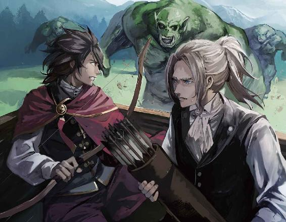
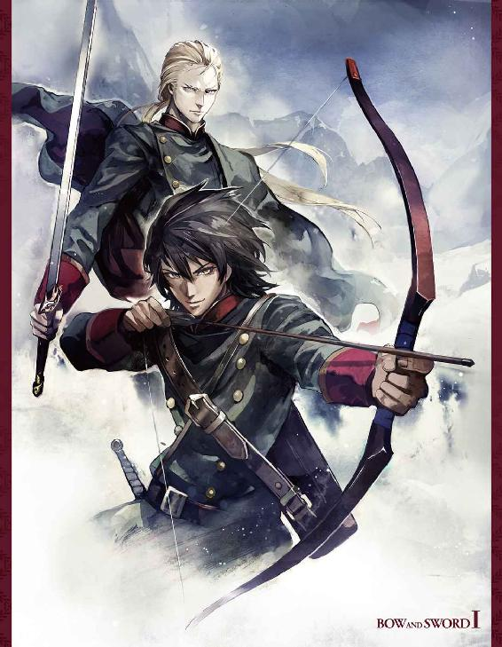
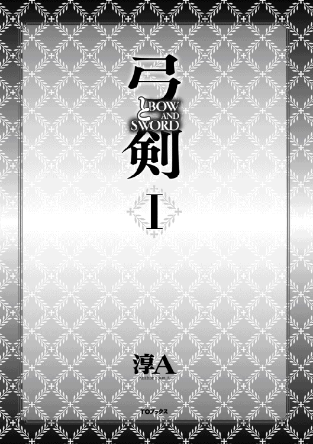
目次
北へ ／ 北の猛虎 ／ オーク ／ 出会い猛虎の話 ／ ギルド街にて甲冑仲買人、ザズの話 ／ 入隊カルア将軍補佐の話 ／ 賞金 ／ 辞表若の父とトビの会話 ／ 祝い酒若の父とサハラン近衛将軍の会話 ／ 父の嘘若の父の話 ／ 支度金 ／ 珠光猛虎の話 ／ 勇名 ／ 根回し弓部隊小隊長達の会話 ／ 新しい弓 ／ 献呈甲冑仲買人、ザズの話 ／ 見学者名簿ある近衛軍兵士の話 ／ 軍牢 ／ ぬれぎれある軍警の話 ／ 従者トビの話 ／ 饅頭 ／ 観察猛虎の話 ／ 名折れ ／ 知略マッギニスの話 ／ 六頭杯モンドー北軍将軍とカルア将軍補佐の会話 ／ 長兄若の兄、サガの話 ／ お祝いの手紙若の兄達の会話 ／ 次兄ある病院事務局長の話 ／ 年下 ／ 派閥ある北軍人事担当者の話 ／ 弓と剣の会北軍新兵の会話 ／ 退職金 ／ 遺言トビの話 ／ 幸運ある御者とトビの会話
北国の冬 ／ 祖母似若の母の話 ／ 特別扱いある北軍人事担当者の話 ／ 正月休暇ある観光客の話 ／ 若番伝説が生まれるまで ／ 祈りある兵士の話 ／ 屋内的場モンドー北軍将軍とカルア将軍補佐の会話 ／ やせ我慢 ／ 歌手ノナの話 ／ 夜更かし ／ 転属タマラの話 ／ 若便りある兵士の話 ／ 悪い奴デュエインの話 ／ 引き分け猛虎の話 ／ 丸くなる ／ 矢切り ／ 指導ウェイドの話 ／ 拮抗近衛軍剣道指導者の話 ／ 半袖 ／ 星読みバスラーの話
感状 ／ 陰謀ディ―バの話 ／ 身代わり ／ 確認 ／ 輝きトビの話 ／ 夜番タマラの話 ／ お叱りハレスタード皇太子殿下の話 ／ 策士ディーバの話 ／ 賭カイザー侍徒長の話 ／ 予感若の父とサハラン近衛将軍の会話 ／ 小隊長辞令
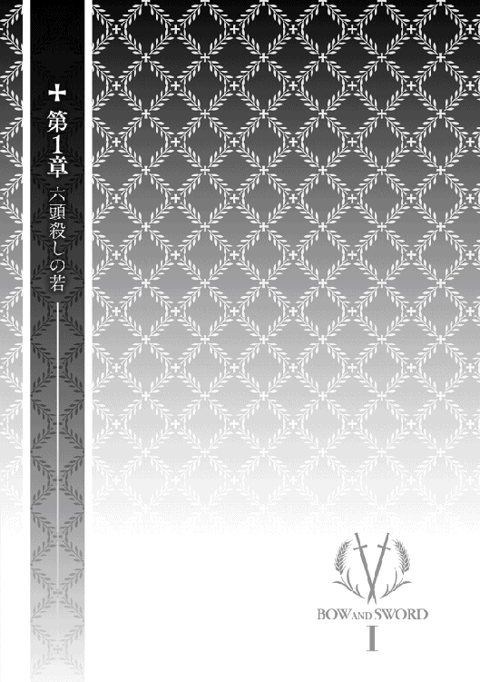
広大な北の原野をぱかぱかと走る荷馬車に揺られ、かれこれ三時間。
ケツが痛い。やっぱり乗車賃が安いだけある。けちらず普通の乗り合い馬車にしても良かったが、ちょうど北の駐屯地行きの荷馬車がある、料金は乗り合い馬車の三分の一と聞いて飛び乗った。安いだけに文句を言う気はない。お目付役のトビはぶつぶつ文句を言っていたが無視した。浮いた分で、もう二泊できる。いや三泊できるかも。
俺はヴィジャヤン伯爵家の三男だけど、懐が寂しいのは庶民とさほど変わらない。貴族の子弟ともなれば、さぞかし普段から遊んで暮らしているのだろうと思うかも知れないが、貴族はある意味、平民よりずっとシビアだ。馬鹿な子供に財産を食いつぶされる事や家名を汚される事を恐れ、早い時期に「見極め」をつける。金の無駄遣いなんてとんでもないし、もし長男が馬鹿なら事故（食あたり、病気、天災）で死んでもらう、ぐらい平気でやる。
これは俺の父上に限った事ではない。現に俺の知り合いの馬鹿は、子爵家の長男である事を鼻にかけ、領内の娘を次々食っていた。そいつは二十の時、乗馬の「事故」で死んだ。普段馬車に乗っている所はよく見たが、その事故があるまであいつが馬に乗れるなんて知らなかった。俺だけじゃない。領内の誰も知らなかったと思う。でもあいつを良く知る人ほど、全然その事故の知らせに驚いていなかった。
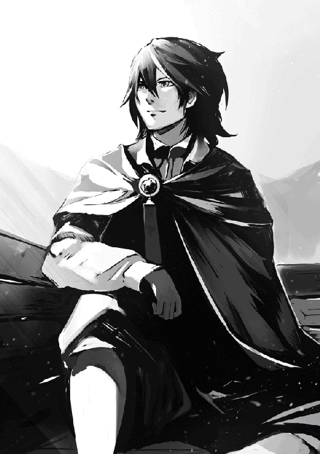
ヴィジャヤン伯爵家の地続きはクマー侯爵家で、現侯爵は他人の家のパーティーには出席しても、自分の家で派手な宴会やパーティーをやった事がないので有名だ。
彼が侯爵位を継いだ時、父上が贈り物を持ってお祝いに行った。その時出された夕飯は我が家の普段の夕飯となんら変わらず、極めつけは庶民が飲む安ワインだったとか。だけど帰って来た父上は、あれなら侯爵家も安泰だろうと言っていた。
大公や公爵とかの大貴族ともなれば、危機の時に皇王室からの支援があるかも知れない。でも中下級貴族にそんなものが来るはずはない。機会があれば潰れてくれた方が嬉しい、というのが皇王室の本音だ。そうすればその貴族の領地は皇王室のものとなるんだから。
領民だって、ほいほい税を納めているばかりじゃない。上からは監視され、下からは陳情という名の突き上げをかまされ、他の貴族とのもめ事だってある。
その上、どこの領地だって農作物の収穫は毎年天候に左右されるんだ。商品の流通のためには金のかかる投資も必要だけど、うまい話なんてそうそうない。あれやこれやを生き残るためには、えぐい事だってやらねばならない事もある。苦労の種は尽きない、それが貴族の現実だ。
次男、三男なんて、さっさと独立しろ、で終わり。とは言っても、次男は長男のスペアとして有用だし、長男に子供が出来ないから次男の子供を継嗣にする、という場合もあるだろう。
数ある貴族の中には継嗣がいない、またはいても女だから、貴族の次男、三男を婿に貰いたいという家もない訳じゃない。しかしそんなのは少数だ。少数なだけに、そのスポットを巡る争いは熾烈を極めると言っても過言ではない。
世慣れた俺の父上は、長男のサガ兄上が爵位を継げる器だと分かった途端、次男のサジ兄上と俺に、こうおっしゃった。
「お前たちに愛想を垂れ流す才能はない。特にサダ。お前の女の扱いは寒いの一言に尽きる。婿の道は諦めろ。文官として出仕するか、軍に入隊するか。どちらもやりたくないなら、早目に食うに困らない職を探せ。いつまでも呑気に実家暮らしができると思うな」
兵士も文官も気が進まないサジ兄上は医者になる道を選び、必死にお勉強なさった末に、無事医学校に入学なさった。呑気な俺は軍で良い、とあんまり（全然）勉強はしなかった。
軍といえば、一番の人気はなんといっても近衛軍。皇王陛下をお守りする。
近衛五軍の中なら移籍は可能だし、近衛兵というだけで女にもてる（これ重要）。国内はもちろんの事、外国に行かれる皇王族をお守りするのも近衛だから、配属先によっては色々な所に行ける。
唯一の欠点といえば、近衛軍ともなると高位の貴族の子弟が目白押しで、伯爵なんぞ鼻もひっかけられない。親のコネをあてにしたって無駄。出世したいなら自分で何とかするしかない、てとこか。
東軍も結構人気がある。慣例で、皇太子殿下が将軍として指揮を執る事になっているからだ。つまり運が良ければ次代の皇王陛下に顔を覚えて戴けるかも知れない。
皇王陛下ともなれば軍の謁兵ぐらいはなさるけど、兵士と一緒に訓練するなどありえない。その点、東軍兵士となったら皇太子殿下と一緒に訓練する事もある。そのうえ一年に三ヶ月は同じ釜の飯を食うんだって。
普通に生きていたら、遠くから御尊顔を拝見する事さえ滅多に叶わないお方なんだ。間近にお会いできる機会があるだけでもすごい。
難点は、どの軍も兵士は五万人以上いるんだから、東軍に入隊したというだけでお側に近づけるという訳ではない。
南軍には海軍がある。俺は海も船に乗るのも好きだから、南に行ってもいい。
西軍には空軍がある。飛竜に乗る竜騎士になりたいなら西だ。
ところで、貴族は自領に私兵を持っている。その一番上に立つのは爵位を持っている人だけど、実際の指揮をするのは弟とか、息子なのが普通だ。でもヴィジャヤン伯爵家は他と少し変わっていて、ヴィジャヤン伯爵領を警備する軍隊っぽいものはあるが、父上は自分の息子をそこに入れる気はないみたいなんだよな。実家が給料を払う事になるのが嫌なのかも。詳しい理由は知らないが、そこに入りたいと言っても父上に反対されるのは目に見えている。
まあ、私兵団に入らなくても、自分の領地に駐在する皇国軍へ入隊する者は多い。偶の休みに家に帰る事だって簡単だし。ヴィジャヤン伯爵領は南に近い西域にある。南軍第六駐屯地と西軍第三駐屯地の真ん中ぐらいだから、どちらを選んでも馬で二日もあれば実家に帰れる。
見栄えで近衛か。
将来性を見込んで東軍か。
実をとって西軍か（自領があるだけにコネもある）。
海軍もいいな、と迷ってるふりをしていると、それなら決める前に全部を一度その目で見てきたらどうだ、と金払いの渋い父上に言わせる事に成功した。
貴族の子弟ならどの軍であろうと無条件で入れるが、一旦入ってしまえばよほどの事がない限り、他の軍へ移る事はできない。それで父上から近衛と東南西各軍に行く分の旅費は貰えた。でも北軍まで行く必要はないだろうと言われ、その分は貰えなかったんだ。それをけちって北への旅費をひねりだしたので貧乏旅行になっている訳。お目付役のトビがいるから、他に行かずに北にだけ行くという事はできない。
そう、実は、俺が入隊したいのは、父上の希望からほど遠い北軍だったりする。確かに父上はどの軍を選んでも良い、とおっしゃった。だけどそれは、まさか俺が北軍を選ぶとは思っていらっしゃらないからだろう。
北軍に入隊したって勘当されたりはしないと思うが、入隊支度金までは出してくれないだろうな。それでも俺は北へ行く。
なぜ北か？
それはもちろん、「北の猛虎」がいるからだ。
新年に行われる御前試合は、個人で戦う新人戦と、近衛東西南北軍で勝ちを争う軍対抗戦に分かれて行われる。
ヴィジャヤン伯爵家では、十三歳になると御前試合に連れて行ってもらえる。大人への第一歩というか、社交界への顔出しという感じ。わくわく、どきどき、もう何年も前から俺はその日を楽しみに待っていた。
五年前、俺が初めて連れて行ってもらった年の新人戦で、圧倒的な強さを見せて優勝したのがリイ・タケオ。後に「北の猛虎」というふたつ名で呼ばれるようになった稀代の剣士だ。豪快な剣捌きと鮮やかな剣技は他を寄せ付けない。どの勝負も一瞬で片がついた。
次の年、彼はなんと北軍の大将として参戦し、自軍に優勝をもたらした。軍対抗戦は各軍五名の剣士、先鋒、次鋒、中堅、副将、大将で一チームとなる。先鋒が負ければ次鋒が当たり、それでも負ければ中堅が出る。だから近衛のような強い所は、大将が戦う前に勝負が付く事もある。
毎年、優勝は近衛と北軍のいずれかで争われていた。でも結局は近衛が勝つというパターンで、もう何年も近衛以外の軍が優勝した事はないと聞いている。
その年、リイ・タケオが率いる北軍は意外な粘りを見せた。優勝決定戦において副将同士が引き分けたんだけど、ここまでもつれ込むのも珍しいんだって。続く大将戦で、激戦の末、リイ・タケオが勝利したのだ！
近衛軍以外が御前試合で優勝したのは実に五十二年ぶり、と父上がおっしゃっていた。この衝撃は半端ではない。十九歳で大将を務めただなんて史上最年少。その歳で軍対抗戦に参戦したというだけでも史上に残る快挙なのに、優勝大将だ。しかもリイ・タケオは平民。過去、平民が軍対抗戦で大将を務めた事は一度もない。
次の年、彼はますます強くなっていた。そして前年の勝利が決してまぐれではない事を証明した。北軍は副将が近衛の中堅に負けたんだが、リイ・タケオが中堅、副将、大将を次々と破り、二年連続の勝利を北軍にもたらしたのだ。
更に目を見張ったのが、一昨年の大将戦。なんとリイ・タケオは近衛の大将を剣で宙に飛ばすという荒技をやってのけた。俺も自分の目で見たのでなければ信じられなかったと思う。大将になった剣士はどう見ても百キロを越えているし、防具だって付けているんだから。
勝ったリイ・タケオのあげた大会場を揺るがす大咆哮。それが「北の猛虎」のふたつ名を定着させた。
だけど去年と今年は近衛が勝った。但し、リイ・タケオと戦って勝ったのではない。近衛は同じ選手が参戦できるのは三回まで、という新しいルールを生み出す事で勝ったのだ。つまり既に三回参戦しているリイ・タケオに参戦権はない。
元々軍対抗戦出場選手は三十歳以下と決められていた。軍対抗戦に出られるほどの剣士となると、先鋒でさえ三十に近いのが普通で、三回も続けて出られる剣士自体あまりいない。でもリイ・タケオは三度目の優勝時で弱冠二十一歳。そのまま行けば、後九回北軍に優勝をもたらしたはずなんだ。
近衛って案外せこいぜ。いや、予想通りせこいぜ、と言うべきか。
若いからどうした、平民だから何だ、貴族のプライドなんてくだらん、と俺なら思うけど。北軍に負けただけでも腹が立つのに、平民が史上初の記録を次々と樹立していくのを見て、面白くないと思った貴族はいくらでもいた。
姑息なルールとはいえ、それを阻止できるぐらいの有力貴族は北軍にいない。そもそも北に領地のある貴族は子爵か男爵しかいないのだ。
それに軍対抗戦に参戦するのだって、どの軍も貴族の剣士ばかりで、平民が選ばれるなんて他の軍だったら考えられなかった。北軍なら平民の将校も結構いるらしいが。そのため北軍は別名、平民軍と呼ばれている。将軍、副将軍、大隊長レベルはさすがに全員貴族だと思うが、他の軍だったら中隊長はもちろん、小隊長だって貴族でなければなれない。
それで庶民の人気は高いけど、貴族の子弟で自分の領地が北にある訳でもないのに北軍にわざわざ入隊したいという奴はいないんだ。それでなくとも北は寒い。土地は広いが、農家や牧場が点在するだけで娯楽らしい娯楽は何もない所だ。
ただ、北軍に入隊すれば、しょぼい伯爵位でも昇進の足しになるだろう。だから俺にとっては悪い事じゃない。もっとも昇進なんてどうでもいいんだ。
北軍の魅力。
それは稀代の剣士リイ・タケオに生で会える、という事に尽きる。
十八年しか生きていないけど、俺には分かる。仮に俺が八十歳だったとしても、あれほど圧倒的な強さを目にするのは生まれて初めてだったに違いない。近衛の奴らだって、何年訓練しようと何年待とうと、北の猛虎を打ち負かす剣士は現れないと思えばこそ、あんなルールを作る事に奔走したのだ。
まあ、北軍だって五万人いる。その中の一人に会うために入隊するって、東軍で皇太子殿下に会うみたいなもんだよな。だけど相手は平民だから、皇太子殿下と違って俺が会いたいと言えば会ってくれるかも知れない。
もしかして剣の稽古をつけてもらえるかも？
いや、いや、いや。それはいくらなんでも初年兵の分際であつかましいだろ。
でもさ、稽古してる所を見学するぐらいなら構わないんじゃないか？
いつでも北の猛虎が見れるだなんて、それだけでも俺の剣道仲間が羨ましがる事、確実だ。
ひょっとして、彼が小隊長を務める隊に入れたりして！
そんな事を考えるだけで、うわーっと叫びたくなっちゃう。
猛虎がいる北軍駐屯地まで、もうすぐ。そう思えば多少のケツの痛みなんて何でもない。
その幸せな白昼夢を破る、地鳴り。
どどどど、、、
がああああ、、、
ぎゃぎゃぎゃ、、、
オークだ......
びゅん
鞭がしなる。だが打たれなくたって、馬も必死だろう。
哀しいかな、荷馬車用の駄馬。駿馬の速さでもなけりゃ、オークから逃げきるなんて無理。
捕まれば食われる。
いーやーだあああ。
剣の腕は大した事のない俺だが、一応剣を持って来た事は持って来た。だけどオークの皮は硬すぎて俺の剣じゃ切れない。なにしろあいつらの皮を使って甲冑が作られるぐらいなのだ。
しかもオーク用の特殊な剣を使ってさえ、切れる場所が限られている。仮に俺がオーク用の剣を持っていたとしても太刀打ちできたとは思えない。なのに、そんな化け物が七頭も！ 群れをなして、俺達を追いかけて来る。
北で狩猟を楽しむつもりだったから弓矢なら持って来たし、弓の腕なら少しは自信がある。だけどこの弓は鴨や兎を狩るための中距離用だ。普通に狙ったってオークを倒せる訳がない。
ただ、オークはでかい口を開けて走っている。俺のなまくらな弓で倒すとしたらあの口に命中させるしかない。
がたがた揺れる荷台から、全速力で走るオークを狙って？
当たるかよ。だけど当たらなければ食われる。こっちも必死だ。
バシュ！
なんと二本目の矢が先頭の奴に当たってくれた。
ぐわああ、と叫んで、オークがのたうち回る。
まぐれでいいんだ。とにかく当たってくれ。
死にたくない！ 北の猛虎に会うまでは。せっかくここまで来たというのに。
汗が弾ける。拭っている間もない。
後六頭。
天に祈っている暇さえないが、それでもなんとか二頭目を三矢で仕留め、三頭目を五矢で倒した。
追いつかれる前に、と必死に弓を引く。だけど矢に限りがあるから、無駄打ちにならないよう気を付けないと。どうか、どうか、間に合ってくれ。
四頭目。くそっ。
あせっているせいか、なかなか当たらない。生まれてこのかた、飛んでいる鳥を射ち落とす時さえ滅多に外した事がないこの俺が。
落ち着け。落ち着くんだ。
息があがり始めたが、なんとか八矢目で四頭目を仕留め、五頭目を四矢で、六頭目を五矢で倒す事が出来た。残念ながら、持って来たのはたったの三十矢。残りはあと三矢しかない。
間に合うか？ まだ最後の一頭が残っている。ぜいぜい息があがって、もう弓を引き絞るのさえ無理かも。けど弓なんて触った事もないトビに俺の代わりをやらせたって、かすりもしないだろう。
びゅん。
あと少し、というところで外した。
びゅん。びゅん。
矢が尽きた。
がしっと、オークの腕が荷馬車の端を掴む。馬車を止められ、俺達はすぐさま荷台から飛び降りて、一目散に駆けだした。
ひーーん、、、
がう、がーーぐっ、ぐっ、
馬はかわいそうだが、オークが馬を食べてる間に逃げきれれば俺たちは助かる。何分で食べ終わる？
幸い他のオークを全部倒したから、馬一頭で腹が膨れてくれるかも？
とは言っても、しょぼい馬だ。足りなかったら？
ここまで来れば、駐屯地も近いと思うけど。
後五キロ？
十キロ？
分からない。
全速力で走ったせいで、俺は二十分もしない内に息切れし、これ以上走るなんて無理という有様になった。
「若！ ここで留まる訳にはまいりません。もう少しがんばって下さい。間もなく駐屯地が見えて来るはずです！」
俺は首を振る。
「ト、ビ。......はあ、お、まえ、は。......あ、先、に、行け」
「何をおっしゃる。若を置いて、先に行ける訳がありません」
「いや、おまえは、はあ、足だけは、俺より、速い、から。はあ、お前が、先に、行って。た、助けを、呼んで、こい」
「誰かを呼びに行くなら、あの御者がもう先に行ってます」
俺はヴィジャヤン伯爵家の家紋付き指輪を外し、トビに渡した。
「助けが、もし、間に、合わなかったら、父上に、これを。さっさと、行け。これは、命令だ！」
「わたしの主は伯爵様です。旦那様より若のお側を離れるな、と命令されております。これはお預かりできません」
「ここまで、おまえを、はあ、連れてきた、責任は、俺に、ある。お前まで、ここで、一緒に、死ぬ事は、ない。今なら、まだ、きっと、大丈夫だ。走れ！」
「若が走れないなら、若を背負って走るまでです」
「な、なに、ばか、言ってる。そんなの、できるわけ」
「若、私は死ぬまでお側を離れません。四の五のおっしゃるだけ無駄です。何とか速足でいいですから、がんばって下さい。追いつかれたら追いつかれたで、ひとりよりふたりの方がまだチャンスがあります！」
オークに追いつかれたら、俺程度の剣では通用しない。
ふたりがかりだって無理だ。トビも一応、小さい剣を持って来ているが。
トビは足は速いけど、武術の類を習った事はない。
それにしても、真面目な奴だとは知っていたが、俺は呆れた。ここで俺と一緒に食われたって無駄死にだって事ぐらい、どうして分からないんだ？
とにかく口を使うだけで疲れるから、もうそれ以上何も言わなかった。トビは俺より三つしか上でないが、父上に勤勉と明晰なのを見込まれ、俺の側付きとして今回の旅に付いて来た。父上の信頼に応えたいという気持ちは分かるけど、この命の瀬戸際に。時と場合を考えろよ。
追いつかれない事を祈りながら、なんとか少しでも先へと足を動かした。だけど俺達の祈りなんて、オークの知った事じゃない。
ど、ど、ど、、、
最後の一頭の足音が、後ろから近づいて来る。追いつかれた。
俺とトビは、迎え撃とうと剣を構えた。
ぐおおお、、、
間近で見るオークのでかいこと。俺とトビは左右に分かれ、隙を狙おうとした。オークが右腕を大きく振りかぶる。
ザン！
突然、影が横から現れ、オークに襲いかかった。
それがオークの右脇から上に向け、鮮やかな一太刀を浴びせる。
があああ、があああ
傷付けられて、怒り狂ったオークの目標が新しく現れた敵に向かった。
ぐぐぐぐ、ぐぐうう、
無傷の左腕を振り上げ、剣士をなぎ倒そうとする。
その隙を狙った剣士の一太刀が左脇に決まった。
ぎゃあ、ぎゃあ、ぎゃあ、
剣士はそこでオークから逃げる様子も見せず、転げ回るオークを追いかけ、顎の下に止めを刺しに行った。手負いのオークの最後の抵抗を物ともしない剣士の一撃が振り下ろされる。
オークの断末魔が辺りに響き渡った。あっけにとられて見ている俺達の前に、見事な体躯の剣士が近づいて来た。
いくら近づいて来るオークのせいで後ろにばかり気を取られていたとはいえ、見晴らしの良い原野だというのに、全然気づかなかった。身を隠せる場所なんてどこにもないのに。一体この剣士はどこから湧いてきたんだろう？
足ががくがくする。走りすぎたためか、ほっとしたのか。
ともかく、ともかく、助かったのだ。
お礼を言おうと、改めて剣士の顔を見た。
「北の猛虎」がそこにいた。
これってまさか、会いたい会いたい、と思いすぎたために見る幻覚とかじゃないよな？
「怪我はないか？」
俺はなんとか首を振って応えた。声が出ない。
すると彼はぴーーーっと鋭い口笛を吹いた。
カッカッカッと蹄の音が聞こえてきて、遠くから馬に乗った北軍兵士が三人、駆け寄ってくるのが見えた。灰色の髪の兵士が俺に向かって聞いた。
「怪我人は？」
息があがって答えられない俺に代わってリイ・タケオが短く、ないと答えてくれた。すると茶髪の兵士がオークの死骸を指さしてリイ・タケオに聞いた。
「これが最後か？ まだいるのか？」
リイ・タケオが俺に、こいつ以外、何頭見た、と聞いてくる。六頭、と言いたいが口がまだ動かない。そこでトビが代わりに答えてくれた。
「六頭です。全部、若の矢が仕留めました」
トビ、お前はすごい。すごいぞ。
分かっているのか？ この剣士こそ、かの有名な「北の猛虎」なんだぞ。
生リイ・タケオに、今、話しかけているんだぞ、と軍対抗戦を見た事がないトビに教えてあげたかったが、喉がひっついてしゃべれない。
「散らばっているだろうから、回収班全員に招集をかけてくれ」
リイ・タケオの命令に、赤毛の兵士が応と頷いて駐屯地に向って駆け出した。灰色の髪の兵士が言う。
「すげーな。六頭って。しかも、矢？ 歴史に残る快挙だぜ」
リイ・タケオが俺に向かって聞いて来る。
「どうやって倒した？ ふたりだけで仕留めたはずはないだろう？ それとも他の奴らはみんな殺されたのか？」
せっかくリイ・タケオと直に話す機会が訪れたというのに、俺の声はまだ戻らない。くそっ。声よ、戻れっ。
どうやら俺の声が出ないらしい、と気付いた茶髪がトビに聞いた。
「俺の名はオダ・スリカンスだ。お前達の名前は？」
「さ......」
名乗ろうとはしたのだ。だけど声が、自分の声が聞こえない。
憧れの生リイ・タケオを前にして。
かっこ悪い......。せめてびしっと挨拶ぐらい、名前を覚えてもらえるチャンスなのに、と考えたのが最後。
空白が俺を包んだ。
また貴族の馬鹿が来た。
走り疲れ、へろへろになっている二人連れを見て、俺は心の中で舌打ちした。新年の軍対抗戦で優勝して以来、俺の顔を見たいという入隊希望者が増えた。
それがどうした、顔なんて見られたって減るもんじゃなし、と呑気に構えていられたのは最初の一年だけ。
平民はまだいい。遠慮というものを知っている。
貴族。これはもう救いようがない。初年兵だろうが、実家がなんたらかんたら爵位を持っているというだけで、上官の俺に命令できると思っていやがる。
俺は平民だが、軍対抗戦において北軍に五十二年ぶりの勝利をもたらした剣士として、将軍以下、上官に厚遇されている。新人戦に優勝した後で軍曹に昇進したし、大将として優勝した後、小隊長に昇進した。つまり軍の序列で言えば、俺が命令を聞かねばならないのは中隊長以上だけだ。
俺に命令できる奴の数が限られているのはいいんだが、残念ながら平民だらけの北軍では、中隊長といえどもせいぜいで子爵家出身。下手をすると俺と同じ平民さえいる。だからどうしても貴族に対して腰が低くなり、伯爵家や侯爵家出身の初年兵に何かを頼まれると嫌と言えないのだ。
やれ剣の指導をしてくれの、護衛をしてくれの。それがひとりやふたりじゃない。いやはや、これが永遠に続くのかと思うと、来る貴族という貴族の奴ら全員をぶち殺してやりたくなる。
そしてここに現れた、いかにも良家の子弟という旅装の入隊志願者。もうひとりはその従者だろう。
この先で、荷馬車の御者に会ったんだが、季節外れのオークに襲われ逃げて来た、と言っていた。何でも若様の方がオークを次々矢で倒したんだと。
オークを矢で倒す？
そんな事、できる訳がない。オークの皮は堅いから、特殊な刃の剣で脇下とか顎の下とかの柔らかい所を狙わないと切れないんだ。普通の矢や剣で立ち向かったって、跳ね返されて終わりだろ。
しかもちょっと見ただけでも、貴族の方はよたよた。あんなんで矢が射れるもんか。歩くのもやっとじゃないか。何かの見間違いだろう。
もっとも、オークを振り切ってここまで走って来たのなら、相当な距離を走ったのだとは思うが。オークは最低でも五頭、多い時は八頭の集団で獲物を襲う。充分な装備がないと必ず怪我人や死人が出るから、北軍がオーク狩りに行く時は最低でも五十人ぐらいの隊を組んで行くのだ。
ひとりで何頭ものオークを倒せる奴なんていないし、俺でさえ二頭以上に襲われたらひとたまりもない。一頭だけなら、まあ、大丈夫だと思うがな。
だが、このなよっちい貴族のぼっちゃんがオークを矢で倒しただなんて、そんな訳あるか。それとも矢に毒でも塗っていたのか？
この様子では、どうせ間もなくオークに追いつかれて食われる。こいつらが食われた後で、腹が膨れて動きの鈍ったオークを片付ければいい。俺は近くに馬を隠し、徒歩で逃げる二人連れに近づいて行った。
そこに主従の会話が聞こえて来た。どうやら主の方が従者に逃げろと言っている。
まじ？
まじなんだろうな。死を覚悟して、従者に形見を渡そうとしているところを見ると。
そして従者は逃げない、と。
え？
おいおい。そこまでオークが来ているんだぜ？
主の方は、ちょっとはましな剣のようだが、従者ときたら果物ナイフかっていう短剣ひとつだ。一緒に心中したい理由でもあるのか？
こいつら、男同士だよな？
まさか......な。
すぐにオークが現れた。なんと、本当にたったの一頭だ。他のオークはどこに行った？
オークは群れから離れて獲物を襲うという事をしない。自分が最後の生き残りの一頭というのでもない限り。するとあの御者が言ったように、本当に他を全部倒して来たのか？
オークが唸り声と共に、右腕を大きく振りかぶった。
まずい。色黒の方がやられる、と思った途端、体が動いていた。
俺の剣がオークの弱点である右脇下に決まり、次に左を、そして喉に止めを刺した。
ほっと一息吐いて、二人がいた方を振り返ると、例のぼっちゃんはがくがく震えている。きっと立っているのもやっとなんだろう。武士の情けで気がつかない振りをしてやっているが、あと三分ももたんな。
従者に聞いてみると、どうやら正真正銘、こいつがひとりでオークを六頭、仕留めたらしい。正直言って、とても信じられないが、それならオークを回収して見れば分かる事だ。
しかしもし本当だとすれば、将軍、いや皇王陛下からの報賞ものだぜ。軍対抗戦優勝なんて目じゃないぐらいの大金星と言っていい。軍対なんて所詮、人間相手だからな。
そいつは俺の質問に答える前に気を失ったが、怪我はしていないようだし、起きたら詳しい事を聞けば良い。俺はぶったおれた貴族の坊ちゃんを俺の馬に乗せ、従者にデサンレの馬に乗るように言った。
これが後世に語り継がれる「弓と剣」、北の猛虎と六頭殺しの若の出会いとなるとは、その時の俺は知らずにいた。
工場に無傷のオークが六頭持ち込まれたという知らせは、あっという間に第一駐屯地の北にあるギルドの全員に知れ渡った。
オークの体に捨てる部位はない。実に様々な使い道がある。
歯、骨は加工されて彫刻や工芸品、或は小刀となる。
爪は装飾品や楽器の爪に使われる。
蝋は蝋燭や化粧品、防水用ワックスになる。
脂肪から油が取れるし、内臓は薬か毒薬（殺虫剤）になる。
筋は弓弦や楽器の弦に加工され、肉はそのままでは食えた物ではないが、薫製にすると一年以上日持ちのする保存食となる。
しかしなんと言っても一番高値で取引されるのは皮だ。鉄並みの強度がありながら軽く、気温が下がっても冷たくならない。極寒の北では、兵士は必ずオークの甲冑を身に付ける。
だがオークを狩る時、どうしても仕留めるための傷があちこちに付く。それで普通は一領の甲冑を作る為に、何頭もの皮を継ぎはぎして一領にする。無傷のオークから作られた甲冑に家一軒買うほどの値が付くのは、傷なしがそれほど珍しいからなのだ。
「食堂カリコ」は、味はそこそこだが、ギルドの工場に一番近く、大量の仕出し弁当も出せる飯屋だ。
その日、カリコの裏にある駐馬場で馬に飼い葉を食わせながら人待ち顔なのはザズ。甲冑仲買人として、ちょっとは名の知れた男である。
ザズは鼻が利く。また、そうでなくては仲買いの世界で生き抜く事はできない。何事も時間との勝負だ。駐屯地からの正式発表を待っていたら、手に入る物も入らない。それは甲冑に限った事でもないだろう。
目当ての男が小走りで店から出てきた所を、すかさずザズが呼び止めた。
「よう、カイ」
「忙しい。またな」
「まあ、そう言わず。俺の馬に乗って行っていいぜ。お前の馬は腹も減ってるようだし、散々走らせたんだろ？ 一応水を飲ませておいたけどな」
そこまで親切にされては無下にもできない。
「ちっ。何が知りたい」
「どうして無傷だ？ 病気か？ 毒か？ まさか、槍で喉を突いたって話じゃないよな？」
「矢だ」
「矢って。あの弓矢の矢？」
「それ以外に何がある」
「鏃に毒を塗っていたとか？」
「いや。ただの素矢。だが口のど真ん中だ。出血で窒息死」
「一頭はそれでも、他の五頭は？」
「六頭全部」
さすがに予想もしなかった情報で、ザズは思わずカイの顔をまじまじと見てしまった。しかし他の奴ならともかく、真面目で知られる甲冑職人のカイが嘘をつくとは思えない。
「それって、いつ。いつ殺されたんだ？」
「今日」
「今日？ 何頭が今日？」
「全部、今日。じゃあな」
カイはさっとザズの馬に乗った。ここで逃げられてはたまらない、とばかりにザズは馬の轡を掴んだ。
「おい、待て！ 何頭売りに出る？ 全部買うぜ」
「俺に聞くな。傷ありの一頭は売りが決まっているが、傷なしは奏上が先だ」
「それは一頭で済むだろうが。将軍へもう一頭としても、後四頭ある訳だろ」
「仕留めた奴次第だ」
「何人でやったんだ？」
「ひとりだ」
「ひとりって。んな訳ないだろう？」
「俺に言われてもな。下準備は始まっているが、加工を始めるのはそいつが起きるまで待てと言われた。俺が知っているのはそれだけだ」
「瀕死なのか？」
「無傷だ。朝には目が覚めるだろ」
カイはそれだけ話すと、さっさとザズの馬に乗って走り去った。
知りたい事が全部分かった訳ではないが仕方がない。ばてばてに疲れている馬をなだめなだめ、ザズは次に薬屋へ行った。
「おい、ガン」
「無理。今日も、明日も、あさっても」
「おい！ くそっ」
あっという間に逃げられたが、薬屋相手では仕様がない。オークの内臓を取り出すのは時間との戦いだ。新鮮であればある程高値が付く。ザズは諦めて他を当る事にした。
だが肉屋には店番さえいなかった。
弓屋。店が閉まってる。
刀屋。同上。
宝飾店。店長がおらず、店番の店員は何も知らない。
油屋。同上。
楽器店。同上。
蝋燭屋。ザズは、開いている店に入っていった。
「よう、蝋燭買いたいんだが。二十匁を百本」
「申し訳ございませんが、あいにく只今はそれほどの在庫がございません。でも三日ほど戴ければ」
「あてがあるのか？」
「はい。本日、七頭。わたしもこれで店仕舞いし、すぐ工場に行く所でして。今夜から職人全員、不眠不休ですわ」
「へえ。七頭も。誰が仕留めたんだか知っているか？」
「北の猛虎が一頭、というのは聞いていますが。残りは、うーん。噂じゃひとりでやったとか。でもまさか、ねえ？ ひとりで六頭も殺れたはずないし。他にもいたけど、みんな死んじまった、て事なんじゃないんですか」
「その生き残った奴の名前、分かるか？」
「軍では六頭殺しの若って呼んでるようですけど。本名じゃあないでしょう」
「ほう、六頭殺しの若」
急いでいる風の女中が、そこに割り込んだ。
「ちょっと、五匁の蝋燭、二本頂戴」
「はい、ただいま」
蝋燭屋を出たザズは、軍の駐屯地へ向かって嫌がる馬を走らせた。
「カルア様、この矢羽根の家紋に見覚えはございますか？」
傷なしが運び込まれたと聞いてギルドの工場へ出向いたら、ギルドの長、レイコウが家紋について聞いてきた。手にしているのは、オークを殺したという矢だ。
「どれにも同じ家紋が付いておりました」
自分には見覚えがなくとも、北軍将軍補佐である私なら分かるかも知れないと思ったのだろう。その問いに危うく、ヴィジャヤン伯爵家のものだ、と答えそうになった。
「調べてみないと分からん。分かったら知らせる」
六頭ものオークを矢で射殺したというのは皇国史上に残る大金星だ。その殊勲をあげた者の名が即座に広まってしまう事は避けたい。
幸い、貴族は数千家ある。大公、公爵家なら数も少ないし、名も家紋も知られているが、侯爵、伯爵ともなれば自領の領民ならともかく、そうでないなら沢山ありすぎて覚えきれるものではない。
甲冑や武具には必ず家紋を付ける。過去に取り扱った注文なら実に良く記憶しているレイコウだが、ヴィジャヤン伯爵家は西南にある。おそらく今までオークの甲冑を注文した事はないだろう。
何故私がその家紋を知っていたかと言えば、モンドー北軍将軍の祖母はヴィジャヤン伯爵令嬢だからだ。将軍と私は入隊前からの長い付き合いで、幼馴染みと言って良い。その関係で、モンドー子爵家の親戚を知っているのだ。
将軍の母上は将軍を産んだ後、間もなく亡くなった。将軍の父上は再婚なさらず、将軍は祖母に育てられたので、将軍の自宅に遊びに行った時にお会いし、お話を伺った事も良くあった。先々代モンドー子爵夫人は深窓の伯爵令嬢らしからぬ剛胆な気性の御方で、妻を亡くし落胆した息子を支え、領地の経営を助け、孫を育てた。
結婚以来、西の実家に帰った事はないとおっしゃっていたが、ヴィジャヤン伯爵家が代替わりした後も何かと行き来はあるようで、葬式、結婚、出産、就職など、話の端々にヴィジャヤン伯爵家の名前が出ていた。
家紋入り矢羽根は、その家の直系男子だけが使う事を許される。確か、先代伯爵は既に亡くなっており、当代伯爵に男の兄弟はいない。
射手は若い男だと聞いている。すると伯爵本人のはずはない。伯爵には息子が三人いるから、その内の誰かだろう。
ただ、継嗣である長男は、今宰相の元で文官の修行中のはずだ。
次男は南の医学校に在学中だったか。医者を目指しているのなら弓の名手とは考えられない。
では、三男？
今年あたり、入隊する年だったような。
弓の名手であると聞いた事はないが、剣とは違って弓の競技大会がある訳でもないのだ。才能が知られてなくとも不思議ではない。
とはいえ、彼が将軍の祖母の伝手を頼って北軍に入隊しに来た、とは考えづらい。
ラガクイスト西軍将軍はヴィジャヤン伯爵の従兄弟だ。
バーグルンド南軍副将軍はヴィジャヤン伯爵の幼馴染みで、間もなく将軍に昇進する事になっている。
オスタドカ東軍副将軍にはヴィジャヤン伯爵の義妹、伯爵夫人の実妹が嫁いでいる。
サハラン近衛将軍はヴィジャヤン伯爵の飲み友達のはず。つまりどこの軍に行こうとも、北軍以上の強力なコネがあるのだ。
剛勇の北と言えば聞こえは良いが、北に領地がある訳でもない貴族が入隊したくなるような魅力など何もない。皇国が対外戦争を仕掛けた事はもう何十年もないし、外国が侵略するには、まず東か西を通過せねばならないのだから、北軍兵士が戦功によって昇進する機会は全くないと言っていい。
殊勲をあげる機会があるとしたら、天災の時の救助活動かオーク狩り。これが地味な割に結構きつい。加えて若い者が喜ぶような娯楽がある訳でもない。そして長く厳しい冬とまずい飯。はっきり言って、給料も全軍の中で一番低いのだ。
情報通として知られているヴィジャヤン伯爵が、家名を上げるほどの弓の名手をわざわざ北軍へ送り込む必要がどこにある？
北で諜報活動？
あり得んな。
ではなぜ彼はここにいる？
まさか、親と喧嘩して家出した？
いや、従者が付いているというし、家出ではないだろう。とすると、唯一考えられるのが北の猛虎に憧れて、というやつだ。
庶民の英雄としてもてはやされているタケオだが、最近では貴族の子弟でもタケオが理由で北へ入隊してくる者が増えた。或は入隊志願というより、見学でもしに来たか？ 他に入隊する前に北の猛虎を一目見たい、とか？ それならあり得る。
国内外の事情に知らない事はないと言われるヴィジャヤン伯爵だ。自分の息子の弓の腕前を知らなかったとは思えないが、仕留めたら皇国中にその名を轟かすような猛獣なんて、西にはいない。オークを矢で射殺すとは皇国史上に残る偉業だが、オークは北にしかいないのだ。これ程の弓の腕前とは知らなかったという事は充分考えられる。
いずれにしても、この大手柄が皇国全軍に知れ渡るのは時間の問題だ。それをやり遂げたのが入隊前の青年と知れ渡れば、全軍から勧誘の手が伸びるだろう。仮に平民だとしても。それがヴィジャヤン伯爵家の三男となれば、将軍を巻き込んでの争奪合戦が始まる事は間違いない。
タケオのおかげで人気が出た北軍だが、後に続く剣士はいない。不世出の剣士が毎年現れるはずもないが、他の軍にはタケオ以外の魅力がある。残念ながら今の所、北軍にはそんなものなどひとつもないのだ。だが、オーク殺しが北軍にいるとなれば入隊志願者が更に増える。
ふむ。これは是非とも北軍への入隊を決めてもらわねばならんな。
父伯爵や他の将軍からの邪魔が入る前に。
目が覚めたら、そこには見慣れた顔。
トビが心配そうに俺の顔を見つめている。
「今、何時？」
「朝の八時です。食欲はありますか？」
「うん。腹ぺこ」
そう言って、いつものようにさっと起きようとしたら、突然ぎんぎんの筋肉痛に襲われ、思わず、ぎゃ、と声が出た。
「いっで、で、でー」
特に足と肩がひどい。右腕なんて、ちょっと動かしただけで、すごく痛いものだから涙がにじんだ。慌てず騒がずトビが言う。
「筋肉痛に効く軟膏をもらってあります。まずそれを塗りましょう。お食事は今すぐベッドまでお持ちしますから、どうぞそのままで」
そして手際よく俺の肩から腕の筋肉を丁寧に揉みほぐしながら、すーすーして気持ちいい痛み止めの薬を塗ってくれた。
俺はあっけにとられてトビを見た。
誰、この人。
何、この扱いの違い。
俺が知っているトビは、言われた事はやるが言われない事はやらない奉公人だった。痛み止めを持って来いと言われれば持って来るし、塗れと言われれば塗ってくれる。
だけど言わなくともマッサージを始めるとか、薬や食事を持って来るという気配りをされた事なんて今まで一度もない。それは俺が一目見れば分かる擦り傷や切り傷を付けていた時でもそうだった。
もちろん、父上、母上、兄上達の言いつけに対してそんな真似はしない。言われる前に動いていた。
それは知っていたが、差別されたからって不満に思った事はない。トビが俺の家に仕えるようになって十年経つけど、別に俺に仕えている訳じゃないんだから。奉公人の忠誠は主にだけ捧げられている。俺は主の三男だから、蔑ろにされている訳じゃない。でも主から命令された仕事をこなす方が先なのだ。
俺は長年一緒に暮らす間、トビの忠誠心を疑った事はない。そもそも奉公人というのは、口に出しては言わなくても主の思惑を割と正確に知っていると思う。だから父上が三男は穀潰し、と思えば言われた最小限の事しかやらなくたって当たり前なのだ。
父上が俺を愛していないとか、そういう事じゃなくてさ。父上にも母上にも沢山愛しんで戴いた自覚はある。でもそれと俺が伯爵家にとって何かの足しになっているか、なっていないかは全く別だろ。俺が実家にいた時には、俺が頼んだぐらいじゃトビにやってもらえない事だってよくあった。宿題の答えを教えて、と頼む方が間違っていたのかも知れないが。
父上から命令された事なら、何でもちゃんとやってくれる。
たとえば今回、父上から俺が北に行こうとしたら止めろ、と言われていたらトビは俺が何と言っても北への旅を阻止したに違いない。そうは言われてなかったから、文句を言いながらも付いて来てくれたんだ。
だけど俺の勝手に付き合わされた挙げ句、あわやオークの餌食となったんだぜ。そりゃ北の猛虎のおかげで命拾いはしたが、起きたらさんざん愚痴られ、文句を言われても仕方がないと覚悟していたんだけどな。
人間、一度生死の境を彷徨うと性格が変わるとかいうけど、それなのか？
うーーん、しかしあのトビだぞ？
生死の境を彷徨ったぐらいで性格が変わるなんて、ありえなくね？
突然態度が変わったトビにびっくりして気づくのが遅れたが、俺は見慣れぬ部屋にいた。
「ここ、どこ？」
「北軍駐屯地の客用兵舎です」
へー。客用なだけあって、なかなか良い部屋だ。そこでトビが持って来てくれた朝飯を食べ、ようやく人心地が付いた。
あ、そう言えば、まだちゃんと命の恩人であるリイ・タケオにお礼を言ってない、と食べ終わった後で気がついた。
遅いよ、俺。
筋肉痛は厳しいが、ゆっくり動けば大丈夫だ。どこに行ったらリイ・タケオに会えるのか、トビに聞きに行かせた。そのついでにトビが聞いて来た所によると、オークを倒すと賞金が貰えるんだって。なんと一頭につき、五十万ルーク！
「六頭倒しましたので、三百万ルークとなります」
おおっ。俺にとって生まれてこのかた見た事もない大金だ。
これで父上に気兼ねなく入隊できる！
庶民が入隊する時は、ほとんど武器は軍からの借り物で、給金を貯めて追々自分の物を買っていくと聞いた。入隊すれば飯と部屋はあてがわれるし、北出身なら防寒具は元々持っているだろうから、それでもなんとかなる。
だが俺のように貴族出身だと、見栄を張る気がなくても裸で入隊という訳にはいかない。それでなくとも北軍は冬が長いから、防寒具は必須だ。でも温暖な西南で育った俺は、防寒衣料はもちろん、耐寒性の武器や武具をひとつも持っていない。
ヴィジャヤン伯爵家に伝わる武具や甲冑なら腐るほど倉庫にあるが、みんな鉄製だ。冬にそんなもの付けて外に出たら、あっという間に凍死する。
あれこれ買い揃えたいが、それには金が要る。だけど父上はきっと俺が北軍に入隊する事に反対すると思う。北に入隊するなんて家名の恥とまでは言わなくとも、それほど入隊したいなら裸で行け、ぐらい言うのが父上だ。入隊支度金なんて一ルークも出してくれないだろう。
俺をかわいがってくれているおばあ様に泣きつくという手もあるが、それはできればやりたくない。それで最初の冬を越すのに必要な防寒具だけを貯めた小遣いで買い、家名を偽って、平民として入隊しようかな、と考えていたんだ。でもこれで父上のお金に頼らず入隊必需品を買う目処がたった。
いやー、案ずるより産むが易しだぜ。
しかも目覚めた日に、カルア将軍補佐という方がいらっしゃった。
「この入隊同意書に今日署名するなら、宿舎と飯は全部無料となり、給金も今日から支給される」
「えっ！ そ、それはすごく助かります！ あの、では、その、オークの賞金が戴けると聞きましたので、そのお金が入り次第、入隊に必要な物を買って入隊します」
「欲しい物があれば北軍が支払う。領収書を提出しなさい」
「ええっ！ でも、俺、まだ満十八歳になってないんですけど。いいんですか？」
「今月誕生日を迎えるのだろう？ 大した日数でもないのに待つ必要はあるまい」
おお。北軍って、結構太っ腹？ 宿舎と飯が無料！ 今日から給金がもらえ、しかも軍が欲しい物を買ってくれる！ 一番嬉しいのはオークの賞金だけどな。
俺はあやうく死ぬ目にあった事も忘れ、喜んですぐさま北軍に入隊した。
「サダはどうした」
私はたったひとりで帰って来たトビに訊ねた。常と変わらぬ様子を見る限り、緊急事態が起こったとは思えないが、滅多な事では慌てないのがトビだ。平気な顔をしているからと言って安心は出来ない。
そこでトビは、サダから預かってきたらしい手紙を懐から取り出した。
「若はこのまま北軍に入隊なさいます。そのお言葉と共に、私にこの手紙を託されました」
開封すると、そこにはただ一行。
「北軍に入隊します。」
まあ、「父上へ」と「サダより」も数えるなら三行だが。
いや、サダに文才がないのはとっくに承知している。しかしいくらなんでも、これでは短かすぎるだろう？ 理由か、前後の事情の説明が一言あっても良いではないか。
全く同じ想いがトビの脳裏をよぎったようで、別にトビのせいでもないのに、ちょっとばつが悪そうにしている。コホンと小さく咳払いをして、トビが代わりに説明し始めた。
「察します所、若は最初から北軍に入隊されるおつもりだったのではないでしょうか。西軍、南軍、近衛軍、東軍の訪問をいずれも手短かに終わらせ、北軍へと向かわれたのです。ところが間もなく北軍第一駐屯地に辿り着くという所で、七頭のオークに襲われました。その内六頭は若の弓で倒したのですが、最後の一頭にあわやのその時、リイ・タケオ小隊長が現れ、助かったのです。北の猛虎に命を救われた、と深く感激なさった若は、御実家には戻らない事をお決めになり、目覚めたその日に入隊同意書に署名なさいました。オークを倒した賞金が三百万ルーク入る事もあり、それで武具を購入されるとの事。こちらが伯爵様より戴いた旅費の残金になります。そして若より伯爵家の指輪をお返しするように、と預かって参りました」
そう言って、トビが金と指輪を差し出した。
オークって、あのオーク？ 矢で倒しただと？ しかも六頭？ で、北の猛虎に助けられた？
この信じがたい知らせに、大概の事に驚いた事のない私でさえあっけにとられ、どこから突っ込んで良いものか、迷ったほどだ。トビは更にもう一通の手紙を取り出した。
「こちらは私の辞表です。長年、大変お世話になりました」
「辞表？ 一体どこへ行くというのだ？」
トビは今回お目付役としてサダに同行したが、我が家での身分は執事見習いで、大変優秀な奉公人だ。長男のサガは、今年爵位を継いだらトビを執事に昇進させるつもりでいた。もちろんそれはトビも承知しているだろう。平民のトビにとって、伯爵家執事というのは大変な出世となる。気軽に捨てられる職ではない。
「北へ。身辺の整理がつき次第、出発するつもりです」
「北とは。つまりサダに付いて行くというのか？ まさか、兵士の従者として？」
兵士の従者とは、何と比べてもそれより下はない職だ。間もなく伯爵家執事の職に就けるというのに、それを捨ててまでなるべきものではない。
「一体何があった？」
「若に救われた命です。これからあの方の従者として一生お仕えし、いくばくかなりと御恩を返していきたいと思います」
「オークを退治したのは、お前の命を救うためというより、自分のためにやった事だろうが」
「いえ、それではなく。若が六頭倒した後、最後の一頭を仕留める前に矢が尽きたのです。そのオークが荷馬車を引いていた馬を食べているうちに私たちは走って逃げたのですが、何分若は三十本の矢を間を置かず放っており、最初からばてばてでした。いよいよ走れないとなった時、若は私だけ走って逃げろ、とおっしゃってくださったのです」
頭脳明晰なトビが、気軽な気持ちでこのような重大な決断を下したはずはない。私を「旦那様」と呼ばず、「伯爵様」と呼んだ事から見ても、決心を翻す事はないだろう。
けれどこの優秀な人材が一兵卒の従者として埋もれるとはあまりに惜しい。その兵士が自分の息子であったとしても。豚に真珠とまでは言わないが。何とか引き止める術はないだろうか、と思い巡らさずにはいられなかった。
「お前の事だから、逃げろと言われて、はいそうですかと逃げた訳ではないだろう。恩を感じる必要などどこにある」
「あの時、自分がオークの餌食になるから私に生きろ、と言ってくださった事に変わりはないかと存じます。それでは出発の準備もありますので、これにて失礼させて戴きます」
「待て。本当に、その、オークを六頭も、あの子の矢だけで倒したのか？」
「この目で見ている私でさえ信じられないのですから、伯爵様が信じられなくとも当然です。若は単なるまぐれだ、とおっしゃってますが。しかし北軍へ、もし伯爵様がお立ち寄りになるような事がございましたら『六頭殺しの若』についてお尋ねください。少なくとも北軍の中で信じない者はいない事がお分かり戴けるかと存じます。オークを倒した矢の矢羽根には、全てヴィジャヤン伯爵家の家紋が入っている事が確認されておりますので」
「何だ、その、六頭殺しはともかく、『若』とは」
「実は、七頭目を北の猛虎が仕留めた直後、名乗られる前に若は気を失われ、翌朝までお目覚めになりませんでした。周囲の兵士より、若のお名前を何度も聞かれたのですが、名乗ればすぐさま入隊を勧められる事は明らかです。しかしながらあの時点で、若が北軍入隊を御決心なさったのかどうか、私には判断がつけられず、主の名を従者が断りもなく名乗る訳にはいかない、と言い逃れました。ところがその日の内にオークを六頭も矢で仕留めた凄腕の噂は北軍中に知れ渡り、その人は『若』と呼ばれているという事から、その呼び名となったようです。遠からず、サダ・ヴィジャヤンの名は北軍のみならず皇国中に知れ渡る事でありましょう」
「北の猛虎に助けられただと？」
「さようでございます」
四日後、早朝。
ヴィジャヤン伯爵別邸より、北へと急ぐ若者がひとり。
身軽な旅装で、厳しい冬をこれから何年も越す覚悟をしているようにはとても見えない。だが金で買える物を持ち歩く必要がどこにある。長旅こそ身軽が好ましい。
彼の懐には、ヴィジャヤン伯爵から託された入隊支度金五百万ルーク。そして息子宛の伯爵家家紋入り指輪と激励の手紙、ヴィジャヤン伯爵が北軍将軍の祖母である大叔母に宛てて書いた、北軍将軍への紹介を依頼する手紙が納められている。
それと伯爵夫人から息子へ、いつ帰ってくるのかを訊ねる手紙と伯爵家タマラ執事から北軍小隊長である次男へ、若の入隊を知らせる手紙。
背中に負うのは、伯爵から北の猛虎へのお礼状及び伯爵家代々に伝わる名剣、「珠光」。
「特急使うか」
彼のつぶやきは、朝もやの中に消えた。
気の置けない親友なだけに、近衛将軍マルナ・サハランのどすどす音高く歩み寄るその足音を聞いただけで、かんかんに怒っているのが分かった。
「おい、サキ！ 俺は、情けないぞ!! お前があんな些細な事を根に持つ奴だったとは！」
「なんだ、マルナ。何の話だ？」
「なんだ、じゃない!! しらばっくれるのもいい加減にしろ！」
「だから何の話か聞いている」
「『六頭殺しの若』だっ！ 他に何がある？」
「ああ、......」
「ああ、じゃねえ！ いくら前回将棋で負けたからって！ その腹いせにオークを射殺す程凄腕の息子を北に送るなど、おまえはいったい何を考えているんだ？ 陛下より、これ程の弓の手練がどうして近衛に入隊しないのか、とのお言葉があったんだぞ？ 近衛将軍としての俺の立場というものを考えてくれたのか？ ええ？ くれてないよな？ そもそも『六頭殺しの若』とはサダ君の事だ、と甲冑仲買人に聞かされた時の俺の驚きがお前に分かるか？ それ程の腕前を、なぜ俺にまで隠す必要がある!!」
「おいおい、そんなにつばを飛ばすな。私とてそれを知ったのは昨日なんだぞ」
「なんだと？」
「傷なしのオークが獲れた場合、奏上する決まりだから、知らせは早馬で陛下に届けられただろうが、馬鹿息子に付けた従者は普通の乗り合い馬車に乗って帰って来た。つまり私とお前は同じ日に同じ情報で驚かされた、という訳だ。下手をすると私の方が遅かったかも知れん」
「驚かされたって。お前、自分の息子の弓の腕前を知らなかったと言うのか？」
「よく兎や野鴨を獲ってくるとは聞いていたさ。だからと言って、その獲物を全て弓で射落としていたとは普通思わんだろう？ 森番が仕掛けた罠の類に掛かった動物を回収していた、と思っていた。私自身は弓を射った事などないし、サダと一緒に狩りに行った事もないんだ。弓の腕など知りようもない。そもそもあの子に子供用の弓をあげたのは、お前だろう？」
「俺？」
「覚えていないのか？ 私がサダに何もあげた事がないと聞いて、三男だからと蔑ろにするのはけしからん、と私に散々意見したではないか。あの子の部屋の壁には、サハラン公爵家の家紋が入った弓が飾ってあるぞ。まあ、そんな事はどうでもいいが。ともかくあの子が旅立った後、食費がいきなり二倍になってな。ふたり食い扶持が減ったのに、どうして食費が倍になったのかを料理番に尋ねたのだ。そこで初めて、夕飯の肉という肉は全てあの子が矢で射落としていた事を知った、という訳さ。最もそれを知っていた所で、兎や野鴨を射てるからオークも射殺せるだなんて思うか？」
「確かに、俺も初めて聞いた時は、少々、いや、大分信じられなかったが」
「放任のつけというか、灯台下暗しというか。まさか、あのぼやぼやの三男が、とほぞを噛んでも後の祭りという訳だ」
「おい。そういえば、サダ君の誕生日は、まだ先じゃなかったか？」
「二十三日だ」
「おおっ！ ではまだ入隊していないな。俺が早馬を出す！ な、近衛に呼んでもいいだろう？」
「いや、既に北軍に入隊したそうだ」
「なんだと？ 入隊は満十八歳からではないか」
「北軍将軍は見た通りの男だが、補佐には目先の利く奴がいるようだ。トビによると、翌日、目覚めたその日の内に現れ、入隊同意書に署名させたらしい。あの子の事だ。宿泊費や飯がただになる、というのに目が眩んだのだろう」
「う、うーむ。くそっ。くそっ。くそったれ!!」
「おいおい、仮にも近衛将軍を拝命する者が」
「はああ。重ね重ね、残念至極」
「お前という強力な伝手があればこそ、最初からそれを頼っては、コネで昇進したぼんくらと周りに思われて終わりだ、と遠慮したのがあだになった。自分で自分の道を切り拓け、と言って送り出しただけに、今更こちらに良い道があるから戻って来いとは言えん」
「し、しかし、今からでも裏から手を回そうと思えば、回せん訳でも、なあ？」
「止めておけ。それでなくとも猛虎止めでは北軍の恨みを買っておろうが」
「あれは俺がした事ではない」
「北軍にとって何の違いがある？」
「ないだろうな。やれやれ。六頭殺しが北軍に攫われたのは無念だが、お前にとってはサダ君がどこの軍に所属しようと皇国史上にヴィジャヤンの家名が燦然と輝くのは変わらん。祝杯だ!! 祝杯を上げようではないか！」
「何にだ。父の無知蒙昧にか？」
「前人未到の偉業を成し遂げた息子の栄誉に、杯を空にせんでどうする!!」
「はあ。そんな事ができるような子には全く見えなかった。これでも結構、人を見る目があると言われているのだがなあ」
「ぼやくな。天才だと思っていた息子がぼんくらと分かるより余程ましではないか。ぼんくらと思っていたが、実は天才だったと知って文句を言う奴がどこにいる」
「くくっ。そう言われれば、ま、そうなんだが」
「お前にしこたま奢らせてやるつもりだったが、今日の所は俺からの祝い酒としよう」
「持つべきものは」
「酒を奢る友、てか」
「その通り」
嘘を隠すには、真を幾らか混ぜた方が良い。
「六頭殺しの若とはサダの事だ、と知ったのは昨日」
それは本当だ。
ではサダの弓の腕前を知らなかったか？
いや、知っていた。
夕飯の肉という肉は全てあの子が狩っていた事ぐらい、昔から知っていた。他の伯爵家に比べ、本邸で雇っている奉公人の数は少ないが、それでも常時二十四、五人はいるのだ。もし全部の肉を肉屋から買っていたとしたら食費だって馬鹿にならない。
「兎や野鴨を狩れる腕前だからと言って、オークも射殺せると思うか？」
それは誰だって思わないだろう。
「サダと一緒に狩りに行った事などない」
それも事実だ。私自身が弓を手にした事は一度もないというのも嘘ではない。だが、オークを射殺したと聞いて、さもありなんと思う程には、サダの弓の腕が卓越したものである事を知っていた。伝説の「星を射落としたカヤ」の如く、とまでは言わないが。
あれは確か、あの子がまだ十四の時だ。私達が裏庭にいた時、サダが飛んでいる鴨に目を留め、ぱぱっと矢を放った。
「みんなの分獲れたから、今晩は鴨の丸焼きにしましょう、ね、父上」
私はサダのすぐ隣にいた。最初から最後まで、この目で見ていたのだ。けれど私の目には、矢は二回放ったようにしか見えなかった。
なぜ鴨が四羽、落ちてくる？
弓には剣のような華々しさはないし、勇名を轟かそうにも競技大会の類がある訳でもない。しかしこれほどの腕前だ。軍、いや皇国有数の弓の使い手として、いずれ名が知られる事になるだろう。
さて、ではどの軍に入れるか？
サダが十七になった時、そろそろ入隊先を考えねばと思い巡らし、色々面倒な事に気づいた。
ラガクイスト西軍将軍は私の従兄弟だ。仲が良い訳ではないが、悪い訳でもない。でもサダを西軍に入隊させず、後で弓の名手である事が知れたら、その中立の雰囲気が悪化すると予想される。
南軍副将軍であるハシェ・バーグルンドとは幼馴染みだ。あいつは間もなく将軍になるだろう。自軍に入隊させなかったからと言って、サダや私を恨むような奴ではない。どこに入隊しようと、今回の殊勲を心から喜んでくれるとは思うが、実子のいないハシェはサダを我が子のようにかわいがっていた。他の軍に取られて面白いはずはなかろう。海軍のある南とは懇意にしておきたい。
東軍のオスタドカ副将軍には義妹が嫁に行った。入隊させなければ、何故甥を寄越さなかった、と言われる事は間違いない。妹ととても仲が良い妻のシノからも文句を言われる事だろう。
そしてサハラン近衛将軍とは飲み友達だ。それだけに遠慮もない。もしサダが近衛以外に入隊したら、相当愚痴られる事を覚悟せねばなるまい。それでも愚痴を私に零すだけなら良い。あいつは皇王陛下と近しい。酒を傾けた折りに零した言葉が、陛下のお耳に触れぬものでもない。陛下が良い方にお取り下さるなら問題はないが、万が一を考えると、近衛に入隊させるのが一番と言える。
モンドー北軍将軍は私の大叔母の孫というだけの繋がりだ。入隊させないでも何の問題もない。けれどサダが行きたいのは北軍のようだ。
サダ本人は自分の気持ちなんて誰も知らない、と思っているようだが、サダの考えている事など、本を手に取って読むより容易い。十三の時、北の猛虎が出場した新人戦を見て以来、サダは毎日一生懸命剣の稽古をし始めた。ちっとも上達しなかったが。
そして、北の猛虎がもう御前試合に出場できないと分かった時のあの子の落胆ぶりと言ったらなかった。それからサダは冬の防寒衣料の値段を家の者に聞き回ったり、今まで使い果たしていた小遣いを貯金するようになった。
熱心に稽古している剣の方は上達しているように見えなかったが、全然稽古しているように見えない弓は神技の域に達しているのだから皮肉なものだ。
たとえば去年、メイドのカナがサダを探していた。どうしたと聞いたら、強風で洗濯物を飛ばされまして、と言う。我が家の裏庭には、高さ三十メートルはあるしだれ柳が何本かある。洗濯物はその柳の高い所にひっかかっていた。柳だから登る訳にはいかない。あきらめろ、とカナに言っていると、そこにサダが帰って来た。
察するに、以前同じような事があった時、洗濯物を取ってあげた事があったのだろう。カナから洗濯物の事を聞くと、一言、ああと頷き、どこに引っかかっているか見定め、矢に細い紐を付けて、しゅっと射た。洗濯物がうまくひっかかるように、でもかぎ裂きをこしらえないように。
静止している的なら百メートル先だろうと当てる奴はいくらでもいる。だが風に揺れる柳の枝にからまっている洗濯物を矢で穴を開けずに取る。それはサダにしかできない。まあ、洗濯物を取り込んだからといって歴史に名が残るはずもないが。カナに感謝されて終わりだ。
思えば運もあったのだろう。オーク狩りが盛んな北だが、サダは自ら進んでオーク狩りに弓矢で参加させてくれ、と言い出すような子ではない。弓矢で倒すのは無理だと言われれば、そうですか、と言って昼寝するのがサダだ。
偶々襲われた。矢で倒すしか生き残る道はない。
そしてもし、あの時のオークの群れが八頭だったら。
仮に北の猛虎がいたとしても、サダの命はなかっただろう。
それに助けに来てくれたのが北の猛虎でなかったら。
もちろん、助からなかった。
考えてみれば、あの時サダが持って行った弓だって、もう少し強ければ間に合う早さで連射はできず、弱かったらオークに届かなかったに違いない。
所詮、人の栄誉は運次第。
そうは言っても、あの場にいたのがサダ以外の誰かだったら、ただの一頭も仕留められずに食い殺されて終わりだったはずだ。また、八頭目のオークに殺されていたとしても、皇国史上初めてオークを射殺した男としてその名を残したと思われる。
何より、オークを六頭射殺したのは運ではない。自らの腕力と弓。それだけで掴み取った栄誉なのだ。
私にとってサダの偉業が誇らしいのは、これが決してまぐれなどではない、と知っていればこそ。
それにしても、名を残す事などに全く興味のないサダが、齢十八にしてこれほど家名を上げる事になるとは。
家名を守る事こそかろうじて成し遂げた私だが、それだけで終わる不甲斐のない父がせめてしてやれる事は、息子の夢の邪魔をせぬ事ぐらいか。
ふう。
サダの入隊を逃したそちらこちらに、嘘と真を適量混ぜ合わせた事情説明の手紙をしたためねばなるまい。十通で済むか？
サダの北軍入隊の邪魔をしないように宥めるとなると、二十通を越すだろうな。やれやれ。手の痛む事だ。我が息子にはただ一行でいいだろう。
「サダへ 北軍で達者に暮らせ。 父より」
入隊した後すぐ、父上への報告の手紙を託してトビを実家に帰した。
その時、オークの賞金から二十万ルークをトビ個人に渡しておいた。慰謝料、つーか。怖い思いさせてごめんね、つーか。いろいろ世話になったし。
トビはなんとも言えない顔をしたが、静かにお礼を言って受け取り、出発した。生涯二度と会う事はないだろうと思って別れたのに、それからたったの二週間で戻って来たのにはびっくりした。西まで帰ったんじゃなくて、ここから五日の距離にある別邸にいた父上に報告したんだって。
道理でやけにあっさり帰って行ったと思ったら。そして俺の従者として北軍に入隊するという。
ちょっとお。恥ずいんですけど。
いや、もちろん気持ちは嬉しい。
上級将校の従者ならともかく、新兵の従者なんて給金が安い割には夜昼なく働かされる仕事なんだ。貴族なら実家から派遣されて、という事もあるが、普通に雇おうとしたら、まずなり手がいない。いたって、他に仕事がないから仕方なく、という奴になる。
トビだったら俺の実家にそのままいれば、いずれはヴィジャヤン伯爵家の執事になったはずなんだ。それほど父上に能力を見込まれていた。なのにあっさり辞めて来た、とか言うんだぜ。もー、どうしてそんなに短気なの？
仕えてくれるのは有り難い。トビみたいな優秀極まりない従者なんて、どんなに高額の給金を出したって見つからないだろう。それに命の瀬戸際から一緒に戻って来たからか、俺を本気で主として立ててくれているのが分かる。
でもさ、こんな平民軍で従者を引き連れて入隊だなんて、いかにも俺は貴族ですって叫んでいるみたいだろ。悪目立ちもいいとこだ。だけどこんなに沢山の支度金を持って来てくれたしなあ。
あの贅沢を嫌う（別名けちとも言う）事で知られた父上から、なんと五百万ルーク！
父上が支度金をくれたというだけでも驚いたのに、この金額！
いやはや、さすがの俺も魂消たね。
大きな声じゃ言えないが、トビが持ち逃げしなかった事にもびっくりした。そりゃトビが持ち逃げするような人間じゃない、て事は知ってたけどさ。家が一軒ぽんと買える金だぜ。
とにかく驚いたという事だけは確かだ。しかもお金だけじゃない。父上が大叔母様へお願いしたという、北軍将軍への紹介状を持って来たのには仰け反ってしまった。
父上は誰かから恩を受けるのをとても嫌がる。まあ、父上に限らず、貴族ってみんなそんな感じだけど。それで自分からお願いや頼み事なんて、めったにしないんだ。その父上が、俺のために紹介状を書いてくれとお願いしただなんて。
正直言って、どうしてこれ程色々してくれたのか、良く分からなかった。以前、大叔母様の事、なかなか死なない、て文句言ってなかったっけ？
それにしても北軍将軍にまで縁故があったとは。さすがは腐っても伯爵家。考えてみれば、ヴィジャヤン伯爵家は十一代目だ。探せば従兄弟やはとこの類は世界人類皆兄弟というぐらいいるだろう。
不思議は不思議だったが、お金も紹介状も全てありがたく頂戴した。勝手に北軍に入ったという事で勘当されても仕方ないと思っていたし。全然怒っていらっしゃらないと分かっただけでもほっとした。早速父上にお礼状も書いて送った。いつ着くか分かんないけど。
ただ、近衛に入ったとしてもこれほど貰えただろうか、というぐらいの支度金だ。何か裏があったりするのかな？
いや、いや。裏も表もあるもんか。
俺みたいな役立たずに何かを期待する奴なんていないだろ。ましてや父上はそこのところ、ちゃんと見ていらっしゃる。
だとすると、ますますこの過剰なプレゼントは？？？ だ。
疑問があれば、トビに聞く。
昔は何度も同じ質問をして嫌われていたが、この質問は初めてだから答えてくれるだろう。
「なあ、トビ」
「なんでございましょう？」
「どうして父上は、これほど沢山くれたんだと思う？」
「若がそれほどの事を成し遂げられたからではないでしょうか」
「俺、何かした？」
トビが心底呆れた顔をする。
「何かした、ではございません。『六頭殺しの若』の勇名は既に皇都まで轟いているのですよ。それがヴィジャヤン伯爵家三男のふたつ名と知られるのは時間の問題。過去十一代遡っても、これほど家名を上げたのは皇王陛下をお救いするという大功をあげ、伯爵に叙された初代様以来と申せます。支度金や紹介状など当然です。若が御実家へと帰省なさった際に、伯爵主催の凱旋祝賀パーティーがあったとしても驚きません。不肖、私も従者として非常に誇らしく思います」
トビは本当に誇りにしている事を証明するかのように反り返った。
何、その「凱旋祝賀パーティー」って。
我が家でパーティーが催されるとしたら、継嗣が伯爵位を継いだ時と、伯爵か継嗣が結婚した時だけ。それ以外の行事では、呼ぶとしても親戚ぐらいで、パーティーというより身内の食事会という感じだ。
俺が無言でいたものだから、さすがにトビも「凱旋祝賀パーティー」はあり得ない、という事に気づいたらしく「歓迎夕食会」と言い直した。
コンコン、と俺の部屋の扉を叩く音がした。
「誰だ」
「サダ・ヴィジャヤンの従者で、トビ・ウィルマーと申します。ヴィジャヤン伯爵様よりのお手紙をお届けにあがりました」
「入れ」
ウィルマーは、いかにも伯爵家に仕える者らしき礼儀正しさで入室し、深々と礼をし、預かって来たものを差し出した。
「こちらがそのお手紙になります。それとこちらが伯爵様よりお届けするよう申しつかりました、お礼の品でございます」
そう言いながら、ウィルマーはぼろい袋に包まれていた長方形の箱を取り出した。おそらく西から運ぶのに目立つ事を避けるため、わざと古びた袋を選んだのだろう。形から推測すれば、剣だ。
「手紙は受け取るが、それはいらん」
「私はお届けに上がっただけですので。それではこれにて失礼させて戴きます」
「おい、それを置いて行くな！」
俺の命令は大概の者をびびらせるのだが、臆した様子も見せずにウィルマーが答えた。
「それは私の物ではございません。タケオ様がお捨てになるなり、どなたかに差し上げるなり、御自由になさいますよう。受領された事だけ、伯爵様にお知らせくだされば幸いです」
「俺は別に礼を言われるような事はしていない。オークを倒したおかげで、俺も賞金をもらった。サダが六頭倒していなかったら手に入らなかった金だ。こっちの方こそ礼を言うべきだろう」
「伯爵様にとりましては、御子息の命を救って戴いたという事実に変わりはございません。そして私にとりましても、ふたりとなき主。その御方の命を救ってくださった事に対し、改めてお礼申し上げたく存じます」
「既にサダから礼は何度も言ってもらっている」
「それはそれ、これはこれ。こう申し上げてはなんですが、ヴィジャヤン伯爵はお味方にしておいて損のないお方です。また、タケオ様が受け取った物を無視なさったとしても、それを気にかけるようなお方ではございません。ましてや、礼の『返礼』をお求めになられるようなお方ではないと、ここで誓ってもよろしゅうございます」
「い、いや、別にそういう事を心配している訳では」
「では受け取って戴ける、という事で」
「あ、待て、それは」
「ありがとうございます。それでは失礼させて戴きます」
さっと退室するトビを止める間もない。
ち、と舌打ちし、まず伯爵からの手紙を開けた。
簡潔だ。息子の命を救ってくれた事に対する礼を述べ、物で感謝し尽くせない事は承知してるが、家伝の剣を贈る、今後の武運を祈る、と締めくくられている。差出人の高貴な生まれを物語るような流麗な字と高級な紙だ。
ふと、サダを思い浮かべる。
ほんとにあいつの父親か？
将軍の祖母の実家がヴィジャヤン伯爵家だとか聞いたから、もしサダが嘘を吐いているんだったら、すぐにばれたはずだ。
でもあの腰の低さは、何と言ったらいいんだか。とてもじゃないが、伯爵の息子とは思えない。服装こそきちんとしていたが、言葉遣いといい、がさつな振る舞いといい。しかも、わざとじゃない。どう見ても、あれが地なんだ。
それに軍での階級は上と言っても、俺が平民である事ぐらいとっくに知っているだろうに、まるで平民の新兵であるかのように緊張して礼を言っていた。どもりながら。
「お、おれ、おれれ、いえ、あの、お礼をもーしあげますっ！」
あれでも貴族なのか？
どう育てたらああなるのかは不思議だが、あいつの父というだけで、何となく他の貴族とはひと味違うような感じがしないでもない。いずれにしても、伯爵が俺のような平民相手に裏工作したって何の役にも立たないだろう。
ただ、いくら血の繋がった父と子だって、同じ性格をしていると思うのは間違いだ。頭の中身が透けて見えるような伯爵なんて、この世に居るはずはない。
長年身に染み付いた貴族に対する不信は消えなかったが、取りあえずぼろい袋の口を開けてみた。そこから豪華な彫り物を施し、「珠光」という銘が刻まれた化粧箱が現れた。
化粧箱の蓋を開けると、見事な装飾の施された一振りの業物が鈍い光を放った。美術品といってもいい程の意匠が施されている柄、鍔頭、柄頭、縁金。
将軍の「吉里雨」をちらっと思い浮かべる。
比べても遜色ない、な。
抜いてはだめだ、と自分に言い聞かせる。
一度抜いたら、きっと魅せられる。
魂を奪われ、返せなくなる。
分かってはいる。
が。この誘惑。見るだけ、とか？
小賢しい言い訳をする自分をあざ笑いながら、鞘を払った。
抜いてみれば、眼前に溢れ渡る刀身の冴え冴えとした煌めき。
ため息の出る美しさ。
豪壮。
身幅が広く、切っ先が伸びている。美しくはあるが、この剣は飾りではない。「斬る」事を目的に作られた剣だ。しかもまるであつらえたかのようにしっくりと俺の手に収まる。
軽からず、重からず。
びゅっ、と風を斬る。
返せるか？
無理だな。己の弱さに舌打ちする。
だがいつか、この剣に相応しい剣士になってみせよう。
言葉に出される事はない誓いと共に、俺は剣を鞘に納めた。
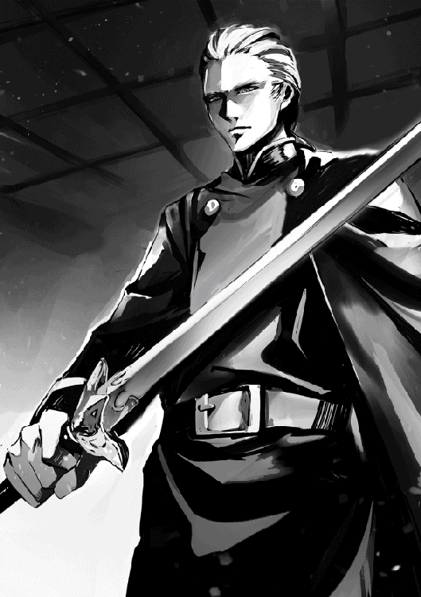
トビは俺に面と向かって穀潰し、というほど無礼ではない。
つまり言わんでも良い事は言わないぐらいの分別はある奴だ。でも追従なんて誰にも、日頃トビが深く尊敬している父上にさえ言ったのを聞いた事はない。
なのに俺が家名を上げた、だあ？
従者として非常に誇らしい、だと？
まさか、まさか、トビの体が悪魔に乗っ取られた？
いや、いや、いや。悪魔だって、いや、悪魔こそ人を選ぶだろ。自分の言う事を聞かない人間に乗り移って、どうしようというんだ。そんなの時間の無駄じゃないか。
「えっとお。俺はリイ・タケオに助けられなかったら死んでいたんだけど」
「承知しております。しかしそれは七頭目。今生きていられるのは確かにあのお方のおかげですが、若がオーク六頭をただおひとりで仕留められた、という事実に偽りはございません。そもそもオークを弓で殺した者など、今まで知られる限りいないのです」
「ええ？ そうなのか？」
何を今更、のトビの目が痛い。
「首都に戻った時、念のため調べてみました。オークを弓で殺すには、開いてる口の中に矢を当てるしかありません。他に矢で狙える弱点と言えば目ですが、目を潰されたぐらいでは死なないですし。いくらオークの口が大きいとは申しましても、大変な速さで動いている標的です。もちろん矢を放つ方も、ぼーっとつっ立っていたら殺される。馬か馬車に乗って弓を引く訳ですから、当然どちらも大揺れに揺れています。それなのに命中させるのは、よほどの弓の名手でさえ不可能でしょう。正直な所を申せば、次々オークが倒れて行く所をこの目で見た私でさえ、未だに信じられません」
「あんなのまぐれに決まってるじゃん」
「百歩譲って、一頭ならまぐれもあるかもしれません。千歩譲って、二頭もあり得るとしても、六頭まぐれ、それはありえないです。最も、一頭まぐれで倒しただけでも歴史に名を残したと思いますが。それほどあり得ない事ですから」
トビは普段、物事を大げさに捉える奴ではない。だけど死の淵から生還して以来、ちょっと俺に対する身贔屓の度が過ぎてるような気がする。
まあ、いいけどね。トビに尊敬されたぐらいで舞い上がるわけにもいかないし。
将軍閣下からご飯に招待された時には舞い上がったけど。だって、上級将校用の食堂とかじゃない。なんと御自宅への招待なんだ。父上の紹介状の威力ってすごいぜ。
「困った事があれば相談に乗るから遠慮しないように。まあ、困った事がなくても、いつでも執務室に遊びにおいで。カルアも承知しているから」
何とも暖かいお言葉を戴いて、とても嬉しかった。でも、社交辞令を本気にしてお邪魔するほど厚かましくはない。縁故があるといったって、父上の大叔母様が将軍のおばあ様って、そんなのもう他人じゃね？
父上でさえ大叔母様には一度も会った事がないとおっしゃっていた。
北にいる俺の唯一の知り合いと言えば、我が家の執事の次男であるコオ・タマラ小隊長だ。いやもう、涙の再会？
俺には実兄がふたりいるが、頭のいい兄上たちはお勉強に忙しくて、俺と遊んでいる暇なんてなかった。年は離れていても、一番遊んでくれたのはタマラ小隊長で、家にいた時はいつもコオ兄と呼んでいた。
コオ兄は第三駐屯地所属だから、ここに来るだけで何日もかかる。なのに俺が入隊したと聞いて、早馬で駆けつけてくれたのだ。数えてみれば、俺が八つの頃入隊し、それ以来会っていないんだから、実に十年ぶりとなる。
昔から頼もしいコオ兄だけど、今は精悍さ溢れる北軍戦士になっていた。満面の笑顔で、あの仏頂面の執事の息子とは思えん。顔だちはそっくりなんだけどな。
「若、こんなに大きくなって」
がしっと抱きしめられ、思わずいででで、と呻いちゃった。き、筋肉痛が。
タマラ小隊長に、近くの町にある飲み屋に連れて行ってもらった。飲み屋では、これがかの勇名轟く「六頭殺しの若」と紹介され、おおっ、というどよめきと共に英雄扱いされちゃった。
三十人も入れば満席になる店なだけに雰囲気が暖かい。店主からは色紙をねだられ、酒を奢られ、もー、すっかりおだてられちゃったぜ。御近所の飲み屋で勇名轟いてもそれがどうした、だけどさ。
ただ北軍は、いや軍というのはここに限らず、狭い世界だからなのか、俺はそっちからもこっちからも顔も覚えきれないぐらい、いろんな人にうまい飯を奢ってもらった。将軍、副将軍に始まって、大隊長、次は中隊長、そして小隊長って感じで。みんな、軍の飯はまずいだろう、と言って駐屯地の外にある料亭や食堂に連れて行ってくれるんだ。
俺的には軍の飯だって別に普通じゃね、と思うけど。なんと言ってもただなんだしさ。飲み屋や料理屋の飯なら、もちろんそれよりうまい。そりゃ金取ってんだから、当たり前だろ。
いくらまずかろうと、ただで飯が食えるというのに金を払って外に飯を食いに行く気は全然なかった。でも奢られるというなら話は別。けちる気満々の俺は、ありがたく奢られた。
オークの賞金は手に入ったが、新兵の給金なんて雀の涙だ。まさか父上から支度金を貰えるとは思わなかったし、武器も防寒具も、全部一から買うとなると相当な出費なんだから。
それは何とかなる事になったが、言うまでもなく兵士は危険な職業だ。死んでしまえば金はかからない。だけど病気や怪我とかで除隊になったらどうする？ ありえるだろ。
そしたら家に帰るのか？
他に行く所がないなら帰るしかないが、そこで肩身の狭い思いをする事は目に見えている。父上は今年、サガ兄上に爵位を譲るつもりでいらっしゃる。その日に、サガ兄上は御結婚なさる御予定だ。そうなれば家の切り盛りをするのは義理の姉上となるヘルセス公爵令嬢ライ様だ。そして俺が退役する頃には、俺の甥が爵位を継いでいるだろう。
だから実家に帰るより、このまま北で落ち着きたい。しかしそうしたくとも金がない、となったら帰るしかないだろ。それを避けるためにはそれなりの蓄えも必要だ。じじ臭い考えかも知れないが。
ところが、入隊してみるもんだね。
父上からの支度金がなくとも、いや、オークの賞金がなくてさえ困らなかっただろう。
入隊したその日から給金を貰えるようになって、しかも家賃、食費、全部ただ。諸経費（風呂、洗濯代）もただ。近衛東西南軍に見学に行った時は、全食及び宿泊費、洗濯代、風呂代、しっかり金を取られたというのに。まあ、その時は入隊していないんだから当たり前だけど、他の隊だったら入隊しても金がかかったんじゃないか、て気がするんだ。
そして武器は自分用をいずれ買うつもりだが、とりあえずは隊から貸してもらえる事になった。壊さない限り、ただ。それで弓を借りて、鴨や兎を獲ってきた。それを調理場に持って行ったら、なんと買い取ってくれたのだ！
防寒具は全部揃えればかなりな金額になると覚悟していたんだけど、入隊祝いというのがどんどん届き始めた。贈り主の名前は書いてある。でも俺の知らない人ばかりで、どうして贈ってくれたのか分からない。
もらってもいいの？
いいんだよね？
だって返そうにも、どこに返していいか分かんないし。
まだこれから夏になる季節だというのに、手回しよく手袋、帽子、ブーツ、パンツ、コートに、マフラー。チョッキ、シャツ、腹巻き、股引、靴下。それらをしまうタンスに冬用毛布や上掛け、湯たんぽ。
まるで贈り主がお互い打ち合わせしたかのように、いずれ買おうと思っていた物が次々と贈られてくる。しかもどれも安物じゃない。
俺って、ラッキー？
北軍にしておいて、ほんと大正解だったぜ。
それにしても、コートぐらいはサイズが目算でも合うという事はあるだろうけど、ブーツや股引までぴったりなのはなぜなんだろう？
まさかこれがトビの言う所の、勇名が轟いた結果だとは、その時の俺は思いつきもしなかった。
「よう、どうだった、六頭殺し」
今日、若が流鏑馬をやるというので、弓部隊の小隊長であるナタンゾン、スパルヴィエリ、オスタータグは三人で見に行った。私も弓部隊の小隊長だから、是非見に行きたかったが、予算調整の締め切りが迫っていて、どうしても抜けられなかったんだ。
オンスラッド中隊長執務室で仕事をしながら帰りを待っていると、明らかに興奮している三人が帰って来た。俺に急かされるまでもなく、見て来た事を口々に語り始める。
「この弓であそこまで射てるとは、信じられん」
感嘆のため息と共にナタンゾンが差し出したのは軍の備品の短弓だ。大概の事には驚かないスパルヴィエリが首を振りながら、いやはや、まいったと繰り返し言う。まるで天に礼拝するかのように、両手を空にあげてオスタータグが締めくくった。
「参りましたってやつだ」
オンスラッド中隊長と俺は思わず顔を見合わせた。
「ほう？」
「ふうん？」
「流鏑馬で十的、全部命中させやがった。フォームはめちゃくちゃだったがな」
スパルヴィエリの言葉に、オスタータグが深く頷きながら自分の憧れの弓の射手の名前を出した。
「ダラガーの再来ってやつだ」
「それ以上だろ？ ダラガーって十的命中を生涯に三度やったって言うが、毎回命中した訳じゃないんだから」
ナタンゾンがそう言葉を返すと、憧れのダラガーを少しでも貶そうものなら烈火の如く怒り出すオスタータグが、その言葉に素直に頷いたのには驚いた。それだけでも、若の弓の腕前がいかに並外れたものであるかを物語っていると言える。
オンスラッド中隊長と俺はどちらも驚きで言葉もない。三人は早口で報告した。
「しかも使い慣れた自分の弓矢じゃない。ほれ、と渡されたこれだ」
「天性の勘、なんだろうなあ」
「びんびんびんと弦、弾いて。一回、二回、試し射ちで矢の流れを見て。じゃあ、て馬に乗って、ばん、ばん、ばん」
「ほんと、いるんだな。あんなやつが」
「あの従者はどうだった？ オークはふたりで仕留めたんじゃないのか？」
俺がそう質問すると、オスタータグが答えた。
「いや、あいつは弓に関しては素人だ」
「ほんとか？ わざと下手なふりしているんじゃないだろうな？ 主に花を持たせるために」
するとスパルヴィエリがすかさず口を挟んだ。
「あ、それはない。風呂で若と従者の背中を見比べりゃ分かる」
「背中？」
「ああ。弓をやると背中の筋肉が発達するだろ。若の背中、ありゃあ少なくとも十年は射込んでるね。すらっとしてるから、服の上から見ただけじゃ分からんけどな。従者の方はいい足している。走らせたらかなりいけるだろう。だが、弓はやった事はないか、やったとしても初心者だ」
「とにかくメインは若だ。弓の方に引き抜くしかない」
オスタータグの言葉に、ナタンゾンが力強く何度も頷いた。
「もちろんだ。あれを引き抜かず誰を引き抜けっていうんだ」
「だけど北の猛虎に憧れて入隊したんだろ。あっちに持ってかれるんじゃ？」
どうやら若の剣の稽古も見てきたらしく、俺の言葉に三人が同じ様に手を振った。
「剣の方は、並だ、並。長年訓練すりゃ中の上まで行くかもね、てとこ。弓の方は不世出の才能だぜ」
「北の猛虎の弓バージョンだ」
「そう、そう」
「下手に剣の稽古なんかやらせて、腕に怪我をしたらどうする。そんなバカな真似をさせる訳にいかん。タケオには俺からナシつけとくし」
そこでオンスラッド中隊長がおっしゃった。
「稽古免除はどうにでもなるだろうが、本人が希望するのでない限り、弓部隊への引き抜きは難しいと思うぞ。もし将軍のお声がかかったら、私は勿論、トーマ大隊長でも覆す事はできない」
「「「......」」」
「根回し、いるな」
俺の言葉に、全員が無言で頷いた。ナタンゾンがオスタータグの脇をつつく。根回しの腕にかけてはオスタータグの右に出る者はいない。
「おい、出番だ。頼んだぜ」
「む。しかし将軍まで納得させるとなると、トーマ大隊長に話を持って行くだけでは不十分だ。ジンヤ副将軍に渡りをつけておかん事には」
「あの方に貸しがあるやつ、とか？」
オスタータグなら第一駐屯地で誰が誰に貸し借りがあるという情報にも詳しい。
「あーー。いるかもな」
「持ち駒、使い時だぜ」
オスタータグが、よしっとばかりに立ち上がり、俺に聞いてきた。
「わあってるって。ところでちゃんと本人の了承、取ってあるんだろうな」
「え？」
「え、じゃねえ。普通の新兵じゃないんだぞ？」
「ああ、そ、そうだな。おし、話しておく」
「「「......」」」
オスタータグが不安げな顔をして言う。
「大丈夫なんだろうな、ソノマ。おまえ、あいつの実家、知らんだろ」
「実家がどうした」
「ヴィジャヤン伯爵家といえば西の名家だが、首都でもけっこう名が売れている。俺が知ってるぐらいだしな」
「ああ。ヴィジャヤン伯爵って外交の辣腕なんだろ？ 皇王陛下の覚えもめでたいとか、聞いた事あるぜ」
ナタンゾンの言葉にオンスラッド中隊長が付け加えた。
「下手な侯爵家より影響力があるのは間違いない」
「しかも将軍の後ろ盾付きだ」
「はあ。本人に偉ぶった態度がねえから、つい、な」
俺のぼやきに、みんなが同意した。
「ああ、そうだよな」
「頭の回転は良さげなのに、余計な事はしゃべらんし」
「礼儀正しいしな。まっすぐに俺の目を見て、よろしくお願いします、だとよ。実にいい目だ」
「ほんとに伯爵の息子かと思うぐらい普通っぽいしな」
スパルヴィエリの言葉に、オスタータグがくすっと笑って言った。
「そういえば軍の飯、うまそうに食ってたなあ」
「まずくて食えねえとか、コックを連れて来る貴族の方が普通っていうのにな」
「貴族クラブに招待されても出席してないようだし」
訝しげな顔をして、スパルヴィエリがナタンゾンに聞いた。
「なんでおまえが知っている？」
「俺の小隊にはなんたら侯爵の次男だか三男だかがいるからな。そいつがクラブに行ってる時間に若の部屋に行ったら、ひとりで柔軟やってたんだ。で、流鏑馬に誘った、て訳」
「そうそう、狩りに連れてってやると言ったら、にこにこ笑ってここら辺ではどの肉が一番おいしいですか、やっぱり鴨ですかね、とか聞いてくるしな。シシ鍋とか教えたら、よだれ垂らしていたし」
俺がそう言うと、ナタンゾンがつぶやいた。
「庶子、とか？」
オスタータグが慌てて警告する。
「バカ。冗談でもそんな事言うなよ。タマラにブッ殺されっぞ。憧れの伯爵夫人にそっくりな瞳の若を侮辱した、とかで」
スパルヴィエリが頷きながら付け加えた。
「あいつ、若の赤ん坊の頃、おしめを替えたって自慢してたぜ」
もっと下らん事をしゃべりそうな様子のスパルヴィエリを遮り、俺はオスタータグに向かって言った。
「ちっ、そんな事はどうでもいい。それより根回し、しくじるんじゃねえぞ」
俺の言葉に、オスタータグがふんと言い返す。
「そっちこそ、本人にへそ曲げられねえようにな」
俺はどん、と胸を叩いて請け合った。
「任せとけ」
オークを倒すための秘訣を何回聞かれたか、もう数えきれない。
そんなものあるかよ。あったら俺が聞きたい。
そりゃ結果として当たったさ。でも狙って当たるか？
無理だろ。ほんとにまぐれなんだ。みんなに何度もそう言っているんだけど、どうやら誰も信じてくれていない。
なぜだ？
なぜ「秘中の秘だから言いたくないんだろう」と思うんだ？
別に他の奴の弓がうまくなったって俺の弓が下手になるって訳じゃないだろう？
皆でうまくなったっていいじゃないか。
まあ、そのうち分かってくれるだろうけど。ただ、今までしょっちゅう狩りをして獲物を仕留めていたからか、俺は動いている標的にあてるのが他の兵士よりうまいみたいだ。
北軍には弓部隊がある。そこの的場に連れて行ってもらったんだけど、馬に乗って矢を的にあてる稽古とかやっていて、俺もやらせてもらった。そしたら、結構あたる。すげー、と褒められて嬉しかった。あんまり人から褒められた事ってないからさ。
今度狩りに連れて行ってくれるんだって。北の動物もきっと美味いだろう。すごく楽しみだ。
でもどうやったらうまくなるんだとか、コツは、と聞かれてもなあ。俺にも分かんないし。
芸は身を助く？
違うか。
趣味と実益を兼ねて毎日射ってたのがよかったのかも。但し、俺は毎日剣の稽古だってしていた。そっちの方こそ、すごくがんばって稽古したんだ。なのにいつまで経っても大して上達しなかった。俺が一上達すると、他の剣士は二上達してる、て感じ。だから毎日稽古すればうまくなる、と言えるものでもないみたいだし。
それにしても、夕飯の足しに、と兎や鴨狩りをしてた事が、これほど役に立つとはね。人生何が役立つか、ほんと、分かんないもんだ。この分だと俺って弓部隊所属になるのかな？
剣の腕前は並以下と分かっているだけに、ひとつだけでも取り柄があってほっとした。別に自分で英雄になりたい訳じゃないし、手柄をたてたいとも思わないけど、お荷物にもなりたくない。それでなくとも平民軍で貴族の新兵なんて、お坊ちゃん扱いだろうし。
貴族の新兵といえば、北の猛虎に憧れてやってきた貴族の新兵が俺以外にもかなりいるらしい。そんな人達は平民出身の兵士に嫌われているっぽかった。俺が全然貴族っぽくない事に安心したみたいで、いやー、またかと思ったぜ、と人懐っこい連中に、笑って背中をばんばん叩かれた。
痛いんですけど。筋肉痛、まだ直っていないから。
だけど下手に文句を言って嫌われたくない。なにより肝心のタケオ小隊長に、貴族出身なせいで俺も嫌われていたらどうしよう、と心配になった。俺は知らなかったが、北軍で知らない人はいないという程、タケオ小隊長は貴族嫌いで有名だったのだ。
お礼を言いに行った時は緊張して（及び筋肉痛で）がちがちだったし、何を言ったか、言われたか、ひとつも覚えていない。嫌われてはいないと思うんだけど、好かれているとはさすがに言えない。
命を助けてもらった恩を返したいんだけどな。あんなに強いんじゃ、俺の助けを必要とする場面なんてある訳ないし。せめてお近づきになりたい。友達になるのは無理でも、会えば、よう、と声をかけてもらえるぐらいの。
やっぱ無理？
入隊したてのひよっこが何言ってると言われりゃ、それまでだけどさ。まずはがんばって、タケオ小隊長に認められるぐらいにならないとな。それが当面の目標だ。弓部隊に入ったら稽古に励むぞ！
そう気合いを入れていた俺に、貴族クラブからのお誘いがいくつもきた。最初は伯爵家の子弟が珍しいから誘われているんだろうと思っていたんだけど、聞いてみると北軍には結構な数の貴族の子弟がいて、クラブの数もひとつやふたつじゃないほどあったんだ。
考えてみりゃ、それぐらいあるよな。いくら平民軍と言ったって、五万人も兵士がいるんだ。平民の数が多いというだけで貴族がいないという訳じゃないだろう。
だけど俺は貴族クラブに入りたくてここに来た訳じゃない。やれ侯爵家のなんたらかんたら。さすがに平民軍と呼ばれるだけあって公爵や大公家ゆかりの兵士はひとりもいないから、内心助かったと思ったね。侯爵、伯爵あたりなら誘いを断ってもそんなに角はたたない。一応俺も伯爵の息子だから、向こうも歓迎に気合いをいれてくれてるのだろうが、ほっといてくれ。
それでなくとも俺は初年兵。低姿勢だ、低姿勢。誰であろうと俺より下の奴はいないんだから。でも貴族出身の兵士は、初年兵であろうといばっているのが傍から見ても分かる。そんな人達とつるんでいるせいで、俺までタケオ小隊長に嫌われたらどうしてくれるんだ。
第一、貴族クラブに参加するより、弓の稽古をする方がよほど大事だ。俺の場合、今まで狩りをする事だけが目的だったけど、軍では狩りより戦うのが目的だろ。
実を言うとさ、もし戦いに出撃する事になったら、敵に向かってびびらずに矢が射てるかどうか自信ないんだよな。その自信を付けるためにも稽古あるのみ、だ。
ところで、俺が家から持って来た弓はオークに壊されたから、新しいやつを買わなくちゃいけない。せっかくだから、ちゃんとしたやつを買いたい。それで俺の上官であるソノマ小隊長に相談した。そしたら信頼の置ける武具の店を紹介してくれて、そのうえ一緒に買い物に付き合ってくれた。
賞金で懐も温かいし、長弓、短弓と用途に合わせ、三種類ずつ欲しい。ああでもない、こうでもないと店内で選んでいると、店員に話しかけられた。
「六頭殺しの若とはもうお会いになりましたか？」
「はい、本人です」
そう俺が答えると、あわてて店の奥から満面笑顔の店主を連れて来た。
「これはこれは、若様。ようこそ御来店下さいました。これからも何卒当店を御贔屓下さいませ。今日はどのような弓が御入用でいらっしゃいますか？」
「えーっと、長弓と短弓を三つずつ欲しいんだけど」
「畏まりました。どれがお気に入りましたか、お知らせ下さい。勉強させて戴きます。それと、もし店の看板に六頭殺しの若御用達と入れる事をお許し下さるのでしたら、どの弓も無料で差し上げます」
おおっ。無料？
その言葉に俺は飛びついた。こういう事は、店主の気が変わらないうちに決めないと。だからすぐその場で、いいよって言ったんだ。すると一緒について来てくれたソノマ小隊長が、若の名前を悪用したら今後北で商売ができると思うなよ、とかなんとか脅し始めた。
ちょっとー。店主がびびってるじゃない。心配してくれるのは有り難いけど、そもそも悪用って、俺のしがない名前をどう悪用しようがあるっていうの。ソノマ小隊長ったら心配し過ぎだよ。
幸い、店主は胆が据わった人のようで、無料を取り消したりしなかった。
店の裏手には的場があり、そこで試し射ちさせてもらった。弓にはどれにも癖がある。それはいいんだが、その癖との相性ってものがあるからな。
長く使う奴は俺の気ままに付き合える奴がいい。うん、うん、と俺の言う事を素直に聞いてくれる弓が一番だ。でも強情な奴もそれなりにかわいいとこあるから、一概には言えないが。
気弱な奴だけは買わない事にしている。俺にびしばしやられて、すぐだめになったらかわいそうだろ。この場合ただなんだから、買ったというより貰った、だけどさ。
こうして結構いい弓が手に入ったので、それを持ってオークに当たらずに落ちた矢を拾いに行こうとした。弓が変われば当然矢もそれに合わせて変える必要があるから、見つけたとしても俺の新しい弓では使えないけど、隊の備品のどれかとなら合う。そしたら狩りに使えるし。
何しろ家紋入りなんだぜ。一本千五百ルークもしたんだ。普通の矢なら千ルーク、安いのは八百ルークからあるのに。それに比べたら、ほぼ二倍の値段だ。それに家紋を入れてもらうにはダースで注文するしかない。すずめの涙の小遣いをはたいて買ったんだ。使わなかったら、もったいないだろ。
でもソノマ小隊長から、北の原野をひとり歩きするなんて自殺行為と言われた。慣れればオークの出そうななわばりが分かるから、そこを避ける事もできるが、そんな事、今の俺にはまだ無理。それに矢が落ちているのは、まさにそのオークのなわばりのど真ん中だし。
オーク狩りに行く時は、普通五十人ぐらいの隊を組んで行くものなんだって。充分準備していても、毎回必ず怪我人や時には死人が出るんだとか。
こえーー。
ソノマ小隊長、行く前に教えてくれてありがとう。
「オークの甲冑はどれも将軍に献呈するから、競りなんてしなくてもいいんだよね」
甲冑の競りを俺に任せてほしいと申し上げると、六頭殺しの若様がそうおっしゃった。最初、何かの聞き間違いだと思った。
「はい？ どれも、とおっしゃいましたか？ 一領北軍将軍に献呈なさるとしても、甲冑は後四領ございますが？」
「うん、ひとつは近衛のおじさんに献呈するんだ。子供の頃、近衛のおじさんに贈ってもらった弓で遊んだ事が上達した切っ掛けだから。剣を教えてくれる先生も紹介してもらったし。こういう機会にちゃんとお礼をしておきたいじゃないか。
東軍の叔父さんとは近しい訳じゃないんだけどさ、叔父さんの奥さんと俺の母が姉妹で、仲が良いんだよね。母がとっくに献呈する、て約束しちゃったんだって。それなのに今更やらないなんて言えないでしょ。
東軍の叔父さんに献呈するなら、俺の父の従兄弟である西軍将軍にやらない訳にはいかないよ。そんな事したら、角が立つじゃん、ね？ 場所的にも一番近くに住んでいる人なんだし。実は、子供の頃、飛竜にただで乗せてもらったりしたんだ。
南軍のおじさんとは血縁関係はないけどさ、毎年遊びに行って、ただで泊めてもらったり、海や船の事色々教えてもらったりして。散々お世話になっておきながら、こういう時にそれを忘れちゃまずいだろ？」
西出身の若様には、無傷のオーク甲冑の希少性は一度説明したぐらいではよく理解して戴けなかったのかも知れない。今相場を説明したばかりだが、もう一度ゆっくり説明し直した。
「若様。只今も申し上げましたように、無傷のオークは二十年に一頭獲れるかどうかの代物でございます。古来より獲れたら必ず皇王陛下に奏上する決まりとなっているのは、その希少性の故でもございましょう。皇王陛下が御自分のオーク甲冑を既にお手持ちになっておられる場合は、次に皇太子殿下がお手持ちかどうかをお伺い致します。今回の場合、皇太子殿下がお手持ちでなかったため、最初の一領は皇王室へ献呈となりました。皇王陛下及び皇太子殿下の次は、これも習慣で、北軍将軍に献呈する事になっておりますから、これも致しかたございません。皇室からは百万ルークの御下賜金が、北軍将軍からは二百万ルーク払われるのが慣習ですが、その後は献呈の義務など全くないのです」
「うん、それはもう聞いた」
そうおっしゃっただけで、献呈を取り消すとはおっしゃらない。俺は声を少々強めて繰り返した。献呈の義務など全くないのですよ、と。
こう見えても甲冑仲買をして三十年経つが、今まで俺が知る限り、無傷のオークの新品が市場に出回った事はない。持ち主が死んだ時、中古が売りに出される事なら偶にある。それでさえ入札ともなれば始まり値は最低でも三百万ルークだ。物にもよるが、大体五百から六百万ルーク前後で競り落とされる。
それが新品だ。始まり値は五百万としても、終値が八百万を越える事はまず間違いない。一生に一度あるかないかの競りと言っていい。
いや、歴史上、二度とはないとさえ思われる競りだ。蒐集家はここぞとばかり張り切るだろう。皇国内だけではない。国外からの引き合いだってあるに違いない。ひょっとすると、一千万を越える値が付く事さえ考えられる。
なのに献呈する？
献呈というのは贈り物も同然で、相手は好きな価格を払えばいい。極端な話、払いたくないのなら一ルークも払わないでも良いのが献呈だ。
はっきり言って、どの将軍も貧乏とは言わないが、金持ちとは言いがたい。まさか将軍ともあろう者が、ただで甲冑を持ち逃げする事はないとしても、競りによって得られる金の半分も手に入るまい。払った所で二百万か三百万がせいぜいだ。二百だとしたら、競りで得られる金の五分の一にしかならない。
どうにも腑に落ちず、もう一度申し上げた。
「若様、三千万、ひょっとしたら四千万ルークに手が届く金だという事を御存知で、そのようにおっしゃっているのでしょうか？」
「いや、お金なら、万が一怪我をして退役する事になっても食べていけるぐらいの額が貯まったし」
若様、あなた確か十八じゃありませんでしたっけ？
その年で退役を考えていらっしゃるっていうのも何なんです、とあやうく口にしそうになったが黙っておいた。
「だから、競りはしなくてもいいの」
「そんな、あの、もう一度良くお考えになってみては如何でしょうか？」
「えー、何を？」
「何をって」
甲冑の価値なら、もう分かってるはずだよな、今説明したばっかりなんだから。それにしても、四千万もの金をそんな理由で諦める？
そもそもそれって理由と言えるんですか？
呆れるを通り越して、ほとんど尊敬する気持ちになったが、額が額なだけに、もう一度念を押した。
「本当に献呈なさるのでしょうか？」
「うん」
俺もこの年になれば、いろんな不幸を人の数だけ眺めてきた。だけどこの若様なら、幸せな一生を送るだろうな、と何となく信じられる。
才能、金、名誉があってしかも貴族なんだ。三拍子も四拍子も揃った御方が幸せでも驚くべき事じゃないが、人はいろんな理由で幸せにも不幸にもなる。何もかも手にしている、世の中の幸運という幸運全部を手にしているから幸せか、というと決してそんな事はない。
それにしても皇国の将軍全員と知り合い、ね。皇都に行けば、そういう貴族の若様が他にもいないわけじゃないだろうが。皇国将軍を「仲の良いおじさん」として捉えているのは、皇国広しと言えどもこの若様だけだろうな。
又の機会がございましたら是非御用命下さい、との一言を残しただけで俺は六頭殺しの若様の元から辞去した。
大金を儲けし損なったというのに、なぜか良い気分で。
まず、「六頭殺しの若」とだけ噂になった。
それが誰を指すのか、しばらく知らずにいたが、そのうち彼の本名、サダ・ヴィジャヤンと共に、ヴィジャヤン伯爵家の三男である事が知れ渡った。何だか聞いた事ある名前だと思った私は、先月の見学者名簿を漁った。
私は近衛軍曹で、近衛に見学に来た入隊希望者を案内するのが仕事だ。侯爵家次男という自分の出自を鼻にかけているつもりはないが、伯爵家の三男なぞ近衛では普通以外の何者でもない。大公家や公爵家子弟ともなれば入隊の際に特別な配慮がされるし、侯爵家辺りまでならそれなりの扱いになる。そもそも近衛軍に入隊する者で平民は少ない。相当な縁故か推薦があるのでもない限り、平民では応募しても弾かれる。公侯爵の子弟の場合、付いて来る従者でさえ平民は少ないのだ。
見学に来る入隊志願者は貴族の子弟かその縁者に決まっている。伯爵子弟では、十把ひとからげとまでは言わないが、上げ膳据え膳にならないのは当然だろう。
ただ、毎日相当数の見学者を案内しているにも拘らず、私がひょっとしてあいつでは、と思ったのには理由がある。先月の見学者の中に、一人だけ全然やる気のない奴がいたのだ。
見学者は全員近衛が第一志望だ。当然見学も真剣で、説明を聞く態度も熱心。親戚知人を通し、配属、任務から昇進など、様々な事に関する詳細を既に知っており、中々突っ込んだ質問をする。
でもそいつのやる気のなさといったら、あからさまと言ってもよかった。関係のない所をきょろきょろ見回して、心ここにあらず。たった今説明したばかりの事をもう一度聞いてくる。
偶に自分から質問するかと思えば、昼飯代はいくらかかるのか、朝飯を食べずに出発したら宿泊費を安くしてもらえるのか、見学者用宿舎の飯と洗濯と風呂はどうして有料なんですか、等々。入隊とは全く関係のない事ばかりだ。
入隊必需品リストを渡したら、そこに明記されてある購入価格を見て、ちょっと、暴利じゃね？と従者に囁いていたのが聞こえた。平民ならともかく、貴族が不満に思うような価格設定ではないにも拘らず。
その若者は初日に第一庁舎と見学予定表を受け取り、主要な建物をざっと見ただけで、後はさっさと見学者用宿舎へ帰った。新兵を受け入れ、最初の年の訓練を担当している小隊の小隊長と面談の機会を設けていたというのに。そしてなんと、次の日にはもう旅立ったと言う。最低でも五日かかる見学を僅か一日で終わらせるだなんて聞いた事もない。広大な敷地だし、将来の上官に挨拶したり、身内で既に近衛兵である者に会ったり、同じ部隊になるであろう兵士との顔合わせも予定されている。誰だって少なくとも一週間は滞在するものだ。
言ってしまえば、その若者は悪い意味で目立っていたし、そんなに前の事ではないから、いつ頃の見学者名簿を探せばいいのか、簡単に見当がついた。
あった。
「ヴィジャヤン伯爵家三男、サダ・ヴィジャヤン」
......字は下手なんだな。
私はあたりをさっと見回し、誰も見ていない事を確認してから、その見学者名簿をそっと懐に隠した。
この名簿は来月になれば廃棄処分になる。だから私が持って行った事が分かっても罰せられる事はない。それでも知られたくなかったのは、六頭殺し直筆の署名が載っていると上官に知られ、上官に欲しいと言われたら私に断わる術はないからだ。
何しろ私の上官には相当数の若ファンがいる。毎日そちこちから呼び出され、散々愚痴られたり、どんな若者だったか質問されたりした。その時サダ・ヴィジャヤンがサハラン近衛将軍の親友の息子だったと知らされたが、いつ見学に来るか将軍も御存知ではなかったらしい。こんな大物の入隊勧誘に失敗したというのに責められなかった。
オーク殺しだなんて確かにすごいとは思う。しかし私は別に、だから六頭殺しのファンになった訳じゃない。また、私自身は弓を射るのが趣味という訳でもないが、流鏑馬を見るのは好きで、暇があればよく馬場に行っている。そこで、サダ・ヴィジャヤンは流鏑馬で全的命中を普通にやるという噂を聞いた。
近衛の弓部隊でも、そんな事ができる射手はいない。さすがにオークを射殺すだけはある。稀代の弓の名手である事は疑いもない。その射手と間近に出会っていながら、握手の一つもせずに別れただなんて。
もし、あの時。
いや、逃した機会を今更悔やんだ所でどうにもならない。
だが私はそれ以来、入隊志願者に対し、もっと親身な態度で接するようになった。特に、ひとりひとりに必ず話しかけ、いつ帰るのかを聞き、別れ際に必ず握手するようになった。
六頭殺しがこの世にふたりといるはずはない、と知ってはいても。
夜、寝入り端の所を軍警に起こされ、ちょっと一緒に来てほしいと言われた。
はい、となんか半分寝ぼけて、言われるままぼーっと付いて行ったら、ちょっとここで待てと言われ、連れて行かれたのはどう見ても牢屋。
「え？」と戸惑っていると、とん、と背中を押され、よろめいて中に入った。
後ろで、がしゃんと不気味な鍵を掛ける音が響く。俺を連行した軍警は急いで鍵を掛けたかと思うと、まるで自分が悪い事でもしたかのように、そそくさとその場を離れて行った。あの、ちょっと、待って、と声をかける間もない。
まーーっくら。
なんか、嫌な感じ。
目が慣れて来て、どうやら寝床がある事は分かったけど、とてもそこに横になって寝る気にはなれない。ようやく、ここって噂に聞いた事はあっても入った事はなかった「軍牢」というものなのでは、と気が付いたんだ。遅いよっ。
でもとっくに鍵かけられちゃってるし、どうしてこんな所に入れられたのか、聞きたくても辺りに誰もいない。どうしよう？
何がなんだかさっぱり分からないでいると、間もなくトビがあわてて飛んできた。どうやら俺の従者という事で面会を許してもらえたようだ。片手にランプを持っているせいで、闇の中にトビの顔がぼうっと浮き上がる。不気味かも。
「若。一体、これはどういう事なのでございましょう？」
「俺にも分かんない。な、俺を連れてきた人、そっちの部屋にいるはずだから、事情聞いてみてくれない？」
「もちろん伺いますが、こんな空気の悪い、冷たい所で眠っては病気にならないものでもありません。どんな事情があるにせよ、まずここから出してもらえるよう掛け合って参ります」
「いや、トビ、それって無理だと思う。無駄だから止めといた方がいい」
「なぜですか？」
「ここ軍牢だよ。上官や同僚を殺したっていうんじゃなきゃ、入れられたりしないから」
それを聞いてトビの顔が真っ青になった。というか、闇の中で色がよく分からないけど、顔色が変わったみたいな感じ。
「ま、まさか」
「俺、誰も殺してないし。でも誰を殺した事になってるか分からないから、それだけ聞いといてくれる？ いずれ俺がやったんじゃないっていう事が分かると思う」
「わ、分かりました」
そしてトビはすぐ出て行った。どこへ行ったのか、そのまま戻ってこない。ちょっと心細かったが、俺にはどうしようもないし、軍牢の寝床で横になった。幸い牢番の人がいい人で、寒いだろうと言って寝床にあった敷き布団の他に毛布を何枚か貸してくれた。真っ暗な牢屋に放り込まれ、心配は心配だったけど、俺はいつの間にか寝入ったようだ。
朝、明らかに誰かの怒鳴り声が聞こえてきて目が覚めた。ひとりは俺の上官の上官であるオンスラッド中隊長の声だ。もうひとりは誰だろう？
それから間もなく、俺の上官の上官の上官であるトーマ大隊長と、すごく怖い顔をした中隊長が入ってきた。中隊長が先に口を切った。
「私はギャッツ中隊長だ。オダ・スリカンスを知っているな？」
「えっとお。うーん。俺の知ってる人なんですか？ まだあんまり人の名前覚えきれてなくて」
「お前がオークを倒した際、迎えに行った兵士のひとりで、その時スリカンスは名乗った、と他の者が証言しているが」
「ああ、あの時の。スリカンスさんがどうかしたんですか？」
「殺された」
「え？」
「背に矢を射ち込まれてな」
「ええっ？」
「矢羽根にはヴィジャヤン家の家紋が入っていた」
「でも射ったのは俺じゃないですけど」
「お前以外にヴィジャヤン家の家紋入りの矢を持っている奴がいるというのか？」
「いや、俺、ヴィジャヤン家の家紋入りなんて、一本も持ってないです」
「「な、何だって？」」
なんだかトーマ大隊長もギャッツ中隊長も、同時に呆然とした顔をして俺を見ている。家紋入りの矢を持っている方が珍しいのに、一体何を驚いているのだろう？
「俺が持って来た矢は、オークを殺した時に全部射ち尽くしました。それ以来、家紋入りの矢なんて持っていません。外れて落ちたやつを拾いに行きたかったけど、ソノマ小隊長に、危険だからやめろって止められたんです」
「だ、だが、弓を新調しただろう？ それなら矢も新しいはずだ。どの矢羽根にも家紋を入れただろうが」
「ただでくれるって言うのに、家紋まで入れさせちゃ申し訳ないです。だから今俺の持っている弓にも矢にも、家紋は入っていません」
そこでトーマ大隊長が、若、と話しかけてきた。因みに、今では将軍から同期まで全員俺の事を若って呼ぶ。ま、いいけどさ。最初は、それって他の若様とどう区別するのって思ったけど、なぜか他の貴族の若様たちの事を若って呼んでるのを聞いた事はない。
「弓部隊の連中に一応裏を取るが、お前の無実は証明されたも同然だ。しかし誰がスリカンスを殺したか、今の所分かっていない。お前は彼について、何か知っている事でもあるか？」
「うーーん。オークを殺した日に会ったと言われても、実は、タケオ小隊長以外の人の事は、はっきり覚えていないんです。その後、会ったかも知れないですけど。顔を見れば思い出すかも知れませんが、名前だけではちょっと」
「そうか。まあ、いずれにしろ名前も知らない程度の付き合いでは言える事にも限りがあるだろう。とはいえ、真犯人が分からないうちにお前を釈放したりすれば、お前が有罪であるにも拘らず、オークを殺した功績で放免されたのだと思われる。それは避けたい。だから真犯人を挙げるまで、もう少々ここで我慢していてくれないか？」
「はい、分かりました」
「被疑者として拘留されているのではないのだから、欲しい物とかあったら牢番に言うが良い。便宜を図るように伝えておく」
そう言い残し、トーマ大隊長はギャッツ中隊長を連れて出て行った。
流石に牢だから快適と言えない場所だが、長い人生にはこういう経験もありかも。
この際だから、ずっと書こうと思って書いてなかった実家とか兄上達へ、手紙を書こうかな？
でも軍牢にぶち込まれました、なんて書いたらまずいよな？ いくら無実の罪でもさ。びっくりというか、心配させちゃうだろ。手紙が着く頃には、出してもらえているかも知れないし。
とはいっても、どれぐらい入っていなきゃならないんだか分かんないんだ。いついつ出してもらえるから心配しないで、なんて書いたら嘘になっちゃう。
元気です、というのは、嘘ではない、よな？
だけど、牢に座っていて元気です、て言うのもなんだかなー。
ここ寒いし。風邪引いちゃうかも知れない。今まで風邪なんて引いた事ないけどさ。
じゃあ、それ以外、何か書く事ある？
無難な事といったらお天気の事ぐらいだろ。そんなの手紙に書くまでの事でもないじゃないか、とかいろいろ考えてしまい、結局紙とペンを下さいとは言いだせなかった。
そうこうしている内に、スリカンスを恨んでいた男の名前があがり、調べた所、その男の部屋からもう一本、我が家の家紋入りの矢が見つかった。それでようやく俺の無実が証明されたんだ。
真犯人は、ヴィジャヤン家の家紋入りの矢を使えば、どうせ若は罪に問われず放免されるだろう、その後、誰も調べないと思ったんだって。んな訳あるか。まったくもう。その人、俺より世間知らずなんじゃない？
とにかく、俺は無罪で牢にぶち込まれた事を怒るより、無事に釈放された事にほっとしていた。俺が感じたのはそれだけだが、トビはそうじゃないらしい。
「おい、トビ、何をそんなに怒っているんだ？」
「無実の罪で、一週間も、あんな臭くて暗い牢にぶち込まれていたのですよ。しかもそれに対する謝罪のひとつもないだなんて。特に、あの目つきの悪い中隊長の態度といったら！ もう、取り調べをする前から若を下手人扱いしておりました。公衆の面前で土下座してもらいたいぐらいです！ 降格処分ものの無礼ではありませんか！ どうして将軍に直訴なさらないのですか？ 泣き寝入りする必要などございませんでしょうに」
「いや、別に泣き寝入りなんてしてないよ。向こうも仕事だろ。牢ではよくしてもらったし」
「よくしてもらったとは、何がどのようにでしょう？」
「あれでも他の牢よりずっときれいだったよ。ちゃんと布団も、余分な毛布も入れてくれたし。それに便所も風呂も、牢から出して入れてくれただろ。次々面会の人が差し入れ持って会いにきてくれたから、寂しい思いもしなかった。飯は全部お前がちゃんと持って来てくれたしさ。運動不足で太っちゃったのだけがちょっと残念だけど。これでも牢の中で懸垂とか屈伸とか腕立て伏せとか、やったんだぜ」
「なんですか。高級宿屋に泊まったみたいだったとおっしゃりたいんですか」
「さすがにそこまでは言わんけどさ。あっちもそれなりに気を使ってくれたんだろうなって思うから。文句を言ったら悪いよ」
「本当に、若は人がいいと申しますか」
トビはしばらく、あの中隊長は無能だの、あれは嫌がらせだの、散々文句を言っていた。でも一週間程度で真犯人が見つけられるだなんて、俺は随分有能だと思うんだけどな。最低でも一ヶ月ぐらいはかかるんじゃないかって思っていた。
因みに、真犯人が矢を仕入れたのは、六頭殺しの若御用達の店だった。あそこは密かにヴィジャヤンの家紋入りの矢を結構なお値段で観光客相手に売っていたらしい。俺のしがない名前でも悪用できるんだ、と勉強させられました。
それを知ったソノマ小隊長が、あれほど悪用するなと言ったのに、とカンカンになり、オンスラッド中隊長に報告した。それがトーマ大隊長、ジンヤ副将軍、モンドー将軍へとあっという間に伝わり、あの店は軍需の全てをふいにしたんだって。
次に矢を買いにいこうとした時、あそこは閉店した、と弓部隊の仲間に教えられた。
夜も更けてから、北軍の第一駐屯地より歩いて十分程度の場所で兵士の射殺体が発見された。
見つけたのは駐屯地の郊外にある家から通っている兵士で、それはすぐさま軍警本部に報告された。被害者の背中に突き刺さっていた矢の矢羽根には、今では北で知らぬ者はいないヴィジャヤン家の家紋が付いている。
俺は発見者に聞いた。
「殺されたのは誰か知っているか？」
「オダ・スリカンスです。第五十三小隊所属じゃなかったかな。軍曹で、ええっと、確か三十過ぎだったと思います」
ざっとの状況を聞いた後、取りあえず牢番に、入り口に一番近い軍牢をできるだけきれいに掃除しておけと命令した。そしてすぐに事情を上司のノーラン小隊長に報告した。
「まずいな」
おそらく俺と同じ事を懸念したノーラン小隊長が、小さくつぶやいた。
俺達の上官であるギャッツ中隊長は若の事をやっかんでいる。特別待遇されて、いい気になっていやがる、とおっしゃっていたのを俺も聞いたし、御本人も若人気を苦々しく思っている事を隠そうとしていらっしゃらない。まあ、軍警だって人だ。好き嫌いがあったって仕方がない。
だが、ギャッツ中隊長は誰も見ていなければ、ここぞとばかり喜んで被疑者をいたぶるお方だ。「公正」をちょっとでも気にされた事などあった試しはない。そこまでやったらまずいだろうと思うような場面だって見た事がある。しかし上官の事をあれこれ言う訳にはいかないし、軍牢入りするような奴は、どうせここで死ぬか不名誉除隊となる運命だ。
けれどこの場合、どう考えてもスリカンスを殺したのは若のはずはない。絶大な人気を誇るオーク殺しの英雄だから人殺しなんてするはずはない、と言いたい訳じゃない。人殺しらしからぬ人殺しぐらい、今まで何人も見てきた。人気者だろうと、優しくて気が弱そうだろうと関係ない。
とは言っても、人殺しするのにわざわざ自分の家紋入りの矢を使う馬鹿がどこにいる。弓部隊でなくたって兵士なら弓のひとつは持っているんだ。それに家紋が入っていない矢ぐらい、そこら中で簡単に買える。これは誰かが若に濡れ衣を着せようとしているんだ。
でもギャッツ中隊長は、殺しに使われた矢にヴィジャヤン家の家紋が入っていた事を盾に取り、若の事を必要以上に厳重に取り調べようとするだろう。この事件に若が絡んでいる可能性がどんなに少なかろうと。
私としては、もっと調査してから若に事情聴取したい所だが、矢羽根にヴィジャヤン家の家紋が入っている事は確かなんだ。重要参考人として若を拘留しない訳にはいかない。俺はその夜のうちに若を連行しに行った。既に就寝していた彼を起こすのはかわいそうだったが、そのまま入牢させた。
本来なら、六頭殺しの若のような有名人が事件を起こしたとなると、中隊長、そして大隊長へ、すぐさま報告が行く。けれどもし今晩ノーラン小隊長がギャッツ中隊長に報告したら、ギャッツ中隊長はトーマ大隊長に報告するだろうか？
しないだろうな。今晩の内にギャッツ中隊長に知らせたら、早速若を一晩中寝せずにぎりぎり絞るに違いない。拷問慣れしているギャッツ中隊長の責めに若が耐えられるとは思えない。
ノーラン小隊長は朝になってから中隊長に報告する、と言ってお帰りになった。ノーラン小隊長としては、それができる限り精一杯の時間の引き延ばしだ。若が軍牢入りした事は、明日の午前中には駐屯地の全員が知るだろう。
ギャッツ中隊長としては取り調べをたった一人でしたいだろうが、噂の方が先に大隊長に届いてしまうのは避けたいはず。そもそも上の覚えめでたい若をゆっくり責めている時間はないと思いたいが、この場合、被疑者が初年兵である事が中隊長にとって有利になっている。軍規では初年兵への刑罰は中隊長が独断で決定していい事になっているのだ。
けれど若をかわいがっている人は将軍や上級将校ばかりではない。平民だらけの弓部隊の連中はもちろんの事、俺のように弓に何の関係もない人間でさえ、若の飄々とした人となりに魅かれ、弓の稽古を覗きに行っている者は多い。
何しろ流鏑馬で全的命中する。命中しない所を見た、というのが自慢の種になるぐらいなのだ。因みに俺は何回も見に行ったが、まだ若が外した所を見た事はない。
なのに若は驕らない。初年兵と言ったって貴族なんだし、大功を上げた有名人だ。威張ったって誰も文句なんて言わないだろうに、誰にでも礼儀正しい。愛想を振りまいている訳じゃない。ただ、きちんとしているのだ。
そんな事は俺に言われるまでもなく、ギャッツ中隊長は先刻御承知だ。長々若を止めておく事は出来ないと知っているからこそ、これを若をいたぶる千載一遇の機会と捉えるのではないだろうか。被疑者を痛めつけるのは軍規に外れた事ではないんだ。後で真犯人が見つかろうと見つかるまいと、中隊長にとってはどうでもよいに違いない。
若に対して下手な真似をしたら、ギャッツ中隊長だけでなく、軍警全体が上からも下からも袋だたきになる。そこら辺を承知している人なら俺も心配しないのだが。
しかし俺やノーラン小隊長では上官のギャッツ中隊長を止める事はできない。今すぐトーマ大隊長に知らせないと、とんでもない事になるだろう。かと言って、頭越しの報告をしようものなら、ノーラン小隊長も俺も懲罰の対象になる。
だから俺は若の従者にそっと囁いた。トーマ大隊長に知らせろ、と。こんな夜中に、大隊長がたとえあの若に仕えるとはいえ、従者に会ってくださるだろうか？ 気はもめたが、軍警所属の誰かを使って報告をする訳にはいかないのだ。
祈るようにして迎えた朝、ノーラン小隊長から報告を聞いたギャッツ中隊長が喜々として早速若を取調室に連れて行こうとした所に、オンスラッド中隊長が駆け込んできた。ギャッツ中隊長に、なぜ若を牢にぶち込んだ、と抗議し始める。どうやら朝稽古に現れない若を中隊長自ら探しに来てくださったようだ。
中隊長同士では同じ階級だから無下には出来ないにしても、オンスラッド中隊長はギャッツ中隊長に命令できる立場ではない。おふたりの間で怒鳴り合いが始まったが、仲裁に入る訳にもいかないし、どうなる事か、とはらはら見守るだけだ。
ギャッツ中隊長が、お前も牢にぶちこまれたいのか、とオンスラッド中隊長を脅し始めた時、そこにトーマ大隊長がいらっしゃった。
間に合ったのだ！
上官の前ではギャッツ中隊長も勝手な真似はできない。トーマ大隊長に被害者の名と死因を報告なさった。
「動機は分かるか？」
「今の所、不明です」
「若はどうしている？」
「軍牢に留置しております」
そしてトーマ大隊長はギャッツ中隊長だけを伴われ、若のいる牢へと入っていった。
査問を終えたトーマ大隊長が、ギャッツ中隊長始め、そこにいた全員に聞こえるように、被疑者ではないのだから、若の便宜をできるだけ図るように、とおっしゃって出て行かれた。
どうやら査問はいい感じで終わったようだ。ギャッツ中隊長がいかにも悔しそうにしている。俺はほっとしたような顔にならないよう、気を引き締めた。
ほどなく衝撃の事実が次々と明らかになった。
若自身は家紋入りの矢など持っていない。
軍医が検死した所、背中の矢は弓で射ち込まれたというより手で突き刺していた。
スリカンスはけっこう酒を飲んでいたようだ。九時過ぎ頃に、酔っぱらって飲み屋を出たのを見た者がいた。
遺体は十時半に発見されたが、かなりの人数が、その頃若は風呂に入っていたと証言した。
そこでスリカンスの身辺を洗っていると、女を巡るいざこざで、ある男から恨まれていたようだ、との情報が入ってきた。いくらも経たずに、事件の夜、スリカンスの後ろをつけるように歩いていた男の容姿が恨んでいる男と似ている、という目撃者が現れた。
若御用達の店で、ヴィジャヤン伯爵家家紋入りの矢を売っている、という無記名の投書もあった。
とにかく情報が、驚くべき早さで集まってくる。普通は目撃者を見つけるのも一苦労なのだが。どうやら弓部隊に限らず、相当数の兵士が情報や証拠を見つけ出すのに駆けずり回ったようだ。
軍警が、スリカンスを恨んでいるという男の部屋を捜索したら、ヴィジャヤン家の家紋入りの矢が見つかった。証拠が上がったので、無事真犯人の尋問と検証を済ませる事ができた。
その間、無実の罪でずっと入牢していなければならない若には気の毒だったが、一週間で釈放する事ができたのは、軍警史上最短で解決した事件と言ってもいい。
誰も若の無罪を疑っていなかったとはいえ、冤罪により若のせっかくの勇名に傷がつかなくて本当によかった、と俺は密かに胸を撫で下ろした。
トーマ大隊長に知らせるには、一体誰を叩き起こせばいいのだろう？
六頭殺しの若が無実の罪で投獄されたとは、将軍でさえ真夜中に起こされたとしても文句を言うとは思えない一大事だ。
けれど私では、将軍はおろか、大隊長や中隊長にさえ辿り着く事はできない。従者だから。
従者が入隊するのは兵士が入隊するのとは違う。給金も軍から払われているのではない。主が払っているのだ。
従者が従うのは主の命令だけ。極端な話、主の上官の命令であろうと従う義務はない。主である兵士が、自分の上官に逆らえと命ずるはずはないから、軍にもその存在が認められているが、入隊した兵士の従者であるというだけで正式に軍に所属している兵士ではないのだ。
兵士として入隊すれば昇進も所属も全て軍が判断する。一旦辞令が下ってしまえば行きたくないとは言えるものではないが、従者なら主である兵士から離される事はない。
そのかわり、軍に属している訳でもないのだから、私と私の主との間に何か問題が起こったとしても軍が関与する事はないし、主の上官へ陳情や報告がされる事もない。そんな事をした所で、何もしてはもらえないだけでなく、そもそも聞いてさえもらえないだろう。
いくら牢に入れられたのは主でも、今夜、従者に過ぎない私がどこの兵舎に走って行った所で、上級将校に取り次いでもらえる可能性は薄い。
それに中隊長以上ともなると、駐屯地内に宿泊可能な専用官舎の他に、御自宅を駐屯地外に持っていらっしゃる。今、官舎で就寝していらっしゃるかどうかなんて、行ってみなければ分からない。
御自宅がどんなに駐屯地に近かろうと、そこまでお邪魔している時間はないと見て良い。まず駐屯地の外に出るだけでも検問がある。従者である私をすんなり通してくれるかどうか分からないし、第一私はトーマ大隊長の御自宅がどこにあるのかを知らない。
若の上官であるソノマ小隊長の上官であるオンスラッド中隊長が官舎にいらっしゃるなら、誰が夜番かにもよるが、取り次いで貰えると思う。ただ時間が時間なだけに、朝まで待て、と言われるかも知れない。そしてもし駐屯地外の御自宅だとすると、住所を知らない私にはどうしようもない。
緊急事態という事で、直属上官でなくとも、中隊長以上のどなたかにトーマ大隊長への連絡をお願いしてもいいが、中隊長は各官舎にひとりしかいない上に、官舎は駐屯地内に点在している。
最初の中隊長にすんなり会ってもらえればいいが、散々粘った後でやっぱりだめ、或はそもそもいらっしゃらないという事なら次、その官舎でもだめだったら官舎から官舎へと駆け回らねばならない事になる。
もう真夜中をとっくに過ぎている時間だ。オンスラッド中隊長に無事会える保証はない上に、他の中隊長に縋った所で、自分の部下でもない若のために動いてくれるかどうか。
朝が明けるまでいくらも時間がない。私に警告してくれた軍警は、明らかに若がギャッツ中隊長にひどい目にあわされる事を心配していた。
ここはどんなに遠回りのように見えても、確実を狙うしかない。私は若の兵舎にお住まいの、ソノマ小隊長を起こす事にした。
「ソノマ小隊長！ 御就寝の所、申し訳ありません！ 罰なら後でいくらでも受けますので、起きてください！ 若の一大事です!!」
「んあ？」
「若が殺人容疑で軍牢に拘留されました！」
「なんだと!?」
「誰を殺した嫌疑なのか、教えては貰えませんでした。でも明日、朝一でギャッツ中隊長が査問すると聞いております」
「げっ！」
ソノマ小隊長はあわてて軍服を身に着けると、ドーラン小隊長がいらっしゃる兵舎へと走った。その頃には夜中の二時を過ぎていたが、ソノマ小隊長の顔はよく知られているだけに、夜番が問題なく通してくれた。
「おい、起きてくれ、ドーラン！ 若の命の瀬戸際だ!!」
「な、なんだ？ どうした？」
「若が軍牢にしょっぴかれたんだと。朝イチで、ギャッツだ！」
「ま、まずい。それは、まずい!! 分かった。これからすぐ、トーマ大隊長の所へ行く。何が何でも朝の査問に間に合わせる！」
「頼む。俺は取りあえず、朝、時間稼ぎをしているから」
「いや、お前ではギャッツを止められん。今晩、オンスラッド中隊長は御自宅のはずだ。そっちに誰かを走らせろ。あともう一人、できればふたり、中隊長が要る。何とかトーマ大隊長が来るまで次々邪魔が入るようにしておけ！」
「分かった」
ドーラン小隊長はすぐに厩へと駆けていった。
ソノマ小隊長はその後、モイ軍曹とフィッチ小隊長を起こしに行って下さった。そして事情を説明し、モイ軍曹がオンスラッド中隊長の元に、フィッチ小隊長がスレッテン中隊長へ、この知らせを届けに走ってくださる事になった。
眠れぬ夜が明けようとしている。ソノマ小隊長の部屋に集まったナタンゾン、スパルヴィエリ、オスタータグ小隊長の面々が声を潜めて話している。
「ギャッツの奴、まさか若の腕に傷をつけたりしないだろうな」
「な、なんだと？ あいつ、そこまで命知らずでもないだろう？」
「しかし、しこたまぶちのめすぐらいはやるんじゃないか？ 腕は避けるかも知れないが」
「やるだろうな。ドーランがなんとか間に合ってくれれば良いが」
「なんてったってトーマ大隊長の義兄だし」
「まあ、あいつ以外、大隊長を夜中に叩き起こしに行ける奴はいないよな」
「ここで若の名前を使う訳にはいかんしな」
ぼーっとした頭で小隊長達が小声でしゃべるのを聞いていた。
若のために私ができる事は、他に何があるだろう？
若の代わりに軍牢に入る事が許されるならいくらでも代わりを務めるのに。従者では残念ながら代わりにならない。今はただ従者がやれる事をするだけだ。
朝の食事の差し入れが許されるかどうか分からないが、準備だけはしておこう。一晩中走り回ってへとへとだが、どうせ眠れはしないんだ。
こうして私の長い一日が始まった。
毎月母上から、手紙と西でしかとれない果物や食べ物とかが入った小包が送られてくる。
その日の小包には「六頭殺しの若クッキー」が入っていた。
「なんだ、これ」
「クッキーでは？」
「いや、それは分かるけどさ」
見かけが普通なだけで味に何か工夫がしてあるのかと思い、袋を開けてちょっとかじってみたが何も変わった味はしない。つまり「若」という文字が上に焼き付けてあるだけのクッキーだ。袋にヴィジャヤン伯爵家の家紋が入っているという所が、普通のお菓子屋さんで売っているクッキーとはかろうじて違う。
西の実家で観光客相手の商売を始めた事は聞いていたが、貴族商売はうまくいかない事の証明として使えそうなお粗末な一品だ。だからと言って「六頭殺しの若クッキー」なんだからこうしろとか、こうすればもっとましになるという案が俺にある訳じゃないけどさ。
商売を始めたとは言っても、別に我が家が金に困っているとかの理由ではない。何でも俺が有名になって以来、六頭殺しの若の生家を見に来る人が増えたのだという。
サガ兄上は最近結婚なさって、それと同時に伯爵位を継がれたが、宰相府でのお仕事は辞めない事になり、その関係で今でも皇都にある別邸に住んでいらっしゃる。
父上母上は領地を管理する責任から解放され、今まで忙くてできなかった観光旅行などを二人きりで楽しむ事になさったそうで、ほとんど西のヴィジャヤン伯爵家本邸には戻らない。
サジ兄上は無事、南にある医学学校を卒業なさった。その後、同じ町にある病院で医師として勤務する事が決まったんだって。
つまり今、本邸には奉公人がいるだけで、家族は一人も住んでいない。そして当分誰かが帰って来る予定もないという事で、せっかく来てくれた人達を追い返すより、拝観料を取って邸を見学させれば邸の維持費がひねり出せる、と父上は考えた。
更に母上が、だったら来た記念となるようなお土産物とか売ったらいいんじゃないかしら、と。それでこのクッキー作りが始まったようだ。
その辺りの事情は母上からの手紙で知っていたが、それを読んだ時は、観光客がわざわざ来るだなんて、一体あの邸の何が面白いんだろうと不思議だった。伯爵邸だから、それなりの大きさはあるけどさ。
隣の領地にあるクマー侯爵本邸なんて我が家の二倍は広い。由緒ある豪邸で、城と言ってもいいだろう。あれならわざわざ見に行く気持ちも分かる。一応我が家も領民からはヴィジャヤン城と呼ばれているけど、他の伯爵邸と比べたって並でしかない。
加えて、こんなどこでも売っていそうなクッキー。しかも袋に家紋が入っているだけで、普通の二倍の値段だ。誰も買う人いないだろ。
ところが、次の小包では「六頭殺しの若饅頭」が送られてきた。
その次は「六頭殺しの若せんべい」だ。
売れてないから次々新製品を出しているのかな、と思ったのだが、母上の手紙によると、日に三十から五十箱、休日や祭日ともなれば百を越える数が売れているらしい。それなら結構儲かるよな。
売り上げのトップを独走しているのは意外にも饅頭。値段は一番高いのだが、餡が六種類なところが受けたらしい。因みに、そのアイデアを出したのはタマラ執事なのだそうだ。
あの人甘党だったんだー。全然そうは見えなかった。
甘党か辛党かなんて顔で判断するもんじゃないだろうけど、長年一緒に暮らしていても、タマラ執事が甘い物食べてる所なんて一度も見た事なかったし。
とにかく、せっかく送ってもらって申し訳ないけど、俺とトビではこんなに大量のお菓子を食べきれない。食べ物を無駄にする訳にはいかないから、お世話になった人に食べてもらう事にした。
俺は六頭殺しの若饅頭を持ってタケオ小隊長に会いにいった。今では会えば「おう」と声を掛けてもらえるまでになっている。たぶん甘い物好きだと思うんだよね。他の人が甘い物食べている時、それをちらちら見たりしてるから。
「あの、甘い物は嫌いでしたか？」
タケオ小隊長が差し出した饅頭をじっと見つめるものだから、俺はちょっと不安になって聞いた。
「いや、好きだ。これは何が入っているんだ？」
「ええっと、小豆、ごま、いちご、抹茶、栗に白餡だそうです」
「そうか。ありがたく戴こう」
そこにトビがお茶を持って来てくれた。
「あ、トビ、ありがとう」
小豆の後に、抹茶を食べながらタケオ小隊長が聞いてきた。
「お前は食べないのか？」
「え、俺はいいです。饅頭はちょっと。せんべいは食べたけど。クッキーも一枚食べればいいやっていう感じなんです。気に入ってもらえたなら、もっと送るように言います」
「いや、わざわざ言わんでも良いから」
美味しそうに食べている所を見ると、好きなんだろ。遠慮しなくても良いのに。一生ただで饅頭を貰ってもいいぐらいの事してるんだからさ。
でもそういう奥ゆかしいとこが北の猛虎なんだよな、と密かに思う俺だった。
どうして俺が甘党だと分かったんだ？
俺が甘党だと知っている奴なんて、どこにもいないと思っていた。なんでそう思うかと言えば、師範として稽古をつけていると、結構土産や礼を貰ったりする。その時に甘い物を貰った事なんて一度もないからだ。饅頭なんて初めて貰った。
入隊して六年経つし、道場ではほとんどの奴と毎日顔をあわせているんだから、俺の癖や好き嫌いは隠し様もないはずだが、金ではない貰い物と言えば酒と決まっている。つまみの類を持ってくる奴もいるが、要するに俺はみんなから酒好きと思われているのだ。
俺の父親は農夫だが、副業で酒造りをしている。どうやらそれがいつの間にか知れ渡り、酒造りの息子なら酒が好きに決まっている、と思い込まれたようだ。
実は、そんなに飲まない。晩酌で飲むとしたら一杯か二杯がせいぜいで、全く飲まない日の方が多い。飲むと次の日の稽古にさしつかえるし、飲んだ途端に自分の感覚が鈍るのが分かるからだ。
常に誰かに襲われる事を心配している訳じゃないが、好かれている訳でもないんだ。稽古場の外だろうと夜だろうと、油断する気にはなれない。
だから次々酒を貰ったって飲みきれない。かと言って、せっかくの酒を捨てるのも勿体ないから、機会がある度に皆に酒をふるまっている。それがまた、誤解に拍車をかけているようだ。まあ、そんな事はどうでもいい。
甘い物は好きだが、俺は入隊以来、人前でもひとりでも、菓子の類を食った事はない。軍で出す食事に菓子が付いていた事はないし、駐屯地の周りには飲み屋も食堂も数えきれない程あるが、菓子を売ってる店は一軒もない。せいぜいで果物屋があるぐらいだ。
俺がいくら甘い物好きでも、菓子を買う為にわざわざ遠出する気にはなれない。俺が甘党だと知っている家族でさえ、もうそんな物を食べる年でもないだろうと思うらしく、菓子が送られてきた事はない。だから誰にも知られていないのだ。
つまり俺が菓子を食べている所なんて、サダだって見た事があるはずはないのに、俺が甘い物好きであると見抜いたとは。中々侮れない観察眼だ。そもそもなぜ分かったんだ？
サダが俺に聞いた事はないし、俺の周囲にも知っている奴は一人もいないんだ。誰からか聞いた、という事もありえない。すると唯一考えられるのが、こいつは俺の視線の流れる先を見切ったのだ。
菓子を物欲しそうな顔で見ていたとは思わないが、誰かがそんな物を食べていれば、ちらっと見るぐらいの事はしている。視線を投げた瞬間に、俺が見たのは食っている男ではなく、菓子だと分かるとは、ただの観察眼ではない。
それで思い出したが、サダは三年前、御前試合で俺が近衛の大将をぶっ飛ばした時、剣で平打ちにした事を知っていた。
試合場は約一万人が入る大会場だ。上級貴族ならともかく、伯爵あたりではかぶり付きとはいえない席だろう。俺の姿は爪の先より小さかったかも知れない。仮にどんなにかぶり付きで見ていようと、あの時俺の剣筋が読めたのは、サダを除けば平打ちを食らった近衛大将だけだったのではないかと思う。
そういえば、ソノマが教えてくれたんだが、サダは獲物との距離を正確に見極める事ができるらしい。ソノマは一週間に二、三回はサダと一緒に狩りに行っている。
ある日、サダが飛んでいく鴨を射落とさずに見送った。それで、どうして射落とさなかったのかを聞いたら、こう答えたという。
「十四メートルほど射程外でした。外れて落ちた矢を拾いに行くのは面倒ですから」
それを聞いて面白いと思ったソノマは、次にサダが獲物を射落とした時、その鳥が何メートル先に落ちたかをまず聞いて、実際に計ってみたのだ。
八十三メートル。
六頭殺しの名は伊達じゃない。
饅頭に釣られたから言う訳じゃないが。
「貴公は仮にも貴族の端くれに名を連ねるくせに、饅頭なんぞを売り歩いて恥ずかしくないのか？」
だれ、この人。
きこうって、何？
あ、貴公か。
そんなふうに呼ばれたの生まれて初めてかも、とかまず考えたために、反応が遅れた。
いや、だけど饅頭を売り歩いてる訳じゃないし。
実家から饅頭が数箱送られてきた時、一箱は北の猛虎に持って行った。その他は弓部隊の上官、先輩、兵舎のお隣さんとかにお裾分けしたんだ。そしたら送料を払うから、あの饅頭を買いたいという人が意外にいて、その人達からの注文を実家に回していただけで。
とは言っても、品物が届けば俺も配達した。だって毎日注文の数がどんどん増えていって、トビ一人じゃ回りきれない量になってしまったんだ。そんなに日持ちのするもんじゃないから早目に届けないと。
トビが代わりの配達人を探してくれているが、誰彼構わず頼む訳にもいかないだろ。下手な人に頼むと、お金はいらないとか言われちゃうし。配達料いくらいくらで引き受けますという人じゃないと、一々お礼しなきゃいけなくなる。それじゃかえって面倒だ。
でも俺って、それでなくとも口が遅い。俺の返事を待ってからしゃべる人だったら、そういう事情をちゃんと説明できたんだけど。この人は、俺が何か言う前に矢継ぎ早に文句を言ってくるんだ。まるで俺の速射と競争してるみたい。もしそうだとしたら、あなた、勝ってますよ。
そう教えてあげたくても、相手は俺がいかに貴族らしくないか、北軍のステイタスをあげるのに全然配慮していないか、びしばし言って来る。
そりゃ俺は貴族らしくない。それに北軍のステイタスをあげるなんて考えた事もないんだから、この人の言ってる事に間違いはない。だけど、その言われ方にちょっとむっとした。
ここは一言、はっきりさせておかないと。俺の事をどう言われたっていいけど、俺がおばかなせいで罪のない美味しい饅頭を責められては黙っていられない。
「饅頭のどこが恥ずかしいんですか？」
「どこって。それから説明せねば分からんのか？ せっかくのふたつ名も、今や饅頭の名前になりさがっているのだぞ？ 貴公の実家は、一体何を考えているのだ？ 引いては北軍の名折れになる、となぜ分からない？」
「俺の実家が何を考えてようと先輩には関係ないです。第一、饅頭が北軍の名折れになるだなんて、俺は思いません。六頭殺しの若なんて、そもそもそんな大層なもんじゃないでしょ。その内みんな忘れるし。でも美味しい饅頭の方はいつだって美味しいんだから、ずっとみんなに食べてもらえると思います。その内、六頭殺しと言えば饅頭を指す事になったりして。その名前ってじーつーはー昔そんな人がいてさ、みたいな感じで、結構俺のふたつ名も長続きするかも。だから饅頭に感謝こそすれ、恥ずかしいなんて思いません」
その人は明らかに俺より年上だ。階級も上級兵の肩章を付けている。軍服の仕立ての良さだけじゃなく、言葉遣いといい、雰囲気といい、貴族の出身だと思う。猛虎がしょっている、びりびりの殺気とは違うけど、静かに冷たい空気が辺りを覆っていて相当な迫力がある人だ。
間違いなく目上の人に口答えするのはまずかったかも知れないけど、その人は俺の答えになんだか絶句した様子で、それ以上何も言わず、立ち去ってくれた。俺って口べただから、あんな頭の良さそうな人と言い合いにならなくてほっとした。
俺としては、何か変わった事を言ったつもりはない。だけどいつの間にか、この時の会話が「六頭殺しの若は自分の名入りの饅頭を誇りにしている」となって周囲に広まったようだ。なぜかそれが饅頭の売り上げに拍車をかけたようで、もう俺とトビだけではとても配達しきれない量となり、トビは専用の販売兼配達人を雇った。
因みに、俺に文句を言った人は「氷のマッギニス」というあだ名で知られるマッギニス侯爵家の次男なんだって。道理で高貴な雰囲気がぷんぷんと漂っていた。
とにかくこれでもう配達してないんだから、饅頭を売り歩いているって怖い先輩に言われないでも済むよね？
マッギニス侯爵家といえば、代々近衛の将軍、副将軍を輩出した名家として知られている。
正嫡子であり、次男である私も、当然近衛に入隊するものと思われていたし、自分でもそのつもりだった。あの北の猛虎の咆哮を聞くまでは。
北軍に入隊すると言った時の父上の激怒を思い出す。
そして兄上の猛反対。
叔父上（現近衛副将軍）からは、入隊と同時に小隊長に昇進させてやるという勧誘があった。
生まれて初めて目にした母上の泣き落とし。
戦術の師、剣の師、及び学友総出の説得と、婚約者からは婚約解消の脅しまであった。
そのいずれも完全に無視し、勘当されても、と私は強引に北軍へ入隊した。勘当こそされなかったが、実家とは入隊以来音信不通。婚約は解消された。
私にとって生半可な気持ちでの決断ではなかったとはいえ、入隊後すぐに、この選択は我が人生、最初の誤りであったと深く後悔する事になった。
いくら侯爵家正嫡子とは言っても、肝心の実家の後ろ盾がないのでは、単なる新兵として入隊するしかない。だがマッギニス侯爵家の名は北軍でさえ知られており、それは良くも悪くも私を一層孤立させた。
平民兵士からは一線を引かれ、私が勘当同然である事を聞き知った貴族の子弟からは敬遠されている状況を更に悪化させたのは、私が一兵士として役立たずだったからだ。私の経験、学んだ事の中に寒さは入っていなかった。
北の冬の厳しさは話に聞いていたが、実際に経験した事がない私にとって、想像を絶する寒さに慣れるだけでも大変だ。しかも新兵としてやらねばならない仕事のほとんどは肉体労働。薪を割る、火を起こすなど、全て奉公人の仕事で、私が自分でした事はない。
もし近衛軍に入隊していたら、私は少なくとも十数名の従者を引き連れていた。それらの仕事は全て従者がしただろう。けれど父上が付けて下さったのはただ一人。その者には別の仕事をさせる必要があったので、表に出す訳にはいかない。
生まれて初めて私は誰かに出遅れる、という経験をする事になった。慣れない私がどんなにがんばった所で、子供の頃から毎日薪を割っている者より遅いのは当然の事なのだが。
主の必要を読み、その望みを叶える事に長けた優秀な奉公人に囲まれていたのだ。助けが欲しいなら口に出して頼めば良い、という事を学ぶのにさえかなりの時間がかかった。
それでなくとも北軍で侯爵家子弟は大変珍しい。北の猛虎に憧れて入隊した貴族の子弟は私だけではないが、平民にとって侯爵家以上は雲の上の存在も同然で、遠巻きにして誰も近寄ってこない。
軍で孤立していても、北の猛虎と共に稽古ができたなら私は充分幸せだっただろうが、稽古をつけてやれ、と上官から命令された時のタケオ小隊長のうんざりとした顔は忘れられるものではない。この忙しいのに子守りをしろってか、と言わんばかりだった。
忙しい事は言われるまでもなく、見れば分かる。近衛がでっちあげたルールのせいで、軍対抗戦に出場出来なくなった彼は自らの稽古に加え、他の出場者を徹底的に鍛え始めた。今までは近衛の大将を試合に引っ張りだす前に勝敗が決まっていたが、タケオ小隊長が指導して以来、毎年大将戦を戦い、後少しという所まで追いついているのだ。
残念ながら私の剣は大した事はない。新人戦にさえ出場できるレベルではないのだから、百剣に入るなんて夢のまた夢だ。私は側で稽古を見学する事も遠慮するしかなかった。
戦略家としての知識ならある。将来近衛将軍を拝命する事を視野に入れた、軍の管理を中心にした教育なら充分なくらい受けた。だが、そんなものが役立つ場面など、戦のない日常でそうあるものではないし、普通の状況なら私が北軍将軍に昇進する可能性はゼロと言ってよい。
武器に関する知識なら誰にも負けないぐらいある。しかしその知識を使った実戦はいつも誰かにやらせていて、自分でやった事はなかった。もちろん武芸に秀でているに越した事はないが、千や万の兵を動かして勝つために必要なのは戦略であり、剣ではない。とはいえ、北軍初年兵では軍略の知識など無用の長物。
失意の日々を過ごしていた私の目の前に、稀代の弓の名手として六頭殺しの若が現れた。
入隊以来、初めて戴いた父上からの手紙には、是非サダ・ヴィジャヤンと近しくなるように、と書いてあった。
何よりあの貴族嫌いで知られるタケオ小隊長が、ヴィジャヤンと時々一緒に食事を取っている。同じ剣士という訳でも、それどころか同じ隊の所属でさえないというのに。
その六頭殺しが饅頭売り？ 怒りで目が眩みそうだ。
怒り？
いや、これは嫉妬だ。私に限らず、北の猛虎に特別待遇されている兵士など、他にひとりもいない。なぜこの馬鹿丸出しの新兵なら良いのか？
そしてこの絶大なる若人気。将軍から一兵卒にいたるまで、北軍全員に好かれている事は疑いもない。しかも父上からの手紙によると、この人気は北軍だけに留まらないのだ。甲冑を献呈する前から六頭殺しの若は全軍の将軍より知遇を得ていたが、他の上級将校に名が知られていた訳ではない。それが今や軍は元より貴族から平民に至るまで、この若き英雄の噂でもちきりなのだとか。
なのになぜ饅頭など売っている？
もちろん、これが単なる言いがかりだという事ぐらい承知している。六頭殺しが饅頭を売り歩いていたからといって、本気で名折れになると思う奴などおるまい。
分かってはいたが、言わずにいられなかったのだ。才能、名声、若さと金の全てを持っているくせに、と思うから。
それが、饅頭を売って何が悪いと言い返された。六頭殺しの若なんて、そのうち忘れられる。美味しい饅頭の方が忘れられない、と。
その真実を突いた一言に驚かされた。一見何も考えていないように見えるが、ヴィジャヤンは知略の根幹を知っている。
自分がもてはやされている最中に、それが長続きしないものである事を知っている者は中々いるものではない。いつかはなくなると思ってはいても、実際なくなった事に気付くのはとっくの昔になくなった後、というのが普通なのだ。
只今六頭殺しの若は名声の鰻上り。どこにも下降の気配は見えない。それにも拘らず、そんな覚めた分析を己に下せるとは。
知略では誰にも負けないと密かに自負していたが、所詮は机上の理論を学んだに過ぎないという事か。
負けたな。
ふう。まあ、いい。
元々、北の猛虎と同じ駐屯地で知遇を得たと言いたいがために北軍に来たのだ。これに六頭殺しの若まで付いてくるとは望外と言っていいだろう。
稀代の英雄ふたりと同じ時代に生きる事が許されたのだ。今更地位も名誉も望むまい。
追記
オキ・マッギニス
第三十六代北軍将軍。マッギニス侯爵家正嫡子、次男。第三十四代将軍暗殺事件の解決に活躍した「北軍十剣」の兵士の一人。第三十五代将軍リイ・タケオ（北の猛虎）在職中、副将軍を務める。タケオ将軍退官後、北軍将軍を拝命す。北出身ではない最初の北軍将軍として著名。
（「北軍将軍年代記」より抜粋）
「若はどうしている？」
私は側で黙々と仕事をこなす補佐のカルアに聞いた。
「いつも通り、毎日弓の稽古に忙しいと聞いております」
実は、今日だけでも同じ質問を何度か繰り返しているのだが、カルアはそれを責めるでもなく、数を重ねたからといって、違う答えを返すでもない。仕事をする手を止めず、ただ静かに答えるべき事だけを答える。
カルア程私を知る者はいない。それだけに、私の考えている事は筒抜けと言って良い。何と言えば違う答えが得られるか、つらつら考えている所に、先手必勝と言わんばかりの一言が発せられた。
「だめです」
ぴしゃりと言うカルア。
まさか私に逆らおうという訳ではございませんでしょうね、と言わんばかりの凄み付きだ。
「まだ何も言っておらんだろうが」
「何もおっしゃる必要はございません」
常日頃から将軍の私の方が頭が上がらないという一面が、こんな時に現れる。いくらカルアが敬語を使った所で、これではどちらが上官か分かりはしない。
カルアは部下と言えば部下だが、有能なだけに全てにおいて頼りになる。オークを射殺した若者がヴィジャヤン伯爵家正嫡子と知るや否や、若が目を覚ましたと同時に入隊願書に署名させた手際を見ても分かるだろう。
ちょっと見には物静かな文官だが、人の一歩先を行く直感には中々侮り難いものがある。しかも即断即決の実行力を持ち、こいつが一旦こうと決めたら、たとえ上官の私でも無理にやらせる事はできない。
言いたくはないが、幼馴染みのカルアには少なからぬ弱みも握られているのだ。将軍ともあろう者が弱気でどうすると思わない訳でもないが、カルアに先の先を読まれている上で、だめ出しを食らっているのが分かるだけに、そう強くも押せない。
だがこのまま言われっぱなしではいくらなんでも情けない。黙っているのも業腹で、口では勝てた試しがないのを承知で言い返そうとした。
「しかしだな」
「将軍に呼びつけられたら、新兵に断る事はできないのですよ？ そこの所、今一度お考え下さい」
「そんな事をぐだぐだ言っているうちに、他にかっ攫われたらどうする？ それでなくとも甲冑献呈のおかげで、サダには借りができたとどの将軍にも思わせた。本人はそうは思わんだろうがな。そっちこっちから見合い話が雨の如く降ってきているんだぞ。自軍が出遅れている場合ではなかろう」
「おっしゃる事はごもっともながら、若は三男。家のしがらみがあるでなし、ヴィジャヤン伯爵御夫妻は、本人の気持ちに任せるという鷹揚な態度でいらっしゃる。どこから話が降って来ようと、本人の意に染まぬ結婚を強要するような御両親には見えません。自分の意志次第という事なら、攫われる攫われないという問題ではないかと存じます。そもそも結婚する気はない、とはっきり本人から断られたではありませんか」
「うー。そうは言ってもな。これぞという女性にまだ出会っていないから、そんな事を言っているという事だってあるだろう？ 見合いも数をこなせば、その気持ちを変える事にならんとも限らない」
「今更申し上げるまでもなく、将軍のお嬢様は全員御結婚なさっていらっしゃる。近い御親戚にも未婚のお嬢様はいらっしゃらない。すると仮に将軍の御紹介で話がまとまったとしても単なる仲人。そうそう若と会う機会が増えるという事にはならないかと思われますが」
「しかしあれほど遊びに来いと言ったのに、来ないし」
「社交辞令だと思われたのでしょう」
「見合いなら飛びつくと思ったんだがなあ。女がだめなら、他に何かいい餌はないか？」
そこで初めて仕事をする手を止め、少し間を置いた後、カルアが答えた。
「弓の競技会を開催する、というのは如何でしょうか？」
「何、弓の競技会？」
「剣を始めとして、馬術、徒競走、水泳、犬ぞり等々、軍内には各種の競技会がありますが、今まで弓はありませんでした。但し、若が競技する方に出場しては優勝するに決まっています。観戦する方にしてみれば、結果が最初から分かっている試合に面白味はありません。そうではなく、模範演技として出場するのです。そして優勝杯の名前を六頭杯と名付ける。会の名前も、六頭殺しの若記念弓技大会とするとか」
「ほう」
「その会の詳細を詰めるためには、主催者である将軍との懇談会も度々必要になるでしょう」
「それ、いいな」
「では、早速その方向で」
追記
この弓技大会は翌年春、第一回が北軍第一駐屯地、参加者五十名で開催された。二回目は全北軍、参加者五百名。三回目から皇国全軍、参加者二千五百名に膨れあがる。その後、皇国以外の国からも参加を希望する国が現れ、年々参加国家が増える事になり、二十年後には参加国五十、競技者一万人、見学者十万人を越える一大国際イベントに成長した。北の最大のアトラクションである。
トビノ・モンドー北軍将軍。
後年、「北軍将軍年代記」に在位時の最大の功績として、六頭杯と俗称される弓技大会の開催が記載される。もちろん彼がそれを知る事はない。
自分に弟がもうひとりいたとは思わなかった、とまでは言わないが。
三つ離れたすぐ下の弟サジとは一緒に学び、多くの時を共に過ごしたので、今でも手紙のやり取りがある。でも一番下のサダとは私が実家を出て以来、音信不通だ。
これは六つ離れているという年の差のせいもあるだろうが、それ以上に父上の方針で、私達は全く違った育てられ方をしたという事が大きい。
私は次代の伯爵そして領主となるべく、六歳になった時から家庭教師を付けられ、読み書き算数はもちろん、歴史や宮廷儀礼などの様々な事を学ばされた。それにはダンスや謡（領民が結婚する時、お祝いに領主が一節歌う慣習だから）も含まれる。
そして陛下にお目見えする時の御挨拶や宮廷儀礼。それは時と場所、相手の地位、爵位によって違いがあるだけではない。相手やこちらの要件によっても変える必要があるのだから、覚えなければならない事は無限にある。
サジも六歳になったと同時に私と同じ教育を施されたのだが、サダは、父上が領民の子供達用に建てた読み書きを教える六年制の学校に通ったきりだ。
毎日決まった予定に従って学習していた私がサダと会うのは夕食の時だけ。意図して無視した訳ではない。だが食事が終われば私とサジはカードやボードゲームで一緒に遊ぶ事もあったが、数が碌に数えられないサダが参加するのは無理だったのだ。
数が数えられるようになったら一緒に遊んでやると約束したが、その日が中々やって来ない。しびれを切らした私は、サダが学校に行くようになり、おそらく数が数えられるようになっても、数えられるようになったか、と聞いたりはしなかった。
サダも誰かと遊ぶよりひとりで遊んでいる方が好きなのだろうと思っていたし、子供の頃から狩りをして、わずかながらも家計を助けていたとは、つい最近、本邸の収支決算書を担当している会計士に教えられるまで知らずにいた。知っていたとしても、共通の話題がないのでは会話が成立したとは思えない。しょっちゅう遊んでばかりいるようにしか見えなかったサダを勉強に追われる私が気にかける事はなかった。
十八歳になった私は宰相府郵政庁情報伝達部に勤務が正式に決まり、皇都へと旅立った。皇王城へは何度も行った事があるが、広い場所だし、郵政庁に足を踏み入れたのは初めてだ。緊張と期待と共に今まで学んだ事を役立てる気満々で仕事に臨んだ。
毎日忙しさでへとへとになり、充実していたと言えない事もないが、やっている事といえば、つまりは郵便配達夫、と気づくのに大した時間はかからなかった。
宰相府から出される手紙や書類は普通郵便で送るわけではない。一通ずつ通し番号を付け、誰がどこに配達したかを全て記録する。当然、かなりの人手がいる。
しかし簡単な仕事だからと言って平民にやらせるわけにはいかない。重要な書類をわざと間違えたり盗まれたりしたらとんでもない事になる。平民の配達夫を恐喝したり買収するなど簡単な事だ。それで失うものの大きい貴族の、しかも継嗣を雇うのだ。
現実を知った事による失望は大きい。今までのあの必死の勉強は一体何のためだったのだ、と同じ勉強をやらされたサジになら愚痴を零せる。けれどそんな愚痴、サダには零せない。
あの、兄上って頭いい、すごい、えらい、というきらきらの尊敬の眼差しを向けてくるサダにだけは。
まあ、郵便配達夫もそれなりに面白いと言えば面白い。国中様々なところに派遣されるし、宰相の手紙は必ず受け取る本人でなければ手渡せないきまりなので、公侯爵や大臣という、普通ならとても会う事が叶わないような人達にだって直接お会いする。
何年か郵便を配達しているうちに、私はヘルセス公爵令嬢ライに見初められるという幸運に恵まれた。彼女に捨てられないよう心を配り、未来の義父であるヘルセス公爵に嫌われないよう気を使うのに忙しく、サダの事なんか少しも思い出さなかった。ある日突然、「六頭殺しの若の兄」と呼ばれるようになるまでは。
噂が届いただけではない。宰相府の中でも最も奥まった所にある情報伝達部まで、わざわざ私の顔を見に、次々と人が訪ねて来るようになったのだ。
両親が同じで、正真正銘、血の繋がった兄弟ではあるが、私とサダの顔は全然似ていない。私の顔を見た所でサダの顔が連想できる訳でもないのだが、そんな事を私達兄弟が一緒にいる所を見た訳でもない他人が知っているはずもない。訪問者の数は日に日に増えていった。
そして誰もが同じ事を聞く。
彼らのお願い及び質問は、次の四つだ。
１ 絶対使わないと約束するから、家紋入りの矢を分けてもらえないか？
２ サダのサインをくれないか？
３ 次にサダが皇都に来るのはいつだ？
４ サダに会わせてもらえないか？
対する私の答え。
１ だめです。
２ 持っておりません。
３ 知りません。
４ 無理です。
何度も何度も言わされる同じ答えにうんざりして、もう答えを紙に書いて壁に貼っておこうか、とさえ思うようになったある日、ヘルセス公爵が私を訪ねて来た。
「これはヘルセス公爵。今日はわざわざ情報伝達部まで、如何なさいました？」
「うむ。まあ、偶には一緒に昼食を、と思ったものでな」
一緒に昼食だと？
その場で仰け反ったりはしなかったが、内心の驚きは禁じ得ない。
確かに、私とライは婚約した。つまりヘルセス公爵の義息となる訳だが、ライが私でなければ誰とも結婚したくないと泣いて懇願したために、渋々認めた結婚で、公爵は御不満である事を隠そうともなさらなかった。
この仕事場に私の顔を見に来るはおろか、私がヘルセス公爵邸を訪問した時でさえ顔を見せた事等一度もない。お前の挨拶なんか受けている暇はないと言わんばかり。
まあ、面白くないという気持ちは分からないでもない。正嫡子である公爵令嬢ともなれば、皇王族はもちろん、諸外国の王侯への縁談だって望める。現にライの姉、サイ様はサジアーナ国王太子妃殿下だ。格下の伯爵なんぞに娘をくれてやる義理はないのに、結婚のお許しが戴けただけでも深く感謝している。
昼食の時の四方山話は予想通り、前途のお願い及び質問だったが、未来の義父に対して他人と同じ返答を繰り返すつもりはない。
１ 結婚式の日に式が終わり次第、差し上げます。
２ サダからの手紙が届き次第、差し上げます。
３ 今の所予定はありませんが、帰省の際には必ず皇都の自宅に立ち寄るよう、サダに伝えます。
４ その際には、あらかじめ日取りを御連絡申し上げます。
公爵はかつて見せた事のない程上機嫌でいらっしゃる。
「孫ができたら、その子はかの六頭殺しの若の甥か姪になるわけだな。何とも先が楽しみな事ではある」
「お言葉、ありがとうございます」
私は頷いて微笑みを返した。
弟よ。
間もなく、生まれて初めて兄からの手紙を受け取る弟よ。
でかしたぞ。
皇太子殿下御退席を無事見送り申し上げた後、お帰りになる貴賓の方々に親族一同より御挨拶申し上げ、兄上の結婚式は一段落ついた。
ほっと一息吐いて、同じように安堵の表情を浮かべている本日の準主役、花婿に話しかける。
「兄上、おめでとうございます」
「サジ。元気でやっているか。どうだ、病院勤務は」
「まだ慣れたとは言えませんが、なんとかやっています。しかし盛大な式でしたね」
招待客六百三十名と聞いていたが、千人ぐらいいたような気がする。誰も欠席しなかった上に、何とか伝手を使って潜り込んだ客がいたのだろう。それでなくとも兄上の仕事上、上司はもちろんだが、上司の上司、その上司に縋られたら招待しない訳にはいかない。
招待客のあまりの多さに、西で挙式するのは到底無理という事になり、皇都にあるヘルセス公爵邸が式場となったのだ。因みに、ヴィジャヤン伯爵家の結婚式が自領にある本邸以外で挙式されただなんて、これが初めてなのではないだろうか。
父上と母上の結婚式は、両家合わせて七十名程度の招待客であったと聞いている。母上が子爵令嬢であった事もあるが、私の母方の祖父は結構顔が広かったらしく、招待客を増やそうと思えば増やせない事もなかったらしい。けれど父上と母上及びどちらの祖父母も慎ましい結婚式を望んだ結果、そうなったようだ。
但し、このような皇太子殿下と上級貴族が目白押しの結婚式となったのは、ヘルセス公爵が望んだ故ではない。どちら様からも是非出席したいと強請られ、そちらを招待する以上、こちらを招待しない訳にはいかない、となったようだ。
招待客が帰り、何の不手際もなかった事に改めて安堵のため息を吐きながら兄上がおっしゃった。
「我が家主導であれば、この五分の一の規模にするのがせいぜいだったろう」
「ヘルセス公爵家がこれほど気合いを入れるとは意外でしたね」
「お義父上がサダのファンでな」
「なるほど」
私は職場で自分の出自を明かしていない。サダの噂はその他大勢のひとりとして聞いているだけだ。それでも、日が経つにつれ六頭殺しの人気が高まっていくのが感じられた。しかも未だに衰える兆しはない。
「とにかくサダの顔見たさに招待状が欲しいという人が鈴なりで、断りきれなかったのだ。サダは来れない、と事前に説明してあるのだが」
「来ないと言っても、来るかも知れない、と期待する人もいたでしょうし」
私の言葉に兄上が深く頷かれた。
「実は、モンドー北軍将軍閣下によると、護衛として付いて来れば良いとサダにおっしゃって下さったそうなんだが、それは新兵に許されている事ではありませんから、とサダが辞退したらしい」
「ああ、新兵は一年過ぎるまで私用での休暇は許されていないと聞いた事があります」
「ここまで有名になったのだ。優遇や恩恵の一つや二つ、受け取った所で誰も文句を言わないだろうにな。閣下も、サダの快挙以来、北軍入隊志願者が例年の倍になった、とほくほく顔でいらっしゃった」
「サダらしいといえばサダらしい」
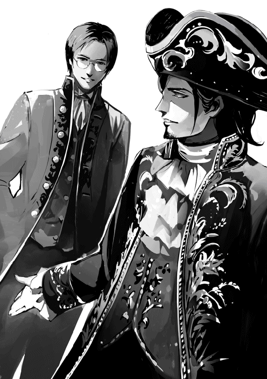
「うむ。閣下から、偉業を成し遂げたにも拘らず自然体のままだ、とのお言葉を戴いた」
「きっと自分ではこんなのまぐれだ、とか思っているんでしょうね」
「だろうな」
「そういえば、サダからは何かお祝いが来ましたか？」
「ああ、来たぞ。お祝いの手紙が。御結婚おめでとうございます、と一行だけだがな。全く相変わらず字の汚い奴だ」
「あっはっは。兄上へと、サダよりを入れれば三行ですよ」
「こんなもので申し訳ないとは思ったが、サダから手紙が届いたらお義父上に差し上げる約束をしていたのでな。恐る恐る差し上げたのだが、大層喜んで戴けた」
「くっくっくっ。筆無精のサダが書いた手紙ですよ。そんなレアもの、くれてやってもよかったんですか？」
「まあな。あいつもそのうち筆まめに、はならんだろうが、長い人生だ。いつか四行の手紙を書く日が来ないとは言えん」
兄弟は互いの顔に、そんな事あるか、と大きく書いてあるのを見て、どっと笑った。
サジ・ヴィジャヤン先生が六頭殺しの若の実兄である事を知っているのは、院長先生と事務局長である私だけだ。
だから夏の終わりに先生が兄上の結婚に出席するため皇都へと旅立たれた時、誰も何の詮索もしなかったのだ。それがかのヘルセス公爵令嬢ライ様とヴィジャヤン伯爵サガ様との結婚式である事を知る者はいないから。
この夏の話題は宰相、皇国全将軍、首都の著名人という著名人が全員出席したこの慶事で埋め尽くされた。皇都から遥かに遠い南のこの町も例外ではない。
何でも、皇太子殿下の御臨席を戴いたのだとか。
やれライ様のドレスの色がどうの、首飾りがこうの、ベールはヘルセス公爵家がどこそこから取り寄せたの。
それはみな、皇都にいる親戚やら友人から聞いた噂だ。この病院に新郎の弟が勤めている事等、思いもしない。南ではヴィジャヤン姓は珍しくないから無理もないのだが。おそらく初代ヴィジャヤン伯爵も南出身だったのだろう。
伯爵家正嫡子でいらっしゃるというのに、ヴィジャヤン先生はとても気さくな御方だ。看護婦や患者は全て平民なのに、普通に世間話をしていらっしゃる所をよく見かける。育ちの良さは隠しようもないが、御本人が貴族であると言わないので、周りの者は貴族の庶子か、訳ありなのだろうと、誰もが根掘り葉掘り出自を聞くのを遠慮している。
結婚式からお帰りになった時も、とても良いお天気に恵まれ、無事に終わりました、とおっしゃっただけだ。今や皇国中で知らぬ者はいない六頭殺しの若だが、ヴィジャヤン先生がその兄であると自慢された事はない。
おそらく院長先生は、密かに自分の娘との縁談を狙っていらっしゃるのだろう。ヴィジャヤン先生がお勤めになる前に、先生の出自が万が一にも漏れたりしないよう、特に厳重な注意があった。
そんな注意をされずとも、私が口外するはずはない。勤務している者はもちろんの事、患者がどこの誰であるかを話すのは厳禁されているのだから。心の中で、私を口止めするより本人を口止めした方がいいのでは、と思っていたのだが、お若いにも拘らずヴィジャヤン先生は大変口の堅い御方で、誰かに弟自慢をなさった事は一度もない。
但し、弟の事を話さないという訳ではない。「酔狂な弟」が北軍に入隊した、という事はみんな知っている。その弟とは三つ離れている事とか、弟は勉強が嫌いな事とか。
「もっとちゃんと面倒を見てあげれば良かったんですけどね。私も自分の事にかまけてばかりで、良い兄だったとは言いがたい」
「まあ、男の兄弟なんて、みんなそんなものですよ」
訳知り顔に皆が言う。
これからも、誰も知る事はないだろう。ヴィジャヤン先生が時々北軍に送っていらっしゃる、トビ・ウィルマー宛の小包の真の受取人は誰なのか。それには南の色々な果物から作られた長期保存が可能なジャムやドライフルーツ、痛み止めの薬や風邪の薬、ひび止め用の肌クリームなどが入っている。
真冬であろうと南で雪が降る事はない。そんな南から北へと続く空を眺め、ヴィジャヤン先生がつぶやいた。
「あんな寒がりが、まさか北へ行くとはねえ」
「夢を追いかけている時は、寒さなんて気付かないものなのかも知れませんね」
看護婦のトメが応じた所、何を思い出されたのか、ふっ、と先生は笑われた。
「いや。あれでなかなか強情な所がある奴なんですよ。ちゃんと気付いているし、震えてもいる。それでもしがみついた夢を手放さない。そういう子なんです」
「そういう気性の兵士は出世するっていいますよ」
今日は大分顔色の良くなった患者のクマが請け合うように言うと、先生はちょっと首を傾げて答えられた。
「別に、出世なんてしなくてもいいんですがね。怪我も病気もせずに帰ってきてくれさえしたら。そう願っているのは父母だけじゃないんです。祖母が特にかわいがっている末っ子で。いるだけで何となく辺りが和むという子なんですよ」
「そうなんですか。でも新兵じゃ、簡単に帰省もできないですしねえ。お母様もおばあ様も、さぞかしお寂しいでしょう」
「でしょうね」
クマの診察が終わり、次の患者へと歩き出しながら、先生が少し微苦笑を浮かべた。
「子供の時みたいに布団蹴り飛ばして、北の寒さに風邪でも引いているんじゃないかって、つい気にかかるんですよ。もう大概あの子だって大人なのにね」
毎月新顔が入隊してくるから、俺にも年下の仲間ができた。
つまり俺は先輩だ。えっへん。
ま、さすがに一ヶ月や二ヶ月先に入隊したというだけじゃ、先輩というより同期だけどな。何かを詳しく知ってる訳でもないんだ。先輩として世話してあげる気があったって碌な事はできない。だけど半年も違えば充分先輩だろ？
いばりたいからとか、そんなんじゃなくてさ。年下が入隊してくるという事自体に、何かわくわくするような期待感があるんだ。
俺は家では末っ子だから、今まで年下とか目下の人間という人と暮らした事はない。そりゃ主の息子という意味では俺は奉公人より上だ。でも父上は、自分の努力の末手に入れた訳ではないもの（たとえば伯爵家の三男という生まれ）を振りかざす事を嫌う人だった。
一見何でもありの我が家だけど、能力主義というのが父上の方針というか、信念と言っても良いんじゃないかな。つまり仕事のできる奴は尊敬される。できない奴は尊敬されない。そして、俺にできる仕事はない。
子供の頃はおじい様とおばあ様のお茶の相手として重宝されていたけど、そんなの俺がいないからって別に困るってものでもないし。できない奴の代名詞みたいな俺は常に底辺だった。
大きくなってから弓で狩りをするようになり、いつの間にか夕飯代が浮くぐらい獲物を捕って来るようになって、ちょっとは地位が向上したような気もするが、気のせいと言えない事もないような感じでさ。だって伯爵家の仕事って、兎を狩る事じゃないだろ。サガ兄上とサジ兄上は父上の名代を務めたり、決裁をしたりしていたが、そんな事俺にはできない。
その点、軍には「古参」という無言の序列がある。黙って年月を重ねていくだけで尊敬してもらえるんだ。これはもう、俺の為にあると言ってもいい。先に入隊しただけで偉いだなんて、笑いが止まらないよな。
いや、まあ、俺だってそれなりに任務は果たしているけどさ。ただ俺の場合、弓の稽古していればいいから、と上官のソノマ小隊長に言われ、それしかやっていない。弓の稽古が任務だなんて。他のちゃんとした任務をこなしている兵士には大変申し訳ない事になっている。
最もこんな特別待遇、長くは続かないと思うけど。人の噂も七十五日と言うし。七十五日はとっくに過ぎているんだ。オークを殺した事なんか、みんなもう忘れちゃっているか、聞いた事もない奴だっているだろう。
弓を射る以外にこれと言った取り柄がある訳でもない俺だ。後輩に何かを聞かれたって答えられない。こんな有様じゃ、いくら先輩とはいえ、兄のように頼られる事はないよな。それでも年上なんだ。年上を尊敬する気持ちなら持ってくれるんじゃね？ 大きく期待するほど俺も無謀じゃないけどさ。
ある日、いつものように厩の掃除をしていると、新兵がおずおずと俺に近寄って来て名乗り、俺の事を聞いてきた。
「あのう、お手間を取らせて申し訳ないですが、六頭殺しの若ってどの人か教えて戴けませんか？ この辺りにいるって聞いてきたんですけど」
「俺だけど」
「え？ まったー、先輩、冗談ですよね？ 自分の名前は、クラ・プーロレンと申します。三日前に入隊しました。何卒よろしくお願い申し上げます。それで、先輩の本当のお名前は何とおっしゃるんですか？」
「サダ・ヴィジャヤン。よろしくな。本名だ。冗談でもない。あ、今、手汚いから、握手はなしで」
「......」
なんでそこで、無言？
ただそいつの顔を見ていると、なぜか子供の夢を砕いたかのような罪悪感を覚えた。
それでも一人ならまだいい。俺の勘違いというか、気のせいという事もあるだろう。だけどこんな風に聞いて来る奴が、二人、三人、四人、五人と増えていく。
以下同文。同じ質問。同じ反応。
そして質問した後、そそくさと俺以外の兵士の所へと駆けて行き、俺の言った事が本当かどうかを聞くんだ。その兵士が、そうだぜと答え、新兵が仰け反る。その繰り返し。
なぜだ？
どうして俺が六頭殺しの若だと聞いて驚くんだ？
英雄とは顔が良いもの、と思い込んでいたせいなのか？
顔がまずいのだとしても、人を顔で判断しちゃいけないって教わらなかったの？
俺としては、何をどう想像してたから失望したんだか、是非聞いてみたい。
そりゃあ、すごーく尊敬してもらえるとまでは期待してなかったけどさ、そんなにあからさまに失望するって、ちょっとひどいだろ？
がっかりしちゃって、トビの前だというのに、ついでっかいため息をついてしまった。
「はあああ」
「そのような大きなため息をつかれるとは、何か御心配事でもおありになるのでしょうか？」
「だってさー。来る新顔来る新顔、全員に失望されちゃってるし」
「推察致しますに、あれは失望ではないと思いますが」
「失望じゃないなら何なのさ？」
「驚愕でしょう」
「驚愕？」
「神様のような人に違いないと想像していたのが、お隣の兄ちゃんよりフレンドリー。そのギャップとでも申しましょうか」
この頃俺って結構有名なのかも、という自覚が出てきたが、神様のような人って、何それ。
トビの主贔屓は、最近ちょっと怖いレベルに到達してるんじゃ、と思った。
「今度の奴は、どっち派だ？」
新兵を受け入れる小隊長が、人事に必ずそれを聞いて来るのは単なる好奇心からではない。
北軍の場合、家が貧しいからどこかに入らなきゃ食っていけない、という理由で入隊する奴が一番多い。平民新兵のほとんどがそうだ。しかし何かに憧れて入隊した、という奴も中々侮れない数でいる。
北の貴族の子弟なら、北軍との繋がりを持っていないと後々困るという理由もあるかも知れないが、実家が第一駐屯地の近くだから、という理由ではあり得ない。第一駐屯地とその周辺は皇王陛下直轄領であり、別邸はあっても、近くに領地を持つ貴族はいないのだ。特に貴族が他の領からわざわざ北軍に入隊するとしたら、給金や北軍との繋がり以外の理由がある。
今まで断トツで多かったのが、北の猛虎に憧れて、だ。ところがここに来て、北の猛虎派と六頭殺しの若派は二分する勢いとなり、小隊長が質問しなくてはいけないほどになったのだ。
そこで、どっちの派に属していようと関係ないだろう、猛虎と若は仲が良いじゃないか、と思うのは素人だ。
入隊すれば新兵同士、飲みに行ったり食べに行ったりする。その席で、北の猛虎がどうしたこうした、若の噂のあれこれ、当然出る。そして遠からず、どちらがより強いかという議論が始まるのだ。
猛虎は若を助けた。→猛虎の方が強い。
若はオークを六頭一人で倒した。→若の方が強い。
相手の言う事にもっともだと言って引き下がるぐらいなら、派閥に入るはずもない。議論は白熱する。
近衛の大将を倒せる奴が他にいるか。
流鏑馬の的を全的命中させられる奴が他にいるか。
その時、まあまあ、と仲裁に入ってくれる年長の者がいればいいが、下手をすると面白がって議論を煽る奴だっている。それでなくとも血の気の多いのが新兵だ。大抵最後は殴り合いの喧嘩となる。
それでも外に出てやるぐらいの分別があったら、こちらだって鬼や畜生じゃあるまいし、自分達が怪我しただけで済ませた事を汲んでやる。厠の掃除一週間の罰当番で終わりにしてもいい。
だが暴れた場所が悪かったとか、その店に迷惑をかけたとなると、ちゃんと弁償する必要がある。事と次第によっては謹慎処分もあり得るし、辺りを巻き込み、通行人に怪我をさせたとなったら減給処分、降格処分も考えられる。ものによっては五年、十年と残る記録もあるのだから、将来の昇進にも差し支えるだろう。
そこまでいけば、あいつのせいで、と恨む気持ちになるのは仕方がない。どうしても、あんな奴とは二度と口をきくもんか、となる。勢い、話をする、つるむ奴というのは同じ派に属する奴という事になる訳だ。
口もききたくない相手と任務を遂行していると、任務は任務と割り切っていても、間違いが起こりやすい。だから誰がどちら派かという事が、上官として当然知っておくべき事項となるのだ。
喧嘩の種になるから派閥禁止というのは簡単だ。しかし禁止したところで人の好き嫌いを左右できるものではない。但し、悪い事ばかりとも言えない。
シルモニ子爵家とデュシャン男爵家の両家は、領地が隣接している。遥か昔から境界線を巡るいざこざが絶えず、時には流血沙汰を起こす犬猿の仲として知られていた。
それでこの二家の次男がほとんど同時に入隊してきた時、一緒の小隊にならないよう、任務でも鉢合わせしたりしないように、上の方ではかなり気を使った程なのだが、蓋を開けてみればどちらも「若派」。
既に何年もの実績のある「虎派」なら、会の数も一つや二つではない。でも若派は、まだひとつしかないから、若派の会合で、どうしても顔を合わせる。
最初はそのふたりがいるだけで場の雰囲気が堅くなったらしいが、話してみれば結構良い奴、という訳でその内ふたりで一緒に飲みに行くまでになった。
この二人は偶々どちらも長男が家督を継げず、後年それぞれ爵位を継いだ。二人の代になってから、毎年あった境での争いによる死者負傷者の数がゼロになったと言う。
派閥が人命を救った希少な例と言えるかも知れない。
どちらの会も入会の際の質問は同じである。
「北の猛虎と六頭殺しの若は、どちらが強いか」
正解はただひとつ。もちろん同じではない。
「猛虎会」に入会するには当然、虎。
「豪弓会」に入会するには若となる。
どちらも強い、などという答えは答えではない。これは「踏み絵」なのだから。
踏むか踏まないか。
端っこだからいいよね、という問題ではないのだ。
しかし世の中には玉虫色を求める人もいる。そういう人達はどうするか？
昼飯後や夕飯後の休憩時間に、そちこちで悩んでいる新兵同士の会話が始まる。
「なあ、お前、どっちにすんの？」
「うーーん。まだ迷ってる」
「俺も。決めがたいよなあ」
「どっちも好きだし」
「どっちもすげーよな」
「お二人も近しいって聞くし」
「そうそう、若饅頭を食べながら、お茶飲んでたんだって」
「おおっ。渋いぜ」
「絵になるなー」
「でもどっちかに決めないと、入会させてもらえないだろ」
ほとんどの新兵はそこで堂々巡りを繰り返すだけで、先に進まない。だが入会すれば先輩に飲み会に連れて行ってもらえる。新兵からは声を掛けづらい先輩とも談笑しているのを見れば羨ましい。いい加減決めなきゃ、と焦る。どちらにしよう、を飽きるほど口にした後で、結局はコイントスとか、あみだでお茶を濁してけりをつけるのだ。
けれど中には堂々巡りで留まらない、留まれない奴もいる。新兵が同好会を結成する事は許されていないのだが、許されていないからどうした、とそこに新たな活路を見つける奴もいる。新兵、ルノ・ミゼーロはそんな奴だった。
「なあ、なあ。そんなら俺達で新しい会作ろうぜ。どっちも好きな人用の」
ミゼーロの周りにいた数人が次々と賛同した。
「あ、それ、いいかも」
「俺の同室もまだ迷ってたから、誘ってくる」
「そういえば俺の同室もまだ、どっちにも決めてなかったな」
「だけど発起人はどうすんの？ 新兵じゃやれないんだろ？」
「任しとけ。俺に心当たりがあるんだ」
こうして「弓と剣の会」が発足した。
入会の際の質問は、ただひとつ。
「北の猛虎と六頭殺しの若は、どちらも強いか」
正解も、ただひとつ。
それにしてもこれほど貯まるとは。
オークの賞金が三百万。父上から五百万。甲冑代として陛下から百万。北軍将軍から二百万。四将軍からそれぞれ三百万で、合計千二百万。
これだけで二千三百万だ。
トビが付けてくれた帳面には、この他にも様々な入金が記録されていた。
大きい所で、薬屋から合計六百万。油屋から三百万。肉屋から百二十万。骨屋から二百四十万。蝋燭屋から六十万。
以上、合計三千六百二十万なり。
俺の場合、食費とか諸経費さっ引いた手取り月八万が軍から俺の給金として振り込まれている。トビに給金を毎月五万ルーク払う以外、大きな支出はないから、差し引き毎月三万の収入がある事になる。金は増える一方だ。
兵士と言えば酒、タバコ、博打に女だけど、俺はそのいずれもやらない。はい、女も買ってません。だれも俺の童貞を疑ってないとは思うけど、念のため明言させてください。
あ、聞かれてなかった？
恥ずいっ！
ごほっ。そんな事はどうでもいいっ。
ともかく、北で使える武器や防寒衣料を買うのに相当な金がかかると予想してたのが結局ただで手に入ったし、この後何か大きな出費があるとしたら、怪我や病気で退役しなくちゃならなくなって家を買うという時だけだ。
独身の俺にでかい家は必要ない。貯金がこれだけあれば家が何軒か買える。ちっちゃな家に住んで、もう一軒か二軒、家を買い、そっちを貸家にすれば現金収入になる。これで退役後の心配をしなくてもよくなった。
それで俺はトビに、取りあえず自分用の別口座を作れと言った。
「もし俺に何かあったらこの金は全部伯爵家に行く。伯爵家は兄上の代になったし、まあ、お前に何も寄越さないって事はないと思うが、最初から別にしといた方が面倒がないからな。一千万を退職金として受け取っておけ」
一千万と聞いて、トビが目を見開いた。
「若、それは。いくら何でもあまりに法外。私は伯爵家にはともかく、若にはお仕えして一年未満なんですよ？ そんなに戴けません」
トビの事だから遠慮するだろう、と予想していた。それでもこれに関して譲る気はない。
「オークに襲われたあの時、お前がいなかったら助からなかった。だから俺の命代と思え」
「何をおっしゃる。若の命を救ったのは」
「北の猛虎に出会う前に、俺、あきらめてたと思う。矢なんかどうせ当らないって。お前がいたからがんばれたんだ。俺のわがままで、ここまで連れてきたお前を死なせる訳にいくもんかって」
トビは信じられないという顔で俺を見ている。だけどほんとだぜ。
「それとな。俺が死んだら骨は西に持って行くんじゃなく、ここに、北に埋めてくれ。一筆書いておくけど、誰かにごたごた言われるかも知れないから。遺言執行料を含む、だ。えへへ」
笑って誤魔化したけど、いつ死ぬか分からないのが兵士だからな。ちゃんと言っとかないと。別に、死んだらどこに埋められたって本人には分からない事なんだけどさ。俺にとって北が新しい故郷だ。ここで生き、ここで死にたい。
「あとさ、まあ、ないとは思うけど。もし次にあんな事があったら、すぐに逃げるんだぞ。お前はちょっと真面目過ぎる」
この人は、ほんとうに。
私が全く予想もしていないやり方で、人を根底から揺さぶるのだ。
退職金？ 遺言執行料？
普段何かをお考えになっていらっしゃるようには見えない御方だというのに、一体、どこからそんな言葉をお知りになったのか。まさかこれほど明晰に人生を達観していらっしゃったとは。
若、あなたはまだ十八歳なのですよ？
どうして死んだ時の事まで、お考えになるのです。
ここで生きたい。
今はそれでいいでしょう。
ですがここに骨を埋めたいとおっしゃるだなんて。
なぜそんなにも迷いのない目で生き急ぐのです？
予想外の事とはいえ、金と名誉を手中になさった。武器や馬、家だけでなく、その気になれば地位を買う事さえ可能ではない。どうしてせっかく稼いだ金を、まず己のために使おうとなさらないのですか？
金の使い道なら、従者の退職金より先に他にいくらでもあるでしょうに。
そして、この私に向かって真面目過ぎるなどと。
真面目なのはあなたです。あなたこそが。
従者の命を己が命であるかのように慈しみ、御自分の死後、その行く末までお考え下さる。それを真面目と言わずして、何を真面目とおっしゃるのでしょう。
私には分かっていました。もし私が戻った時に、伯爵家には既に辞表を提出致しましたと申し上げたのでなければ、きっと従者として受け入れて下さる事さえなさらなかった。
あのまま伯爵家に勤めていれば、お前ならいずれは執事になれる。俺の従者で終わるなんて、お前の能力と人生の無駄遣いだ、とおっしゃっていたのではありませんか？
そんな御方だからこそ、ますます離れられないのですよ。
ええ、ええ、離れませんとも。
だから、ほら。
その困った奴だ、という笑顔をやめてくださらないと。
胸がいっぱいになるんです。
追記
五十年後、「ヴィジャヤン伯爵家家伝」には以下のような記録が残される。
「サダ・ヴィジャヤン。北軍第一駐屯地墓所に納骨さる」
また、執事覚え書きには、伯爵家より勤続五十年の従者に退職金を渡そうとした所、既に充分戴いておりますので、と辞退された事が記録されている。
オークに襲われて逃げ切っただなんて、この村、いやこの国で俺だけだ。
もちろん、あのオーク殺しの若様を除いて、だが。いや、従者もいたか。
とにかく。
とにかく。
九死に一生、自分の幸運はこれで使い切ったと思って、荷馬車と駄馬はあきらめた。命が助かったのだけでも儲けものと思うしかねえ。
とはいえ、春先に商売道具の荷馬車と馬を失しちまったのは痛かった。
ぼろい荷馬車だって、へぼい馬だって、おまんまを稼ぐには十分だったんだ。でも改めて荷馬車や馬を買うとなると、どんなに古い荷馬車だろうと、年を取って今にも死にそうな馬だろうと、まとまった金がいる。
夏中必死に働いたが、荷馬車がないんじゃ、大きい物を運ぶ仕事は引き受けられねえ。日雇いの日銭だけでは食っていくだけで精一杯。この冬が無事に越せるかどうかの瀬戸際だ。
こうなったら冬は皇都に出稼ぎに行くしかねえ。旅費も皇都での宿泊費も痛い出費だが、この辺りでの冬の仕事を探したって、碌なものはありゃしねえんだから。兵士になれば食うには困らねえが、残念ながら俺の年じゃ入隊させてくれって言った所で弾かれる。
北で運良く仕事が見つかったって、薪や石炭を買う金をひねり出して終わりだ。馬と馬車が買えなけりゃ、来年また日雇いをするしかねえ。俺はため息と共に旅支度を始めた。大家には、来週旅に出るが春になったら戻ると知らせておいた。
ところが初雪がもうすぐ降るという頃、俺の家にオークに襲われた時の従者が訪ねてきた。なんと二十万ルークを手にして。それを俺にくれるって言う。
「な、なんで、こんな大金？ どうして？」
「私は本当に良い主に恵まれた。だが振り返ってみれば、十年もその人と一緒に暮らしていたというのに、ちっともそれに気付いていなかった。あの時もしお前の馬車に乗っていなければ、一生気が付かないままだったろう。つい、そう思ったものでね。いや、理由など気にするな。単なる幸運のお裾分けと思ってくれれば良い」
「いやー、ありがてえ！ これで冬が越せる！ それだけじゃねえ。これで荷馬車を買って、春からまた荷を受け取る仕事が始められる。運び屋がいる時は、いつでも言っておくんなさいよ。俺が生きてる限り、ただで運んでやるから」
「おやおや。オークに襲われたというのに、こりずにまた同じ仕事に戻ると言うのかい？」
「あんな事、百年に一度あるかよ」
「......オークに襲われるというのは、それ程珍しい事なのかい？ 北ではオーク狩りというのが毎年あると聞いたが？」
「オークのなわばりなんて、あの襲われたとこから、ずーっと離れてるんだ。そりゃ冬になれば、餌を探してここら辺まで現れるって事もあるけどよ。あんな夏もすぐそこっていう季節に、食い物あさりにこんなとこまで遠出して来るオークなんて聞いた事もねえ。てっきり大丈夫だと思ったんだがなあ。冬に現われるんだって、せいぜい五頭だろ。それが七頭だぜ？ 助かった、て言うのが、また、信じられねえ。ほんと、分からねえもんだよな、人生って」
「ほんとうにね」
従者は静かに相槌を打った。
それはどっからどう見ても、おまるだった。
「あの、トビ。これって、もしかして」
「もしかしません」
「それって、どういう......？」
意味、事、事情、ギャグ、悪意、おち？
どれを続けたらいいんだ？
いや、入れるべき言葉がもっと他にあるかも知れない。俺って、言葉を沢山知ってる訳でもないからな。
とにかく、トビを怒らせたら怖いんだ。下手な事は言いたくない。どれが一番無難だろうとか、あれこれ迷っているうちにトビが言った。
「明日から冬になります」
「え？」
「北の秋は、年によっては一ヶ月以上続く事もあるようですが、二週間ぐらいで終わるのが普通なのだそうです。つまり明日から雪が降り始めます」
「ええっ？ 雪？ そんなはずないだろう？」
外を見れば明るく気持ちのいい秋。紅葉のまっ盛りだ。三週間前まで短パンで弓を放ってた事を思えば、秋になって間もない頃と言える。始まったばかりの秋が、そんなにすぐ終わる訳ないじゃないか。
でも俺がそう言うと、まるで天気の事なら俺に任せろ、みたいな威厳を持ってトビが答えた。
「ところが、そんなはずがあるのです。気温がぐんぐん下がり始め、間もなく外で用を足すのが大変厳しい、という状況になります」
「ま、まさか、このおまるって」
「お察しの通りです。貴族の子弟は室内で用を足し、従者が外の便所に捨てに行くようになっております。それでこちらを購入して参りました」
俺はその新品のおまるを見つめた。そして、悩む。こんな時、主としてどういう反応を見せればいい？
こういう時のためにこそ、マニュアルというものがあるべきではないのか？
人生、マニュアルなしにどうやって生きていけというのだ。特に、俺のような新米主が。
正解がひとつではないというなら選択方式でもいいからさ。たとえばこの場合なら。
１ トビが無駄遣いした事を怒る。
２ まあ、使わないだろうけど、病気とかした時のためにひとつはあるべきだよな、とクールに受けとめる。
３ そんな恥ずかしいもの絶対使わない、と無視する。
４ お前が使え、俺はいいから、と主としての度量を見せる。
どれも同じぐらい正しいような気がするから、選ぶのに迷うと思うが、選択が四つしかない事に奇妙な安心感を覚える事も確かだ。
俺の気持ち的には３が七割で、１と２と４が一割ずつ、て感じ？
だけどトビの気持ちを考えるとなあ。悪気はないんだろうし。
マニュアルも無ければ決断力にも欠ける俺は、あ、うん、まあな、とかなんとか、意味不明の音を口から出すだけで誤魔化した。
どうせ雪なんて、当分降らない。問題なんて先送りにすれば良い、て思った訳。いつの間にか気が付いたら消えていた、は雪じゃないんだから無理かもだけど。
ところが次の朝、目が覚めたらそこは雪国だった。
どうしてっ？ 天までトビの味方なのかっ？
これぐらいの事で衝撃を受けるというのも情けないが、実は、俺は結構寒がりなんだ。認めたくはないが、たぶん普通の人以上に。
だけど俺にだって見栄というものがある。ほんとに？ と聞き返されるだろうから口に出したりはしないが。その俺にとって、この寒さは、もう口では言い表しようもない。
寒いったら、寒いったら、寒い。がんがんに冷える。駐屯地近くには巨大な湖があるんだけど、そこが凍った。
ひえー、湖の上を人が歩いてる、と驚いて言ったら周りの連中に笑われた。
「若、この程度で驚いていちゃ先が思いやられます。その内、氷の厚さは人間の身の丈を越える程になる。犬ぞりが何十台走ったって割れないんですから。犬ぞり競争なんて見た事ないでしょう？ 面白いですよ」
つまりこんなに寒いのに、これでもまだ序の口なのだ。
俺の故郷の西にだって、西のはずれの国境近くまで行けば万年雪が積もる高い山がいくつもあるから、雪というものを見た事がない訳じゃない。でも実家があるのは南寄りの西だ。雪は、ちらちら降る程度で珍しい。一年のうちに二、三回降ったりするけど積もらない。
冬着と言えば長袖シャツ。毛皮のコートや毛糸で編んだセーターという代物をここに来て初めて手にした俺にとって、この寒さは強烈だ。
幸い、そっちこっちから暖かい防寒着を贈ってもらっている。とりあえず、もこもこ厚着すれば便所への行き帰りに問題はない。でも用を足す時は、パンツを下ろすしか道はないんだ。
最初は俺だって我慢したさ。見栄より何より、恥ずかしいだろ？ 部屋で用を足すだなんて、悶絶以外の何ものでもない。
そりゃ、トビとは毎日一緒に風呂に入ってる。だから裸は見られてるとは言っても、それとこれとは別物だ。
いや、用を足してる時は廊下に出ています、とは言われたよ？ て事は、俺が用を足しているという事が廊下を歩いてる奴らに丸分かりじゃないか。
男同士で何恥ずかしがってるんだ、と言われりゃそれまでだけどさ。
しかし何しろ半端ではない寒さだ。たかがしずくを振り切るのでさえ素早さに切れが不十分と思い知らされた俺が、大に挑戦するなんて無理。
そう思い知らされた後でも、俺は往生際悪く、ほんとにみんな室内で用を足しているのか、こっそりあちこちで聞いてみた。だけどトビの言っている事に嘘はなかった。
まあ、トビが嘘を吐くような人間だとは思わないけど、ほら、こっちに不慣れなせいで、ちょっと大袈裟に言われた事を言葉通りに受け取ったとか、あるかもだろ？ 六頭殺しをからかってやれ、のジョークを真に受けて、とかさ。
どうやら、平民だったら鍛えられているおかげで、早ション、早ぐそで冬を乗り切れるらしい。強者になると、夜中にぱっと起きて寝間着のまま便所に行く奴さえいるという。でも貴族の子弟は北出身であろうと室内で用を足し、従者が後始末していたのだ。
仕方がない。せめて自分のものぐらい自分で捨てに行くから、とトビに言った。するとすぐさまトビに言い返された。
「従者の風上にも置けない奴、と私が後ろ指さされるようになってもよいとおっしゃる？」
「いや、そんな事」
言う人なんている訳ない、という言葉を続ける事はできなかった。トビの顔が怖すぎて。
怒るトビと寒さには勝てぬ。
俺は諦めて室内で用を足すようになった。そして寒さはまるで底なしの沼の様に、これでもかこれでもかと襲って来る。
ある早朝、虹がかかっているのが見えた。
確かに虹だ。
夏の虹と違って、冬の虹は、柱みたいにまっすぐに立って現れる。
それより、どうして朝なのに虹が見えるんだ？
今は冬だぞ？ がんがんの真冬だぞ？
夏の雨あがりの虹しか見た事ない俺は混乱していた。でも聞いてみると、冬の虹ってこちらでは珍しくもなんともないんだって。本格的な寒さの始まり、というだけで。
その虹が見える頃、俺は初めて矢が当たらないという経験に苦しむ事になった。ちっちゃい頃なら矢が当たらない事ぐらいしょっちゅうあったが、俺は十歳を過ぎた辺りから狙った的を外した記憶があまりない。
だけど気温がこれだけ下がると、当然弓も矢もそれに合わせ、違った動きになる。矢の飛び具合や逸れ具合に微妙な、いや、かなり大きな差が出るのだ。それが掴めないというか、慣れないせいで、狙ったところから外れるようになった。でかい的なら当たるけど。
手がかじかんじゃって感覚ないし。冬の虹が見えると、もう外出るのやだ、春になるまで稽古止めちゃおうかな、とかそればっか考えちゃう。止めたって、誰かが責めるとは思えない。
そもそもこんな真冬に弓の稽古してるなんて、俺の他には二、三人しかいないんだ。そして毎日違う顔ぶれ。つまり、毎日稽古やっているのは俺だけなんだから。
じゃあ冬の間、稽古しないのか？
それはまずいよなって思う。
稽古しろとプレッシャーかけられてる訳じゃない。剣と違って、弓は競技会とかがある訳でもないし。そう言えば、将軍がなんか春にやるとおっしゃっていたけど、俺は模範演技すればいいだけなんだって。
だけど矢を射るために必要な筋肉は矢を射る事でしかつかない。それは経験上知っている。何しろあの韋駄天のトビに弓をやらせたって、ぽとって矢が三十メートル辺りで落ちるんだぜ。そんなんじゃ的になんて当たる訳がない。
他の事で体を鍛える事はできる。腕立て伏せとか、懸垂とか。屋内で鍛えた筋肉が邪魔になるって訳じゃないし、足の筋肉を使わないという訳でもないけど、矢を射るための筋肉が衰えたら、当然当たらなくなる。そして春になってから突然稽古を始めたって、衰えた筋肉は一日や二日で戻ってきてはくれない。
くすん。
恨めしげに冬の虹を睨んで、寒い中、俺は稽古に行っていた。そしたら、毎日寒い、寒いと愚痴を零す俺を見かねたようで、ある日トビがへんてこな手袋を差し出した。
「若、どうぞこれをお使いになってみてください」
その手袋は手甲と手首が羊の皮で覆われ、毛糸で編んだ指サックがくっついていた。でも親指、人差し指はなくて、中指、薬指、小指用だけに付いている。
おおっ。
こ、これは、かじかんだ手に朗報だ！
「トビ、これ、すごい！ あったけー。こんな弓用の手袋、一体どこで見つけてきたんだ？」
「皮職人に余った羊の革をわけてもらいまして。それを若の手甲と手首にあわせて切り、毛糸屋に持って行って三本だけ指を付けてくれるように頼んだのです」
「トビ！ お前は従者の鑑だ！ 褒めてつかわす！ ところで、これいくら？」
金は今ではしこたま持っている俺だが、つい身に付いた貧乏性。もう、条件反射だね。必ず値段を聞いちゃう。
「ただです」
「え？」
ただ、と聞いてすぐに喜べないのは過去に苦い経験があるからだ。
「まさか、また御用達と看板に入れたい、とか？」
「いいえ、それは絶対やらないよう、約束させました。でも他の弓部隊の人からこの手袋をどこで買ったかを聞かれた時、その店の名を言ってほしいそうです。そして値段は二千五百ルーク、と」
北の商人達の商魂、侮り難し。
だけど冬場に稽古に来る弓部隊兵士の数なんて少ない、というか数えるほどしかいないんだ。買ってくれるお客さんが大した人数いる訳でもないのに、ただであげたりしたら店の損になるんじゃないの？
とは思ったが、宣伝代という事なら、と手袋は有り難く戴いておいた。そして弓隊員に手袋の事を聞かれた時、ちゃんとその店の名前を言った。
別に、沢山の人に何十回も言った訳じゃない。的場で二、三回、食堂で二、三回くらいか。そんな感じだったから、あんまり宣伝にならなかったろうな、と思っていた。ところが次の年の秋、指のほつれを直してもらいにトビがその店に行ったら、「若の手」と名付けられた、かなりな数の同種の手袋が置いてあったそうだ。
店主は持ち込んだ奴をただで直してくれただけでなく、新しい手袋をもう一組、ただでくれた。毎年春になったら修繕に出してください、店の続く限りただです、とまで言われたという。
気を付けて周りを見てみると、確かに翌年の冬から俺がしている手袋をよく見かける。よくよく考えてみれば、手袋は弓を稽古する人だけが付ける物ではない。誰だって冬でも狩りをする。冬に弓を引かなきゃならない人にとって、便利な手袋だものな。
弓部隊兵士もみんな同じ手袋を買ったようだが、冬場に俺の側で稽古する人の数は相変わらず少ない。
夜半の雨はいつか雪になり、今朝の地面は雪に覆われている。
「やれやれ。節々が痛むから降るとは思っていたけどねえ」
暖かい暖炉の前で、お母様がため息をついた。広い邸宅のどの部屋も充分暖かく、外に出るのでさえなければ寒さに気づく事さえないのだけれど。
お母様はお父様の死後、ジョシ子爵本邸から御自分の物を全てこの贅沢な別邸へと移した。隠居、とおっしゃってはいるものの、平民出身とはいえ国でも有数の材木問屋の娘であったお母様には商才があり、内装と家具の販売等で子爵家とは別に財を築いた。この別邸の建築費は元より、管理費も全てお母様が御自分で払っていらっしゃる。
「北はもっと寒いのだろうけどさ」
どちらも口に出さない。サダはどうしているかしら、と。
あの子にとって、初めて親元から離れて暮らすというだけではない。軍隊生活がぬくぬくとした伯爵邸での毎日と同じはずはないし、それに加え、短い夏の後に続く長く厳しい冬。
食事だって鴨のローストがほいと出てくる訳もなければ、あの子が毎日楽しんでいたお風呂だって贅沢でしょう。
何も聞かずとも、つらくないはずがない。あんなに寒がりのくせに、よりにもよってどこより寒い所へ行くだなんて。てっきり雪が降る前に帰るかと思えば、ここに雪が降ったというのに、まだ帰って来ない。
名を上げたという。
それが何だというのかしら。そんなものは一過性のものでしょう？
最初はちやほやされたとしても、人が忘れるのは早いもの。
北の猛虎にも会って、気が済んだでしょうし、北軍へ入隊する必要なんて、どこにもないはずだわ。
手紙にだって、いつでも帰っておいでと書いたのに。あの子ったら返事も碌に寄越さない。まあ、筆無精のあの子が手紙を書くはずはないと覚悟はしていたけれど。
私はてっきり旦那様がお引き止め下さると思っていた。旦那様だって本当はサダをずっとお手元に置きたかったはず。あの子に小さい頃から気ままを許したのは、御自分には許されなかった自由をせめてあの子には味あわせてあげたかったからだとばかり思っていたのに。こんなにあっさりお手元から手放しておしまいになるだなんて。
それでなくともあの子には、お母様が子爵家財産とは別にしている資産を譲るおつもりでいらっしゃる。それは兵士などにならなくとも暮らしていくのに充分なお金で、サガの代、その子の代になっても、経済的にヴィジャヤン伯爵家に頼る必要はないという事。
でも止めるな、と旦那様に言われてしまった。止めた所で聞くような子ではない、と。それはそうなのだけれど。あの強情、一体誰に似たのかしら。
ちら、とお母様の顔を見る。
サダの顔立ちは私達夫婦、祖父母の誰にも似ていない。けれど気性は一番お母様に似ていると思う。
どこか奔放な。
細かい事は気にかけないかと思えば、気にかける事にはそれはそれは強情で。
そしてまっすぐに人を見る。
あの目にやられた、とお父様が笑っていた事を思い出す。
「結婚相手でも見つければ、帰ってきてくれるかしら」
暖炉の軽やかに舞う炎を見つめながら、私はそっと呟いた。
「あれは、戻るまいよ」
「どうしてでしょう？」
「北に行く前に私の所に寄っていったからね。分かるさ。あの子の目が、見つけた、と言ってたよ。自分のいたい場所を。たまには戻ってくるだろう。観光か、仕事か。結婚じゃあないね」
伯爵夫人として本音を顔に出さないくらい、普段から気を付けているのに、ついお母様の前では気が緩んだようで、窘められた。
「渋い顔をおしでないよ。英雄の母が、息子の事を誇りに思わないでどうするんだい」
お母様のお見立てが間違っているとは私も思わない。ただ認めたくないだけ。
母とはなんと損な役回り。産みの苦しみと育てる苦労、やっと一息つける年になり、共に何かをしようと思えば忘れられる。手紙も小包も戻ってこないから、生きてはいるのだろうけど。
あの日だまりのような子が伯爵家から旅立った後の、残された邸の寒々しさと言ったらない。情けない事に、私はそんな寒さに耐えきれず、実家に逃げて来た。
「ねえ、お母様、夏になったら二人でサダに会いに北に行ってみませんか？ 待っていた所であの子が帰ってくるでなし」
「忙しい新兵に、母や祖母が会いに行ったって邪魔にされるだけだろう？」
「そうはおっしゃいますけど、長年育てる間はさんざん邪魔をされたんですのよ？ 少しくらいやりかえしたって罰は当りませんわ」
「あっはっは。こんどは私の番、というのかい。それもまあ、面白いかも知れないねえ」
会いに行った時見せるであろうサダの顔を同時に思い浮かべ、私達は顔を見合わせ吹き出した。
若自身は特別扱いされている事を知らない。
仲間の兵士も、若がどんな風に特別扱いされているのかを知らない。それより六頭殺しの若を特別扱いする事の方が当たり前だろうと思うせいか、どうして若が普通の兵舎に住み、普通の食堂で食べ、普通の風呂に入っているのか、と不思議な目で見ている。
ギャッツ中隊長が若の事を特別扱いされていると言ったそうだが、それは事実だ。もっとも彼の場合、若がどういう風に特別扱いされているのかを知らずに言った事なんだと思うが。
特別扱いである事を隠しているのは、世間体でもなければ、公平感が損なわれるからでもない。英雄を英雄扱いするのは当然だろう？ しかしそんな事をしたら、若に遠慮されてしまう。それで一々隠してやっているのだ。
たとえば、北軍にも数は少ないが貴族用の兵舎がある。それは一部屋が普通の四人部屋より広い。だが、若が住んでいるのは普通兵舎だ。
カルア将軍補佐が若に兵舎を提供する時、まず貴族用に御案内なさった。
「北軍の貴族用兵舎は質素だから、必要な物があれば取り揃えよう。希望を出すように」
「あの、貴族用兵舎って事は、普通の兵舎よりお高いんですよね？ 俺は普通兵舎でいいです」
「他の者は一ベッドに付き、普通より五割増の差分を払っているが、それは免除する。差額は心配しなくとも良い」
「え、それでは申し訳ないです。俺、普通兵舎でいいですから。そちらにしてください」
「何を遠慮している。そもそも貴族なのだから、貴族用兵舎に入るつもりだったのではないのか？」
「いいえ。実は、こんな事になると知る前は、平民として入隊するつもりだったくらいなんです。それでなくても、いろいろして戴いているんですから、それ以上して戴いたら申し訳ないです」
そう若が遠慮したので普通兵舎になった。新兵の場合、住居費、食事代はただというか、給金はそれらを差し引いた手取りになっているから、若が差額を払っていない事を知ってもおかしいと思う者はいない。だが新兵だったら、普通は四人部屋に入れられるのだ。
貴族の子弟だったら従者を連れて来る。従者と二人で四人部屋に入る場合、その貴族は三ベッド分の追加料金を毎月払うか、給金から差し引くのとどちらにするか、選択する事になっている。もし従者と一緒に寝起きするのが嫌だという場合は、自室の三ベッドと従者用の一ベッド合計四ベッド分払う事になる訳だ。
若はトビと二人で四人部屋を使っているが、差額を払っていないし、天引きもされていない。管財部から請求書が来ないので、差額を払うものだとは知らないのだろう。
また、若は自分の部屋が、普通兵舎とはいえ小隊長用の部屋で、いわゆる貴族部屋と同じ広さである事を知らない。
次に従者の食事代。これは本来なら主が払うべきものだ。他の貴族も払っていないが、それは自分用の料理人を連れてきているか、料理のできる従者を連れてきているので、隊で用意した食事を取っていないから払う事を免除されているに過ぎない。
トビは他の新兵と一緒に食堂で食べている。けれど誰もその食事代を請求していない。それはカルア将軍補佐が裏で手を回したおかげである事を若は知らない。
そして風呂。
若が風呂好きなのは、トビが詳しく入浴の規則を聞いてきたので、入隊当初から知られていた。ただ、普通兵舎には普通風呂しか付いていないし、百人共同で、全員が毎日入れる訳じゃない。
そのため若以外の全員が集まり、いわゆるローテーションを組む事になったのだ。若が入るのは九時四十五分から十時十五分。その三十分間に一緒に入る兵士は、今日は誰と誰というふうに。
各人十分、最多で六人を越えないようにした。でも誰も入ってこないと、どうしてだろうと若が不審に思い、かえって気を使わせるという事で、三人以下にならないようにしている。
だから若に殺人容疑がかけられた時、若の入浴時間を弓部隊全員が知っていたのだ。そしてその日一緒に風呂に入っていた者達が、若がいつもの時間に風呂に入っていた事を証言した。
実は、新兵の入浴時間は十分を越えてはならない、という不文律さえある。そして入浴は九時半以降（古参の兵が全員入り終わってから）で、隔日しか入れない事になっている。しかし若と一緒に風呂に入りたい者が列をなしているのだ。若にはどんどん風呂に入ってもらわねば困る。今でさえ若と一緒に風呂に入れる隊員は古参兵だけで、新兵に順番は回って来ない状態なのだから、若に余計な事を言う奴などいない。
最も大きな違いが給金だ。
普通の新兵の給金は毎月六万五千ルークで、若の給料が八万なのは職能給一万五千が加算されているからだ。北軍の歴史上、新兵でこの職能給を受け取った者はいない。北の猛虎は二年目から受け取ったが。
だが本人を含め、今後も若が特別扱いされている事を知る者はいないだろう。なぜなら誰にも若を特別扱いしているつもりはないからだ。
俺が勤めている皇都の店は正月に一週間休業するので、その前後に休暇を取る者が多く、少々長い休みを取ったって目立つ事はない。
「よお、カン。正月は実家か？」
仲の良い同僚のピンソンが聞いてきた。
「ああ。今年は十日取ったんだ。久しぶりにゆっくりしてくる」
「それはいい。じゃ年明けに、またな」
「良いお年を」
ピンソンに別れを告げ、出発したのは西行きの乗り合い馬車だ。俺の実家は東にあるが。
向かうのは言わずと知れた、六頭殺しの若の生家。
俺は英雄譚の類が好きで良く読む。その関係で歴史の名所などを訪ねるようになった。でもそれは単に英雄と言われるぐらいの人はとっくに死んでいる事が多いからに過ぎない。生きている英雄がいるなら、その人の生家を是非訪ねてみたいと思っていたが、そんな機会は今までなかった。
北の猛虎の名が皇国中に知れ渡った時、平民なら生家を訪ねても門前払いを食わされる事はないのでは、と期待して場所を探したが、まず彼の生家がどこにあるかが分からなかった。
北の農家の息子という事は噂で知ったが、いかんせん、北と一口に言っても広い。北は広さだけで言えば皇国の他の全域を飲み込めるぐらいあるのだ。北の農家という手がかりだけでは、町を探して彷徨っているうちに一生が終わってしまう。
北軍に入隊すれば分かるのだろうが、一般人がそんなもの軍に問い合わせたって教えてくれる訳がない。残念ながら、俺には北軍兵士の知り合いなんて一人もいないし。
仮に住所が分かったとする。で、たとえばそれが北の中央辺りだとして、今俺が住んでいる所からそこに辿り着くまで片道十日はかかるだろう。すると往復二十日。せっかくそこまで行ったなら、せめて二、三日は過ごしたい。と考えると軽く三週間を越える休暇となる。それはちょっとやばい。店主に、戻ってこなくて良いと言われそうだ。
だから六頭殺しの若の噂を聞いた時、そしてそれがヴィジャヤン伯爵家三男であると知った時、これは見逃してはならないチャンスだと思ったんだ。
ヴィジャヤン伯爵家の領地ならここから片道たったの三日。往復六日だから、当地で何日かゆっくり時間を過ごしても、充分正月休暇の範囲内で戻って来れる。
北の猛虎の生家より近いとはいえ、せっかく行くんだ。準備はしっかりしておこう、とヴィジャヤン伯爵家に訪問許可をお願いする手紙を書いたのが秋。
なんと、なんと！ 今なら一泊一万ルークで邸内での宿泊も受け付けている、という返事が来たのだ！
し、信じられない！ 伯爵邸に泊まれるだなんて！
俺は早速正月三泊を予約した。高級な宿の二倍の料金なので、一泊は近所の宿にしようかな、とも考えたんだが、こういう時の貯金だと思い直し、奮発した。予約が取れた事は職場の誰にも言わなかった。上司や同僚に、土産はどうするから始まって、いろんな事を気に掛けなくちゃいけないのが煩わしいからな。帰ってから自慢話が出来ないのはちょっと残念だが。
ヴィジャヤン伯爵邸は、伯爵家本邸としては大きさも外見も普通で、変わった所はない。到着すると、タマラさんとおっしゃる、いかにも伯爵家執事という立派な風貌の方が邸内を案内してくれた。もちろん目玉は若の部屋。住んでいた頃そのままを保存しているという。
おっ。壁に子供の頃使ったらしい弓が掛けてある。
「こちらはサハラン近衛将軍より贈られたもので、六頭殺しの若が初めて手にした弓であります」
確かにサハラン公爵家の家紋入りだ。これが六頭殺しの始まりか。それをこの目で見ているだなんて、中々胸に迫るものがある。壁にはそれ以外にもいくつか弓が掛かっていて、年を取るに従って段々弓が強くなっていったのが分かる。
タマラ執事が最後の弓を指さしておっしゃった。
「この弓は、六頭殺しの若がオークを殺した時に使った弓を忠実に復刻したものです」
おおおっ。感動、ここに極まれり。
広い部屋でもなかったが、ひとつも見逃すまいと室内をきょろきょろ見回していると、メイドの人がやって来て、タマラさんに小声で話しかけて来た。
「失礼します。この部屋の明日の予約ですが、キャンセルが入ったのですけど、如何致しましょう」
「おや、珍しいね」
「何でも、御本人様が事故で足を折られたのだとか」
「そういうお気の毒な事なら仕方がない。予約金は全額返して差し上げなさい」
それは聞き捨てならない。
「あの。この部屋の予約って。それって、まさかこの部屋にも泊まろうと思えば泊まれるって事なんですか？」
「さようでございます。何分御希望なさるお客様が多いため、宣伝はしておりませんが」
「では！ では、そのキャンセルされた方の代わりに、私が泊まる事はできますか？ もちろん、差額は払います！」
「実は、キャンセル待ちのお客様もいらっしゃるのですが。これも何かの御縁というものでございましょう。お部屋を変更いたします。しかしお待ちいただいているお客様に不公平になりますので、この事はどうか御内密に」
こうして信じられない幸運により、俺は六頭殺しの若の部屋に一泊だけだが泊まる事ができたのだ！
その部屋は一晩三万ルークだったため、土産物を買う事はあきらめるしかなかったが、払っただけの事はある、本当に幸せな一夜だった。
飯もうまかったし、食後には楽師と歌手が来て、若に捧げる歌を歌ってくれた。歌手の名前はノナさんと言う。初めて聞く名前だったが、皇都にいる歌手にも負けないぐらいのいい声だった。
何から何まで至れり尽くせり。いやー、今回の旅は今までの中で一番よかった。
よし、金を貯めて来年も若の部屋に泊まるぞ、と勢い込んで予約を申し込んだら、来年の正月の予約はもう埋まっていると言われた。再来年の分はまだ予約を受け付けていないんだと。
しょうがない。幸運というのはめったにないから幸運と呼ばれるんだ。そうそう何回も巡り会えなくたって、あたりまえだよな。
とにかく幸先のいいスタートだ。
今年は良い年になりそうな気がするぜ。
若と一緒の時間帯の風呂に入れるのは、入隊十二年以上の兵士が入会できる「一周会」会員の特権だ。
もちろん「二周会」もあるが、兵士となって二十四年というと大抵外に所帯を持っていて、兵舎に住んでいる奴はほとんどいない。因みに、平の兵士は五十歳で退役だから「三周会」はない。
若目当てで入隊してきた新兵にとって、後十二年も待つのかよ、と恨めしくなる話だ。古参兵が笑いながら言う。
「若番なら明日でもいいぜ」
若の指を守る番人→若の番人→若番。
冬になったというのに、若がそれでも弓の稽古を止めない。それで周りが心配しだした。もし凍傷で指でも落としたら、と。そこで的場の近くの小屋にある暖炉の番と、的場で一緒に稽古して若が適当な間隔で休憩を取るように促すやつが要る、という話になったのだ。
「休憩は十分間隔で取った方がいいよな」
「うむ。風が強ければ五分でもきついが、温石で武装していれば何とかなるはずだ」
「側で射るのは常時二、三人てとこか？」
「そんなもんだろう」
そこで気づいた奴がいた。
「これって風呂のローテ、そのまま使えるんじゃね？」
それを聞いたソノマ小隊長が深く頷いた。
「極寒を耐えぬいた奴こそ、若と一緒に風呂に入るに相応しい」
上官の鶴の一声だ。嫌応もない。新兵が腹の中でざまーみろ、とほくそ笑んだ瞬間と言っていい。
しかしいくらもしないうちに、新兵達は何かおかしいと気づき始める。
「おい、ロダ、お前、若と風呂に入れるってほんとか？」
「うん、バースチャッド上級兵の代わりに入っていいって言われたんだ」
「じゃあ、若番も代わんなきゃいけないのか？」
「いや、それはやらなくてもいいんだって」
若と一緒に風呂に入る権利は、なんだかんだ都合で諦めるという奴が時々出るのに、若番を逃げる奴はいない。それどころか、若番になるのを心待ちにしている様子さえ窺える。
北の冬の寒さは格別だ。特に一月から二月にかけての極寒は、文字通り骨を凍らせる。外に出る時は凍傷や凍死を防ぐための準備を充分にしていても長時間外に立つなんて命がけだ。寒さに鍛えられた北軍兵士であろうと、喜んでそんな真似をしたい奴なんているはずないのに。どうして皆、若番には文句も言わずに行くんだろう？
「聞いたんだけどさ、あの百発百中の若が、的を外しているんだってよ」
「へえー」
そりゃ若なら矢が外れるのは珍しい。だけど矢が外れるのを見て、一体何が面白いんだ？
ちょっと見に行ってみるか。寒いけど。
そんな風にして、ひとり、ふたりと若の朝稽古を覗きに行くようになった。
「す、すげえな」
「うん、俺、あの弓が冬に引き絞れるんだとは知らなかった」
「俺も」
そして気づくのだ。若の稽古の厳しさに。あの不世出の弓の才能は、その厳しさを耐え抜いて齎された事に。
確かに才能はあるだろう。なければあそこまで到達するものではない。だが才能だけではないのだ、と。
そこまで稽古に精進する、できる、続ける、それ自体が才能なのだと言ってしまえばそれまでだが。
吹雪の時にさえ的を外さない。
六頭殺しの若の新たな伝説が生まれるまで、あと二冬。
静謐な朝。
バシュ
バシュ
一矢。
また一矢。
若は丁寧に射っていく。
祈るかのように。
それを遠くから見ている俺。
必死に稽古したけど、ちっともうまくならなかった俺。
あそこまで射てたらどんなに嬉しいだろう。そう羨ましく思いながら見ている。
まあ、必死に稽古したとは言っても、真冬に稽古した事はなかったな。そんな事したら、弓がうまくなる前に死ぬだろ。
バシュ
バシュ
矢が的を貫く音の少し前に、空気がひゅんと唸る。その切れ味の良い音が遠くで見ている俺の耳にまで響く。
どの矢も過たず的を貫いている。その度に、俺の周りに居る奴らがぶるぶる震えながら、すげえな、と感嘆の声をあげる。
そりゃそうだ。的を外しているって言うから見に来たのに、ちゃんと当たっているじゃないか。
でも聞く所によると、若は矢が狙い通りに当たらない、と愚痴っているらしい。だから北の冬の寒さに慣れるため、こうして毎日稽古しているんだって。
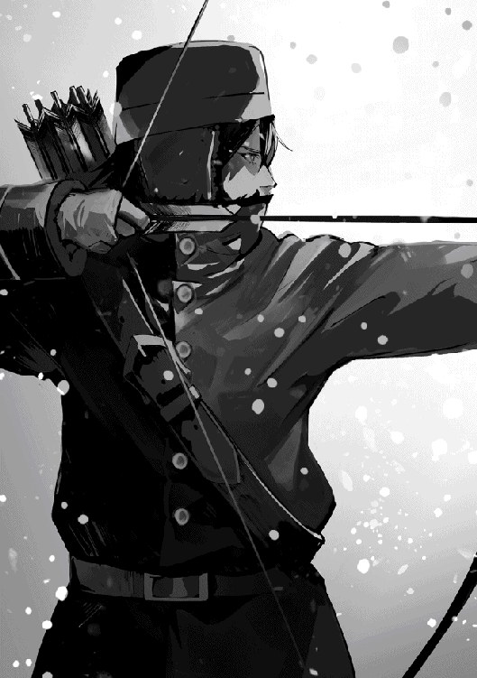
狙った所って、的じゃないのか？
的のどこに当たろうと、当たっているんだからいいじゃないか。
しかもあの的は百二十メートル先に置いてある。どうして、これでもう充分だと思わないんだろう？
刺さった矢を見ては、若がぶつぶつ文句をおっしゃっている。まだ満足したようには見えない。
この寒稽古が冬中続くのだ。
毎日毎日、休みなく。
吹雪の日なんか、当たらなくて当たり前だろ。そもそもどうして当たるはず、と思うんだ？
若の瞳は何かを見ている。
的？
いや、違う。
ふと思い出した。
あの瞳は、以前ケルパ神社で会った、祈りを捧げる僧に似ている。
祈ったからといって願いは届くのか？
俺の祈りは届かなかった。願いを叶えてくれる訳でもないのにどうして祈るのだ、と俺は僧に聞いた。すると僧は俺の不躾な質問を叱るでもなく、説教するでもない。
「祈る事自体が誰にでも許され、与えられている恵みだからですよ」
若も祈るのだろうか？
もっとうまくなりたいって。
稽古を続けている所を見ると、祈っていたとしても、稽古をせずにうまくなると思っている訳じゃないよな。
的場には、自分も稽古する振りをして、常に若番が二、三人いる。若がついうっかり凍傷にかかったりしないように。吐く息で、まつげがばりばり凍るんだ。外気に肌を晒したら、五分後には凍傷にかかる。あの黄金の指に万が一があってはまずいだろ、と。
従者がいつも貼り付いているとは言え、あの従者にとっても初めての北の冬だ。温石というものがある事さえ知らなかったそうだ。今ではこまめに温石を近くの暖炉小屋で暖めては、冷たくなったやつと取り替える手際もいいが。
若は恵まれている。誰もが若を大事にする。
たとえ稽古なんて全くしなくたって、それに変わりはないだろう。どうしてそんな、しなくても良い努力をするんだか。
バシュ
バシュ
寒さにはめちゃくちゃ弱いお方だと聞いていたんだがな。
一体どうして？
お前はもう充分、名人じゃないか。
愚問だな。
祈りに終わりはない。
朝、若と一緒に飯を食べながら六頭杯競技会の詳細を詰めようと言ったら、補佐のカルアがそれに異を唱えた。
「しかし若は毎朝的場に行きますので、その時間帯はお避けになった方がよろしいかと存じます」
「え？ 的場って。何をしに的場？」
「矢を射ちに、であります」
何を今更、と言いたげなカルア。だが私はその顔をまじまじと見つめ返した。
今は冬の中でも一番気温の下がる二月の初旬だ。屋外訓練は春まで一切取りやめになっている。
暖かい所から来た者には北の寒さがどれだけ厳しいものなのか、中々理解されないが、屋内にいてさえ寝ている間に暖房が切れ、朝には凍死していたという事件が毎年必ず起きる程寒いのだ。それは薪や石炭を買う金がない平民の事を言っているのではない。防寒に気を配っている、この第一駐屯地内で起きる事だ。
また他の駐屯地では燃料を節約するため、冬の間、建物はできるだけ閉鎖し、必要最小限を暖めるようにしている。
特に一月中旬から二月の中旬にかけて、外に出る、というのはどんなに暖かい防寒具を身に纏っていようと骨まで凍る時期で、矢が射てるような気温ではない。一瞬の内にがちがちに凍る弓を引くなんて不可能だし、第一肌を数分外気に晒しただけで凍傷にかかる。
「矢を射ちにって。この寒さで？ 外に五分も突っ立っていれば凍傷にかかるだろうが。矢だって、凍った弓では飛ばないだろう？」
「当然休憩は入れていますが、若は実際射っておりますし、当たっています」
「いくらなんでもそれは危険ではないか。どうして誰も止めない」
「弓部隊の連中が、万が一にも若の指が凍傷にかかったりせぬよう、順番で的場に詰めており、暖炉番も別に待機しておりますから、凍傷に関しては大丈夫かと思われます」
「うーむ。カルア、それならこの際だ。屋内的場を一つ建てるか？」
「屋内的場、でありますか」
「剣道場はいくつかあるが、的場は屋外しかないから、冬の練習は今まで誰もやってなかったろう？
『矢切り』はあるが、できる者が限られる。せっかく六頭殺しが入隊したのだ。これを機会に、北軍でも弓関係の施設を充実させようではないか」
「なるほど。屋内的場というのは元々考えていた事ですし、建てる事はいいでしょう。早速予算を組みますので。ただそれができあがったとしても、おそらく若は使わないと思います」
「使わない？ なぜ？」
「若が今、必死に稽古している理由は、この寒さのせいで矢が思ったように当たらなくなった為と聞いております。つまりこの寒さの中でもきちんと当たるように稽古しているのだとか」
「さっきお前、若の矢は当たっていると言わなかったか？」
「申しました。私も一度見に行っただけですが、若の矢は全部的に当たっていました。ですがソノマによると、若は、たとえば九十メートルぐらいの射程の的なら上から下に十センチ間隔で直線を引いたように五本、というような当て方ができるのだそうです」
「そ、それはまたすごい」
「そういう当たり方はしていませんでしたので」
「いやはや。精進によって支えられた才能と言ってしまえばそれまでだが。名人というものは留まらぬものよ」
「まさにお言葉の通りかと存じます」
「ま、凡人には屋内的場だな。それなら、会議は若と一緒に昼飯を食べた後に予定を入れておけ」
「承知致しました」
追記
この時の会話で建設が決められた屋内的場が、後の六頭杯弓技大会会場となった。
（注）「矢切り」は射手が剣士に矢を射かけ、剣士がそれを切り落とす練習を指す。
北の長い、長い冬。
ちょっとブルーかも。
やせ我慢して、サガ兄上の結婚式や新年の軍対、せっかく将軍に連れて行ってやると言われたのに断った。やっぱり行っておけば良かったかも。そしたらみんなに会えたのになあ。
でも新兵なら誰だって最初の一年、帰省や遠出の許可は下りない決まりなんだ。なのに俺だけ行ける、というのが嫌だった。それでなくとも俺のような世間知らずはきっとどこかで思わぬぽかをやっている。
みんなからつまはじきにされた記憶が蘇る。自分が世間知らずである事をよく知っているのは、兄上達のように自宅で家庭教師に教えられたのではなく、普通の領民の子弟が行く学校に通ったからだ。
乱暴したりとか誰かに迷惑かけたつもりはないけれど、学校では領主の息子というだけで敬遠され、たとえば男の子同士での戦争ごっことか、絶対混ぜてもらえなかった。怪我でもされたら家に帰ってから親に折檻される、と言われては無理強いもできない。
トランプみたいな怪我をする事のないゲームもだめだった。他の奴らがやる時は飴とか玩具とか、何かを賭け、取ったり取られたりするけど、俺が混ざると途端に賭けはなしになった。俺が負けても俺から取るという事ができないから。
俺は取られたって文句言ったりしないし、何かを取られたって、告げ口した事なんてない。父上や母上が子供のトランプの勝ち負けに口を出した、という事でもない。父上はどちらかと言えば放任で、そもそも家にほとんどいないんだから、俺が学校で何をしているかなんて知る訳がないんだ。母上は父上よりは家にいるけど、子供の遊びにいちゃもん付けるような人じゃない。
だけど俺の持っている物はどれも上等な物ばかりだ。たとえば俺が負けて、飴を取られるとする。家でその子の親が、これは一体どうしたと聞く。で、俺の家に親子で謝りにくる。そんな事が二、三回あれば、子供だって学習するだろ。
他の子が持っている普通の飴って、どこで売っているのか、俺には分からなかった。別に聞けばいいじゃないか、と今なら思うけど。ただどこで売っているかが分かった所で、俺の家からじゃどこに行くにも徒歩では行けないし、どこかに行く時は必ず行き先を言って、誰かと一緒じゃなきゃ行けない事になっていた。
普通の飴を買ってきて、と頼めば良かったのだろうが、ではそれを誰に頼んだらいいのかが分からなかった。だって、いつもいない父上には頼めないだろう？
しかし母上でもない。なぜなら母上が食べ物を買っている所なんて見た事はないんだ。
では執事か？
あの顔で、飴の売っている所を知っているとどうして思える。甘党である事を知ったのは俺が入隊した後だ。
いつも俺と遊んでくれたコオ兄は、俺が八歳の時に北軍に入隊しちゃったし。しょっちゅう服を汚して帰るせいで、メイドのカナには受けが悪かった。大きくなって、風で飛んだ洗濯物を取り込んであげたりするようになってから扱いが随分上向いたけど。
料理番は高級な飴を作ってくれ、俺に手渡した本人だ。これじゃ嫌だ、安い飴の方がいい、とは言えなかった。
奉公人なら他にも結構いたが、誰もが複数の仕事を同時にこなしている。忙しい人ばかりで、どこに売っているのか知らない飴を買って来て、と頼める雰囲気じゃなかったし。
飴に限らず、子供が仲間に入れてもらう為の必須アイテムというのは何かしらある。それを持っていない、というのは子供の世界では大きい。俺は他の子とは違う、と大声で叫んでいるようなものだろ。それに名前だって、先生が俺を呼ぶ時は「若」。呼び捨てじゃないのは俺だけだ。
それでも喧嘩すれば最後には仲間になれたのかも知れない。母上は、仮に喧嘩した末に俺が負けて泣いて帰ってきたからと言って、領民の家に怒鳴り込むなんてしなかったと思う。
だけど本当にするかしないか、それを知るにはまず俺を殴って泣かせる必要がある。ちょっと泣かせてどうなるか見てみるか、という度胸のある子供は、幸か不幸か俺の周りにはいなかった。
俺が弓の世界に嵌ったのは、たぶん友達がいなくともできる事だったからだ。その上何か獲物があると、ちゃんと料理してくれる。楽しいし、おいしいし、褒めてもらえると、一石三鳥だった訳だ。
それはいいけど、一日中狩りをしていれば、その他の事は疎かになる。俺は自分だけで買い物をした事がないから物の値段を知らない。自分のお小遣いはあったけど、ひとりで町に行って買い物したいとも思わなかったし。同い年の友達はいないから、友達同士で出歩くという事もない。元々口べただが、趣味が狩りだと誰かと一緒に行ってもしゃべる事はない。それで困る事もなかったし、で余計口べたに拍車がかかった。
ただいつも自然に囲まれていたからか、俺は人より視覚や聴覚が鋭いみたい。それって、狩りをするには役立ったが、偶に人中に混じると、知らんでも良い事を知る事になった。
俺に聞こえないと思ってする会話が聞こえてくるし、本人は隠れてやってるつもりの動きを捉える事ができる。まあ、人には裏があるもんだって事ぐらい感覚が優れてなくても誰でも知っているだろうけどさ。
だから不思議だ。俺に愛想がないのは相変わらずだというのに、ここでは沢山の人が俺の周りに寄って来る。
たとえば食堂に行けば俺の両脇前後の席はすぐ埋まる。的場に行けば必ず俺の稽古を見ている人がいる。みんな自然に集まってくるのだ。誰かに言われた訳でも頼まれた訳でもないというのに。
もちろん北軍にだって俺を嫌っている人はいる。ギャッツ中隊長とかさ。でもそういう人だって正直だ。腹に一物を隠して俺に愛想笑いしにくるという訳じゃない。
「よお、若」と、どこでも声をかけられる。
弓部隊では特に背中をぽんぽん叩かれる。いや、ぽんぽんではないな。ばんばんだ。それはかまわないんだが、偶になでなでする人がいる。あれは、ちょっと。いや、かなり嫌だ。
とにかく、ここは外は寒いが、人は暖かい。世間知らずの俺にとっては初めて見つけた居心地が良い場所なんだ。
少しやせ我慢するぐらいは仕方ない。
饅頭屋を営んでいる実家から、忙しくてどうにもならない、帰って来いという手紙が届いた。
これが二年前に届いたなら、読んだ後すぐにゴミ箱に捨てていただろう。去年だって迷いはしたろうが、やはり帰らなかったと思う。だが歌手になりたくて皇都に来てもう四年。俺がなれたのはただのカフェの店員だ。
十八になってすぐ、俺は皇都に来て、歌手になる道を探り始めた。きっかけは、俺がある結婚式で歌を歌うように頼まれた時、皇都から来た招待客の一人がすごく褒めてくれた事だ。
「いい声してるぜ。皇都の歌手にだって負けねえ。皇都に行かねえのか？ 行けばチャンスなんていくらでもあるのによ」
素人の言葉をそのまま信じたわけじゃない。だけど、もしかしたら、という期待は捨てきれなかった。
そりゃ来てみれば、皇都で歌手を公募している所は沢山あったさ。でも応募者はいつもその二十倍から三十倍はいた。俺は毎回一次で落とされ、二次までいった事は一度もない。最終審査に辿り着くまで五次や六次の審査があるなんてザラなのに。皇都で思い知らされたのは、俺程度の歌手ならそこらじゅうにいるという現実だ。それでも顔が良ければパトロンを見つけて、という道もあったろう。残念ながら俺程度ではそれも難しい。
どんなに小さくても、以前舞台で歌った事があるとか、貴族の舞踏会で歌ったという経験があれば、ちょい役をもらう事もできたんだが、俺が唯一知っている（と言えるかどうかも疑問だが）故郷の貴族は、パーティーとか歌手を呼ぶような催しを一度もした事がない。唯一楽師を呼ぶのが、伯爵様の結婚式の時で、三十年に一回という頻度だ。
コネさえあれば、という世界だが、平民の俺にはコネらしいコネなんて、ひとつもない。俺だけじゃなく、俺の親戚、友達、知り合い、近所の誰彼を全部集めたって、コネを持っている奴なんてひとりもいやしない。
そしてここに来て初めて、今時、歌手といえども舞台に立つには歌えるだけではだめだ、という現実を知った。ダンスや楽器のひとつもできないと。
だけど皇都の物価は高い。俺のしがない給金では、食費と家賃を払ったら、ダンスや楽器の先生に稽古代を払う金なんて残らない。流行のステップひとつ踏めないんじゃ、舞台に歌手として立つ夢は諦めるしかないと悟った。
これが潮時なんだろうな。
俺はカフェの店主に今週一杯で辞める事を告げた。店主はそうか、と一言言って、店員募集の張り紙を出した。次の日、俺の後釜が雇われた。
常に金欠で、大した物が買えた訳でもない。布団を売って衣類を鞄に詰め、雑貨の類いは世話になった友人や近所の人にあげた。
二日できれいさっぱり何もなくなった自分のちっちゃな部屋を見回す。そして俺は四年という長いような短いような皇都の生活に終わりを告げ、故郷へ帰った。
家に帰ってみれば、確かに戦争のような忙しさだった。「六頭殺しの若饅頭」のおかげで。六頭殺しの若の噂は皇都でも聞いていたけど、それが同じ小学校に通った、あの若様の事だ、と帰るまで気が付かなかった。
但し、同じ小学校に通ったと言っても、たったの二年だし、俺は直接若様と話をした事はない。何しろ年が四つ離れている上に、あちらは領主様の息子だ。
でも若様の事なら、みんなよく知っている。あの学校は一学年男女二十五人ずつ、合計五十人で六学年しかない。全校生徒三百人だから、親が何をやっていて、どこに住んでいて、誰が兄弟とか、領主様の息子でなくたって知っている。
若様の学年の奴らとなら遊んだ事もあるが、若様はほとんどいつもひとりで遊んでいらっしゃった。なぜかは分からない。普通は、そっちの方から俺の子分になれ、と言ってくるものだろう？ 誰だって嫌と言えないんだから。領民の子が領主様の息子に自分から進んで友達になろうと近寄っていける訳がない。
それでなくとも小さい頃から町の子供達は、悪さをすると伯爵様の地下室にぶちこむぞ、と脅されて育つ。そりゃ誰もそんな地下室なんて見た事はないが、だからこそ一層怖いんだ。その地下室があるお城から来た子供だなんて、不気味じゃないか。怒らせて地下室にぶちこまれたらどうする。そんなものが本当にあったとしても、実際ぶちこまれた人なんて知り合いにはひとりもいない、と気付くのは大人になってからだ。
若様は俺とだけじゃなく、同じ学年の奴らとも一緒に遊んだ事がないらしい。誰に聞いても、若様の事はよく知らないと言っていた。とてもおとなしい、無口な御方だったとしか言えない。
若様が卒業されてからは、噂の欠片も聞いた事がなかった。次に聞いたのが、六頭殺しの噂だ。
俺の町にどんどん観光客が来るようになって、その人達から若様に関するいろんな話を聞くようになった。俺はオークなんて見た事もないが、すごい化け物なんだろ。それを射殺した英雄だ。ほんとにすごい事を成し遂げられたんだな、と改めて感心した。何でもっと近しくしておかなかったんだ、とちょっと後悔したが、時既に遅しってやつだ。
そんなある日、執事のタマラ様が我が家にやってきた。
「秋に次代様は爵位を継がれ、同じ日に挙式される。その御結婚式で、六頭殺しの若の歌と祝婚歌を歌ってもらいたい」
俺はすぐさま承諾した。伯爵家の御結婚式で歌っただなんて、子々孫々自慢できる名誉だ。子孫はまだいないけど。それどころか当分結婚するつもりだってないけどさ。
おやじもおふくろも大喜び。早速臨時の手伝いを雇い、俺が歌の練習に集中できるようにしてくれた。祝婚歌は昔から結婚式があれば頼まれて歌っていたから大丈夫だが、若様の武勇を歌ったものは出来立てのほやほやだ。しっかり練習しないとな。
おやじが当代様の御結婚式は確か七十名程度の招待客だったと言っていた。でも伯爵様も観光収入やらなんやらで儲けているみたいだから、招待客も二倍ぐらいいるかも知れない。客は貴族ばかりだろうし。俺としても、人生に一度、あるかないかの晴れ舞台だ。
やる気満々で練習に出向き、そこで楽譜を渡された時、俺は初めて何かおかしいと気付いた。
リハーサルなら楽師はひとりかせいぜいふたりだろうと思ったのに、なぜかそこには十八人いた。音を聞いただけで全員最高級の楽師である事が分かる。
「それじゃ、まず軽く合わせてみるか」
「よろしくお願いします」
いい感じで行ったと思ったのだが、難しい顔で駄目出しされた。
「うーん。いい声してるが、もっと大きな声で歌わないと声量不足だ。私達は練習用の楽師なのだから、この人数に合わせた声量では本番の時困るぞ」
「えっ、あの、皆さんが当日も演奏なさるんじゃないんですか？」
「式当日は五十四名の楽師が来る。パーガル侯爵家専属楽団だ」
パーガル侯爵家！
パーガル侯爵は音楽好きで知られ、パーガル侯爵家お抱えと言えば、皇都でも宮廷楽団に次ぐ評判の格式の高い楽団だ。
「指揮者のマイ・クレム様は容赦ないからな。覚悟した方がいい」
マイ・クレム様！
皇都の人気歌劇という歌劇は全てこの人が作曲し、指揮していると言ってもいい。俺もマイ・クレム様が募集したオーディションに行った事があるが、一次審査に現われたりしないから、顔も見た事はない。
そして楽師のひとりから聞いた極めつけ。
「式場だって皇都のヘルセス公爵邸だ。招待客が何百人になるかは知らないが、相当な数になると見て良い。なんと言っても皇太子殿下の御臨席を戴くのだからな。公爵の気合いの入れようも知れるというものだ」
それから宰相閣下、皇国全将軍、と何たらかんたら続いたようだが、俺はもう聞いちゃいなかった。急いで執事のタマラ様にこれを知らせないと大変な事になる。俺は一目散に駆け出した。
「タマラ様！ タマラ様！ あ、あの、何か、大きな手違いがありまして！ わたしは、その、このような晴れがましい席で披露するほどの声も才能もございません!!」
タマラ様は、あわてているせいで怒鳴り声になっている俺を静かに宥めた。
「まあ、落ち着きなさい、ノナ。心配しなくとも手違いなどではありません。あなたが選ばれたのは、若よりの御推薦があったからです」
「は、はあ？」
「兄上が御結婚なさると聞いて、式で歌うならノナがいいよ、と若がおっしゃったのです」
「俺を名指しで？ あの、でもノナという名の別の歌手なんじゃ」
「若はノナという名の人間をひとりしか知りません。ですから間違いではありません」
「し、しかし、でも」
「私も良く覚えています。若が小さい頃、学校であなたが歌うのを聞いて、とても感心なさいましてね。何を思ったのか、屋敷中の者に歌を歌うよう、せがまれて。仕方なく歌うと、ちぇっ、ノナの方がよっぽどうまい、と文句をおっしゃるのですよ。忘れようもありません」
俺はそれから毎日必死に練習した。生まれてからこのかた、こんなに真剣に練習した事などないって言うぐらいに。
それは殿下のためでもなければ、伯爵様や、次代様や、式に参列なさるきら星のような方々のためでもない。俺にとって一番聞いて戴きたい方は御出席なさらない、て聞いた。
それでも、さすが若様の耳が選んだ歌手と言われたい。それが無理でも、若様の御推薦に恥じないだけの歌を歌わなくては、と思ったんだ。
幸い、若様に捧げられた歌は、きれいなメロディーと力強い調子の歌いやすい曲だ。覚えるのに苦労はなかった。
式での演奏が無事終わった後、憧れのマイ・クレム様が俺の所にやってきておっしゃった。
「君、なかなかいい声をしているね。皇都で今度上演する予定の私の歌劇に、前座として出演する気はないかい？」
かつての俺が夢に見た申し出だ。
なのに今、不思議なほど自分の気持ちに迷いはない。
「ありがとうございます。とても光栄なお話ですが、自分は故郷から離れるつもりはありません。お断りさせてください」
俺は歌うだろう。
これからもずっと、若様の故郷で。
若様に捧げる歌を。
トビはこの頃、毎晩夜更かしをするようになった。
冬の夜なべに従者が何をしようと、とやかく言うつもりはない。従者にだって従者の人生があるんだから。でもちょっとがんばり過ぎじゃね？ 朝が辛そうだ。
心配になって、赤い目をしているトビに声をかけた。
「トビ、お前、少し昼寝したら？ 昨日も遅かったんだろ？」
「いえ、大丈夫です。昼のお勤めが疎かになるようでは本末転倒ですから」
「本末転倒って。一体毎晩、何してんの？」
「『若便り』を書いております」
「はい？」
トビが机の下に置いてあった箱の中から、薄っぺらな雑誌を取り出して見せてくれた。時々同じものが机の上に置いてあったりする。だけど俺は本とか読むのが苦手だから、絵が書いてある訳でもないのっぺりした表紙に「ともびと」と書いてある雑誌を読んだ事はなかった。
「元々は従者用の回覧板だったという事です。北軍には従者付きで入隊する貴族はあまりおりませんから、それで充分間に合っていたのでしょう。しかし北の猛虎人気で貴族の数が増え、それと同時に従者の数が随分増えました。加えて、この若人気。従者同士の情報交換は大変貴重です。従者の数がこれだけ増えているのに回覧板では手元に届くまでに時間がかかり過ぎる、という事で会誌が発行されるようになった訳です」
「会誌？ 従者用の会誌なんて、そんなものがあったの？」
「御覧の通りです」
「へえ。一体どんな情報が載ってるのさ？」
「越冬の知恵、これは人気コラムです。温暖な地域出身の従者にとって、防寒具にはどんな物があるから始まって、どこで何がいくらぐらいで買えるかの情報には大変助けられております」
なるほど。それでトビはおまるを買ってきたんだな。
「冠婚葬祭も見逃せません」
「どうして？」
「結婚のため退役する、異動する、実家のだれそれが死んだから帰る、次男だったが継嗣になったなど、これらの情報は従者として的確に把握しておく必要がございます。しかし軍から正式な連絡が貰える訳ではありません。失礼ながら、若は噂に詳しい、とも申せません。また私も、自分から聞き回っている時間はありませんし、そもそも一々噂に頼っていては、知るまでに時間がかかり過ぎます」
「そんな事、俺に何も関係」
「あるんです。たとえばホウ小隊長が御結婚なさり、妻の実家を継がれるため除隊なさるという事は先月号に掲載されておりました。その空きにタマラ小隊長が就任なさるとの事です」
「おおっ、コオ兄が？ やべ、ついくせで。タマラ小隊長がここに来るんだ？」
「はい。まあ、そのように直接的な関わりのあるものばかりではありませんが。いろいろ他にも有益な情報を戴いて、いつもお世話になっております。返礼のつもりで、不才ながら私が若に関するコラムを書いております」
「俺？」
なーんだ。だから毎晩苦労してたのか。俺って話題性ないもんな。
そんなに一生懸命書いたって、誰も読まないんじゃないの、とは思ったが、せっかくがんばっているのに水を差す事もない。あんまり夜更かしはするなよ、とだけ言っておいた。
コオ・タマラ、第一駐屯地第四十八小隊隊長に任ず。
やったぜ、と朗報に思わず歓声をあげそうになったが、ぐっと腹に力を入れて堪えた。
どれほどこの転属の辞令を待っていたか。
だが若の入隊以来、第一駐屯地への転属希望は今まで以上の狭き門、針の穴をくぐりぬけるぐらいの激戦となった。
私には、現在の勤務地である第三駐屯地でなら、すぐにでも中隊長補佐になれる功もあった。ただ一度上に上がってしまうと、たとえ場所が第一だろうと小隊長に戻るというのは降格になる。つまり不名誉な何かをしでかした、というのでもなければ起こらない事だ。それで中隊長補佐昇進を打診された時、第一への転属希望を理由に辞退したのだ。
第一駐屯地で中隊長補佐の空きなんて、そんなもの何年待った所で無駄だ。いや、空き自体は出るだろう。一旦将校（小隊長以上）になってしまえば退官年齢は六十で、将校が定年前に除隊するなんて滅多にないとはいえ、毎年誰かしら退官する人はいるのだから。
けれど中隊長の数は北軍全体でも百人程度しかいない。補佐も同数。そしてほとんどが貴族出身だ。偶に空きは出ても、第一駐屯地所属の小隊長の昇進が優先されるし、貴族が任命される。
ヴィジャヤン伯爵家の後ろ盾はあるが、私自身が平民である事に変わりはない。平民出身で現在第一駐屯地勤務ではない俺に、その空きが回って来る可能性はまずない。余程の大功を上げたというのでもない限り。
しかし若が入隊なさった。
オークを射殺するという、歴史に残る偉業を成し遂げられての堂々たる入隊だ。小隊長昇進は無論の事、中隊長昇進も時間の問題だろう。若なら、私を補佐に御指名下さるかも知れない。補佐に就任するなら、補佐する上官に指名されたかどうかが一番重要で、ほとんどの場合、それさえあれば任命されるのだ。長年の夢が近づいて来た手応えを感じる。
十年前、私がどこに入隊するべきか迷っていた時、父が私に聞いた。
「コオ、お前は将来何になりたいのだね？」
「若はおそらく、皇国軍のどれかに入隊なさるでしょう？ その時お側に居て、出来る限り助けて差し上げたいのです。そしていつか若の補佐になるのが私の夢です」
「ふーむ。それなら北軍が良いのではないか。皇国五軍の内、若がどこに入隊なさるか、賭けは賭けだが、若が入隊するとしたら、北軍が一番可能性が高いというのが私の予想だ」
「北軍、ですか？ それはなぜでしょう？」
「主家の内密に関わる事だから、理由は教えられないが」
父は中々勘が鋭く、私が知る限り外れた事はない。他にこれと言った決め手もなかったので、北軍に入隊したのだが、まさか本当に若が北軍に入隊なさるとは。
若の補佐となる夢に一歩近づいたのは嬉しいが、元々第一駐屯地は全北軍の中でただひとつ、将軍、副将軍、大隊長が揃っていらっしゃる任地だ。他の駐屯地は大きい所でも副将軍が定期的に閲兵に行くぐらいで、将軍のお顔を見る機会など滅多にない。それだけに、どの兵士も第一に行きたがる。
それに加え、第一駐屯地には大隊長や中隊長に、様々な軍功を挙げた軍人がきら星のごとく勢揃いしている。あの北の猛虎が小隊長だしな。他は推して知るべしだろう。
また、北軍駐屯地周辺の町はどれもかなりの大きさだが、中でも第一駐屯地一帯は人口では北最大だ。賑やかな繁華街もある。元からある若者にとっての魅力の上に、猛虎人気、そして今度は若人気が加わった。猛虎や若を目当てに、貴族の若樣方が続々と北軍にやって来るであろう事は想像に難しくない。北の貴族だけではない。それこそ皇国中から。
兵士の中には退役後、家に帰るよりどこかの貴族の家で護衛とかの職を得たいという者も多い。つまり今では若い兵士だけでなく、そこそこ年のいった兵士も第一へ転属を希望しているという状況で、書類は提出できても実現するとは考えられない。普通だったら。
でも私には切り札がある。ヴィジャヤン伯爵家の後ろ盾だけではない。若のおむつを替え、幼少の八年間を共に過ごし、若の信頼を勝ち得ている、という他の誰も持っていない切り札が。
但し、私から若に、私の転属を陳情して下さいと頼むつもりはない。どのような御成長を遂げられたか、毎日間近で拝見した訳ではないが、実家からの手紙や偶に帰省した時の御様子を拝見するだけで知れる事がある。どうやら子供の頃の純粋で直裁な御気性に変わりはないようだ。すると下手な事を頼むと、文字通りに受け取られてしまう事が考えられる。
上官が補佐の言う事をそのまま何でも聞く様では上に不安を抱かせる。特に、私の勤務態度を見た訳でもないのに、幼い頃に世話をされたという理由で私を補佐に指名なさったら、若の評価が下がる事にもなりかねない。そうなっては申し訳ないので、若には何もお願い申し上げなかったのだ。
そんな事をせずとも、会う度に若を抱きしめている。それを見せつけるだけで、私がどれだけ若と近しいか、周りに知らしめるに充分だ。
それだけではない。父を通し、ヴィジャヤン伯爵様にお口添え戴けるよう、お願いしてある。
また、トビにも第一の人事に関し、情報を流してくれるよう頼んでおいた。
トーマ大隊長の義兄であるドーラン小隊長に知遇を得たのは偶然だが、彼を通じ、トーマ大隊長に御挨拶申し上げる機会を得たし。
それにしても一番の幸運は、若が北軍に入隊なさったという事だ。父の予想していた事とは言え、正直な所、私は半信半疑だったのだが。いずれにしても、せっかく掴んだ幸運だ。決して無駄にはせんぞ。
良き知らせを齎してくれた目前の総務部人事担当課長に向かい、決意を込めて言った。
「謹んでお受けいたします」
追記
コオ・タマラ
「北軍十剣」の兵士の一人。本人は若を助ける気満々でいたが、この後何度も若に命を助けられる羽目になる。ある意味、幸運を一度も無駄にしないで生きた人。
「今月の会誌はまだ届かぬのか？」
主らしき兵士が、隣の従者らしき男に少々いらついた感じで聞いていた。
「紙の配達に何やら不手際があったという事で。二、三日は遅れるかと思われます」
「うぬ。待ち遠しいな」
「まことに」
雪のせいで遅れた今月号を待ちかねて、上記のような会話がそちこちで交されている。これは従者のためであった「ともびと」が、今や主従共々に読まれる雑誌となったからだ。
いや、主従どころか、従者のいない普通の兵士にさえ広く読まれている。廊下を通り過ぎる主従の会話を聞いて、そういえば先週すごい雪だったな、と納得する俺は従者じゃない。もちろん主でもない。単なる北軍一兵士。平民で、更に言えば、若に憧れて入隊した新兵だ。
「ともびと」の人気の秘密は、若の従者であるトビ・ウィルマーが書いている「若便り」だ。若の言動を、実に正確に報告している。若自身は自分の日常を平凡、無味乾燥極まりないものと思っていらっしゃるようだが、誰がどう見たって若の日常は他の新兵とは全く異なる。
若の朝は的場での朝稽古から始まる。
朝稽古があるのは他の新兵も同じだ。但し、俺達の場合、掃除や雪かき、洗濯に薪割りといった各種雑用を必ずやらされるんだが、若は弓の稽古に集中する事が許されている。そりゃまあ、当たり前だよな。
朝稽古の後、若は朝餉を取る。他の皆と同じ食堂で時間も食べる物も同じだから、それだけ聞くなら確かに一見何の変哲もない一兵士の日常だが、若の場合、側には必ず誰か有名人が同席する。
一般食堂で食べているんだから、辺りに同期の者や同じ兵舎、つまり普通の兵士もいるが、若の両隣及び正面に座れる人というのは事前にちゃんと決まっていて、席争いのような見苦しいごたごたが起きないよう配慮されている。
それは朝餉だけじゃない。若がいつ誰とどこで何を食べるかは、完全に予約済みなのだ。一ヶ月先まで。御本人は知らないらしいが。
同席できる人は早い者勝ちでもじゃんけんでもない。ここは軍隊だ。上下関係が全てを支配する。同じ階級の者同士であれば、次は力関係や過去の功績、貸し借りという事もあるが。
因みに、これは兵舎に付属している食堂での食事に限った事ではない。外食に誘われた時、若が嫌と言った事はないし、いろんな人が気が向いた時に偶々若を飲み食いに連れ出しているように見えるが、実は、それもしっかり交通整理されているのだ。
どうやら若には好き嫌いもないらしく、勧められた物は何でも食べる。酒は飲まないが、あんまり外食続きでは健康によろしくない、と従者のウィルマーが心配したようで、最近、外食は三日に一度に減った。
たとえ外食の回数が増えたって、若とお話したいと列をなしている中隊長や小隊長なら何百人もいる。俺のような底辺（金もコネもない新兵）では、いつまで待った所で若と直接お話しする機会や、一緒に飯を食うチャンスなんて巡ってくるはずはない。
そんな俺達にとって「ともびと」はファン雑誌であり、貴重な情報源だ。ウィルマーには文才がある訳ではないので、書いている事は単なる日記というか、業務日誌という感じだが、それはそれで面白い。たとえば最新号には若の結婚に関する逸話が載っていた。
『二十一日。朝餉にて、右手の方が若に御結婚の御予定をお聞きになった。不意を突かれた若が、汁物をぶっと吹き出されたものの、正面の方は流石の身のこなしで御無事。若にこの類の御質問をなさる際は、お口に何も含んでいない事をまず確認する気遣いが望まれる。』
この反応を見る限り、若の結婚は当分先、と考えて間違いないだろう。この日、右手に座ったのはドミ・デュシャン。つぼを外さない質問をする奴だ。
ところで、「若便り」には、若の周りに座っていたのが誰か、実名入りで記載されていた事はない。でもそんなものは書かれていなくとも読者全員が、いつ、だれが、どこに座ったかを知っている。二十一日の朝餉で正面に座っていたのは、一昨年、軍対抗戦で大将を務めたモイ軍曹だ。
座った人の名前だけじゃない。何を話していたかもとっくに噂になっているんだが、それでも若便りには公式発表の重みってものがある。たとえば二十四日の記事で若の童貞疑惑に対する答えが解明したように。
『二十四日。夕餉の際、若が左手の方より「雪まろげ」へのお誘いをお受けになった。何も御存じない若が、いいですよ、と気軽にお答えになったため、右手の方がすかさず若の好みをお聞きになった。それでも察する事のできない若が、どうやら食べ物の好みを聞かれたと思われたらしく、好き嫌いはありません、とお答えになった。そんなはずはない、と更なる御質問があり、質疑応答が繰り返された末に、ようやく何の店かを理解なさった若が激しく赤面され、「無理！」と一言叫ばれ、食堂より走り去られた。御中断なさった夕餉をお部屋へお持ちしたものの、食べ終わってから部屋に戻ったと主張なさる。結局、お食事には手を付けられなかった。若にこの手の会話を仕掛ける際は、夕餉がお済みになっている事を確認する気遣いが望まれる。』
これに関しては、一部の連中の間で賭けの話も出ていたようだが、誰がそれを聞きに行くか、いや、聞いた所でその答えが事実だとどうやって確認するか、という点で座礁して賭けにならなかった。
二十四日の夕餉で左手に座ったのは、今年軍対抗戦で大将を務めたマン・デュエイン上級兵。今年の軍対では近衛大将を延長戦に持ち込み、なんと軍対史上初の引き分けを掴んだ。春の人事異動で小隊長に昇進する事が内定している。まさに時の人。
右に座っていらしたのはオカ・カルア将軍補佐で、若が走り去った後でもしばらく笑っていた。古参兵があっけにとられて、笑うカルア将軍補佐を見ていた事が忘れられない。
こう毎日逸話だらけでは、ネタには困らなくとも、全部を書いたら相当な量になる。ウィルマーもどれを選ぶかで、さぞかし苦労しているだろうな。有名人の従者ともなれば、それ以外の苦労の方が多いだろうけど。
そういえば、この逸話が掲載された後、ウィルマーはデュエイン上級兵から、あの記事のせいで北軍の悪い奴の代名詞になってしまったぜ、もうちょっと書き方に気を遣ってくれ、とぼやかれたそうだ。
道場で、稽古前に師範が俺に話しかけてきた。
「よお、デュエイン。お前、ワルなんだってなあ。道場でぶちのめしてやってくれっていろんな奴からお願いされたぞお」
微笑みなんぞとはハナから無縁の猛虎だが、師範が凄んだ時の迫力はまた格別だ。「ともびと」の発行は今日だから、ある程度の覚悟はしていたが。
俺の方が年上とか、全然関係ない。ぶちのめすって言ったら、きちんとぶちのめす御方だ。始めに言っておいてあげたんだから感謝しろよ、と言わんばかりの脅しに、心臓に毛が生えていると言われる俺でさえ背筋に寒気が走り、つい吃った。
「し、師範。そ、それはないでしょう？ 俺がタミ一筋って、師範も良く御存知でしょうが」
「知らねえなあ。お前が『雪まろげ』の顔だって事も知らなかったしよお」
稽古前だというのに、俺の背中に冷たい汗が伝い始める。師範は半殺しの稽古を始める前、微かに語尾が伸びるのだ。気のせいか、師範の瞳が獲物を見つけた喜びで輝いているような。
「か、顔って。婚約前に、たまーに遊んだぐらいで。月イチとか。最後に行ったの、去年の秋だし」
「へえ。秋、ねえ。軍対前のしごきの真っ最中に、そんなもんに行く元気があったんだあ」
「え？ あ、いや。そ、それは」
ひーー、しまったと思ったが、時既に遅し。
「しごきが足りなかったみてえだなあ、デューエーイーンー」
合掌。
後でウェイドが気の毒そうな顔で教えてくれたが、食堂でのやりとりはあっという間に広がっていて、「ともびと」に載る前から俺は北軍の悪い奴の代名詞となっていたんだと。言っておくが、俺は女を泣かせた事なんて一度もない。ただ「若に悪い遊びを教えようとした奴」が、いつの間にか「悪い奴」に短縮されていたのだ。しかしそれに気づいたからと言って、俺にどうしようがある？
一応若の従者に愚痴は零した。だが、あいつの書いた事には嘘も誇張もない。まんまだ。走り去る若の背中を見ながらカルア将軍補佐がげらげら笑った事までは書いてなかったが。
考えてみれば、そっちの方が重大ニュースだろ？
入隊して十二年。将軍補佐が笑ったのを見たのはあの時が初めてだ。古参の奴らだって、全員たまげていたじゃないか。来年退役のカウロンなんて、涙ぐんでたぞ。あの世でみんなに自慢するネタができたって。
これは「若便り」だ。いかに歴史的な出来事とはいえ、将軍補佐の爆笑なんか関係ない、載せられないというのか？
それはおかしい。誓っても良い。若でなければ将軍補佐が笑う事なんて一生なかった。
北軍みたいな所に笑いの種なんてないだろう、将軍補佐が笑わないのも無理はないだと？
馬鹿を言っちゃ困る。毎冬暖かい所から来た奴らがころころ転がるんだぜ。笑うなという方が無茶だ。
ぶかぶかのブーツを買ったために転んで、その拍子にすぽっと抜けたブーツが頭にぱふっとかぶさっちゃった奴を見て笑わなかった将軍補佐なんだぞ？
他の見ていた奴らなんか、笑い死ぬかと思ったぐらいなのに。いや、見ていなくてさえ、キューバリのあだ名「烏帽子」の由来を聞いて、ひーひー笑わなかった奴がいると思うのか？
それはともかく、あんなに初心だとは知らず、若には悪い事をした。飯をちゃんと食わずに走り去った所を見ると、よっぽど恥ずかしかったんだろう。一言謝っておこうと思って若の所に行った。
「もう、先輩、勘弁してくださいよー。だけど気にしてませんから。謝る事なんてないです」
そう笑いながら言ったんだ。若は考えている事がするっと顔に出る。俺に気を遣って嘘を言ったんじゃない。気にしてないと言ったら、本当に気にしてないんだ。本人が気にしてないのに、どうして周りが気にする必要がある？
上官や同僚、特に百剣の面々には散々からかわれたが、若を知っている奴らは本気で俺を責めたりしていない。他の奴らに陰でこそこそワルと噂されるぐらい、大した実害はないだろうと思っていた。だが、それは甘かった。火のない所に立った煙を消すのは火を消すよりも難しい。
「マン君。ちょっと、いいかね？」
「お義父さん、どうしました？」
タミとは昇進後、結婚する。新居も買ったし、義父となるダン・ジャックの事は既にお義父さんと呼んでいる。
「その、なんだ」
言いづらそうな顔を見て、ピンときた。
「俺がワルだって噂の事ですか？」
「い、いや。ま、その。家のやつが心配してな。そのう、べ、別に疑っているとか、そういう事ではなくてだな」
「タミも心配してますか？」
「あ。う、えーと」
義父の目が泳いでいる。これは、まずい。
俺は急いで半休を取り、タミの家に駆けつけた。そして義母とタミの前で、タミと付き合って以来浮気も遊びもしていない、今後もするつもりはない、と改めて誓った。
ほんとにもう、泣きたくなったぜ。
軍対も終わり、これで晴れて地獄の稽古から解放されると思っていたら、あれを上回る稽古に次ぐ稽古でふらふらだ。そのせいで、タミには、釣った魚には餌をやらないって言う訳、とかなじられたし。こんな疲労困憊の状態で、一体どんな悪さができるというんだ？
それでも俺は悪い奴なのか？
「お前、デュエインで遊んでいるだろ」
道場で稽古の合間に、ネイ・ポクソン中隊長が笑って話しかけて来た。
階級上、従わねばならぬ上官が多い俺だが、それとは関係なく、ただひとり生涯頭の上がらない人、それがこのポクソン中隊長だ。俺が十九の時、俺さえいなければ軍対抗戦の大将を務めたはずの人でもある。
対戦順番を決める時、みんな俺を先鋒に据えようと言った。それは当然というか、妥当な選択でもあった。そもそも強ければ誰でも軍対出場選手になれるという訳じゃない。もっとも、今まで俺程強い平民がいなかっただけなのかも知れないが。俺自身、すんなり出場選手に選ばれただけでも内心意外で、先鋒以外になれるとは思っていなかった。
しかしポクソン中隊長が、俺を大将にするよう、強く推したのだ。確かに俺はその時既に軍対出場選手の誰よりも強かったが、年が年だし、平民で軍対に出場できるだけでも異例の名誉だ。ましてや大将に推されるだなんて、予想もしていなかっただけに驚いた。
「私では近衛の大将を倒す事はできない。だがタケオなら勝てる可能性がある」
「けれどタケオが先鋒でかなりの数を倒してくれれば、残りは私達で勝ちに持ち込めるのでは？」
「今回の出場者はタケオ以外、全員前回に出場している。相手の力量を知っているだろう？ 本気で勝てると思っているのか？」
「先鋒では勿体ないという事なら、次鋒か中堅でも良いではありませんか」
「どうしてもとおっしゃるなら、副将に据える事を考慮しても良いですが。いくら何でも大将はやり過ぎでしょう」
「だめだ。大将以外では大将に辿り着くまでに疲れ切ってしまう。絶対に不利だ。私達で何とか大将の前の奴らを、できれば副将まで全員片付けておく。そうすればタケオにも勝機がある。五分五分と言ってもいい。私達の中で、他に近衛の大将と互角に渡り合える奴は居ない」
あの年、ポクソン中隊長（当時小隊長）は三十歳。つまりあれがこの人にとって、最初で最後の軍対の大将になるチャンスだった。そこに至るまでの壮絶な稽古、稽古の十二年を誰もが知っている。副将となるのも名誉だが、大将には及ばない。それを諦める？
「負けたチームの大将となるより、近衛を倒したチームの副将として名を残したい」
ポクソン中隊長のその一言が決め手となって、俺は大将に選ばれた。
軍対で優勝し、何より嬉しかったのは、ポクソン中隊長の御期待に応える事ができた、という事だ。そして俺は勝ち続けるはずだった。近衛の奴らがあのバカバカしい三回ルールさえ作らなければ。
「ちょっと幸せすぎるんじゃないかって、むかついたもので」
「はっはっはっ。お前だってその気になりゃいくらでもよりどりみどりだろ」
「そっちの事はいいんですよ」
俺は手で引き分けの合図をしてみせた。
「なんだ、引き分けに腹を立てているのか？」
「今年こそいける、と思っていたもんですから」
「自分でやるのと、人にやらせるのとでは、同じという訳にはいかんさ。だが、まあ、進歩はしているじゃないか」
出場を阻止されても、北軍に北の猛虎あり、と近衛の奴らに思い知らせてやる。そう誓った俺は、軍対に出る剣士に猛稽古をつけはじめた。
俺の速さと力には及ばなくとも、才がある奴は、こつを学ぶだけで随分違う。俺の稽古は勝つ事のみを目指す。美しさや礼儀に五月蝿い近衛剣士の優雅さはないが、連中には近衛特有の癖というか、弱点があるのだ。それをどのように突くか、そのこつを徹底的に教え込んだ。
俺が出場する前は、いつも近衛の大将が引っ張りだされる前に勝利が確定していたと聞いている。そのため軍対抗戦が終わった後、陛下の御前で近衛大将の剣技が披露されるのが習わしだったが、その剣技披露は俺が出場できなくなってからも行われていない。北軍の大将が毎年近衛の大将を引っ張り出しているから。
北ではそれを「猛虎の復讐」と呼んでいる。まったく呑気な奴らだ。その程度で、どう復讐したと言えるんだ？
なぜ勝とうとしない。
俺の口調から苦々しさが滲み出る。
「あいつ、引き分けなんかで喜びやがって」
「充分快挙だろ。お前みたいな奴がそうそう二人も三人もいるものか」
ポクソン中隊長はなだめ顔に言う。けれど、そうおっしゃるポクソン中隊長自身が、おそらく俺よりずっと悔やしがっているはずなのだ。俺はこの人の胸の内に燃える炎の熱さを知っている。
「若みたいになれと言ってる訳じゃない。あれは天分だが、俺程度に上達するのは他の奴らにだって充分できるはずですよ。その気になればね」
「その気、ね。で、どうだ、来年は」
俺はちらっとウェイドの方に目を流し、ため息を零した。
「正直な所、デュエインを超えるのは難しいでしょうね。ウェイドは人が良すぎる」
ポクソン中隊長は笑って言った。
「悪い奴、というのもなかなかいないか」
「そのツラをなんとかしろ！」
ガキン、ガキンと強烈な剣戟の音が道場に響き、北の猛虎の罵声が飛ぶ。
音だけで如何に重いかが分かる猛虎の剣と罵声を一身に浴び、必死に防戦しているのはウェイド上級兵だ。
軍対で使われる剣は刃を潰している。とは言っても正真正銘の鋼で、練習でも同じ物を使っているんだ。それでむちゃくちゃ叩かれたら、いくら防具で身を固めているとは言っても相当痛いだろう。俺なんか、見てるだけで逃げたくなっちゃう。
猛虎のしごきは有名だけど、普通、一対一で稽古をつける事はない。大概三人が一組になって猛虎に対戦する。その例外が百剣の上位十名と軍対の大将及び大将候補で、だからだと思うけど、来年はウェイド上級兵で決まり、ともっぱらの噂だ。また、大将でもなければ猛虎の一対一のしごきに耐え抜く事はできないだろう。
ウェイド上級兵は二十八歳。軍対抗戦後に二十九歳になる。久しぶりの「若手」だ。この場合、単に三十歳未満で大将になった、という意味だが。
俺から見れば、ウェイド上級兵は中々いいとこ行っているんじゃないかと思うんだけどな。すさまじいの一言に尽きる猛虎の攻撃を立派に躱しているんだから。
但し、軍対間近の秋から、しごきのレベルが更に上がるのだ。十一月ともなれば、これでほんとに稽古と呼べるの、と言いたくなるような壮絶なものとなる。
去年の秋、俺は初めて大将戦の稽古を見た。そこでは火花が散っていた。言い回し上の火花ではない。本物の火花が。
その時の相手はデュエイン上級兵。稽古の激しさに息を呑んでいたら、トビに「若、不吉ですのでお止めください」と言われた。そう注意されるまで、俺は自分が合掌してる事に気がつかなかったぐらいだ。あれを見た時、俺は初めて剣士を目指さなくて本当に良かった、とつくづく思ったね。
それにしても「ツラをなんとかする」とは業界用語なんだろうか？
剣道界特有の言い回し、とか？
分からない事があったらまずトビに聞く。
そしてトビにも分からない事であるかどうかを確認しておく。
恥をかかないための重要なポイントだ。
「なあ、トビ。ツラをなんとかしろって、どういう意味？」
「何となく雰囲気で分かるような気がしないでもないですが、正確な所は分かりかねます」
「刺青を入れて来い、という意味なんじゃないか？」
北ではよく男が顔に刺青を入れるが、ウェイド上級兵はまだ入れていない。タケオ小隊長も入れてないけど。
兵士の中には結構入れている人がいて、実は、俺も箔付けに入れたかった。だけど若のような色黒の方は、入れても目立たないので、お止めになった方がよろしいでしょう、とトビに言われ、諦めたんだ。くすん。
それはともかく、男がツラを何とかするなら刺青以外ないだろ？
だけどトビはそう思わなかったみたいで。
「それはないです」
お。ドきっぱり、言いきったな。自分だって雰囲気しか分からないくせに。どうして俺の言った事が不正解だっていう確信を持つんだ？
全部じゃなくても、半分ぐらい当たってるかも知れないじゃないか。
俺がむっとした顔をしたのが分かったのか、トビが静かに言う。
「若も近頃は、タケオ小隊長と夕餉を共になさる事もおありになる。酒の席のついでに、直接お聞きになればよろしいではありませんか」
それはそうなんだが。タケオ小隊長から、お前そういう事も知らんのか、これだから弓頭は、とか思われたりして。
いや、タケオ小隊長が弓をばかにしてるとか、そんな事は全然ない。ただ俺が無知なせいで、弓をやっている奴って大体こんなものなんだろう、と思われたりしたら心外だろ。
でも聞くは一時の恥、と思いきって聞いてみた。すると、あっさり答えてくれた。
「俺の顔を見て怖いと思うか？」
そう言って、タケオ小隊長は背筋の凍るような顔を俺に向けた。
そこでちびらなかった俺を褒めてほしい。
あやうく、ぎゃーーーっと叫んじゃうかと思った。
「こ、こわい、です」
「試合中のウェイドの顔を見て、怖いと思った事はあるか？」
ウェイド上級兵の、きりっとした女にもてそうな顔を思い浮かべた。男前と言っていいと思う。
怖くは、ないな。いい人だって事を良く知っているからかも知れないけど。
待てよ、顔立ちの事だけ言えばタケオ小隊長だって充分男前だ。女にすごくもてるって聞いた事もある。でもウェイド上級兵が、俺が今見たような戦慄の視線を相手に送っている所なんて見た事ない。試合の時は防御用の面を被るが、目の所は開いているから視線を見る事はできるのだ。
俺が首を横に振ると、タケオ小隊長が微かに頷き、酒で口を湿らせながら言った。
「来年の近衛大将はグレッテだ」
「その人、今年の軍対に出た人達の中にいませんでしたね。去年の中にもいなかったような。初出場で大将なんですか？」
するとタケオ小隊長は、ふっとあざ笑うかのように口元をくいっと上げた。
「グレッテはな、俺のためのルールで閉め出されたんだ」
「というと、あの三回ルール？」
「そうだ。俺が二回目に出場した時に先鋒、次の年は二十六歳で次鋒を務めた。あのルールさえなければ、次に中堅、副将、そして大将を二年務めたと思う。先鋒だった時、既に抜群のセンスを見せていた。しかし奴は後一回しか出られない。だから待ったのだろう。だが奴も今年三十になる。来年の近衛大将は確実に奴だ」
「そんなにすごい人なんですか？」
「俺でも仕留めるのに苦労するだろうな」
ひ、ひえーーーっ。
「そ、それって、最初からウェイド上級兵に勝ち目はないんじゃ？」
こう言っては失礼だけど、いくらウェイド上級兵が強いといってもタケオ小隊長との差は歴然としている。タケオ小隊長と互角に戦える人と対戦して、ウェイド上級兵が勝てるとは思えない。
「ウェイドだって技術的にそんなに遜色がある訳じゃない。ただあの人の良さが。そしてそれが顔に出るのがまずい。グレッテに睨み負けしたら、そこで終わりだ」
それでツラを何とかしろ、て事になるんだ。
いやー、俺、今日は剣の奥深い所に触れちゃったぜ。
夕飯から帰ってトビにそう言ったら、「気合い負けするなと言っているのだろうとは思いました」だって。
ちぇっ。かわいくないやつ。それならそうと最初に聞いた時に言ってくれればいいだろ。
次の日、食堂で夕餉の席についたら、稽古でずたぼろになったウェイド上級兵が、はあっと大きくため息ひとつつきながら空いている俺の右隣によっこらしょっと言って座った。あまりに痛々しくて、俺は思わず大丈夫ですかと聞いて、水を差し出したら、ウェイド上級兵がそれをゆっくりと飲みながら答えた。
「ああ、まあな。きついことはきついが、師範も大分丸くなったし。文句は言えん。乗り切るしかないさ。大将ともなれば責任重大だ」
「あの、師範ってタケオ小隊長の事ですよね？ 丸くなったって、それ何か北特有の言い回しですか？」
俺の左隣に座っているザイルキ軍曹がパンのお代わりに手を伸ばしながら答えた。
「いや。まんま」
因みに彼は去年の軍対大将で、タケオ小隊長の事は入隊の時から良く知っていらっしゃる。
「入隊したばかりの師範は、ぎらぎらの刃物みたいだったぜ。それに比べりゃ今なんか丸いも丸い。だるまさんもびっくり、てやつだ」
そこで俺の正面に座っているファイフォ小隊長が鳥腿に齧りつきながら言った。
「そう言えば、ありゃあ怖かったよな。覚えてるか？ 昼の人海分け」
タケオ小隊長が新兵として入隊したのはファイフォ小隊長の隊だ。なんだか北の猛虎の新兵時代なんてあまり想像できないけど。
ちょっと行儀は悪いが、俺は芋をかじりながら聞いた。
「じんかいわけって何ですか？」
「いやさ、ほら昼の食堂って混むだろ？」
「はい」
「でさ、師範が現れる。もちろんまだ新兵の頃の話だ。周りは古参、上級兵ばかり」
「はあ」
「で、ざざーーっと、こう人の海が師範の左右に分かれる訳」
そ、それは、また、目に浮かぶというか、なんというか。
「相部屋の奴らが、怖くて夜眠れないって泣きついてきてな。無理もない。あいつの隣じゃ誰であろうと眠れまい。という事で、特例でタケオ小隊長は一人部屋になったんだ」
ちょっと遠い目をして当時を振り返るファイフォ小隊長に、うん、うん、頷きながら、ウェイド上級兵は食事を続けながら言った。
「まあ新兵じゃなくたって、抜き身の刀が自分の脇に置いてあったら誰だって眠れんさ。寝返りもおちおち打てないだろ」
「いやー、タケオ小隊長ってそんなあぶない人だったんですか。俺、今晩怖い夢見ちゃいそう」
ザイルキ軍曹が芋にさっさっさっと塩をふりかけながら言った。
「それに比べりゃ、今なんか充分人間味が感じられるよな」
「若饅頭、食べていたしな」
人参を生でぼりぼりかじりながら、ウェイド上級兵が頷いた。
ところで俺は北に来るまで人参は煮たものしか食べた事がなく、生でも食べれるのだとここに来て初めて知った。思わずじっとウェイド上級兵の口元を見つめてしまって、つい気がそれてしまったが、饅頭を食っていたからどうだと言うんだ？
誰だって饅頭ぐらい食うだろ？ 俺は食べないけどさ。
ザイルキ軍曹がお茶をすすりながら言った。
「あれ和むよな」
そういうものなんですか？
饅頭にそんな効果があるとは知らなかった。それなら俺も食った方がいいのかな、とか思っていると、俺の顔をまじまじと見てファイフォ小隊長が感慨深げに言った。
「若の影響だと思うぞ」
「はい？」
「やはり天賦の才がある者同士って事なんでしょうかね」
ウェイド上級兵が誰に聞くでもなく、そう呟いた。
そこで食事を終えたザイルキ軍曹がファイフォ小隊長に聞いた。
「かんたん、あいなんとか、言いませんでしたっけ？」
「肝胆相照らす、だ。全く違った才能ではあるがな。そういう事もあるだろう」
なぜか、よかった、よかった、みたいな感じにみんなから言われ、一体俺がタケオ小隊長のどこをどう変えたというのか、ちっとも分からないうちに夕餉が終わった。自分で考えてみたが、やっぱり良く分からなかったので、部屋に帰ってからトビに聞いてみた。
「なあ、タケオ小隊長って俺が来て以来、性格が変わったらしいんだけど、それってほんとに俺のおかげだと思う？」
「タケオ小隊長の以前の性格を知らない私達には確認のしようもありませんが、知ってる人達がそうだと言うのなら、そうなのでしょう」
返って来たのはしごくまっとうな、でも俺の疑問に全然答えてはいない答えだった。
北軍には「百剣」という剣士の精鋭部隊がある。
毎月軍内では剣の競技会が行われていて、そこで勝ち残った上位百人はそう呼ばれている。その中に入った三十歳以下の剣士は、軍対抗戦出場候補者として特別強化訓練に参加する。
弓には皇国軍の代表が競う対抗戦みたいな競技会はないけど、似たような精鋭部隊なら弓部隊にもあるんだ。それが「矢切り」だ。
矢切りの射手として認められる為には、三十メートル先に置いた直径十センチの赤い的に百矢、全部命中させなくてはならない。一本でも外したら、その時点で失格。的は五十あって、それぞれ二矢を打ち込む。
なぜそんなに的が小さいのか？
それは剣士が射かけられてくる矢を切り落とす練習の相手として、生身の剣士に向かって矢を放つからだ。もちろん剣士はちゃんと防具を付けてはいる。とはいっても、腕の動きを邪魔しないよう、関節には何も付けていない。
それに矢切りを習得している剣士ならともかく、習得していない剣士に向かって射る時、射手が下手だと怪我人が続出する。間違っても防具を当てていない所に矢がいかないよう、つまり絶対外さないという射手だけが矢切りの射手として選ばれるのだ。
俺は百矢を全て命中させた。それで矢切りの射手に選ばれたんだけど、いざ剣士を相手に矢を射るという時になったら、固まってしまって射てなかった。相手が矢切りを習得した剣士と分かっていてもだめだった。人間が的になったというだけで、どうしても矢が放てないんだ。
えーーっとお。
それって兵士として致命的だったりする？
北軍兵士の日常というのは意外に地味で、駆り出されるのは自然災害の時の救助（大雪で道路が不通の際の除雪を含む）とか、大規模な野火の消火やオーク狩りがほとんどだ。人に向かって射るという事が普通にある訳じゃない。
考えてみれば、内乱が起こったとか、どっかの国と戦争したという記憶を持っている者なんて、少なくとも俺の世代ではいないはずだ。平和だからといって事件がない訳ではないだろうけど、国内の軍に所属する兵士なら明日死ぬという覚悟で眠る者などいないと思う。
そうは言っても、鴨しか射てないんじゃ、食料を獲って来る役に立つぐらいで、いざ兵士として戦わねばならないという時に使いものにならない。まあ、食べ物がなけりゃ戦えないんだ。食料確保だって誰かがやらねばならない大切な仕事だとは思うけど。
せっかく俺にはひとつだけでも取り柄があると思っていたのに、その取り柄でさえ実は見かけ倒しだったとは。なんか自分にがっかりしちゃったりして。
「なあ、トビ」
「何でございましょう？」
「俺って除隊するべきだと思う？」
「若のお気持ちに従って下さい。私は若がどのような御決断をなさろうとも、若の行く所に付いていくのみです」
トビはちっとも心配していない顔で答える。どうしろ、とか言わない。
それって実はすごい事だったりする。
お前ってすごいな、と口に出して褒めたりしないけど。
普通の従者がこんな質問されたら、そうですね、この際除隊して、どこぞの婿になっては如何ですか、と言うだろう。
何しろ見合いの話ならいくらでも来ているんだ。全部断ったけど、そんな話があった事はトビにも一言伝えているから、俺がその気になれば婿の話なんていくらでもある事はトビも知っている。
婿になったら戦う必要がない上に、今までトビが執事見習いとして一生懸命習い覚えた事が無駄にならない。帳簿の読み方や貴族の慣習、本邸の管理から領地の視察まで、俺には覚えられないすごい量の勉強を毎日必死にしていたんだ。普通なら、勿体ないとか思うだろ。
だけどトビは俺がやれそうもない事、やりたくない事をやれと言ったりしない。トビに言われたら、きっと嫌々ながらもやったと思うんだけど。
結婚話があっても乗り気になれなかったのは、夫として妻の面倒を見る自分というのがとても想像できなかったからだ。他の人にはとっては楽な道でも、俺にとっては楽じゃない。でも婿が嫌なら、一体他に何がやれると言うんだろう？
はっきりしているのは、俺には商才もなければ領地を経営していく才覚もない、という事だ。
そして剣で身を立てる事（傭兵や護衛）ができる腕じゃない。
狩人としてならやっていけるだろうけど、狩りってどこでも勝手にやっていいというわけじゃないから、それが許される所というと、実家に帰るしかないという事になる。
入隊一年未満で依願除隊？
ちょっと、いや、大分恥ずかしい。理由が理由なだけに。
そりゃ北軍に入隊して、贅沢しなければ一生食っていけるくらいの金は貯まった。実家に帰りたくなければ帰らなくてもいい。皇国は広いんだから。でもこれからずっと居食いするだけって、何のために生きてる、て思うんじゃね？
北の冬は厳しいが、俺はいつの間にかここで兵士として一生を過ごす事に決めていた。運が良ければ生きて退役の日を迎えて、それからは天気の良い日には街角で同じ退役軍人仲間相手に将棋指したりとかさ。将棋なんて指した事ないけど。ルールなんてものは退役した後で覚えればいいだろ。
だけど十八やそこらで毎日将棋指したりって、まずいよな。若いのに何やってるんだ、て世間の目だって冷たいと思う。
どうしたらいいんだろ。
朝餉の時、夜に良く眠れなかったせいで、ぼーっとしていたら、俺の隣にタケオ小隊長がやってきた。
「よお」
「タケオ小隊長、おはようございます」
「特訓が必要なんだってな」
「はい？」
「いいぜ。俺はこう見えてもつきあいのいい奴だからな。いつも饅頭ただで貰っているし」
「あのー、何の特訓ですか？」
「矢切りの特訓に決まってるじゃねえか。他は何でもできるんだろ」
「え？ でも、俺、固まっちゃって射てなかったんですけど」
「だから特訓だ。俺も忙しいからな。今から来い」
問答無用で、俺はそのまま道場に引っ張っていかれた。そこでどういう特訓されるのか分かっていたら、俺はきっとやる前に固く断り、その足で依願除隊届けを出しに行ったと思う。
タケオ小隊長は防具を何ひとつ着けていない。矢切りの練習の時は、矢切なんか簡単にやってしまう剣士だって、面、首周り、胸、肩、上腕、急所、腿、脛に必ず防具を着けるんだ。それで油断した、というか、何をするんだろうと思って見ていたら、タケオ小隊長は剣を取って、百メートルくらい先まで歩いて行った。
くるっと振り向いたと同時に、ぶわっと道場内に殺気が溢れる。
ぎゃーーーっ!!
こ、こわいっ！
タケオ小隊長が剣を振りかざし、俺に向かって襲いかかって来た！
オークが襲いかかってきた時だってこれほど恐ろしくはなかったと断言できる。恐怖のあまり俺は無我夢中で矢を放った。
バシッ
切り落とされた。二矢目を放っている時間はない。
だめだ、こ、殺される！
だけど恐いもの見たさなのか、目を閉じる事ができない。
俺の目の前でタケオ小隊長が立ち止まった。
「なんだ、ちゃんと射てるんじゃねえか」
その言葉で、はっと我に返った。
辺りから殺気が消えている。
「もう二、三回やっとくか。勘が鈍らねえうちにな」
俺はすうっと気が遠くなっていくのを感じながら、一体誰がこんな特訓を頼んだりしたんだろう、と考えたのを覚えている。
目が覚めたら自室のベッドで、トビが気遣わしげに俺の顔を見つめていた。
「特訓頼んだのって、おまえか？」
決して責めるような口調ではなかったと思う。
でも褒める口調でなかった事は確かだ。
「何の事でございましょう？」
とぼけるなよ、とトビをなじりそうになって、あやうく口をつぐんだ。特訓を頼んだのはトビとは限らない事に気が付いたんだ。矢切りの練習の時、固まった俺を見ていたのはひとりやふたりじゃない。弓部隊はもちろん、道場にはかなりの数の剣士がいた。
ここでトビをなじるのは簡単だが、もし無実だったと後で分かったら、せっかく信頼を築き始めた主従関係にひび、とか？
そこまでいかなくとも、謝る時に気まずい思いをする事になる。よし、まず確認しておこう。
「タケオ小隊長が特訓だって言って、俺に襲いかかってきたんだ」
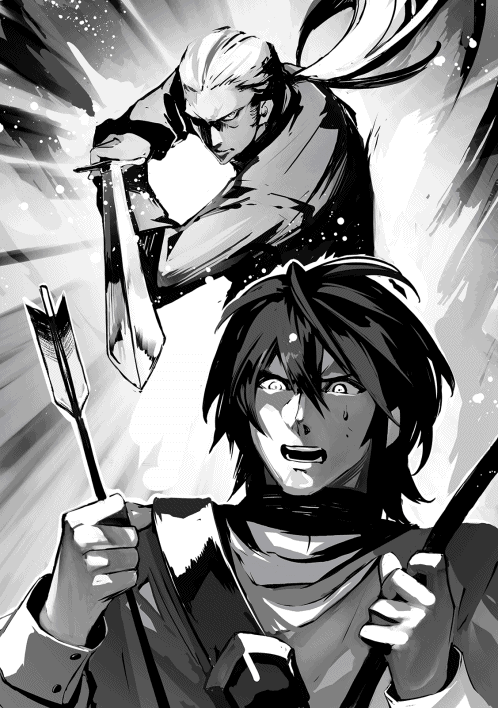
「衣服の乱れはなかったようですが？」
衣服の乱れ？
こいつ、何を言っているんだ？
「なんで特訓で衣服が乱れるの？」
「襲いかかられたのでしょう？」
「ば、ばかっ！ な、何の特訓だと思っている！」
「何の特訓か、まずおっしゃってくださいませんと、分かりようがありません。取りあえず襲いかかられた、という言葉からの類推をしたまでです」
「矢切りの特訓だよ！」
「矢切り？」
「ものすごい殺気で。俺、こ、怖かった。ほんと、まじ、殺されるって思った。人生が走馬灯のように流れていったぜ。それで思わず矢を放ったんだ」
「すると矢が放てるようになったのですね？」
「え？」
「たった一度の特訓で、成果がすぐ現れるとは。おめでとうございます」
めでたいのか？
まあ、矢が射てるなら、除隊とか悩む必要はないよな。
俺は次の日から人に向かって矢が放てるようになり、晴れて矢切りの射手となった。
「もう一回やっておくか？ 念のために」
「いいえ。御覧の通り、もう大丈夫です。その節は大変お世話になりました」
そうタケオ小隊長に言いきった以上、やるしかなかったという事もあるけどさ。
「あのう、俺の特訓を頼んだのは誰なんでしょうか？」
「誰だっていいだろ。何だ、礼でも言いたいのか？ まさか、文句を言いたいって訳じゃないだろうな？」
ぎろっと睨まれ、それ以上追及する事はできなかった。
ともかく矢切りの射手になれた事は有り難い。だけど気になった。
一体誰がこんな無茶苦茶怖い特訓を頼んだの？
若の従者が気を失った若をおぶって道場から出て行った後も、しばらく静かな興奮がさめやらずにいた。
そして思う。六年間一緒に稽古していても師範は未だに底が知れない。自分だってそこそこ強いと思っていたが、そんな自惚れはこの人に出会った事で消え去った。
こう見えても私とて北軍に入隊してすぐ次の年、軍対の新人戦に北軍代表として選ばれ、優勝したのだ。偶には北軍が優勝を勝ち取る事もあったとはいえ、実に十年ぶりの快挙で、将来を嘱望される若手剣士として私の名前は知られていた。
三年後には百剣にも入れた。百番目の剣士としてぶら下がるゲン・ウェイドの名札を見て、どんなに誇らしかったか。稽古はきびしいが、いつか軍対抗戦の出場選手になりたいという目標があったからがんばれた。
そして師範が入隊する。
私の「強さ」の概念が書き換えられた。いや、私だけではない。口には出さずとも、百剣全員が驚嘆の目でこの稀代の剣士を見ていた。
私より四つも年下だとはとても信じられない。入隊したその年に百剣入りを果たしたのは、後にも先にもこの人だけだ。それからたったの一年で百剣の頂点に登りつめた。私がまだ八十番台に届くか届かぬかの辺りをふらふらしている時に。
悔しいより、ここまで圧倒的な強さを見せつけられ憧れた。
人に畏怖を与え、弾く。北の猛虎は孤高。
本人が意図するしないに拘らず、周囲は師範をそういう人として受け止めていた。
剣士として孤高であるのは欠点ではない。だが誰もが遠巻きにして憧れると同時に、その底にある闇から目を反らした。師範は私達凡人とは違うのだから、と。
けれど師範が放つ殺気には、紛れもない怒りと憎しみがあった。誰、と特定しての事ではない。練習試合であっても本気で相手を殺してやりたいと思っている事が窺えた。まるで人間という人間、全てを憎んでいるかのように。
試合だけじゃない。普段の生活でも師範が誰かに気を許している所など一度も見た事がなかった。
だが若が入隊して以来、師範は変わった。
どこがどう変わったのか、口で言うのは難しい。強いて言えば、今まで抜き身の剣のようだったが、それが鞘に納まったと言えばいいのか？ 辺りを恐れさせ、威圧していた殺気が影を潜めた。
稽古に手を抜くとか、そういう事じゃない。稽古はいつも通りの厳しさだが、そこに育てる、導くという指導が入るようになった。
あの時、若が矢を射てずに固まってしまったのを師範も見ていた。それは若が乗り越えねばならない壁だ。今までの師範なら、そんなものは自分で勝手に乗り越えろ、乗り越えられないなら俺の目の前から消えろ、と突き放していたと思う。
一体これはどういう変化なのだろう？ 私に対する師範の態度に変化があった訳ではないのだから、どうでもよいといえばどうでもよい事だが。そんな事を考えていると、ポクソン中隊長が話しかけてきた。
「よお、ウェイド。久しぶりに見たな、あの殺気」
「そうですね」
「さすがは若だ。よくも矢を放つ事ができたな」
そう言われて今更ながら気付いたが、道場にいた全員を恐怖のどん底に落とした殺気だ。普通なら、射手でなくても全身が固まって、腕なんて動かせないだろう。それをあのすばやさで。
「オークに襲われた時の事、思い出したんじゃないでしょうか」
「ははっ。かもな。で、どうだ。おまえのツラ。なんとかなりそうか？」
はい、と言えたらどんなにいいだろう。だがポクソン中隊長に嘘をついたって仕方がない。
「あれを見せられた後では、今年中に何とかなるとは、とても申し上げられません」
私の弱気を責めるでもなく、ポクソン中隊長がおっしゃった。
「なあに、猛虎と同じである必要はない。にこにこ笑って、ばしばしなぎ倒すっていうのも、見方によっては、その方が怖いからな」
「なんですか、それ。私はにこにこ笑ってなんかおりません」
「なら笑ってみろ」
「え？」
「真似をしようと思うな。あれはふたりといない。お前はお前のやり方で先に進めば良いんだ。若を見ろ。極寒の中、ただひたぶるに矢を射る。同じではない。だが通じるものがある」
私は無言で頷き、稽古に戻った。
まず己との戦いに勝つために。
「まあ、来年はグレッテがいるからな」
ボンエシェ師範代がえびす顔で、近衛軍の勝利は確実だ、とおっしゃった。
大丈夫なものか、と腹の中では思ったが、口には出さない。この人は一応私の上官だ。
第一、それをここで言った所でどうしようがある。大丈夫ではないと心配すれば、剣士の腕前があがるとでもいうのか？
勝負が終わった後でしか剣士の力量を見定められない人に、何を言った所で無駄というものだ。
そもそもこの人が師範代なのは父が師範で、その手伝いをしているからに過ぎない。軍対の出場選手に稽古を付けている訳でもないのだ。近衛の百剣にさえ入れない腕前では稽古が付けられるはずもないが、儀礼を教える事はできるからな。
近衛軍の軍対出場選手の実際の指導をしているのは私だ。指導を始めてから、かれこれ十年になる。
長年多くの剣士と剣を交えてきたから言える事だが、私が現役だった頃を振り返っても、最近の近衛剣士の質が落ちているとは思わない。しかし昔は近衛と北軍の間には歴然たる力の差があった。それでどうしても近年の拮抗は、近衛剣士の質が低下している所為であるかのように見えるのだ。
まあ、昔と言っても、ここ数年の話なのだから、昔という程の昔ではないが。
いずれにしても、なくなった差を取り戻すのは容易な事ではない。この拮抗の原因が未だに北軍に健在なのだから。
北の猛虎。
タケオが大将として出場した三年間、いやそれ以前から、北軍に大した剣士はいなかった。北軍の剣士は力強いとは言っても、それは儀礼を充分に習得していない故に荒々しさが目立っているに過ぎない。実戦では相手を怖れさせる効果が期待出来るだろうが、試合となるとそんなものでは勝てない。
その証拠に、例年、北軍大将が勝つのは、近衛中堅がせいぜいだった。試合開始前にどちらが勝つか分からないほど両者の力量が拮抗していた事など、私が知っている限り一度もない。だからタケオさえ閉め出せば近衛に勝利が戻ると誰もが思ったのだ。
次の年、タケオ抜きの北軍に近衛は勝った事は勝った。だが、私には北軍剣士の力が全体的に底上げされている事が感じ取れた。
その次の年も近衛が勝ちはした。しかし明らかに辛勝で、歴然たる差など最早どこにもない。私以外にも北軍剣士が力を付けている事に気付いた者が少なからずいた。
去年は本当に冷や汗をかいた。引き分けに持ち込んだのは僥倖とさえ言える。ピテルコが弱かった訳ではない。北軍が更に強くなっていたのだ。
剣は歴史の古い武芸なだけに礼儀を重視する。それでなくとも近衛は両陛下、皇王族及び皇国官僚や国外の王侯族の警護を受け持つのだから、近衛において礼儀の習得は必須事項だ。
それはいいのだが、儀礼重視はともすると勝敗よりも美麗を優先したものとなる。特に新兵では古来の慣例がどうのこうのと言われたら、自分の先生の教え方に口を挟めない。ただ従う、という習い方になりがちだ。
初心者の頃はそれでもいいが、上級者ともなればそれでは先に進めない。自分で考え、工夫するのでなければ。
考えてみれば、今まで近衛剣士が持ち続けていた優位は、剣士全員が小さな頃から剣を学んでいるという事から来ていたのだ。近衛剣士は百剣でなくても貴族の子弟が多くを占め、親がそれなりの教育を施し、剣の稽古にも通わせてから入隊させている。その中から選抜されれば若くても精鋭揃いとなるのは当然だ。
その点、北軍は平民ばかり。子供の頃から鍛錬をしていた者は少なかろう。少ない競争相手の中から選抜された者が強くなくても驚くべき事ではないし、それが今まで近衛の連続優勝という結果に繋がっていたと思われる。
それにしても猛虎が教えているというだけで、これほど結果に違いが現れるとは。
いや、名剣士が教えただけで結果が出るものなら、誰も苦労はしない。
タケオの剣は実に有効に嫌な所を突いてくる。美しさや儀礼、一切の装飾を振り払った、勝つための剣とでも言おうか。あいつに毎日稽古を付けてもらえば学ぶ事が多いのは当たり前だが、勝負のコツ、こちらの弱点のどこを突けば有効かがうまく伝わっているだけではない。一番嫌なのはタケオに教えられた奴らが自分なりの流儀を身につけてくる、という事だ。
デュエインは全く食えない奴だった。誰もが短期戦、一発勝負の大技を仕掛けてくると予想した大将戦で、粘りに粘る戦法で来た。試合は時間切れで引き分けとなったが、後五分、いや、三分続いていたら、ピテルコは息切れして負けていただろう。
タケオのような一瞬で相手を仕留める流儀の師範が、持久戦をやれと言うはずはない。デュエインは自分で最大の勝機がどこにあるかを見極め、そこを突いたのだ。
来年はウェイドで間違いない。幸いあいつは剣筋が読みやすいから、グレッテなら捩じ伏せる事ができるはず。
「ミトカ小隊長。御指導の程、お願い申し上げます」
グレッテの呼びかけに私は頷き、相手をするために剣を取った。グレッテは速さも強さも私と五分に渡り合える程の剣士だ。勝てるはず、とはいえ、勝負に絶対はない。
そしてタケオは今頃、一体何を教えているのだろう？
それを思うと、もしかしたら、という嫌な予感が拭えないのだ。
近衛が今までのように儀礼中心の稽古を続けていては、遠からず北軍に負ける。分かってはいるが、ではどこをどう変えろというのか。
北の猛虎を大将戦から閉め出した後で、まさかこんな拮抗に悩まされるとは。苦い気持ちで私は剣を振り下ろした。
なんだ。
なんなんだ、あれは一体。
嫌みか？
そうだよな。嫌みに決まってるよな？
「若、どうなさいました。何をお怒りでいらっしゃる？」
「トビ。お前はあれを見て腹が立たないのか？」
俺は窓から外を指さした。そこには半袖の軍服を着た兵士が数人、歩いている。
繰り返す。半袖だ。
日差しが暖かい？
そりゃ暖かいだろうさ。今は三月の終わり。二月の一瞬で死ぬかと思うような、ばりばりの寒波に比べたら、そこそこ日も長くなった。吐いた息の水分が氷となって顔に張り付くという時期は過ぎている。
なにしろ朝、小鳥のさえずりが聞こえるんだ。寒波の厳しい頃、恐ろしいほどの沈黙に包まれていた朝を思えば、少なくとも春が間近いという事を認めるのにやぶさかではない。
だが春が間近い、というのは春が来た、という意味ではない。
絶対に、ない。
湖を見ろ。まだぶ厚い氷がびっちりと張っていて、その上を犬ぞりが走っているんだぞ。あの犬ぞりは十頭引きだから、荷物は軽く五百キロを越えるはずだ。
地面だって雪に覆われている。汲んできた水だって、お湯を足さなきゃとてもじゃないが手を突っ込めない。四月になっても雪が積もる程降る土地なんだから。
それなのに、日差しがちょっと暖かいというだけで三月に半袖を着る奴がどこにいる！
あちらにいる。
そちらにいる。
そこらじゅうにいる。
「ですから、それのどこが問題なのでしょう？」
トビは不思議そうな顔をして俺を見る。思わず舌打ちしたくなった。
こいつにはどうして見栄とか体裁とかが分からないんだ？
それを男から取ったら、何も残らないだろ？
「お前には、あいつらがいかに寒さに強いかを誇示しているか、分からんのか？」
「そうでしょうか？」
「そうじゃなければ、この股引の手放せない時期に半袖を着て外を歩くか？」
「寒さに強い事を誇示するため、半袖を着て歩きたいとおっしゃる？」
「何を馬鹿な事言っている！ そんな事したら風邪を引くだろう？」
「あの方達は風邪を引いてはいないようですが」
「だーかーらー。あいつらは半袖なんか着て、俺達は北の熊、お前達とは出来が違うと言ってる訳だ。そんな事も分からんのか！」
つい、お前は頭良いんだからそれぐらい分かるだろ、という口調になってしまった。あいつらが薄着なのはトビのせいじゃない。トビを責めたって仕方ないと分かっちゃいるんだけど。
「つまり半袖は着たいが、寒くて着れないから着ている奴らを見るのが面白くない、とおっしゃりたい」
「う。いや、そうは言ってないだろ」
トビは鋭い指摘をする奴だ、という事を忘れていた。
「では何をおっしゃりたいのでしょう？ 半袖を用意しろとおっしゃるのでしたら、すぐにお出しします。要点を明確にして戴きませんと、私には分かりかねるのですが」
口でトビに敵う訳がない。
もう、何もかもが面白くなくて、ふん、とそれ以上何も言わず外に出た。
俺が今着ている長袖シャツの下は、もこもこシャツ。冬用下着の必需品だ。もちろん、長パンツの下には股引二枚を重ね着している。俺は見栄っ張りじゃないからな。寒いのを寒いと言って何が悪い。
そりゃ俺だって薄着して格好良く決められるものなら決めたいさ。厚着してたら、いかにも南から来ましたと言ってるみたいだろ。だけど背に腹は代えられない。
そしたら、トビが次の日、薄手の股引、長袖の下着シャツを買ってきてくれた。体にぴったりするので、もこもこ下着みたいにいかにも重ね着してますという感じがない。
この上なら半袖シャツを着てもおかしくないな。うん、ちょっとすらっとした感じ？
トビ、お前はやっぱり従者の鑑だ。
「皇国の衰退が始まった」
そう爺様が予言したのは、三十年も前の話だ。
爺様のような、先祖帰りと言われる強い星読みは百年に一度現れるか現れないか、と言われてる。爺様が年を取って寝たきりになっても爺様の跡を継ぐ者はまだ生まれていないから、比べようもないんだけど。
昔、俺の一族は何年も何十年も先の未来を見通せるほど予知能力に長けていたらしい。だけど今では来月や来季、せいぜいで来年の天候が予測できる能力を持つ者しかいない。それはともかく、今まで爺様の予言が外れた事はないんだ。
その予言から六年後、次の予言が齎された。
「次代様の星が現れた」
爺様でさえ、それからどうなるのか言えなかった。だけど次代様がお生まれになったのならこの国が滅びるのは時間の問題だ。次代様が新しい世を作り出す前に必ず訪れる破壊と殲滅から逃れるため、村長は他国への移住を計画し始めた。娘を嫁にやったり、息子を出稼ぎに出したり。
更に五年の月日が経ち、ある日夜空を見上げた爺様が言った。
「これは面白い」
爺様の予言は全て記録されている。でも今まで「面白い」という表現をした事は一度もない。そもそもそれはどういう意味だ？
「皇国の命運は変わる。移転はせずともよい。北軍で、星達は出会うだろう」
その予言を最後に、翌年爺様は死んだ。
俺はバスラー家の長男として生まれた。爺様は俺をテムと名付け、この子は必ず北軍に入隊させるように、と言ったのだそうだ。
バスラー家からは何人もの強い星読みが生まれているけど、十八を過ぎても俺が何かを予知した事はない。星読みの能力があると普通は子供の頃からその兆候が現れる。たとえば来月の天気が正確に分かるというように。成長するにつれ、その予知できる時間が段々先へと伸びて行くのだ。
だけど俺はこの年になっても明日の天気さえ予想できない。星読みでない事は確かなのに、爺様の予言があったため、俺は村で一者と呼ばれている。それは村で一番強い星読みの能力を持つ者を指す呼び名だ。
しかしこれって「予言」と言えるのか？
テムは北軍に入隊するであろう、ならかろうじて予言かも知れないけど、北軍に入隊させるようにって。
仮に予言だとして、じゃあ俺は北軍に入隊して何をするべきなんだ？
爺様はそこまで予言してくれなかった。爺様の予言はひとつも外れていないと言うが、正直な所、俺に関する予言だけは、ただひとつの外れ予言なんじゃないかと疑っていた。
確かめる術はないまま、いたずらに月日は流れ、弱冠十九歳の北軍剣士が近衛の大将を破ったという軍対抗戦の結果が大変な話題となり、その噂が間もなく村に届いた。
次代様は十九歳になっているはずだ。当然村の誰もが、この御方こそ爺様の予言した次代様に違いないと思った。
だからと言って何をどうしたらいいんだか、誰にも答えられなかったが、予定されていた通り、俺は十八になると同時に北軍に入隊した。
そして爺様の言う所の「面白い奴」が十八になった年、六頭殺しの若が入隊する。
猛虎が若を助けるというふたりの出会いは、俺にとって起こるべくして起きた必然に見える。彼らは自分達がいずれ皇国の命運を動かす事をまだ知らない。いや、命運はおそらく本人達の与り知らぬ所でとっくに動いているのだろう。動いた所で、傍目に明らかな訳でもないんだ。俺は本人達だけでなく、誰にもこれを告げるつもりはない。まあ、言った所で、信じられないだろうしな。
俺はただの傍観者だ。
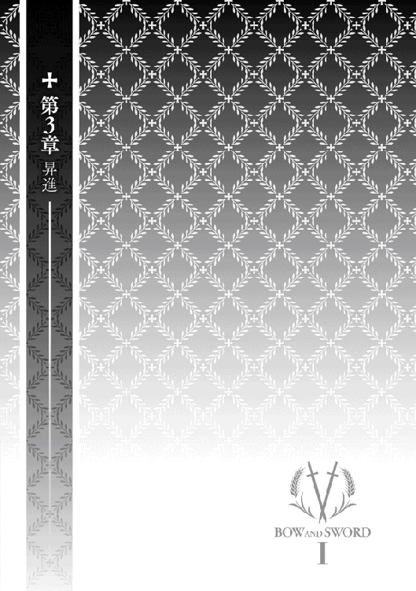
五月の初旬、参加者五十名で第一回六頭杯が開催された。
俺は将軍閣下から、競技が始まる前に模範演技を披露するようにと言われていた。何をやってもいいと言われたので、流鏑馬をやる事にした。
あれってやっぱり華やかだし。全部当たるのは珍しいとか聞くし。その珍しい事がやれる俺って感じで、模範演技に相応しいと思った訳だ。
当日はとても良いお天気。輝くばかりの緑が眩しい。北の最も美しい季節だ。何だか皆がうきうきしている感じ。会場を見ると、五十人しか出場しない競技会だというのに結構人が集まってる。
第一駐屯地は北軍駐屯地としては最大で、一万五千人の兵士がいるからな。それにこんなに良いお天気なんだ。外で競技を見ながらご飯を食べようという兵士も多いだろう。
競技は弓部隊の部と一般兵士の部に分けた。どちらの部の優勝者にも将軍から表彰状と記念の優勝杯が贈られる事になっている。表彰状は将軍が渡し、優勝杯は俺が渡す事になっているんだって。ちょっと照れるかも。
おしっ、と気合いを入れ、俺は馬を走らせた。
どどどどっ、ばし、ばし、ばし。
よし、十発命中！
ぶわっと大きな歓声が上がった。
おおっ。嬉しい!!
よしっ、アンコールな。
俺はくるっと馬の向きを変え、どどどどっ、ばし、ばし、ばしをもう一度やった。
やったぜ、十発命中！
で、俺は歓声が上がるのを待った。でも上がらない。
辺りを見回すと、なんかみんな呆然とした顔をしている。
まずい。俺、ひょっとしてやりすぎた？
ＫＹ？
流鏑馬って右方向からやるものと決まっているとか？
えーーっとお。
どうして皆しーんとしているのか、理由は分からないが、すごくいたたまれなくなって、俺はそのままこそこそ退場した。
会場出口で待っていたトビが、お見事でございますと褒めてくれたけど、俺はちっとも嬉しくなかった。身内に褒められても有り難みがないって言うか。つい面白くなくて、きつい口調で返事をした。
「慰めてくれんでも良いから」
「慰める？ それはどういう意味でございましょう？ 慰めてなどおりません」
「でも、俺、何かまずい事やったんだろ？ 見ている人から全然歓声が上がらなかったじゃないか。最初の十矢でやめときゃよかった」
トビはちょっと首を傾げて言う。
「それは若が両手利きである事を知ってる人など、いなかったからではございませんか？ 仮に両手利きの者でも、両方向射ちが自在にできるかといえば、それはまた別でしょうし。それだけに流鏑馬での折り返しは大変珍しいと申せます。しかも全的命中。驚きのあまり、拍手のタイミングを外しただけなのでは？」
ちぇっ。まあ、トビは弓の事をよく知らないから無理もないけど。
「弓の方向って利き腕っていうより、利き目によって右か左のどっちかにした方が便利ってだけ。別に両手利きでなくたって、左右どちらも射つぐらい、誰にだってできるだろ。やらないだけで」
「やらないのではなく、やれないのだと思いますが」
「あー、もういいから」
主贔屓のトビに持ち上げられたって空しいだけだ。俺は部屋に戻ってふてくされていた。でも間もなく、カルア将軍補佐がわざわざ俺を呼びにきて下さった。
「若、将軍が直々に感状を渡したいとおっしゃっている。すぐ戻るように」
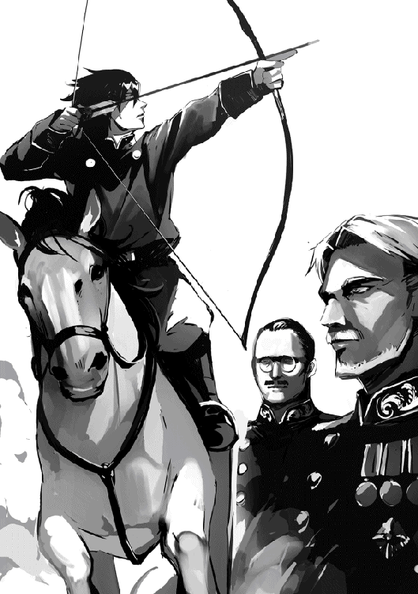
すごい！
嬉しい！
俺は一気に気分を向上させ、競技会場に戻った。すると俺が現れた途端、会場が大歓声に包まれた。将軍から感状を頂戴し、弓部隊のみんながいる所に戻ると、すげー、と口々に褒められる。いやーそれほどでも、と照れながら答えた。
やっぱり褒められるならトビ以外の人から褒められたいよな。いや、トビ以外の人から「も」だな。
トビ、決してお前をないがしろにしている訳じゃないんだからな、と心の中で、聞かれてもいない言い訳をつぶやいておいた。
「あれは、使えますね」
私は隣に座っていらっしゃるデュガン侯爵の耳に、そっと囁いた。
デュガン侯爵が北軍を訪問なさったその日が、第一回六頭杯の開催日だったのは単なる偶然だ。訪問の目的は別にあった。だからと言って、せっかくの幸運を無駄にしてよいものではない。
私の言葉に、どういう意味だと御尋ねになる代わり、侯爵が右の眉を少し上げた。
「皇太子殿下の身代わりは六頭殺しの若になってもらいましょう。一石二鳥、いや三鳥、うまくいけば四鳥を狙えるかと存じます」
私は更に声を潜め、デュガン侯爵に理由を説明をした。
ふむ、ふむ、と二、三度頷かれた後、侯爵は鷹揚にお席を立たれ、まるでこの世に急ぐ事など何もないと言いたげに、北軍将軍のいる桟敷席へゆっくりと歩みを進められた。
野心家で知られるデュガン侯爵は常に新しい機会を窺っていらっしゃる。私はその懐刀として雇われ、戦略的な助言をして差し上げている。有能な執事はいるが、奉公人とは所詮言われた事を遂行するだけの者だ。私が同じ事しか出来ないのでは、到底お役目を果たしているとは言えない。
私の職務は、こちらから事を起こす事にある。そもそも事が起こってから対処する、では遅きに失する。第一、戦争も内乱もないこの国で、座って待っているだけでどうやって他を凌駕する立場に立てるというのだ？
今回、隣国フェラレーゼの王女に拝謁する外交使節に、皇太子殿下がお忍びで随行される事になった。このような絶好の機会は、そうそう何度もある訳ではない。利用するのは当然の事だ。
因みに、デュガン侯爵の北軍訪問がお忍びなのは、皇太子殿下の密命を受けての事だ。この度、皇太子殿下の御婚儀の話が本決まりになったが、挙式の前に是非一目お相手であるフェラレーゼ王女様御本人に直接お会いしたい、と皇太子殿下が御希望になった。正式の御訪問ではないのだから、皇太子殿下が隣国に行っている事を隠す必要がある。
デュガン侯爵は皇太子殿下の御内意を受け、北軍に皇太子殿下の身代わりになる兵士を探しにいらっしゃった。もちろん、皇太子殿下には正規の影武者が何人もいるが、今回の使節団にはその影武者も随行するためだ。
臨時の影武者には北と東の境にあるフレイシュハッカ離宮に一週間ほど滞在してもらうだけで、その間、誰とも会わないのだから難しい事は何もない。離宮には管理の者数人しか残していないし、口の堅い忠義に疑いのない者ばかりだ。今回の身代わりに限っては、顔が似ている必要さえない。皇太子殿下らしき人がそこにいる、というだけで充分なのだ。
ただ、いくら簡単な一週間程度の身代わりとはいえ、常にお傍近くにいる近衛兵は使えない。誰を選ぼうとも、近衛兵同士は皇太子殿下のお顔だけでなく、互いの顔をよく知っている。何が原因で身元が割れないものでもない。
殿下のお顔をよく知る東軍兵士もだめだ。南や西から誰かを連れてくるには時間がかかる。という理由で北軍に来たのだが、そう、ここには六頭殺しの若がいた。
幸い、あの若者は、身代わりに選ばれても不思議はない程度に体格も髪の色も肌の色も殿下に似ている。皇太子殿下らしい服装を身につければ合格だ。私の計画では、身代わりが離宮に辿り着く前に殺すつもりなのだから、細かい違いなどどうでも良い。
殿下が暗殺されたとなれば大変な騒ぎとなる。殿下が隣国よりお帰りになって、初めて殺されたのは殿下の身代わりで、御本人ではない事が知れるまでは。
そこで御本人不在の事情が明らかになる訳だ。隣国の王女と「密会」していた、と。
まあ、これぐらいの事で皇王位継承権剥奪とはなるまい。それでも上級貴族の中で殿下に対する心証が大幅に悪くなる事は確かだ。こういう小さな事が積み重なっていけば良い。時間はまだある。
あまりに見事な流鏑馬に呆然となり、一時静まり返った会場から若が退場した後で、若を讃える歓声がどっと湧き上がった。人々が口々に興奮して語り始める。近くにいた兵士達の会話が聞こえてきた。
「見たか？ あれ」
「いやはや、すげー」
「もう、びっくりしたぜ」
「なんだお前も知らなかったのか？」
「全然」
「お前は？」
「いや、俺も知らん。若が流鏑馬やってるのはしょっちゅう見ていたけど、左やってるのは今日初めて見た」
「練習しなくてもできるって事か？」
「まさか。いくら若でも、それじゃ神技だろ」
「流鏑馬ではしてるの見た事ないけど、そういえば狩りではどっちの方向でも射っていたな」
「「へえ」」
「自然にやってるから、両手利きとは今まで思いつかなかった」
「皇太子殿下暗殺未遂事件」に身代わりとなって殺される者は背格好さえ似ていれば誰でもよかった。だが、それが六頭殺しの若であれば更に良い。名前を言うだけで一層世間の耳目を集める事ができる。
若くて見目良く、加えてあの才能だ。人々が向ける視線の暖かさを見れば、あの若者がどれだけ深く愛されているかが伝わってくる。
北軍や故郷の西だけではない。今や皇都でも六頭殺しの若の人気はうなぎ上りだ。彼の出自に大して関係のない東や南でさえ、今や彼のふたつ名を知らぬ者はいないという。
その国民の愛する英雄が「間違って」殺されたらどうなるであろうな？
さて、民の怒りはどこへ行く？
暗殺者？ 当然だ。
だが暗殺者は、仮に捕まえた所で雇われた傭兵に過ぎない。誰が雇ったかなど、簡単に分かりはしない。唯一明らかなのは、六頭殺しの若が皇太子殿下の身代わりになって殺された、という事実だ。
身代わりとなった理由を噂で流すのは容易い。あっという間に皇国中に知れ渡るだろう。皇太子殿下がお忍びで他国の姫に会いに行き、その留守を守っていた若が殺された、と。
六頭殺しが皇太子殿下の身代わりとなって殺されたと聞いて、皇太子殿下が御無事で良かったと思うか？
陛下には皇王子殿下が八人いる。皇太子の替えなどいくらでもいるが、六頭殺しはただひとりしかいないのに、と思うか？
民の感情は明確に予測できなくとも、皇太子殿下の女通いのせいで六頭殺しが殺された事に憤らぬ者はいないはずだ。
民はそうそう怒りを形にできまい。
しかし六頭殺しを贔屓にする皇国将軍らはどう思うであろうな？
ヘルセス公爵を始めとする、六頭殺しファンの上級貴族達は？
これは意外に早く皇太子殿下のすげ替えができそうだ。自分で作った筋書きながら、思わず笑いが漏れる。
お、傭兵に払う前金を手駒に渡す時間だ。詳しい日時と手順を知らせておかねばならない。宿屋は駐屯地から少し離れた所にあるから、もう向かった方がいいだろう。
私は傍らの侍従に馬の用意を命じた。
将軍から直々に、皇太子殿下の身代わりとして一週間、北と東の境にある離宮で過ごすよう命令された。
特殊任務？
そんなのに選ばれるだなんて、なんかすごいんじゃね？
俺って結構優秀？
んな訳ないよな。
「あのう、確かに俺は皇太子殿下と背格好とか、髪の色や肌の色も割と似ていますが、顔は全然似ていません。身代わりって、ちょっと無理があるんじゃないでしょうか？」
「それに関しては心配無用と予め連絡が来ている。皇太子殿下は公式には離宮にいらっしゃるという事になっている。それで誰もそれらしき人がいないのはまずい、という意味での身代わりで、面会の予定がある訳ではない。誰にも会わないのだから、瓜二つである必要はないのだ。お付きや離宮の留守を守る者達はもちろん承知しているから、そちらの方も大丈夫だ」
そう説明されたけど、どうして俺に白羽の矢が立ったのか、不思議だった。皇太子殿下なら、専属の影武者ぐらいいるだろ？ それもひとりやふたりじゃないはずだ。
もし背格好が似ているだけでいいというなら、俺と似た背格好の奴なんて他にいくらでもいるじゃないか。北には俺みたいな色黒は珍しいけどさ。
貴族だから、立ち振る舞いがいいと思われたのかな？
それだったら困るなー。
俺じゃ貴族と言っても名ばかりで、ちゃんとした儀礼とか全然勉強してないんだ。でもそんな事、将軍はとっくに御存知だし。
今年に入ってから将軍とは六頭杯関係で何度も会議している。食事も御一緒させて戴いているから、もう全部ばればれって言うか。
まあ、宮廷内には人には言えない色々な事情があるんだろう。よく分かんないけど、任務は任務だ。兵士はやれと言われた事をやるまで。理由や事情なんて知る必要はない。
何と言っても、たった一週間とはいえ、贅沢な離宮で暮らせるんだ。任務としては悪くないよな。俺はどちらかと言えば、うきうき休暇気分で東へと旅立った。
しかも華々しい事に、この任務にはタケオ小隊長が俺の護衛として付く事になった。皇太子殿下御本人を警護するならともかく、俺のような下っ端に豪華極まりないお心遣いだ。
たぶん、タケオ小隊長も休暇なんてしばらく取ってないし、離宮にただで泊まれるなんて平民にはまたとない機会だから、将軍としてはちょっとした御褒美になると考えたのだろう。
タケオ小隊長が北軍百剣の剣の指導を始めて何年も経つ。彼が師範になって以来、毎年軍対抗戦で近衛を苦しめるほど北軍は強くなった。本来なら昇進して当然な貢献だが、まだ若いという事と、平民である事が災いして昇進が実現していない。せめてこれぐらい、という事のようだ。
俺達の他にはタマラ小隊長とトビが付いて来ている。爽やかな五月の季節を楽しみながら、気心の知れた者同士、気楽な旅だ。
駐屯地から出発して二日目。あと少しで離宮に着くという所まで来たので、俺は皇太子殿下用の服を着た。離宮内と離宮近くに着いたらこの服を着るように、と手渡されていた。
さすがは皇太子殿下のお召し物。一目見ただけで高級品と分かる。ごてごて装飾が付いている訳じゃないけど、とても上等な布を使っていて、よい手触りだ。仕立てが良いからか、すごく動きやすい。そして高貴を示す紫がふんだんに使われている。これを着てる俺って、遠目から見たら結構高貴かも、とにまにましていた。馬子にも衣装？
急ぐ旅じゃないからゆっくり辺りの景色を楽しんでいたんだけど、もうすぐ離宮が見えるという所で、変な動きが眼についた。
「あのう、師範」
俺は剣を習っている訳じゃないが、矢切りではお世話になったし、毎週のように道場に行っているので、俺も他の剣士達のようにタケオ小隊長の事を師範と呼ぶようになっていた。
「なんだ」
「傭兵が近づいてくるんだけど。しかも抜き身です」
「何人いる？」
「後ろと左右十人ずつ、合計三十人。ずっと前にいる二人も仲間っぽい」
「お前、矢は何本持ってきた？」
「二十四本です」
「一番近いのは、どっちの方角だ？」
「後ろ、かな」
「次は？」
「右だと思います」
「いいか、まず一気に後ろに向かって駆けるぞ。奴らが射程距離に入り次第、倒せ。だが一方向の全員を倒すのではなく、二人残すんだ。そいつらは俺が仕留める。タマラ小隊長は若とトビを守る事だけを考えろ。トビ、もし落ちた矢が拾えるようなら拾え。無理はしなくていい。若、仕留めた奴を数えろ。俺が仕留めた奴も含めてだ」
それから師範は全員に念を押した。
「若が三十二と数えるまで、絶対気を抜くな」
俺達は一斉に後ろに向かって駆け出した。そして傭兵が射程距離に入ると同時に俺は射ち始めた。
相手がどの程度の腕なのか分からないが、傭兵になるぐらいなら相当な腕と見ていい。二人や三人なら楽に倒せるかも知れない。だけどいくら師範でも十人に纏めてかかられたらやばい。タマラ小隊長だって頼りになるけど、俺とトビの剣じゃ殺してくださいと言ってるようなものだ。何の足しにもならない。
でも俺には弓がある。
バシュ
「いち」
バシュ
「に」
バシュ
「さん」
ぐうっと吐き気がこみ上げるが、ここで吐いてる暇はない。
数を、数を数えなきゃ。
他には何も考えるな。俺はただ数えればいいんだ。
八、と叫んだと同時に、師範が後ろ十人の内の残り二人を仕留めたのが見えた。
「じゅう！」
俺は馬を右方向に向け、駆け寄って来た傭兵に矢を射かけ始めた。数がどんどん数えられていく。
「じゅうはち！」
そこで師範が三人目を仕留めたのが見えた。
「じゅうく！」
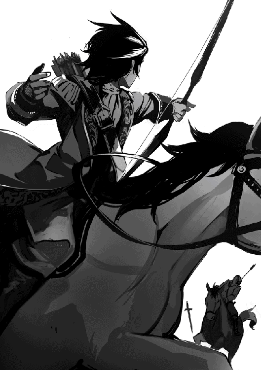
師範が四人目と切り結び始めた所で、トビが仕留め損ねて落ちた矢と、当たってもまだ使える矢を素早い動きで拾ってきて手渡してくれた。
左方向から来た奴が俺に襲いかかってきた。それをタマラ小隊長が必死になって食い止め、俺はただ夢中で数を叫び続けた。
「二十九！」
前方にいた最後の二人が俺達に襲いかかる直前に、師範が三十番目の奴を剣で馬から叩き落とした。そいつが動く様子はない。
「三十！」
師範が三十一番目の奴に切って掛かり、あっさり片が付いた。タマラ小隊長が必死に防戦していた三十二番目に立ち向かう。
もう大丈夫か？
大丈夫だよな？
俺達全員から汗が滝のように流れ、そっちこっちに傷を負っているけど、どれも深手のようには見えない。かすり傷だ。
「三十二」
そう口にした事だけは覚えている。だけどちゃんとみんなに聞こえたかどうか分からない。ゆっくりと俺の体が馬からずり落ちて行った。
「若！」
遠くからトビの叫びが聞こえたような気がする。
目が覚めたらそこには見慣れたトビの顔があって、ほっとした。
辺りを見回すと、俺は上品な家具の置いてある、一目で高貴な佇まいと分かる部屋で寝ていた。おそらくここは離宮の一室なんだろう。
「若、御気分は如何でしょうか？」
またトビに心配かけちゃったな。
お前がそうやって俺の目を覗き込む時は、えらく正直に自分の気持ちをもろに見せているって、分かってないだろ。
「あ、うん。大丈夫。ね、タマラ小隊長を呼んできてくれる？」
そう言って、俺はのろのろ起き上がった。日差しがまだ夕方で、夜にはなっていない事を告げている。コオ兄はたぶん寝ていないだろう。
俺ってば、あんな所でぶっ倒れちゃって。
誰が運んでくれたんだか分からないけど、迷惑かけちゃった。それも聞いとかなきゃな。でもそれより大切な事を聞いておかないと。
かしこまりました、と言ってトビが部屋を出て行ったが、どうやらコオ兄は隣かどこか、近くの部屋にいたようで、まるで部屋の外で待っていたかのようにすぐ来てくれた。
俺は思わずコオ兄と呼びそうになって、あわててタマラ小隊長、と言い直した。
「若、コオ兄でいいです」
そしてやさしく俺の手をさする。
「さすがは若です。本当によくやりました」
コオ兄がきゅっと優しく手の甲を掴んでくれた時、俺の涙腺は既にだばだば。喉が詰まって、言葉がうまく出てこない。でもこれだけは、どうしても今聞いておかないと安心できないからさ。
いや、トビに同じ事聞いたっていいんだよ？
だけどちょっと、ほら、あいつって主贔屓入っちゃってるから。正直なとこ、教えてくれる人に聞かないと、まずいって思っただけ。
「あ、あの、さ。ひくっ。お、俺、ちゃ、ちゃんと、数、数えられていたかな？ ほら、俺って、おっちょこちょいなとこ あ、ああ、る、か、ら うっく、うっ」
俺は兵士なんだ。
戦うのが仕事なのに、戦ったからって泣いたらおかしいだろ？
分かっちゃいるんだけど、涙は止まってくれない。
勝手に、次から次へと流れてくる。
「ええ。ちゃんと数えられていましたよ。お見事なものでした」
コオ兄は泣きじゃくり始めた俺の背中を優しくさすってくれた。そして囁き続ける。
「もう大丈夫です。若は見事にやりぬきました」
幾度も幾度も。
俺はもう堪らなくなって、わんわん大泣きしだした。
なんだよー。これじゃいくら隠したくたってトビにも師範にも、まるっと聞こえるじゃないかとは思ったけど。
は、恥ずいけど。
でも胸が、とても痛くて。どこも怪我なんてしていないのに。
そういえばコオ兄は昔、俺が転んだ時とか木から落っこちた時、こんな風にとんとん背中をたたいて慰めてくれたっけ。そんな不思議に安らかな思い出がよぎった。
だけどいくら何でも、もう子供じゃないのにさ。
べそべそ泣いたりしたらばかだろ。呆れるよな、普通。
上官なのに、コオ兄はなっさけねー俺を叱りも咎めもしない。
ただ、若はえらい、と囁いてくれた。
しゃんとしなくちゃ、とは思うんだけど。
あ、コウ兄のシャツ、もうびしゃびしゃじゃないか。で、でも、涙止まってくれないし。
俺はそんな風にいつまでもコオ兄の腕の中で泣いたあげく、また眠り込んでしまった。
「若は泣き止まれたでしょうか？」
部屋の外で待っていた私の質問に、コオさんは、いや、今ではタマラ小隊長とお呼びせねばならないが、静かに頷かれた。
「ああ、ぐっすり眠っておられる。朝までお目覚めになるまい」
タマラ小隊長は、軍務から離れた私的な時間になると、今でも若に対してこのように敬語を使われる。だが休暇のように見えてもこれは軍務だ。敬語を使う必要などないのだが。おそらく若を気遣うお気持ちからそのような言葉遣いとなったのだろう。
タマラ小隊長のシャツがびしょ濡れだ。
「私が洗濯いたしましょう」
「頼む」
タマラ小隊長はそうおっしゃってシャツを脱いだ。
濡れたシャツの重さに、思わずため息が零れる。
私のため息に気付いたタマラ小隊長がおっしゃった。
「心配しなくても大丈夫だ。若はああ見えて、芯がとても強くていらっしゃる。明日には、以前のように笑って、は、まあ、その。無理だろうが。時間はかかっても、きっと乗り越えて下さる」
そのお言葉に、私は首を横に振った。
「いえ、これは少々自分の不甲斐なさに情けなく思っただけですから。どうぞお気になさらないでください」
「不甲斐ない？ どこが？」
「このような、若が誰かに頼りたい、縋りたいという時にこそ、必要とされる従者でありたいという心構えではおりますものの、若が呼ばれたのはタマラ小隊長です」
タマラ小隊長は微かに微笑まれた。
「若はお前を充分頼っていると思うぞ。いつもお前の事を目で探していらっしゃるしな。常々お前に支えられているという事は、若も先刻御承知だ。言ってしまえば、これは若の見栄というもの。分かってやれ」
「見栄、でございますか？」
「そうだ。若にとってお前は立派で、自分に過ぎた従者なんだ。いつかお前に相応しい主になろうと密かに努力なさっていらっしゃる。そのお前の前で、大泣きする訳にはいかんだろう？」
意外な言葉に、私は思わずタマラ小隊長のお顔を凝視してしまったが、冗談をおっしゃっているようには見えない。
「若がそんな事をタマラ小隊長におっしゃった事でもあるのでしょうか？」
「言わないさ。あの口下手な若だぞ。お前だけでなく、誰にも一生言わんだろう。だが私には分かる。伊達におしめを替えた訳じゃない。三つ子の魂、てやつだ」
そうおっしゃって、タマラ小隊長は自室へと戻って行かれた。その後ろ姿を拝見しながら、御家族のどなたよりも強い絆で若と結ばれていらっしゃるタマラ小隊長を、羨ましいと思わずにはいられない。
タマラ小隊長が本邸で過ごされた八年間、若はさぞかしやんちゃでかわいらしかった事だろう。十年ぶりの再会だというのに、あの人見知りの若が、まるでそんな年月など存在しなかったかのようにタマラ小隊長の腕の中に飛び込んだ。それだけでもどれ程タマラ小隊長を御信頼なさっていらっしゃるかが分かる。
けれど私が羨ましいなどと言っては、罰が当たるというものだ。一緒の邸に寝起きして十年。私の方こそ大勢に羨まれても仕方のない立場にいるのだから。
しかし従者になる前の私は、若にとって単なる実家の奉公人でしかなかった。共に暮らした年月こそ長いが、顔見知り以外の何者でもない。
いや、それは嘘ではないが、「若にとって」とは誤解を与える言い回しだ。若に対して関心がなかったのは私の方であって、若ではないのだから。
旦那様から、サダには構わぬように、というお言葉はあったとはいえ、それ以前に、主家を継ぐ可能性の全くない三男は私にとって気に止める価値のない存在だったのだ。
才を見込まれて雇われた私は将来伯爵家の執事となる事を嘱望されていた。その御期待に応えるべく、毎日相当量の勉強をしていたから、若とは一番年が近いにも拘らず、一緒に遊んだ事もなければ会話らしい会話を交わした事もなかった。
御長男のサガ様、及び御次男のサジ様は大変英明でいらっしゃり、共に学んだという事もあり、お人柄をよく存知上げている。サガ様が爵位を継がれる事は、私が伯爵家に来た時にはもう明らかだった。つまり私にとって、サガ様だけが生涯お仕え申し上げる主だ。
それでもサガ様に万が一の事があればサジ様が継がれる可能性もある。しかし若は成人なさるまでの何年かを一緒に過ごす親戚に過ぎない。独立なさったら滅多に会う事はなくなる。
何より私の目には、若は毎日遊んでいるぼんくらにしか見えなかった。昔から学芸一般が苦手でいらしたが、特に算数に弱い。
足し引き掛け算こそ何とかできたが、割り算となるといつも間違える。流石に割り算もできるようになってから学校を卒業なさったようだが、分からないなら勉強すれば良いではないか。
なのに宿題でさえ自分で考えずに答えだけを私に聞きに来るのだ。内心呆れてしまったが、まさか主家の御子息を叱りつける訳にも行かない。
成人されたからといって若の御気性が変わった訳でも、こう申し上げてはなんだが、賢くなられたという訳でもない。若は相変わらずでいらっしゃる。
そう、若が八つの時、初めてお会いした時からあの瞳に宿る魂に変わりはない。ただ私がその輝きに気付いていなかっただけで。
そして今は、その輝きに捕われているだけで。
夜も更けた頃、寝酒を引っ掛けにきた私は、居間の窓から外を見ている師範に気付いた。
百剣を目指している私にとって、タケオ小隊長は同僚というより目上の存在だ。いくら私の方が年上で軍での階級は同じとはいえ、今までならとても気軽に声を掛ける事は出来なかった。だが今夜はあんな事があって気が高ぶっているからか、いつものような近寄り難さを感じない。
「一杯如何ですか？」
月見でもしているのかと思い、そう聞いて酒瓶を振ってみせたが、いや、今は良い、と首を横に振って杯を受け取らない。
それなら手酌で飲むまでだ。私はそこにあった椅子に腰掛け、ひとりで飲み始めた。飲まなきゃとても眠れない気分だった。
血が興奮しているという事もあるが、どれほど紙一重だったかを思うと、今ここで酒が喉を潤し流れ落ちていく事が不思議でならない。静かな夜が不気味にさえ思える。
「師範、まさか夜襲を心配しているんですか？」
不安のあまり、そう聞いた。あの様子では、若は朝まで起きられまい。
離宮がある地域は東軍が警備している。しかし来てみれば離宮内は予想以上に手薄で、数人の召使いしかいないのに驚いた。仮に若を起こしたところで、もし今夜次の襲撃があったら、ひとたまりもないだろう。
それなのに師範は、まるで明日の朝も日は昇る、とでも言うかのように落ち着いて言った。
「それはない」
「何だか確信ありげですね」
「まあな」
「どうしてでしょう？」
「あの三十二人の刺客の内、八人は北の傭兵の世界でかなり名が売れている。俺が顔を知っているぐらいだからな。実は、その中の五人と過去に手合わせした事さえある。もちろん同時にじゃない。ひとりずつだ。どれも俺が最終的に勝った事は勝った。かろうじて、というやつでな。実戦をかいくぐり、生き延びてきた奴らはしぶとい。もしあいつら二人が同時にかかってきたら、俺は絶対負けていた。それほどの奴らがひとりも帰ってこないんだ。次を送り込もうとしたって、はい、行きます、と手を上げる奴がすぐ見つかると思うか？ 傭兵の世界も情報が命だ。今回の襲撃に参加した奴ら、全員がやられたという事ぐらい、とっくに知れ渡っているさ」
私は思わず深い安堵の溜息を漏らした。
「さすがは北の猛虎。それ程の凄腕をよく全員倒しましたね」
「俺が倒した訳じゃない」
「え？」
「その八人は全て若の矢が仕留めたんだ」
「そ、そうでしたか。いやはや、私達は本当に運がよかった」
「そうとも言える」
「そうじゃないとも言える？」
「まあな」
「どういう意味ですか？」
「運というより、若のあの観察眼に救われたんだ。あの目が瞬時に強い奴を見分け、俺が楽に勝てる奴だけ残るように狙って射ったという訳さ。知っているか？ 傭兵にも強さの等級があるんだ。それを示す勲章みたいな物があってな。強くなればなるほどでかくなる。あの中には最高の八等級を付けている奴がひとりと、七等級の奴が七人いた。残りはお前でも勝つ事ができただろう。まあ、一度に何人もというのは難しかったろうが、若が俺にしてくれたように、一人か二人ずつ寄越してくれたら大丈夫だ」
いくら酒を飲んではいても、まだ酔ってはいない。そんなお世辞を言われても、はい、大丈夫です、と返す気にはなれなかった。
「何をおっしゃる。その大丈夫って奴の一撃を受け止めた時、じーんって腹に響きましたよ。私ではどんなにがんばっても一人か二人を片付けるので精一杯だったでしょう」
「何だ、情けない。鍛え方が足りんぞ。もっと稽古しろ」
「勿論です。師範と若のおかげで今日を生き延び、明日も稽古ができるんですから。精進にも気合いが入るというものです」
兎や鴨狩りしかやった事のない若にとって、いきなりの実戦はどれほど目をつむりたいような衝撃だった事だろう。けれど最後のひとりを倒すまで、あの瞳が閉じられる事はなかった。
「それにしても、なぜ若が強い奴を狙ったと分かったんですか？」
「射った順が、一番近くに来た順ではなかった」
「射った順？」
「まず後ろの奴らだが、あの中に七等級が三人いた。若はそいつらをまず倒した後、右と左を見、それから後方にいた五人を片付けた。次に右にいた七等級ふたりを倒し、残りの六人、左にいた強い奴三人をまず倒してそれから残り五人、という順番で倒していったんだ。しかも死角を狙って」
「死角？」
「ああ。あれくらいの腕の奴にとって、矢切りなんてちょろいからな。しかし馬に乗っている以上、手綱は手放せない。利き腕に剣、手綱を握っている側が死角となる。そちらを狙って矢を放ったという訳だ。それに矢が馬に当たらないように気を使っていた。無駄射ちを心配したというより、下手に徒歩になられて死角がなくなる事を恐れたんだろう」
それから夜は言葉もなく過ぎていった。
夜半を過ぎて月が雲に隠れた頃、私は用意された床へと向った。夜襲はないと言いながら、夜番の如く闇夜の彼方を見つめ続ける師範を後に残して。
「父王陛下、ただ今戻りました」
いつもの礼に従って叩頭し、面を上げよ、とのお声がかかるのを待った。だがいくら待ってもそのお声がかからない。一体どうした事だ、と思わず陛下のお顔を窺いたくなったが、そのような非礼、皇太子であろうと許される事ではない。
「報告する事はそれのみか」
静かな、しかし紛れもないお怒りの籠ったお声が下される。
私が何をしたとおっしゃるのだ？
或は何かをしなかった？
面を上げてから、隣国の様子を報告しようとしたのに、それさえ許されないとは。帰国の報告より先に、何を申し上げるべきだったのだろう？
「フェラレーゼの姫に会い」
私の言いかけた言葉はすぐさま陛下に遮られた。
「どうやらそなたの周りに、重要な事を伝える者はおらぬようじゃの」
重要な事？
これ程のお言葉になる何があったと言うのか？
「大変申し訳もございませぬ。陛下が何にお怒りか、何卒御教示戴きとうございます」
「そなたを暗殺しようとした者がいたと聞く」
「仰せの通りにございます。しかしそれは無事、未遂に終わったと報告を受けております」
「それだけか？」
「畏れながら」
「そなたは身代わりに選ばれたのが誰か、知っておるか？」
「いいえ、存知ません」
「暗殺者が何人いたか、聞いておるか？」
「寡聞にして」
永遠とも思える沈黙の末に、重々しい陛下のお言葉が下された。
「よいか、二度はない。ただ此度だけ、そなたに間違いを正す機会をくれてやろう。悠長な事は言っておられぬ。そなたの皇王位継承権がかかっているのだ。早急に対処せよ。そして胆に命ずるがよい。上に立つ者はな、傍に肝心な事を伝える者がおらねば無能な役立たずである、とな」
静かな衣擦れの音が陛下の御退席を知らせたが、私は面を伏せたまま、そこから動けずにいた。脳裏に同じ疑問が繰り返し渦巻くばかりで、答えを予想する事さえ不可能だ。
父王陛下のお言葉から類推する限り、簡単に解決したと思っていた暗殺未遂事件の裏には、私が知らされている以上の何かがあったようだが、何故それを知らされていないのか？
ぐずぐずしてはいられない。私は急いで部屋へと戻り、暗殺事件を報告した侍従長のカイザーを呼び出した。まず父王陛下が御存知の事実を自分も知らねばならぬ。
「私の身代わりになった者の名は調べてあるか？」
「存知ております」
「何と言う？」
「サダ・ヴィジャヤンと申します」
どこかで聞いた事のある名前だ、と一瞬思った後で、それが「六頭殺しの若」の本名である事に気付き、全身から血の気が引いて行くような気がした。
サダ・ヴィジャヤン、だと？
お前はそれを平気な顔をして、私に今、告げるというのか？
我を忘れて叫びそうになったが、これでも皇太子としてそれなりの訓練を受けている身だ。ぐっと堪える。信頼していた侍従長に裏切られた事はいまいましいが、今の所、事態の全容を私に伝える事ができるのはこの者しかいないのだ。
「暗殺者は何人いた？」
「三十二人いたと聞いております」
答えるカイザーの表情からは何も読み取れない。
そうか。よいだろう。ならば私もその無表情を返すだけだ。
だが、三十二人の刺客に襲撃された？
刺客なら、いずれもそこそこの腕前であったろうに、そんな数の襲撃を防げる程の警備が離宮に残っていたのか？
確か、あそこに詰めていた警護の者は、全員私に付いてフェラレーゼに行ったはず。
「離宮には何人警備がいたのだ？」
「警備の者はおりませんでした。離宮付きの下働きが五人おりましたが、その内訳は庭師、門番二人、メイド、料理人でございます」
「その五人で三十二人を倒したというのか？」
「その者たちが倒したのではございません」
「では誰が倒したのだ？」
「サダ・ヴィジャヤンが二十四人を射殺し、残りの八人は同行していたリイ・タケオが斬り倒したと聞いております。一行にはその他に兵士と従者が一人ずつおりました。その者達の名までは連絡されておりませんが、調べれば分かります」
兵士や従者の名前に関心はないが、調べておく事を命じ、下がらせた。なぜ私に若の名を言わなかった、と責めたところで何になる。カイザーの忠誠が私にない事を見抜けなかったのは、自分以外の誰の責任でもない。
父王陛下のお声が鮮やかに蘇る。
「上に立つ者はな、傍に肝心な事を伝える者がおらねば、無能な役立たずである」
貴重な警告を無駄にしてはならない。翌日私は侍従を遣わし、ヘルセス公爵を召し出した。できれば今すぐにでも先代ヴィジャヤン伯爵を呼びたい所だが、私が無爵の者を宮廷に呼び出したとあっては、異例の事なだけに世間の耳目をそばだてる。理由があれば別だが、周囲を納得させる事ができる都合のいい理由など今すぐ見つかる訳もない。
「殿下」
ヘルセス公爵が見せる型通りの慇懃な礼には少しの暖かさも見られない。彼の娘の結婚式に臨席して一年足らず。あの時の満面の笑顔はどこへ行った。
覚悟していたとはいえ、状況は思った以上に悪化している。
人払いは予めしておいたから、早速本題に入った。
「ヘルセス公爵。先代ヴィジャヤン伯爵への橋渡しを頼まれてくれぬか」
「はて、どのような橋渡しでございましょう？」
「かの人に私の侍従長になってもらいたい」
「殿下には既に侍従長がいらっしゃいますが」
「カイザーを侍従長として信頼する事は出来ぬ。役職名としては皇太子付き相談役を名乗ってもらうが、侍従長の役割を務めてもらいたいのだ」
娘をヴィジャヤン伯爵家に嫁がせたのだ。この申し出がヴィジャヤンの得になるかどうかは賭である事を見抜いたようで、喜びは勿論、乗り気な様子は全く見せない。
「それは余りに劇的で、唐突な人事。カイザー公爵家を敵に回す事になるのではございませんか？」
「役職を剥奪していない以上、彼らに言える文句は限られる。カイザーは六頭殺しが身代わりを務めた事を私に知らせなかったのだ」
「失礼を承知で申し上げますが、単に殿下が御下問にならなかっただけ、とは思われない？」
「カイザーは誰が私の身代わりになったかを知っていた。私が聞かなかった事は認めよう。襲撃を受けたが、身代わりは賊を返り討ちにして無事であったと聞かされては、身代わりの名前を聞く必要等思い浮かばなかったのだ。けれど六頭殺しの若がそなたにとって、そして皇国全将軍は言うに及ばず、あの結婚式に招待されようと必死にそなたにすがった数えきれない貴族にとって、どういう意味を持つかを知らなかったとは言わせない」
ヘルセス公爵はじっと考えている。私は待った。
ここでヘルセス公爵を怒らせたら、次はヴィジャヤン伯爵を呼び出し、頼むしかなくなる。
それをしてしまったら、私の強い希望で先代伯爵に事実上の侍従長職を頼んだ事が表沙汰になる。そうなってしまえば先代伯爵に拒否権はない。仕事が仕事なだけに、嫌々受けるのと自ら進んで受けるのとでは雲泥の差がある。
それにカイザー公爵家は南東に広大な領地を持つ有力貴族だ。宮廷内でそれなりの影響力もある。現公爵の弟である侍従長を蹴りだして、先代ヴィジャヤン伯爵を後釜に据えたとなったら、そちらこちらから私にかなりの圧力がかかってくる事が考えられる。相談役を引き受けたヴィジャヤンも、始めから苦境に立たされる事になるだろう。
「先代伯爵の気持ちを先に聞いても良い、とお許し戴けるなら、このお役目、承りましょう」
「もちろん、もちろんだ。だからこそ、そなたに頼んでおる。ヴィジャヤンに私からの謝罪をよろしく伝えてほしい。本当に知らなかったのだ」
「そもそもフェラレーゼへお越しになった事自体が誤りであった、とは思われない？」
一番痛いところを突かれ、言葉に詰まった。それを言われれば言い訳はできない。
「殿下に人としての御自分のお気持ちを無視しろ、と申し上げているのではございません。しかしながら殿下には皇太子殿下としての逃れ難き責務がおありになる。国が決めた結婚に否やを言う事叶わぬと御存知にも拘らず、使節団へお忍びになった。何より殿下はそういう事をなさる御方であると、上級貴族に普く知られている事が問題であります。少し賢い者が厳重な警護に囲まれている殿下に何かを仕掛けるより、身代わりを殺す方が容易と気づいたとしても不思議はございません。殺された理由が殿下の密会では、身代わりとなった英雄の方は犬死も同然。国民の怒りは名も無き暗殺者より、その原因を作った殿下に向かった事でしょう」
それがこの陰謀の目的であったのだろう。密会ではないと言った所で何になる。私は傍目からそうとしか見えない行動を取ってしまったのだ。生まれて一度も顔を見た事のない女性と結婚するのが嫌だったなど、子供の戯れ言にしか聞こえまい。
「父王陛下より、此度ただ一度だけ赦そうという有り難きお言葉を戴いた。その御寛恕を無駄にすまい。誰もが二度目の機会を与えられる訳ではない事は、充分承知しておる」
上に立つ者として誤りを正す事に迷ってはならない。
仮にそれが既に手遅れだったとしても。
ヘルセス公爵は型通りの慇懃な礼をして退室した。そこに少し暖かさが戻ったような気がする。気のせいかも知れないが。
先代ヴィジャヤン伯爵が私の申し出をどう受け取るか、考えただけで気が気ではなかったが、今はただ、藁にも縋る思いでヘルセス公爵が吉報を持ち帰ってくれる事を待つしかない。
幸運だったのは、襲撃の際、六頭殺しの若が死ななかったという事だ。もし北の猛虎がその場におらねば、と思うとぞっとする。いかに陛下であろうと、皇国五軍の将軍、並み居る貴族の轟々たる非難に直面して、私に二度目の機会など与えられるはずもない。
私は自らの幸運が使い果たされていない事を祈った。
「策士策に溺れる、か」
デュガン侯爵の呟きを、私は苦々しい思いで聞いた。正にお言葉の通りであるだけに。どこからどう見ても完璧なあの計画が、これ程ものの見事に粉砕されるとは。
襲い易いように、身代わりの護衛は少人数に抑えるように、と指定した事が徒になるとは思わなかった。少人数しか付けられないなら最強を付けようとなるだなんて。ヴィジャヤンは有名になったとは言っても、所詮は平の新兵。普通に考えたら、小隊長であるタケオが護衛に付いてくるはずはないのだ。
それに待ち受けていた三十二名の傭兵は、念には念を入れて私自身が選んだ裏の世界でも名の知れている強者ばかり。二、三人で応戦した所で無駄、と考えたのは甘かった。その一人が、よりによって一騎当千の北の猛虎。ヴィジャヤンとタケオに交友がある事はどこかで聞いていたが、公務を遂行するのにそんな事が考慮されると誰が予測できただろう。
特にバンジは、密かに裏将軍とあだ名される剛の者。最近では手下の数も増え、自ら出向く事は滅多にないが、バンジなら相手がいかに六頭殺しだとて確実に仕留めてくれると思えばこそ、バンジ自ら出向く約束を取り付け、そのために金に糸目を付けず、言い値を払ったのに。
バンジは昔、軍対抗戦で近衛大将を務めた程の男だ。いくらタケオが稀代の剣士でも、三十二名の傭兵が襲いかかって片付けられないという事がどうして起こり得るのか？
失敗などあり得ないという確信が油断だったとは。
けれど手駒から送られてきた密書は何度読み返しても変わらない。
「放した鳥は、一羽も戻らず」
追い打ちをかけるかのようにデュガン侯爵がおっしゃった。
「ディーバ。皇太子殿下のお傍にヴィジャヤン先代伯爵が召し出されたぞ。御相談役という名目だが、実質上の侍従長。これからカイザーは窓際侍従長という訳だ。しかもそれを知ったのが、今朝。いつも自分がやるはずの、殿下の本日の御予定をヴィジャヤンが読み上げているのを見て知った、という有様」
正に、痛恨。
順調に行けば、皇太子殿下は十年経たずに即位なさるから、皇太子殿下侍従長というのは、ある意味では当代陛下の侍従長並の影響力がある。そのカイザー侍従長の弱みを握り、こちらに重要な情報を逐一流すよう仕向ける事ができていたのは、デュガン侯爵にとって他の貴族が持ちえない強力な切り札だった。今回の失敗により、皇太子殿下の皇王位継承が揺るぎないままであるだけでなく、貴重な情報源さえ失う事になった。
確かに、六頭殺しの若を身代わりにして殺す計画は深く練ったものではなかった。だが千載一遇の機会を利用したもの。同じ機会が二度訪れる保証などない。
この失敗は多方面に波及する事が予想される。何よりカイザー侍従長が蚊帳の外に置かれたのでは、次に何が起こるか分からないのだ。相手の手の内を知らぬ状態で闇雲に動く事などできはしない。
またデュガン侯爵は、皇太子殿下付き相談役就任の橋渡しをしたのはヘルセス公爵という噂も聞いていらっしゃった。ヘルセス公爵は今まで皇王位継承に関し中立と思われていたが、橋渡しするとは世間に皇太子殿下派と受け取られる行動だ。
先代ヴィジャヤン伯爵がどちら派かなど、考慮にも入れてなかった事が悔やまれる。侮れない人脈を持っている事は知っていたが。するとヘルセス公爵と先代ヴィジャヤン伯爵は、突然政治の中心へと踊り出す前から姻戚関係以上の盟友であったと見なして、まず間違いはない。
娘を嫌々嫁にやったというヘルセス公爵の素振りは演技だったか。結婚式では両家の距離が予想以上に近づいた印象はあったものの、皇太子殿下の御臨席を戴いた手前がある故と見て、政治的な盟友となるのはまだ先の事と判断していた。すると政治に無関心な馬好きというヘルセス公爵の外面も、今一度考え直さねばならない事になる。
何よりまずいのが、おそらくこの事件の黒幕はデュガン侯爵か、その周辺、とあたりを付けられてしまったという事だ。
証拠はない。とはいえ、一度疑われたら、それは人の心の奥底に根強く残る。
元々デュガン侯爵は皇太子殿下派と思われていた訳ではないが、今の段階ではほとんどの上級貴族が中立で、中立でない方が珍しいのだから、それ自体は問題ではない。しかしはっきり反皇太子殿下派のレッテルが押されたとなれば、話は別だ。
そのような明確な旗印の者に近づこうとする者などいる訳がない。デュガン侯爵は派閥の盟主としてかなりの影響力があったが、これからは声をかけても人が集まらなくなるだろう。
先日のパーガル侯爵家演奏会が良い例だ。デュガン侯爵が出席出来る出来ないに拘らず、毎回必ず貴賓席への招待状を送って来ていたパーガル侯爵が、今回に限って送ってこなかった。
執事の手違い等ではない。デュガン侯爵が座るはずだった席にはサキ・ヴィジャヤンが座っていたのだから。
本来なら先代伯爵という無爵の者が、侯爵より格下の貴族が座る事のできない席に着けるはずはない。理由をやんわり聞けば、演目が「六頭殺しの若に捧げる歌」だから、だと。ふざけるな。
パーガル侯爵もパーガル侯爵だ。仮にも侯爵のくせに、新皇太子殿下侍従長の御機嫌を取ろうと、そこまでするか。
巷では若を讃える歌が流行し、外を歩けば何度も聞かされ、いまいましい事この上ない。
だが、このままにはするまいぞ。
サキ・ヴィジャヤン皇太子殿下付御相談役が、本日の御予定を皇太子殿下に読み上げていらっしゃる。
長年私の役割であった仕事を傍らに立って聞く事になるとはな。胸を過る様々な思いを何と呼べば良いのだろう。
安堵
後悔
歓喜
怒り
悲嘆
諦念
嫉妬
私の心の中の消えぬ虹。
そもそもの始まりがどこであったかなど、今更ほじくり返した所で何になる。簡潔に言ってしまえば、カイザー公爵家はデュガンに弱みを握られてしまったのだ。
カイザー公爵家継嗣が反逆を計画した。その大罪の動かぬ証拠を握られては、いかに名門カイザー公爵家といえども取り潰し、一族全員処刑は免れぬ。首謀者を病気に見せかけ殺したぐらいで許されるものではない。
カイザー公爵は私の兄だ。一族の命運が掛かっていると懇願され、私に拒絶する道はなかった。最初は徐々に皇太子殿下に関する情報を渡し始め、現在では全ての重要事項がデュガンに筒抜けとなっている。
この背信がいつまで続けられるか分からない。だが続けられている事は、私に何の喜びももたらさなかった。皇太子殿下の御信頼を裏切るくらいなら自害して全てを終わりにしたかったが、言われた事をやらねば一族が危うい。
私が辞任すれば済むというのか？
私が無用の存在になれば、デュガンは手にした情報を闇に葬ってくれるとでも？
あれの事だ。畏れながら、と陛下につい今知ったかのような顔をしてあの証拠を提出するに違いない。それが一族の終わりとなるかと思うと、脅迫されるままでいるしかなかったのだ。
私のせいで、皇太子殿下の未来には様々な障害が埋め込まれるだろう。皇太子殿下は人を疑うより信頼する事を第一に考える御方でいらっしゃる。信頼は諸刃の剣。皇国の頂点に立つ御方が持つにはあまりに危険な剣であると言えよう。そうと知ってはいても、諌めるべき私の口は堅く閉じられている。お忍びでフェラレーゼの姫に会いにいらっしゃる事さえ皇国の数多の上級貴族が知っているという、その危うさ。
そこに、この知らせが届いた。皇太子殿下の身代わりとなった六頭殺しの若が襲撃された、と。
デュガンなら身代わりを離宮に送り込み、襲わせるぐらいはするだろう。薄々予想はしていたが、身代わりが殺されたぐらいでは、余程の事が同時に起こったのでもない限り、継承権を揺るがす大事にする事はできない。もみ消しに手間がかかるとは言っても、こちらにも手が回せる事はあるのだ。
しかしさすがに六頭殺しの若を身代わりに使った、と知らされた時には驚愕の念を禁じ得なかった。大胆にして効果的な計画と言えよう。もし成功していたら、殿下の戴冠は即座にふいになっていたはずだ。
ぞっとすると共に、気が付いた。
これは、使えるのでは？
身代わりの名を申し上げなければ、皇太子殿下が単なる暗殺未遂事件の詳細に興味を持たれるはずはない。襲撃事件が起こった事と、それが失敗に終わった事はもちろん報告せねばならないとしても、賊は返り討ちにされ解決した、で終わる。
誰が身代わりの役を務めたか、皇太子殿下は御下問になるだろうか？
これは賭けだ。
聞かれれば答えなくてはならない。
しかし聞かれなければ答えずとも良い。
そして身代わりの名を知らずに拝謁なされば、陛下よりきついお叱りがあると予想できる。
皇太子殿下の私への御信頼は永久に失われるが、皇太子殿下はこれ以上私を信頼してはならぬのだ。
ふと視線を感じ、振り向けば殿下のお見送りを終えたヴィジャヤン御相談役が私を見ていた。
「賭に勝ったというのに、晴れぬお顔だ」
その一言に、私は思わず目を閉じる。知っていたか。
さすがは「皇国の耳」よ。
皇太子殿下も、そなたがお側にいれば盤石であろうな。
「勝って嬉しくない賭というものも、世の中にはあるようです」
何の感情も込めぬ私の返答に、ヴィジャヤンは目に見えぬぐらいに頷き、無言の労りを私に送ってよこした。
少し前なら、たかが伯爵風情がカイザーに憐憫の情を見せるなど笑止、と一顧だにせず切り捨てたであろう。今、静かに差し出された労りを受け入れるのは、彼が私の事実上の上司になったからでも、ましてや私の背信を糾弾しない事に対する感謝からでもない。
長年自らの命や名誉より大事に大事に培ってきた皇太子殿下の御信頼という宝玉を、この手で粉々に砕かねばならなかった慟哭。言葉に尽くし難い喪失の悲しみに、私は深く打ちのめされていた。けれど私の悲しみがどんなに深かろうと、我が胸の内だけに留まる。弔問客が訪れるはずもない。ただひとり、この目の前にいる私の上司となった先代伯爵を除いては。
「それでは侍従長執務室にて、殿下のお身の回りの詳細を御説明申し上げます」
私がヴィジャヤンを先導しようとすると、彼は静かに首を左右に振った。
「その必要はありません」
「それは何故？」
「全ての業務は従来通りカイザー侍従長に担当して戴きます」
「理由をお伺いしてもよろしいでしょうか？」
「ある方から見て、あなたが名目だけの侍従長になった、という事であればよい訳です」
そう言って、彼は懐から紙の束を取り出した。
「そしてこれが手紙の中身。今やあちらの金庫に残っているのは封筒だけ」
信じられない事の展開に、私は手の震えを抑えるのに必死だ。
「どうやって、これを。いや、それよりどうして、今、私に？ 先渡しの条件は？」
「先に申し上げた通り、あなたは賭に勝たれたのですよ。これはその賞金。皇太子殿下には私から簡単に事情をお伝えしてありますが、手紙をお読みになってはいらっしゃいません。説明申し上げた際に、そういう事情なれば是非もないとのお言葉を戴いております。御自身、二度目の機会が与えられた以上、忠義の者に同じ恩恵を施さねばなるまい、と」
「忠義など」
「あなたがどういうお気持ちで来るべき殿下の治世の捨て石になろうとしたのか、御理解なさらなかったはずはない。御承知のように、皇太子殿下は大変聡明な御方でいらっしゃいます」
体の震えはもう隠しようもない。私は必死に相手の目を見つめ、そこにあるべき脅迫を探した。けれど返ってくるのは静謐のみ。
「それでは私は息子の所に顔を出したいと思いますので。本日はこれにて失礼いたします」
退室して行く皇太子殿下御相談役の背中を、私は半ば呆れた思いで見守った。カイザー公爵家を地に平伏させる事さえ可能な証拠を、何の見返りもなく手渡していくなど、ありえる事か？
まさか、偽手紙？
私は急いで自室に籠り、一枚、一枚、記憶に残る甥の筆跡を確かめた。まぎれもなく本物だ。私は一枚残らず慎重に蝋燭の上にかざしていった。最後の一枚の灰を落とした皿に水を注いだ後、私はおもむろにペンを取り、兄への手紙を認めた。注意深い言葉遣いで、カイザー公爵家が一代では返しきれぬほどの恩義をヴィジャヤン伯爵家から受け取った事を知らせるために。
追記
この日より二十五年後、ヴィジャヤン伯爵家継嗣サムとカイザー公爵令嬢アンとの華燭の典が執り行われた。その際、カイザー公爵家はダガーナ銀山の採掘権を娘の持参金として伯爵家に移譲した事がヴィジャヤン伯爵家家伝に記載されている。
「放っておくのは業腹なんだがな」
広い近衛将軍官邸にある一室で、マルナが呟いた。
近衛将軍官邸内は、どの部屋にも武官の住まいらしい緊張感と厳しさがあるのだが、マルナが良くひとりで寛いでいるこの部屋にだけは、何かほっとする雰囲気があった。酒を飲みながら二人で将棋を指す時はいつもここで過ごす。
酒瓶は満たされていたが、今晩、お互いが手にしている酒杯は空だ。しかしどちらも酒瓶へ手を伸ばす様子を見せない。
「それでなくとも相当な数の奴らが本当に何もしないでいいのか、と俺に聞きに来たぞ。今はただ泳がせておけ、と言っておいたが」
「それでいい」
私は頷いて答え、酒杯に水を注いだ。今夜は何故か酒を飲む気にはなれなかった。
いや、酒だけではない。私達の間に置かれた将棋盤の駒は人待ち顔に空を見つめ、一度も動かされずにいる。
マルナが微かにいらついた様子を見せて言った。
「どれほど紙一重だったか、知っているんだろうな？」
「何が？」
「三十二人の刺客に襲われて無傷で助かったのも驚くべき事だが、誰に襲われたかを聞いた時には俺でさえ仰け反った。サダとタケオに返り討ちされた刺客は裏の世界でかなり名が知られている。特に有名なのがバンジだ」
「バンジ？ どこかで聞いた事があるような」
「覚えていないか？ 俺が軍対に副将で出た時、大将を務めた男だ」
「ああ、あの。しかしそれほどの剣士が、どうして傭兵なんかをやっている？」
「不運といえば不運な奴だ。父親が賭けに狂い、全財産を失ってな。それだけじゃない。かなりな借金を残した挙げ句、自殺した。残されたバンジが借金の穴埋めをする羽目になり、それで近衛を辞めて、もっと手っ取り早く金が稼げる傭兵の道を選んだ、という訳だ。同情せずにはいられない経緯ではあったが、昔から強いくせにせこい勝ち方をする嫌な奴でな。俺とは全然そりが合わなかった。あいつの方から頼んで来たなら別だが、頼まれもしないのに自分から助けに行こうという気にはなれず、そのまま放っておいた。結局あいつの方から助けを頼みに来る事はなかったから、除隊後は一度も会っていない。ただ、傭兵の世界で名が売れ始めた事は聞いていた。相当数の傭兵があいつの元に集まったらしく、後ろ暗い噂もちらほら、な」
あの子の強運はどこまで続いてくれるのだろう、とふと思う。
オークと、暗殺未遂と。
次は？
「それより問題は黒幕だ。自棄になるようなタマには見えん。とはいえ、今回の失敗ではかなり頭に血が上っているだろう。皇太子殿下暗殺計画の首謀者の取り巻きと思われたい奴なんていない。あいつの周りに友達面して群がっていた奴らも、これからは道ですれ違ったって知らん顔となる。実数は掴めていないが、かなりの盟友を失った事は確実だ。何しろ六頭殺しの若人気は平民から上級貴族まで幅広い。そうと知って捨て駒に使った、と聞いて激怒しない奴がいたら顔を見てみたい。これに懲りて、このままひっそり鳴かず飛ばずでいてくれればいいが、失地回復を狙って何かを仕掛けてこないとも限らん」
それは当然仕掛けるだろう。このままでは向こうはじり貧だ。先手必勝で知られる男が、自分の凋落を座して眺めるとは思えない。
とは知っていても、ここで報復措置を取る事が正しい事なのか、私の心から迷いは消えないでいる。それを見抜いたかのようにマルナが言った。
「何を迷う？ 自分の手を汚したくないというなら、代わりにいくらでも喜んで手を貸すという奴がいるというのに」
その言葉には、さすがに呆れた。
「直接手を下したのではないから自分がやった事ではない、と言えというのか？」
「なんだ、やる事自体が嫌なのか？」
「ここで報復などやり始めたら、私とあいつは同じ穴の狢ではないのか？」
「やられたらやり返すに何の問題がある？」
「そもそもこちらが正しい側である、と思う理由は何だ？ あちらだって自分は正しいと思ってやっているんだぞ？」
「おいおい、息子を危うく殺されかけた奴の言葉とも思えんな。たった今言っただろう？ サダ君が助かったのは奇跡なんだぞ。いくら北の猛虎でも、あれ程の腕前の刺客によってたかって襲われて、全員を斬り伏せる事ができたはずはない。サダ君の弓があったから何とか切り抜けられたのだろうが、どいつも矢切りぐらい簡単にやる手練れだ。馬の手綱を握っている方の死角を狙ったのだとしても、流鏑馬と違って戦いの真っ最中は自分も的も動いているからな。それに皇太子殿下の扮装しているんだ。数えきれないほどの矢を持っていたはずはない。どれか一本でも外していたら、とは思わんのか？ それでなくとも向こうから仕掛けてきた事だ。報復するのにどうして遠慮する必要がある？」
「そこさ。向こうから仕掛けてきた事だ、と言いきれるか？」
「何だと？」
「向こうはつまり、皇太子殿下が気に食わない。なぜならあの御方は皇王陛下以上に御自分の意思を通される。貴族院で決議された事に逆らう事まではなさらないかも知れないが、協議による合意を待つなど手ぬるいとおっしゃるのではないか？ 先に行動されてしまえば、上級貴族と言えどもお止めする術はない。それに引き換え、他の皇王子殿下はいずれも合議制を尊重なさる。臣下にとってどちらが御しやすいか、言うまでもない。また皇国の現状に不満なのは、あいつに限った事でもないんだ。盟友の数を数えただけでも分かるだろう？ にも拘らず、陛下の周辺に現状を変える気持ちなど欠片もない。皇太子殿下が即位された後では、増々お耳を傾けて下さる事など期待できないという背景がある。見方によっては、それが元凶と言えなくもないのでは？」
「馬鹿を言うな。皇太子殿下の御気性が自分に都合が悪いから首を挿げ替えろ、ではそれこそ大逆罪ではないか」
「どちらが国益につながると思う？」
「国益だと？」
「強い王制のもとで変化のない制度と、合議制で変化に対応できる柔軟な制度と」
「強い王制のもとで柔軟な制度という選択はないのか？」
「あると思いたい。であればこそ、この度のお役目をお受けした」
「ならばそれでいいではないか。己のやれる限りを尽くすのみだ。で、やられたらやり返す、と」
「まだだ」
「いつまで待つ気だ？」
「殿下がどのような施政をなさるのか、見極めたい」
「なんだと？ 殿下が戴冠なさるのは、少なくとも十年先ではないか」
「私はもっと早いと思う」
「え？」
「陛下はおそらく、御自分がまだ御健勝に見えるうちに譲位なさる、と私は見ている」
「何年だ？」
「三年か。あるいはこの秋の殿下の御成婚の翌年に、という事さえ考えられる。皇太子殿下はお若い。そして戴冠なされば御自分の信ずる所を通すと思われる。だがそれは皆に受け入れられるような変革であろうか？」
お互いの瞳の中に予感が駆け巡るのが見える。
怒涛の時代がやって来るのやも知れぬ、と。
「新しい変化を迎える気概のない者は滅びゆく」
私の言葉を聞いたマルナが少し眉を顰めた。
「その言い方ではまるで、あのくそったれを気概のある者と褒めているかのようだぞ」
「知っているか？ 彼の領地には他では見られない商売が随分沢山ある」
「商売？」
「花屋、弁当屋、洗濯屋」
「何だ、それは？」
「彼は平民が商売を始めるのを禁止していないし、許可制でもない。誰でも商売を始められるのだ。それで病院の前に花を売る店があったり、工場の前に職工達が買える値段の弁当を売る店があったり、洗濯をしてあげる店があったりする。しかも税金を取るのは商売を開始してから三年目。手持ちの資金は乏しくとも、まずやってみようか、となる下地を作っている。私はね、古来よりあったから正しい、と何も変えようとしない者達よりは、ましなんじゃないかと思うのさ。という事は、それなりに買っているのかも知れない」
「お前も大分変っている」
「そうかな」
「そうだろ」
その夜、将棋盤の駒が動く事はなく、私は夜半に将軍官邸を辞去した。
身代わりをやって散々な目にあったけど、まあ、これも任務だ。
兵士稼業の宿命だよな。無事生きて帰れた事を喜んで、終わり。
だけど俺って、ほんと毎回危ないところを師範に助けられてばかりいるよなー。そのお礼としてはあまりに慎ましいとは思ったが、師範に六頭殺しの若饅頭を持って行った。
北は、もうそろそろ夏。北の冬が厳しい事は誰でも知っているけど、春から初夏にかけて眩しいほどの美しい季節があっという間に過ぎた後、やって来る夏の厳しさは意外と知られていない。
暑い。いや、もう西の実家でもこれほど暑かったろうか、というほどの猛烈な暑さだ。幸い、からっとした暑さだから何とか凌いでいるが、北の家はどれも長くて厳しい冬の寒さに耐えられるように作られている。じゃあ夏の暑さはどうするの？
窓を開ける？
そうしたら蚊の餌食だ。
あ、今、蚊に食われるぐらい大した事ないだろ、とか思ったろ。
まーったく、北の蚊の恐ろしさを知らない奴はこれだから困る。
と言っても、実は俺も入隊前はそんな事知らなかった。ここに来て初めて、蚊が「北の鳥」と呼ばれている事を知ったんだ。それぐらいでかい。そしてわんさかいる。これだけ蚊に苦しめられると、もっと早くに知っていたら、北の猛虎にどれほど憧れていたって北軍入隊を諦めていたのに、と恨めしい。
とにかく蚊燻しとか、食われたらまず水で洗い流すとか、そのあと薄荷入りの軟膏をつけるとか、教えられた事は全部やった。
でも夜の寝苦しさはどうにもならない。蚊帳がなくちゃ蚊に食われて眠れない。蚊帳をつけたら風が遮られて寝苦しい。どっちにしても痒いし、寝苦しいんだ。
早春の頃は結構な数の兵士が半袖を着ていたのに、真夏になった途端、みんな長袖になる。蚊に食われるから。
そのうえ襲撃以来、俺は悪夢に魘されるようになった。毎朝どよーんとした感じで起き上がる。食欲もない。ちびちび食堂で食事していると、北の猛虎が中隊長に昇進した、という囁きが聞こえてきた。
師範って、とっくに中隊長に昇進していいくらいの功績挙げてるんじゃね？ という俺の思いに呼応したかのように。
ちょっと耳を澄ますと、かなりの兵士がタケオ中隊長の噂をしている。あっという間に隊内を駆け巡ったのかも知れないが、遅いよ、俺。
もし本当なら、史上最年少の中隊長の誕生だ（二十五歳）。しかも平民出身。平民出身の中隊長は、平民だらけの北軍でさえ珍しい。これはひょっとしたら、いつか皇国史上初の平民出身大隊長さえ生まれるかも。
俺はとても嬉しくなって師範の所へ飛んで行き、おめでとうございます！ と叫んだ。すると師範が、ふっと笑って答える。
「随分気が早いな。まだ公式発表されていないというのに。誰に聞いた？」
「何を言ってるんですか。もうみんな知ってますよ？ 俺だって食堂でみんながそちこちで立ち話してるのを聞いたんだし」
「そうか。じゃあ、お前にも言っておくか。おめでとう」
「は？」
「おや。自分の昇進の事は知らなかったのか？ そっちの方はしっかり秘密が守られているようだな」
「えっとー、俺の昇進って？」
「それを俺が今ばらしたらまずいだろう？ 知っているのに、小隊長昇進なんて初めて聞きました、と驚く振りをする芸当が、将軍の前でやれるか？」
「え？」
そう言って、師範がにやっと笑った。俺が小隊長？
とても信じられなかったが、師範が言ったのは本当だった。
サダ・ヴィジャヤン、第一駐屯地第八十八小隊隊長に任ず。
将軍執務室に呼ばれ、将軍から任命されたんだから、冗談や間違いではない。謹んで御受けしますとは答えたが、受けた後でつい、あのう、なぜですか、と将軍に聞いてしまった。
「なぜ、はないだろう。皇太子殿下暗殺を未然に防いだ大功だ。皇太子殿下直々の感状もここに戴いてある」
「でも別に身代わりだった俺が襲われただけで、皇太子殿下が襲われた訳じゃないです」
「お前は皇太子殿下だと思われて襲撃された、そうだな？」
「はい」
「ならば、皇太子殿下に害為す者を成敗した、という事実に変わりはない」
ま、そう言われれば、そうかも。
そこでカルア将軍補佐からお祝いのお言葉を戴いた。
「おめでとう、ヴィジャヤン小隊長。とりあえず最初は、ヴィジャヤン小隊長の弓の稽古の邪魔にならない程度の職務を覚えるだけでよい。それで隊員は五名に限定した。部下は追々増えると思うが。小隊長としての通常任務は、ソノマ小隊長を教育担当にしたから、詳細を聞いておくように。小隊長補佐はいないが、部下のリッテル軍曹が補佐代行となる。ほとんどの日常業務は彼に任せておけばよい」
そして小隊長証書と小隊長徽章を俺に手渡して下さった。それでも昇進の実感なんて湧いてこない。
俺は部屋に戻ってトビに伝えた。
「小隊長に昇進しちゃった」
「おめでとうございます」
トビの瞳が喜びでかすかに潤んでいる。
え、涙？ 確かに涙だ。
ひえーっ。トビの涙なんて、生まれて初めて見たかも。
昇進って、もしかしたらそれほどすごい事だった？
そこで初めて、心の底から嬉しさが湧き上がって来るのを感じた。
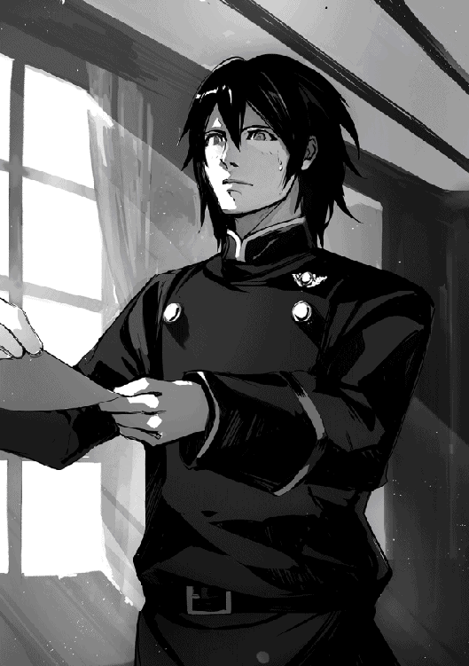
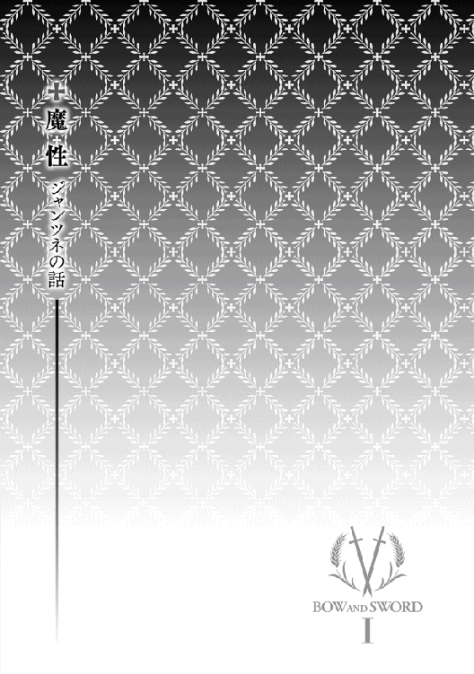
「これって、......やばいんじゃね？」
若便りの三つ目を読んでぎょっとした俺は、隣にいるバーラセラスにそっと囁いた。
明日は「ともびと」の発売日。俺達は今、モンガー印刷所で手にしたばかりの今月号の若便りを読んでいる。
「八日。御昼食の席にて、若が明日のお天気の話を右手の方となさった。それがいつの間にか賭けの話となり、若の天気予報が一ヶ月毎日当たれば、右手の方は「料亭 流花」で若に夕食を御馳走下さり、一日でも外れたら若が御馳走なさるとの事」
「料亭 流花」の女将って言えば、魔性の女として知られてる。次から次へと男を引き寄せ、散々貢がせた後でポイ、なんだと。どんな女たらしが勢い込んで乗り込んで行っても、腑抜けになって帰って来る。金が続く内は通い詰め、金が切れたら縁の切れ目。それでも貢ぐ男が途切れた事はねえ、て話だ。
もっとも「料亭 流花」なんて万札が吹っ飛ぶ所に、俺のような金欠平民の新兵が行ける訳もねえ。ほんとはどんな女なのか、自分の目で見た事ある訳じゃねえけどよ。
バーラセラスはどうやら俺以上にショックを受けたらしく、目をかっと見開いたまま会誌を見つめて無言だ。代わりに俺の後ろにいたキャルセンが答えた。
「やばいってどころの騒ぎじゃねえだろ」
因みに、今ここにいるのは俺を入れて六人。キャルセン、エスカノ、ウィネセク、ムセーバのいずれも若ファンの北軍兵士だ。何でこんな所で印刷の手伝いしているのかと言えば、会誌を一足先に買いたいから。
「ともびと」は発売日前の夜に印刷が終わったら、朝に第一駐屯地書店に入荷され、店先に並ぶ暇もあらばこそ、の勢いで売れていく。でも売り子はふたりしかいねえんだ。みんな釣り銭のないように金を用意して行くが、それでも長い列が出来る。
俺だって開店前の店に並んで朝イチで買いてえが、俺みたいな新兵だと朝練の後に任務、それが終わったらあっちこっち用事を言いつけられてるし、当番とかもある。どんなにすぐ読みたくたって、呑気に並んでいる暇なんかねえ。
昼の休憩だって長い訳じゃねえし。買いに行ってたら昼飯抜きだ。昼飯抜く覚悟ならあるけどよ、そこまでしたって買えるって保証はねえ。下手すると、昼飯抜きで午後にぶったおれ、夜も買いのがして、翌日売り切れの憂き目を見る事だってありえる。なにより発売日の夕方まで待たされるのはつれえ。という訳で、発売日前夜に印刷所に押し掛け、いつ印刷し終わる、とやいやいせっつく奴が出始めた。
それでモンガー印刷所から従者の会へ、ただでさえ忙しいっていうのに、と苦情が入ったらしい。騒いでいる奴らは従者ばかりって訳でもねえんだが。「ともびと」を発行している「北軍従者の会」には本当に従者でなくちゃ入れねえが、「ともびと」は会員でなくても買えるからな。
ともかく従者の会合で話しあった結果、そんなら押し掛けて来る奴らに印刷の手伝いをさせればいい、という案が出た。無料で手伝う代わりに、印刷と梱包が終わり次第、その場で「ともびと」が買えるようにしたんだ。それ以来、八方丸く収まっている。
会員だったら、裏に会誌用のスタンプが押せるようになっている会員証を見せれば、モンガー印刷所の会計がスタンプを押してくれる。従者の奴らは会誌を手にした途端、主の所へ走って帰って行った。
エスカノが、俺達の中で一番物覚えがいいウィネセクに聞いた。
「八日の右手って、誰だっけ？」
「ケイザベイ小隊長だ」
ひいいい、という声こそかろうじて洩らさねえで済んだけど、体をぶるっと震えさせたのは俺だけじゃねえ。
泣く子も黙る百剣の第三位。睨まれたらちびりそうな強面だ。
最初のショックから立ち直ったらしいバーラセラスが、ちょっと青ざめた顔で「ともびと」をそそくさと桐の箱に入れ、背嚢に仕舞うと、俺に向かって何をぐずぐずしていると叱るかのように言った。
「ジャンツネ、すぐ誰かに知らせなきゃ」
「誰かって、誰？」
ウィネセクが落ち着いた様子で「ともびと」を背嚢に入れながら聞き返した。
確かに、これって誰に言えばいいんだか、迷うよな。普通だったら本人に教えりゃ済む事だけどよ。
「若か？ 魔性の女、て何、て聞き返されたらどうする気だ？ なんて説明する？」
それに答えられず、バーラセラスは黙った。説明の仕方が悪けりゃ豪弓会の連中から吊るし上げを食う事がありえるだけに。
「その点、従者のウィルマーなら一を聞いて十を知る奴だから面倒はないが、若よりずっと近寄り難い。近寄るだけなら何とかなるが、しょっちゅう若と一緒にいるから、あいつだけちょっとこっちに来いと呼ぶ真似が出来ないだろ。絶対側にいた若に理由を聞かれる。すると残るは若の同期か上官になるが、それならどうせ明日には会誌を読むんだ。俺達がわざわざ今晩寝てる奴を起こしてまで教える必要があるか？」
そこで俺の右隣にいたムセーバが誰ともなく聞いた。
「どっちにしたって、もう賭けちゃったんだ。今から教えた所で、賭けをちゃらになんか出来ねえよな。それよりさ、ケイザベイ小隊長、どんなつもりでこんな事言い出したんだと思う？」
みんな肩を竦めた。俺達六人は偶々第一駐屯地の近所の出身だから、入隊前から「流花」の女将の噂は知っていたが、北出身でも遠くの出身だと入隊するまで聞いた事がなかった、て事はありえる。それでも入隊して最初の年には酒の席やらで同期か先輩から聞かされるだろう。四十をとっくに過ぎてるケイザベイ小隊長が、あの年になるまであの女将の噂を知らないだなんて、ちょっと信じられねえ。つまり知っていて若をあぶねえ所へ連れて行こうとしてるんだ。
キャルセンが眉を顰めて囁いた。
「ケイザベイ小隊長自身、金を貢いだ過去があったりして」
「まさか。そんなら、尚更なんで若を連れて行こうとしてるのさ？」
「そう。これじゃあ、若が勝っても負けても流花に行く、て事だよな」
「ひょっとして、自分じゃなくても身内で身代すった奴とかいて、復讐してえ、とか？」
「六頭殺しの若が魔性の女をやっつける所を見たい、てか？」
「えーー？ そんな事して、返り討ちにあったらどうすんだよ」
「魔性の女 対 六頭殺しの若かー。すげえ。世紀の対戦だ。おい、どっちが勝つと思う？」
「ばか言ってんじゃねえ。若が勝つに決まってる」
俺がバーラセラスにそう言うと、奴がむっとしたように言い返した。
「そりゃ相手がオークとか男なら六頭殺しが負けるはずなんてないだろうさ。だけど相手は男殺しで知られる女だぜ。若ってまだ女を知らないんだろ。あっさり負けちゃったりして？」
どうやら他の奴らも似たような事を考えたらしく、うーんと唸っている。そこでエスカノが言った。
「あのさ、貴族の若様なら流花の女将の事、とっくに知ってたんじゃね？」
「雪まろげだって知らなかった御方だぜ。流花を知ってる訳あるかよ」
「そりゃまあ、そうか」
俺達の中ではもちろん、知り合いを含めたって女将を実際に見た事ある奴はいない。所詮は噂、又聞きの又聞きだ。若を魔性の女の毒牙から守ってやりたくたって、どうしたらいいか分からねえ。結局ウィネセクが諦めたようにため息を吐いた。
「なるようにしかならんだろ」
ところで、若のお天気予報に関しては当たるに決まってると全員が一致したんで、賭けにならなかったが、魔性の女に若が金を貢ぐようになるかどうかは意見が半々に分かれた。一度でも若が自分の金で流花に行くかどうか。行ったら負けで、負けた方が勝った方に酒を奢るという事にした。俺とムセーバとキャルセンは行かない方に賭けた。どっちが勝ったって？
女だろうが男だろうが、若よりすげえ魔性の人間なんて、この世に居る訳ねえだろ。
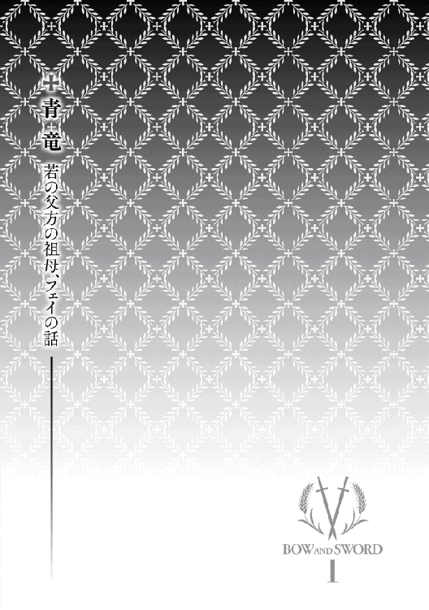
「ひりゅうって、なあに？」
図書室へ向かおうとして本館に通じる廊下を歩いている途中、開いている窓から孫のサダが誰かにそう質問している声が聞こえた。
六歳になったというのに飛竜を知らない？
意外な発見に、私は思わず立ち止まった。
自分がラガクイスト侯爵令嬢であったからと言って、婚家以上の出自と自惚れた事はないけれど、ラガクイスト侯爵家が代々何人もの西軍将軍、副将軍を輩出している皇国でも指折りの名家である事は事実。
飛竜は皇国内でも西の山脈地帯でしか棲息しないだけに、西軍と言えば、空軍。そして戦闘用飛竜の乗り手である竜騎士は皇国男子の憧れの的。
竜騎士ではなくとも、飛竜の乗り手になるにはまず飛竜との信頼関係を築かねばならない。受け入れられるまでは付きっきりとなりがちで、妻より飛竜の都合を優先させる為、理想の夫とは言い難いにも拘らず、未婚女性から熱い視線を浴びるけれど私が知る限り、ウィジャヤン家出身の竜騎士はひとりもいない。
ヴィジャヤン伯爵家周辺に棲息する飛竜はいないとは言え、それは誰の邸に行っても同じ事。飛竜は庭先で飼えるような動物ではないのだから。それでも絵本やお伽噺、飛竜のぬいぐるみなどを通じ、よちよち歩きの子供さえ知っていると思っていただけに、サダの無邪気な質問に驚いた。
飛竜の絵本ならヴィジャヤン伯爵邸図書室にも沢山置いてある。よくよく考えてみれば、私がサダに絵本を読んであげた事はないけれど。
西軍副将軍、竜騎士として勇名を馳せた亡きお父様がこれをお聞きになったら、眉を顰めておっしゃりそう。
「我が曾孫でありながら飛竜を知らぬとは。情けない事この上なし」
「大奥様、如何なさいました？」
後ろに従っていた侍女のトメが、立ち止まったままの私に物問いたげな視線を投げて寄越した。
「あら、そう言えば、トメ。二年前、あなたが当家に来たのは飛竜が機縁ではなかったかしら。あの年、当代様は子供達を飛竜に乗せてあげたいとおっしゃって、四歳になったばかりのサダも一緒に連れて行かれたのですよ。なぜサダが飛竜を知らないのか分かりますか？ いくら物覚えが悪い子と言っても、それ程簡単に忘れるような事かしら？」
「実を申しますと、旦那様は私の村に宿泊なさった後で御旅程を変更なさり、すぐに御帰宅なさいました。皆様、飛竜に乗るどころか、一頭も御覧になってはいらっしゃいません」
「まあ。一体何があったの？」
「あの年、私は『飛竜の嫁』として飛竜祭で死ぬはずでした。それが不思議な巡り合わせで、若に命を救われたのです」
「何ですって？」
飛竜祭は誰も知らない遥か昔から続いている奇習で、処女を飛竜に捧げ、村の繁栄を祈る。「飛竜の嫁」と言えば聞こえは良いけれど、山脈の奥にある飛竜の巣に置き去りにされた娘は死ぬしかない。
「未だに年端も行かない娘を犠牲として捧げている村があるだなんて。ラガクイスト侯爵家ではお父様の代から禁止令を出しているというのに」
十二歳という年に似合わぬ老成した諦観の色を瞳に浮かべ、トメが静かに答えた。
「御利益を信じている者もいるかと存じますが、憎い愛人の産んだ娘の一人や二人はどこにでもいるもの」
そのような事情があったとは。当代様が旅先で奉公人を見つけて来る事は珍しくない。トメを連れて帰った時も、聡明な娘という第一印象だったから詳しい事情を聞いたりはしなかった。
「ところで、一旦飛竜の嫁として選ばれたら逃れる道はないと聞いていたのだけれど、サダは何をしたの？」
私の問いに、トメが笑いと困惑を半々に混ぜたような顔をした。
「その時私は柵の内側にいました。私の花嫁衣装が珍しく、もっと近寄って御覧になりたかったのでしょう。柵は子供といえどもすり抜けられるような間隔ではなかったのですが、なんと若はその柵をすり抜けられまして。それに気付いた侍女がすぐさま後を追いかけたものの、入り口の方へ回るしかありません。連れ戻される前に、その、お小水をもよおされたようで」
「え？」
「ズボンを、さっと」
「！」
私は思わず手にしたハンカチで口元を覆った。
「何分あっという間の出来事で、誰かが止める間もございません。私の村では、飛竜の嫁は未婚、生娘である事はもちろん、生まれた時から男性の一物を見た事がない娘でなければならないという決まりになっております。そのため私は生まれた時から父や兄弟からも隔離されて暮らしておりました。当時若は四歳でしたが、子供であろうと男性は男性。その場には村の女が多数おりましたので、見なかった事にする訳にもいかず、という次第です」
それにしても、何たる無作法。当代様はトメの命を助けた事を鑑みて帳消しになさったのかも知れないけれど。仮にも貴族の子弟ともあろう者が、所構わず放尿などして良い事ではない。サダの無作法には慣れている私も、これにはさすがに呆れてしまった。
私の表情を見て、サダが叱られるとでも思ったのか、トメがサダを庇い始めた。
「あの、でも、それからは必ず木か茂みの前でなさっていらっしゃいました」
「ともかく、あなたの命が助かったのは幸いでした。ただ、飛竜の嫁を穢した男性は殺されるのではなかった？ 殺されないまでも、後で大変な騒ぎになったのではないのかしら？」
「平民が同じ事をしたなら殺されたに違いありません。貴族でも一人旅でしたら危なかったと思います。でも若は領主様の従兄弟の御子息。旦那様には御自身の警備兵の他に、領主様が派遣した兵も同行しておりました。また、飛竜祭は領主様の禁止令に背いているのですから、邪魔をされた、と訴え出る訳にもまいりません。とは申しましても、転ばぬ先の杖。旦那様が御旅行を中断なさったのは、長居は無用と判断された故ではないかと存じます」
そう言う事情があったのなら仕方がないけれど、ラガクイスト侯爵家の血を引く者達を飛竜知らずにしておく訳にもいかない。私はその日お帰りになった当代様に、ヴィジャヤン伯爵家の次代を担う子供達が、一度も飛竜に乗った事がないのは由々しき問題である事を申し上げた。
「ふむ。お言葉、御最もです。タマラ、来月ラテフ（ラガクイスト侯爵家本邸所在地）に行く予定だったな？」
「さようでございます。六月十日より、一週間滞在の御予定となっております」
「季節も良い。マリジョー山脈まで足をのばす事にしよう。子供達でも乗れる飛竜の手配をしておくように」
「畏まりました」
当代様は御旅程を二週間に延長なさり、シノと子供達三人を連れてラテフへと旅立った。
二週間後、予定通りにお帰りになった。当代様も子供達も元気な様子だったけれど、シノだけは顔色が良くない。帰宅すると同時に寝込んだ。
何があったのか、誰に理由を聞いても、旅の疲れ、と繰り返すばかり。でも当代様はしょっちゅう家族で旅行している。今回よりずっと不便な旅行先や長期に渡る旅行でもシノが疲労で寝込んだ事などないのに。
何かあった事は間違いない。と疑いはしても、私には言いづらい何かだとしたら、家内は元より、ラテフにいる甥に手紙を出した所で教えてくれるかどうか。
そこでサダにはまだ何も聞いていなかった事を思い出した。
質問の仕方を間違えると予想外の答えが返って来るので注意が必要だけれど、少なくともあの子が嘘を吐いた事はない。
「サダ。今回の旅では飛竜に乗ったのでしょう？」
「はいっ」
「何色の飛竜に乗ったの？」
「青ですっ」
青？
確かに青い飛竜もいる事はいる。飛竜の中で一番速く、強い。けれど非常に気性が荒く乗り手を寄せ付けない。無理して乗ろうとすると振り落とされたり鋭い嘴で突き殺されたりする。
観光客が乗るのは比較的気性が安定している茶竜か緑竜だ。空軍なら荷物や人を運ぶための茶竜と緑竜の他に戦闘用の赤竜と黒竜も飼っているとはいえ、いずれも竜騎士一人しか乗れない。
もし誰かが青竜の飼育に成功したのだとしたら、たとえ飛竜に関心のない者にとってさえ大きな話題となったはず。私の知らぬ間に青竜に乗れる様になっただなんて、とても信じられない。
とは言いながら、サダは嘘を吐くような子でもなければ色盲でもないし。
「誰と一緒に乗ったの？」
「僕、ひとりですっ」
ひとり？
最も青竜なら他に乗り手がいなくても不思議はないのだけれど。
茶竜か緑竜でさえ決まった乗り手以外の者には滅多に手綱を許さないのだから。観光客は「荷物」として乗るのであって、手綱を握る訳ではない。
これ以上は聞きたいような聞きたくないような。それでも私が言い出した所為で飛竜に乗りに行ったと思えば、詳細を知らないままでは寝覚めが悪い。
「どんな風にして手綱を握らせてもらったの？」
「手綱？ ない、です」
手綱が、ない？
「では、どうやって飛竜の背に上ったのかしら？」
「飛竜が、こう、飛んで来てー」
サダは手をしゅっと右上から左下に向けて動かしたかと思うと、がしっと自分の服の襟首を掴み、ぐいっと上へ引っ張った。
「ここを掴んで、ぽーん、て」
その有様を如実に伝えたかったのか、サダは助走なしでくるっと宙返りした。
「ティールームで宙返りしてはなりません」
「ごめんなさい」
「つまり、飛竜の背中に落とされた？」
「そう、です」
「......それから、どうしたの？」
「飛竜が、こう、飛んでー」
サダが掌を垂直にして、天井に向かってすっと上げた。
「その次に、こう、飛んでー」
今度は掌を床に向かってすっと落とした。
「こう、飛んだのー、です」
腕を波の様にくねくねと上下させ始めた。
「よく、......振り落とされなかったわね」
「背中に、わしゃわしゃ毛が生えていてー、絡まっちゃってー」
何がおかしいのか、サダはくすくす笑い始めた。
詳細不明ながら、背中に毛が生えているのは青竜だけ。サダが青竜に乗ったのは間違いない。これでなぜシノが寝込んだかが分かった。そしてなぜ私に理由を黙っていたのかも。
目前で我が子が青竜に攫われるだなんて、シノにとってどれ程胸の潰れる思いだった事か。おそらく二度と飛竜の側に近寄りたくはないでしょう。
私とて、その場に居合わせれば驚愕と同時に心配したと思うけれど、竜騎士を誇りとする家に生まれ育っている。皇国史上初めて青竜に乗った偉業に対する興奮の方が大きい。興奮のあまり、私がラガクイスト侯爵家へ知らせる手紙を書く事を心配されたのに違いない。青竜に乗れる者がいると知ったら、たとえそれが自分の血縁でなかったとしてもラガクイスト侯爵が黙っているとは思えない。この知らせを受け取ったラガクイスト侯爵から、サダを養子に望まれる事を危惧したのだろう。
私はサダに、冒険譚のその先を訊ねた。
「どのようにして飛竜から下りたの？」
「飛竜が、川で水を飲んでー。ざぶん、て。ぶるん、ぶるん、した時、飛ばされたのー」
犬が濡れた体の水気を切るかのように、サダは体を左右に揺らした。
「すると、川に落ちた？」
「そう、です」
「サダは泳げるの？」
「はいっ！」
「川の水は冷たかったでしょう？」
「はい」
「風邪は引かなかった？」
「引かない、です」
「......サダは強い子ですものね」
「はいっ！」
青竜が水浴びをするのはマリジョー山脈の最奥、リフィス川の水源近くと言われている。その付近には青竜以外の飛竜は青竜を怖れてか、近づこうとしない。仮に飛竜を使った捜索隊を派遣したのだとしても、かなり離れた所で着地し、そこからは徒歩で行くしかなかったはず。運良くサダがすぐに見つかったのだとしても、そこから一週間やそこらで戻れたとは思えない。リフィス川の水源から一番近い人里に辿り着くには大人の足でも何日もかかるはず。
サダがいつ青竜に攫われたのかは知らないけれど、予定通り二週間で帰って来たという事は、自力で何らかの方法を見つけ、無事家族のいる場所まで戻ったとしか考えられない。
「どうやって戻ったの？」
「川からあがって、眠ってー。目が覚めたら、母上がいて。ぎゅううって。痛かったかもー」
これ以上質問しても、この子からは何も引き出せまい。
誰かが、いえ、人ならぬ何かが、この子を守ってくれたのだ。
「サダ、私のお父様はね、竜騎士として勇名を馳せた御方だったのよ」
「りゅーきし、て何ですか？」
「飛竜に乗って戦う兵士の事よ。あなたが青い竜に乗ったと知ったら、きっととても喜ばれて、こうおっしゃったと思うわ」
私は少し呼吸を整え、お父様の口調を真似して言った。
「さすがは我が曾孫、あっぱれである！」
弓と剣Ｉ
2016年９月１日発行 ver.1.0
著 者 淳Ａ
発行所 TOブックス
〒150-0045 東京都渋谷区神泉町18-８
松濤ハイツ２Ｆ
03-6452-5678（編集）
0120-933-772（営業フリーダイヤル）
Ⓒ2016 Jun A
※無断で複製・複写・データ配信などをすることは、かたくお断りいたします。
本電子書籍は下記にもとづいて制作しました
弓と剣Ｉ
発行日 2016年９月１日 第１刷発行
本作品の全部または一部を無断で複製、転載、配信、送信したり、ホームぺージ上に転載することを禁止します。また、本作品の内容を無断で改変、改ざん等を行うことも禁止します。
本作品購入時にご承諾いただいた規約により、有償・無償にかかわらず本作品を第三者に譲渡することはできません。
本作品を示すサムネイルなどのイメージ画像は、再ダウンロード時に予告なく変更される場合があります。
本作品は縦書きでレイアウトされています。
また、ご覧になるリーディングシステムにより、表示の差が認められることがあります。